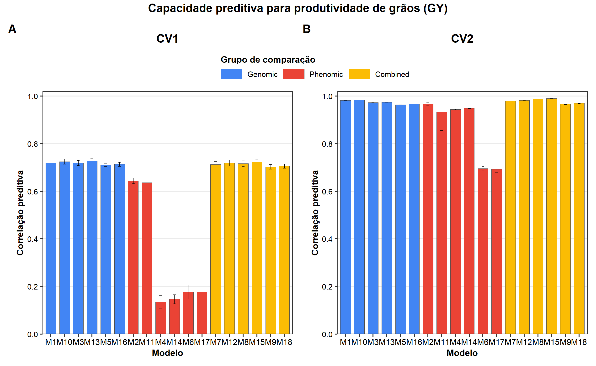
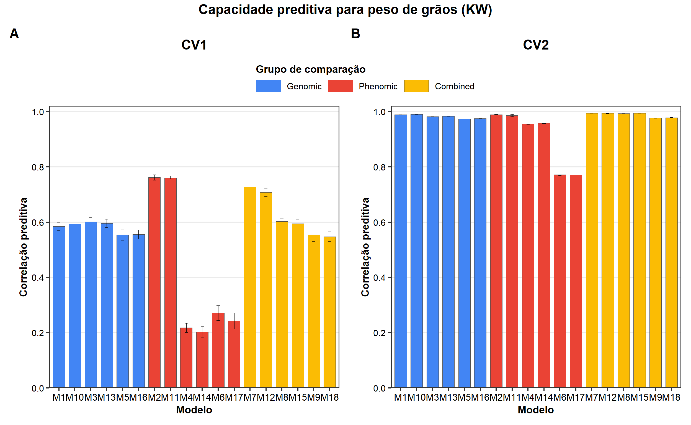
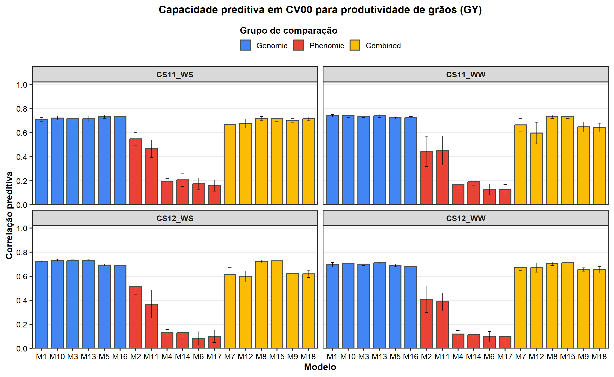
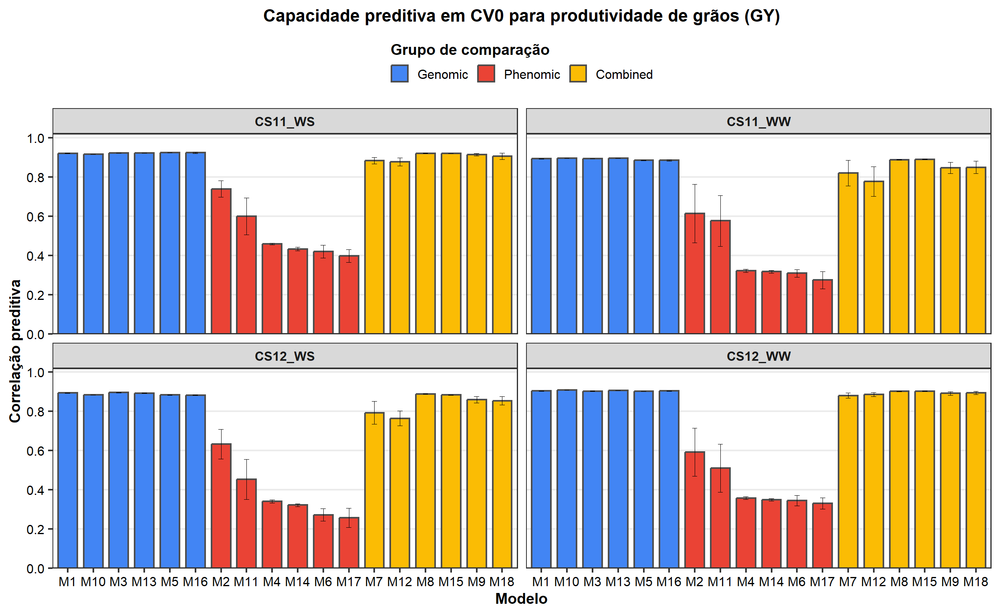
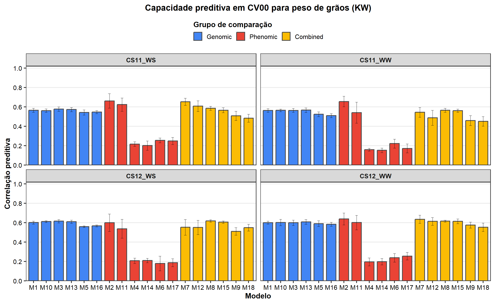
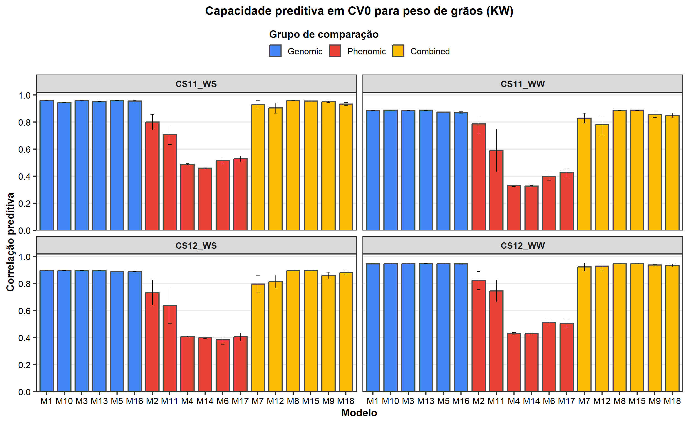

Last updated: 2026-05-05
Checks: 6 1
Knit directory:
Integrating-nir-genomic-kernel/
This reproducible R Markdown analysis was created with workflowr (version 1.7.2). The Checks tab describes the reproducibility checks that were applied when the results were created. The Past versions tab lists the development history.
The R Markdown file has unstaged changes. To know which version of
the R Markdown file created these results, you’ll want to first commit
it to the Git repo. If you’re still working on the analysis, you can
ignore this warning. When you’re finished, you can run
wflow_publish to commit the R Markdown file and build the
HTML.
Great job! The global environment was empty. Objects defined in the global environment can affect the analysis in your R Markdown file in unknown ways. For reproduciblity it’s best to always run the code in an empty environment.
The command set.seed(20250829) was run prior to running
the code in the R Markdown file. Setting a seed ensures that any results
that rely on randomness, e.g. subsampling or permutations, are
reproducible.
Great job! Recording the operating system, R version, and package versions is critical for reproducibility.
Nice! There were no cached chunks for this analysis, so you can be confident that you successfully produced the results during this run.
Great job! Using relative paths to the files within your workflowr project makes it easier to run your code on other machines.
Great! You are using Git for version control. Tracking code development and connecting the code version to the results is critical for reproducibility.
The results in this page were generated with repository version c3f4a7a. See the Past versions tab to see a history of the changes made to the R Markdown and HTML files.
Note that you need to be careful to ensure that all relevant files for
the analysis have been committed to Git prior to generating the results
(you can use wflow_publish or
wflow_git_commit). workflowr only checks the R Markdown
file, but you know if there are other scripts or data files that it
depends on. Below is the status of the Git repository when the results
were generated:
Ignored files:
Ignored: .Rhistory
Ignored: .Rproj.user/
Ignored: analysis/analysis.Rmd
Ignored: analysis/run_cv0_cv00_only.R
Ignored: analysis/run_cv1_cv2_only.R
Ignored: analysis/script_tabelas_resultados_pipeline_v2.R
Ignored: data/Article_documents/
Ignored: data/Maize-NIRS-GBS-main/
Ignored: output/Matrizes/Geno.all.rds
Ignored: output/Matrizes/NIR.all.rds
Ignored: output/Matrizes/figures/
Ignored: output/adjust_models.rar
Ignored: output/climate_results/combined_additional_climate_plots.tiff
Ignored: output/climate_results/combined_climate_plot.tiff
Ignored: output/climate_results/daily_air_temperature.tiff
Ignored: output/climate_results/daily_precipitation_by_month.tiff
Ignored: output/climate_results/daily_precipitation_overview.tiff
Ignored: output/climate_results/daily_relative_humidity.tiff
Ignored: output/climate_results/daily_solar_radiation.tiff
Ignored: output/climate_results/daily_wind_speed.tiff
Ignored: output/climate_results/monthly_precipitation_totals.tiff
Ignored: output/cv-schemes.tiff
Ignored: output/figures/
Ignored: output/results/
Ignored: output/tables/pipeline_review/
Ignored: output/tables/prediction_cv0_cv00_raw.csv
Ignored: output/tables/prediction_cv1_cv2_by_rep_fold_env.csv
Ignored: output/tables/prediction_cv1_cv2_raw.csv
Ignored: output/variance_components/bglr_runs/GY/rep01/Eta1/VC_GY_Eta1_rep01_ETA_E_varB.dat
Ignored: output/variance_components/bglr_runs/GY/rep01/Eta1/VC_GY_Eta1_rep01_ETA_GE_varU.dat
Ignored: output/variance_components/bglr_runs/GY/rep01/Eta1/VC_GY_Eta1_rep01_ETA_G_varU.dat
Ignored: output/variance_components/bglr_runs/GY/rep01/Eta1/VC_GY_Eta1_rep01_mu.dat
Ignored: output/variance_components/bglr_runs/GY/rep01/Eta1/VC_GY_Eta1_rep01_varE.dat
Ignored: output/variance_components/bglr_runs/GY/rep01/Eta10/VC_GY_Eta10_rep01_ETA_E_varB.dat
Ignored: output/variance_components/bglr_runs/GY/rep01/Eta10/VC_GY_Eta10_rep01_ETA_GE_varU.dat
Ignored: output/variance_components/bglr_runs/GY/rep01/Eta10/VC_GY_Eta10_rep01_ETA_GW_varU.dat
Ignored: output/variance_components/bglr_runs/GY/rep01/Eta10/VC_GY_Eta10_rep01_ETA_G_varU.dat
Ignored: output/variance_components/bglr_runs/GY/rep01/Eta10/VC_GY_Eta10_rep01_ETA_W_varU.dat
Ignored: output/variance_components/bglr_runs/GY/rep01/Eta10/VC_GY_Eta10_rep01_mu.dat
Ignored: output/variance_components/bglr_runs/GY/rep01/Eta10/VC_GY_Eta10_rep01_varE.dat
Ignored: output/variance_components/bglr_runs/GY/rep01/Eta11/VC_GY_Eta11_rep01_ETA_E_varB.dat
Ignored: output/variance_components/bglr_runs/GY/rep01/Eta11/VC_GY_Eta11_rep01_ETA_PE_varU.dat
Ignored: output/variance_components/bglr_runs/GY/rep01/Eta11/VC_GY_Eta11_rep01_ETA_PW_varU.dat
Ignored: output/variance_components/bglr_runs/GY/rep01/Eta11/VC_GY_Eta11_rep01_ETA_P_varU.dat
Ignored: output/variance_components/bglr_runs/GY/rep01/Eta11/VC_GY_Eta11_rep01_ETA_W_varU.dat
Ignored: output/variance_components/bglr_runs/GY/rep01/Eta11/VC_GY_Eta11_rep01_mu.dat
Ignored: output/variance_components/bglr_runs/GY/rep01/Eta11/VC_GY_Eta11_rep01_varE.dat
Ignored: output/variance_components/bglr_runs/GY/rep01/Eta12/VC_GY_Eta12_rep01_ETA_E_varB.dat
Ignored: output/variance_components/bglr_runs/GY/rep01/Eta12/VC_GY_Eta12_rep01_ETA_GE_varU.dat
Ignored: output/variance_components/bglr_runs/GY/rep01/Eta12/VC_GY_Eta12_rep01_ETA_GW_varU.dat
Ignored: output/variance_components/bglr_runs/GY/rep01/Eta12/VC_GY_Eta12_rep01_ETA_G_varU.dat
Ignored: output/variance_components/bglr_runs/GY/rep01/Eta12/VC_GY_Eta12_rep01_ETA_PE_varU.dat
Ignored: output/variance_components/bglr_runs/GY/rep01/Eta12/VC_GY_Eta12_rep01_ETA_PW_varU.dat
Ignored: output/variance_components/bglr_runs/GY/rep01/Eta12/VC_GY_Eta12_rep01_ETA_P_varU.dat
Ignored: output/variance_components/bglr_runs/GY/rep01/Eta12/VC_GY_Eta12_rep01_ETA_W_varU.dat
Ignored: output/variance_components/bglr_runs/GY/rep01/Eta12/VC_GY_Eta12_rep01_mu.dat
Ignored: output/variance_components/bglr_runs/GY/rep01/Eta12/VC_GY_Eta12_rep01_varE.dat
Ignored: output/variance_components/bglr_runs/GY/rep01/Eta13/VC_GY_Eta13_rep01_ETA_E_varB.dat
Ignored: output/variance_components/bglr_runs/GY/rep01/Eta13/VC_GY_Eta13_rep01_ETA_GGKE_varU.dat
Ignored: output/variance_components/bglr_runs/GY/rep01/Eta13/VC_GY_Eta13_rep01_ETA_GGKW_varU.dat
Ignored: output/variance_components/bglr_runs/GY/rep01/Eta13/VC_GY_Eta13_rep01_ETA_GGK_varU.dat
Ignored: output/variance_components/bglr_runs/GY/rep01/Eta13/VC_GY_Eta13_rep01_ETA_W_varU.dat
Ignored: output/variance_components/bglr_runs/GY/rep01/Eta13/VC_GY_Eta13_rep01_mu.dat
Ignored: output/variance_components/bglr_runs/GY/rep01/Eta13/VC_GY_Eta13_rep01_varE.dat
Ignored: output/variance_components/bglr_runs/GY/rep01/Eta14/VC_GY_Eta14_rep01_ETA_E_varB.dat
Ignored: output/variance_components/bglr_runs/GY/rep01/Eta14/VC_GY_Eta14_rep01_ETA_PGKE_varU.dat
Ignored: output/variance_components/bglr_runs/GY/rep01/Eta14/VC_GY_Eta14_rep01_ETA_PGKW_varU.dat
Ignored: output/variance_components/bglr_runs/GY/rep01/Eta14/VC_GY_Eta14_rep01_ETA_PGK_varU.dat
Ignored: output/variance_components/bglr_runs/GY/rep01/Eta14/VC_GY_Eta14_rep01_ETA_W_varU.dat
Ignored: output/variance_components/bglr_runs/GY/rep01/Eta14/VC_GY_Eta14_rep01_mu.dat
Ignored: output/variance_components/bglr_runs/GY/rep01/Eta14/VC_GY_Eta14_rep01_varE.dat
Ignored: output/variance_components/bglr_runs/GY/rep01/Eta15/VC_GY_Eta15_rep01_ETA_E_varB.dat
Ignored: output/variance_components/bglr_runs/GY/rep01/Eta15/VC_GY_Eta15_rep01_ETA_GGKE_varU.dat
Ignored: output/variance_components/bglr_runs/GY/rep01/Eta15/VC_GY_Eta15_rep01_ETA_GGKW_varU.dat
Ignored: output/variance_components/bglr_runs/GY/rep01/Eta15/VC_GY_Eta15_rep01_ETA_GGK_varU.dat
Ignored: output/variance_components/bglr_runs/GY/rep01/Eta15/VC_GY_Eta15_rep01_ETA_PGKE_varU.dat
Ignored: output/variance_components/bglr_runs/GY/rep01/Eta15/VC_GY_Eta15_rep01_ETA_PGKW_varU.dat
Ignored: output/variance_components/bglr_runs/GY/rep01/Eta15/VC_GY_Eta15_rep01_ETA_PGK_varU.dat
Ignored: output/variance_components/bglr_runs/GY/rep01/Eta15/VC_GY_Eta15_rep01_ETA_W_varU.dat
Ignored: output/variance_components/bglr_runs/GY/rep01/Eta15/VC_GY_Eta15_rep01_mu.dat
Ignored: output/variance_components/bglr_runs/GY/rep01/Eta15/VC_GY_Eta15_rep01_varE.dat
Ignored: output/variance_components/bglr_runs/GY/rep01/Eta16/VC_GY_Eta16_rep01_ETA_E_varB.dat
Ignored: output/variance_components/bglr_runs/GY/rep01/Eta16/VC_GY_Eta16_rep01_ETA_GAKE_varU.dat
Ignored: output/variance_components/bglr_runs/GY/rep01/Eta16/VC_GY_Eta16_rep01_ETA_GAKW_varU.dat
Ignored: output/variance_components/bglr_runs/GY/rep01/Eta16/VC_GY_Eta16_rep01_ETA_GAK_varU.dat
Ignored: output/variance_components/bglr_runs/GY/rep01/Eta16/VC_GY_Eta16_rep01_ETA_W_varU.dat
Ignored: output/variance_components/bglr_runs/GY/rep01/Eta16/VC_GY_Eta16_rep01_mu.dat
Ignored: output/variance_components/bglr_runs/GY/rep01/Eta16/VC_GY_Eta16_rep01_varE.dat
Ignored: output/variance_components/bglr_runs/GY/rep01/Eta17/VC_GY_Eta17_rep01_ETA_E_varB.dat
Ignored: output/variance_components/bglr_runs/GY/rep01/Eta17/VC_GY_Eta17_rep01_ETA_PAKE_varU.dat
Ignored: output/variance_components/bglr_runs/GY/rep01/Eta17/VC_GY_Eta17_rep01_ETA_PAKW_varU.dat
Ignored: output/variance_components/bglr_runs/GY/rep01/Eta17/VC_GY_Eta17_rep01_ETA_PAK_varU.dat
Ignored: output/variance_components/bglr_runs/GY/rep01/Eta17/VC_GY_Eta17_rep01_ETA_W_varU.dat
Ignored: output/variance_components/bglr_runs/GY/rep01/Eta17/VC_GY_Eta17_rep01_mu.dat
Ignored: output/variance_components/bglr_runs/GY/rep01/Eta17/VC_GY_Eta17_rep01_varE.dat
Ignored: output/variance_components/bglr_runs/GY/rep01/Eta18/VC_GY_Eta18_rep01_ETA_E_varB.dat
Ignored: output/variance_components/bglr_runs/GY/rep01/Eta18/VC_GY_Eta18_rep01_ETA_GAKE_varU.dat
Ignored: output/variance_components/bglr_runs/GY/rep01/Eta18/VC_GY_Eta18_rep01_ETA_GAKW_varU.dat
Ignored: output/variance_components/bglr_runs/GY/rep01/Eta18/VC_GY_Eta18_rep01_ETA_GAK_varU.dat
Ignored: output/variance_components/bglr_runs/GY/rep01/Eta18/VC_GY_Eta18_rep01_ETA_PAKE_varU.dat
Ignored: output/variance_components/bglr_runs/GY/rep01/Eta18/VC_GY_Eta18_rep01_ETA_PAKW_varU.dat
Ignored: output/variance_components/bglr_runs/GY/rep01/Eta18/VC_GY_Eta18_rep01_ETA_PAK_varU.dat
Ignored: output/variance_components/bglr_runs/GY/rep01/Eta18/VC_GY_Eta18_rep01_ETA_W_varU.dat
Ignored: output/variance_components/bglr_runs/GY/rep01/Eta18/VC_GY_Eta18_rep01_mu.dat
Ignored: output/variance_components/bglr_runs/GY/rep01/Eta18/VC_GY_Eta18_rep01_varE.dat
Ignored: output/variance_components/bglr_runs/GY/rep01/Eta2/VC_GY_Eta2_rep01_ETA_E_varB.dat
Ignored: output/variance_components/bglr_runs/GY/rep01/Eta2/VC_GY_Eta2_rep01_ETA_PE_varU.dat
Ignored: output/variance_components/bglr_runs/GY/rep01/Eta2/VC_GY_Eta2_rep01_ETA_P_varU.dat
Ignored: output/variance_components/bglr_runs/GY/rep01/Eta2/VC_GY_Eta2_rep01_mu.dat
Ignored: output/variance_components/bglr_runs/GY/rep01/Eta2/VC_GY_Eta2_rep01_varE.dat
Ignored: output/variance_components/bglr_runs/GY/rep01/Eta3/VC_GY_Eta3_rep01_ETA_E_varB.dat
Ignored: output/variance_components/bglr_runs/GY/rep01/Eta3/VC_GY_Eta3_rep01_ETA_GGKE_varU.dat
Ignored: output/variance_components/bglr_runs/GY/rep01/Eta3/VC_GY_Eta3_rep01_ETA_GGK_varU.dat
Ignored: output/variance_components/bglr_runs/GY/rep01/Eta3/VC_GY_Eta3_rep01_mu.dat
Ignored: output/variance_components/bglr_runs/GY/rep01/Eta3/VC_GY_Eta3_rep01_varE.dat
Ignored: output/variance_components/bglr_runs/GY/rep01/Eta4/VC_GY_Eta4_rep01_ETA_E_varB.dat
Ignored: output/variance_components/bglr_runs/GY/rep01/Eta4/VC_GY_Eta4_rep01_ETA_PGKE_varU.dat
Ignored: output/variance_components/bglr_runs/GY/rep01/Eta4/VC_GY_Eta4_rep01_ETA_PGK_varU.dat
Ignored: output/variance_components/bglr_runs/GY/rep01/Eta4/VC_GY_Eta4_rep01_mu.dat
Ignored: output/variance_components/bglr_runs/GY/rep01/Eta4/VC_GY_Eta4_rep01_varE.dat
Ignored: output/variance_components/bglr_runs/GY/rep01/Eta5/VC_GY_Eta5_rep01_ETA_E_varB.dat
Ignored: output/variance_components/bglr_runs/GY/rep01/Eta5/VC_GY_Eta5_rep01_ETA_GAKE_varU.dat
Ignored: output/variance_components/bglr_runs/GY/rep01/Eta5/VC_GY_Eta5_rep01_ETA_GAK_varU.dat
Ignored: output/variance_components/bglr_runs/GY/rep01/Eta5/VC_GY_Eta5_rep01_mu.dat
Ignored: output/variance_components/bglr_runs/GY/rep01/Eta5/VC_GY_Eta5_rep01_varE.dat
Ignored: output/variance_components/bglr_runs/GY/rep01/Eta6/VC_GY_Eta6_rep01_ETA_E_varB.dat
Ignored: output/variance_components/bglr_runs/GY/rep01/Eta6/VC_GY_Eta6_rep01_ETA_PAKE_varU.dat
Ignored: output/variance_components/bglr_runs/GY/rep01/Eta6/VC_GY_Eta6_rep01_ETA_PAK_varU.dat
Ignored: output/variance_components/bglr_runs/GY/rep01/Eta6/VC_GY_Eta6_rep01_mu.dat
Ignored: output/variance_components/bglr_runs/GY/rep01/Eta6/VC_GY_Eta6_rep01_varE.dat
Ignored: output/variance_components/bglr_runs/GY/rep01/Eta7/VC_GY_Eta7_rep01_ETA_E_varB.dat
Ignored: output/variance_components/bglr_runs/GY/rep01/Eta7/VC_GY_Eta7_rep01_ETA_GE_varU.dat
Ignored: output/variance_components/bglr_runs/GY/rep01/Eta7/VC_GY_Eta7_rep01_ETA_G_varU.dat
Ignored: output/variance_components/bglr_runs/GY/rep01/Eta7/VC_GY_Eta7_rep01_ETA_PE_varU.dat
Ignored: output/variance_components/bglr_runs/GY/rep01/Eta7/VC_GY_Eta7_rep01_ETA_P_varU.dat
Ignored: output/variance_components/bglr_runs/GY/rep01/Eta7/VC_GY_Eta7_rep01_mu.dat
Ignored: output/variance_components/bglr_runs/GY/rep01/Eta7/VC_GY_Eta7_rep01_varE.dat
Ignored: output/variance_components/bglr_runs/GY/rep01/Eta8/VC_GY_Eta8_rep01_ETA_E_varB.dat
Ignored: output/variance_components/bglr_runs/GY/rep01/Eta8/VC_GY_Eta8_rep01_ETA_GGKE_varU.dat
Ignored: output/variance_components/bglr_runs/GY/rep01/Eta8/VC_GY_Eta8_rep01_ETA_GGK_varU.dat
Ignored: output/variance_components/bglr_runs/GY/rep01/Eta8/VC_GY_Eta8_rep01_ETA_PGKE_varU.dat
Ignored: output/variance_components/bglr_runs/GY/rep01/Eta8/VC_GY_Eta8_rep01_ETA_PGK_varU.dat
Ignored: output/variance_components/bglr_runs/GY/rep01/Eta8/VC_GY_Eta8_rep01_mu.dat
Ignored: output/variance_components/bglr_runs/GY/rep01/Eta8/VC_GY_Eta8_rep01_varE.dat
Ignored: output/variance_components/bglr_runs/GY/rep01/Eta9/VC_GY_Eta9_rep01_ETA_E_varB.dat
Ignored: output/variance_components/bglr_runs/GY/rep01/Eta9/VC_GY_Eta9_rep01_ETA_GAKE_varU.dat
Ignored: output/variance_components/bglr_runs/GY/rep01/Eta9/VC_GY_Eta9_rep01_ETA_GAK_varU.dat
Ignored: output/variance_components/bglr_runs/GY/rep01/Eta9/VC_GY_Eta9_rep01_ETA_PAKE_varU.dat
Ignored: output/variance_components/bglr_runs/GY/rep01/Eta9/VC_GY_Eta9_rep01_ETA_PAK_varU.dat
Ignored: output/variance_components/bglr_runs/GY/rep01/Eta9/VC_GY_Eta9_rep01_mu.dat
Ignored: output/variance_components/bglr_runs/GY/rep01/Eta9/VC_GY_Eta9_rep01_varE.dat
Ignored: output/variance_components/bglr_runs/GY/rep02/Eta1/VC_GY_Eta1_rep02_ETA_E_varB.dat
Ignored: output/variance_components/bglr_runs/GY/rep02/Eta1/VC_GY_Eta1_rep02_ETA_GE_varU.dat
Ignored: output/variance_components/bglr_runs/GY/rep02/Eta1/VC_GY_Eta1_rep02_ETA_G_varU.dat
Ignored: output/variance_components/bglr_runs/GY/rep02/Eta1/VC_GY_Eta1_rep02_mu.dat
Ignored: output/variance_components/bglr_runs/GY/rep02/Eta1/VC_GY_Eta1_rep02_varE.dat
Ignored: output/variance_components/bglr_runs/GY/rep02/Eta10/VC_GY_Eta10_rep02_ETA_E_varB.dat
Ignored: output/variance_components/bglr_runs/GY/rep02/Eta10/VC_GY_Eta10_rep02_ETA_GE_varU.dat
Ignored: output/variance_components/bglr_runs/GY/rep02/Eta10/VC_GY_Eta10_rep02_ETA_GW_varU.dat
Ignored: output/variance_components/bglr_runs/GY/rep02/Eta10/VC_GY_Eta10_rep02_ETA_G_varU.dat
Ignored: output/variance_components/bglr_runs/GY/rep02/Eta10/VC_GY_Eta10_rep02_ETA_W_varU.dat
Ignored: output/variance_components/bglr_runs/GY/rep02/Eta10/VC_GY_Eta10_rep02_mu.dat
Ignored: output/variance_components/bglr_runs/GY/rep02/Eta10/VC_GY_Eta10_rep02_varE.dat
Ignored: output/variance_components/bglr_runs/GY/rep02/Eta11/VC_GY_Eta11_rep02_ETA_E_varB.dat
Ignored: output/variance_components/bglr_runs/GY/rep02/Eta11/VC_GY_Eta11_rep02_ETA_PE_varU.dat
Ignored: output/variance_components/bglr_runs/GY/rep02/Eta11/VC_GY_Eta11_rep02_ETA_PW_varU.dat
Ignored: output/variance_components/bglr_runs/GY/rep02/Eta11/VC_GY_Eta11_rep02_ETA_P_varU.dat
Ignored: output/variance_components/bglr_runs/GY/rep02/Eta11/VC_GY_Eta11_rep02_ETA_W_varU.dat
Ignored: output/variance_components/bglr_runs/GY/rep02/Eta11/VC_GY_Eta11_rep02_mu.dat
Ignored: output/variance_components/bglr_runs/GY/rep02/Eta11/VC_GY_Eta11_rep02_varE.dat
Ignored: output/variance_components/bglr_runs/GY/rep02/Eta12/VC_GY_Eta12_rep02_ETA_E_varB.dat
Ignored: output/variance_components/bglr_runs/GY/rep02/Eta12/VC_GY_Eta12_rep02_ETA_GE_varU.dat
Ignored: output/variance_components/bglr_runs/GY/rep02/Eta12/VC_GY_Eta12_rep02_ETA_GW_varU.dat
Ignored: output/variance_components/bglr_runs/GY/rep02/Eta12/VC_GY_Eta12_rep02_ETA_G_varU.dat
Ignored: output/variance_components/bglr_runs/GY/rep02/Eta12/VC_GY_Eta12_rep02_ETA_PE_varU.dat
Ignored: output/variance_components/bglr_runs/GY/rep02/Eta12/VC_GY_Eta12_rep02_ETA_PW_varU.dat
Ignored: output/variance_components/bglr_runs/GY/rep02/Eta12/VC_GY_Eta12_rep02_ETA_P_varU.dat
Ignored: output/variance_components/bglr_runs/GY/rep02/Eta12/VC_GY_Eta12_rep02_ETA_W_varU.dat
Ignored: output/variance_components/bglr_runs/GY/rep02/Eta12/VC_GY_Eta12_rep02_mu.dat
Ignored: output/variance_components/bglr_runs/GY/rep02/Eta12/VC_GY_Eta12_rep02_varE.dat
Ignored: output/variance_components/bglr_runs/GY/rep02/Eta13/VC_GY_Eta13_rep02_ETA_E_varB.dat
Ignored: output/variance_components/bglr_runs/GY/rep02/Eta13/VC_GY_Eta13_rep02_ETA_GGKE_varU.dat
Ignored: output/variance_components/bglr_runs/GY/rep02/Eta13/VC_GY_Eta13_rep02_ETA_GGKW_varU.dat
Ignored: output/variance_components/bglr_runs/GY/rep02/Eta13/VC_GY_Eta13_rep02_ETA_GGK_varU.dat
Ignored: output/variance_components/bglr_runs/GY/rep02/Eta13/VC_GY_Eta13_rep02_ETA_W_varU.dat
Ignored: output/variance_components/bglr_runs/GY/rep02/Eta13/VC_GY_Eta13_rep02_mu.dat
Ignored: output/variance_components/bglr_runs/GY/rep02/Eta13/VC_GY_Eta13_rep02_varE.dat
Ignored: output/variance_components/bglr_runs/GY/rep02/Eta14/VC_GY_Eta14_rep02_ETA_E_varB.dat
Ignored: output/variance_components/bglr_runs/GY/rep02/Eta14/VC_GY_Eta14_rep02_ETA_PGKE_varU.dat
Ignored: output/variance_components/bglr_runs/GY/rep02/Eta14/VC_GY_Eta14_rep02_ETA_PGKW_varU.dat
Ignored: output/variance_components/bglr_runs/GY/rep02/Eta14/VC_GY_Eta14_rep02_ETA_PGK_varU.dat
Ignored: output/variance_components/bglr_runs/GY/rep02/Eta14/VC_GY_Eta14_rep02_ETA_W_varU.dat
Ignored: output/variance_components/bglr_runs/GY/rep02/Eta14/VC_GY_Eta14_rep02_mu.dat
Ignored: output/variance_components/bglr_runs/GY/rep02/Eta14/VC_GY_Eta14_rep02_varE.dat
Ignored: output/variance_components/bglr_runs/GY/rep02/Eta15/VC_GY_Eta15_rep02_ETA_E_varB.dat
Ignored: output/variance_components/bglr_runs/GY/rep02/Eta15/VC_GY_Eta15_rep02_ETA_GGKE_varU.dat
Ignored: output/variance_components/bglr_runs/GY/rep02/Eta15/VC_GY_Eta15_rep02_ETA_GGKW_varU.dat
Ignored: output/variance_components/bglr_runs/GY/rep02/Eta15/VC_GY_Eta15_rep02_ETA_GGK_varU.dat
Ignored: output/variance_components/bglr_runs/GY/rep02/Eta15/VC_GY_Eta15_rep02_ETA_PGKE_varU.dat
Ignored: output/variance_components/bglr_runs/GY/rep02/Eta15/VC_GY_Eta15_rep02_ETA_PGKW_varU.dat
Ignored: output/variance_components/bglr_runs/GY/rep02/Eta15/VC_GY_Eta15_rep02_ETA_PGK_varU.dat
Ignored: output/variance_components/bglr_runs/GY/rep02/Eta15/VC_GY_Eta15_rep02_ETA_W_varU.dat
Ignored: output/variance_components/bglr_runs/GY/rep02/Eta15/VC_GY_Eta15_rep02_mu.dat
Ignored: output/variance_components/bglr_runs/GY/rep02/Eta15/VC_GY_Eta15_rep02_varE.dat
Ignored: output/variance_components/bglr_runs/GY/rep02/Eta16/VC_GY_Eta16_rep02_ETA_E_varB.dat
Ignored: output/variance_components/bglr_runs/GY/rep02/Eta16/VC_GY_Eta16_rep02_ETA_GAKE_varU.dat
Ignored: output/variance_components/bglr_runs/GY/rep02/Eta16/VC_GY_Eta16_rep02_ETA_GAKW_varU.dat
Ignored: output/variance_components/bglr_runs/GY/rep02/Eta16/VC_GY_Eta16_rep02_ETA_GAK_varU.dat
Ignored: output/variance_components/bglr_runs/GY/rep02/Eta16/VC_GY_Eta16_rep02_ETA_W_varU.dat
Ignored: output/variance_components/bglr_runs/GY/rep02/Eta16/VC_GY_Eta16_rep02_mu.dat
Ignored: output/variance_components/bglr_runs/GY/rep02/Eta16/VC_GY_Eta16_rep02_varE.dat
Ignored: output/variance_components/bglr_runs/GY/rep02/Eta17/VC_GY_Eta17_rep02_ETA_E_varB.dat
Ignored: output/variance_components/bglr_runs/GY/rep02/Eta17/VC_GY_Eta17_rep02_ETA_PAKE_varU.dat
Ignored: output/variance_components/bglr_runs/GY/rep02/Eta17/VC_GY_Eta17_rep02_ETA_PAKW_varU.dat
Ignored: output/variance_components/bglr_runs/GY/rep02/Eta17/VC_GY_Eta17_rep02_ETA_PAK_varU.dat
Ignored: output/variance_components/bglr_runs/GY/rep02/Eta17/VC_GY_Eta17_rep02_ETA_W_varU.dat
Ignored: output/variance_components/bglr_runs/GY/rep02/Eta17/VC_GY_Eta17_rep02_mu.dat
Ignored: output/variance_components/bglr_runs/GY/rep02/Eta17/VC_GY_Eta17_rep02_varE.dat
Ignored: output/variance_components/bglr_runs/GY/rep02/Eta18/VC_GY_Eta18_rep02_ETA_E_varB.dat
Ignored: output/variance_components/bglr_runs/GY/rep02/Eta18/VC_GY_Eta18_rep02_ETA_GAKE_varU.dat
Ignored: output/variance_components/bglr_runs/GY/rep02/Eta18/VC_GY_Eta18_rep02_ETA_GAKW_varU.dat
Ignored: output/variance_components/bglr_runs/GY/rep02/Eta18/VC_GY_Eta18_rep02_ETA_GAK_varU.dat
Ignored: output/variance_components/bglr_runs/GY/rep02/Eta18/VC_GY_Eta18_rep02_ETA_PAKE_varU.dat
Ignored: output/variance_components/bglr_runs/GY/rep02/Eta18/VC_GY_Eta18_rep02_ETA_PAKW_varU.dat
Ignored: output/variance_components/bglr_runs/GY/rep02/Eta18/VC_GY_Eta18_rep02_ETA_PAK_varU.dat
Ignored: output/variance_components/bglr_runs/GY/rep02/Eta18/VC_GY_Eta18_rep02_ETA_W_varU.dat
Ignored: output/variance_components/bglr_runs/GY/rep02/Eta18/VC_GY_Eta18_rep02_mu.dat
Ignored: output/variance_components/bglr_runs/GY/rep02/Eta18/VC_GY_Eta18_rep02_varE.dat
Ignored: output/variance_components/bglr_runs/GY/rep02/Eta2/VC_GY_Eta2_rep02_ETA_E_varB.dat
Ignored: output/variance_components/bglr_runs/GY/rep02/Eta2/VC_GY_Eta2_rep02_ETA_PE_varU.dat
Ignored: output/variance_components/bglr_runs/GY/rep02/Eta2/VC_GY_Eta2_rep02_ETA_P_varU.dat
Ignored: output/variance_components/bglr_runs/GY/rep02/Eta2/VC_GY_Eta2_rep02_mu.dat
Ignored: output/variance_components/bglr_runs/GY/rep02/Eta2/VC_GY_Eta2_rep02_varE.dat
Ignored: output/variance_components/bglr_runs/GY/rep02/Eta3/VC_GY_Eta3_rep02_ETA_E_varB.dat
Ignored: output/variance_components/bglr_runs/GY/rep02/Eta3/VC_GY_Eta3_rep02_ETA_GGKE_varU.dat
Ignored: output/variance_components/bglr_runs/GY/rep02/Eta3/VC_GY_Eta3_rep02_ETA_GGK_varU.dat
Ignored: output/variance_components/bglr_runs/GY/rep02/Eta3/VC_GY_Eta3_rep02_mu.dat
Ignored: output/variance_components/bglr_runs/GY/rep02/Eta3/VC_GY_Eta3_rep02_varE.dat
Ignored: output/variance_components/bglr_runs/GY/rep02/Eta4/VC_GY_Eta4_rep02_ETA_E_varB.dat
Ignored: output/variance_components/bglr_runs/GY/rep02/Eta4/VC_GY_Eta4_rep02_ETA_PGKE_varU.dat
Ignored: output/variance_components/bglr_runs/GY/rep02/Eta4/VC_GY_Eta4_rep02_ETA_PGK_varU.dat
Ignored: output/variance_components/bglr_runs/GY/rep02/Eta4/VC_GY_Eta4_rep02_mu.dat
Ignored: output/variance_components/bglr_runs/GY/rep02/Eta4/VC_GY_Eta4_rep02_varE.dat
Ignored: output/variance_components/bglr_runs/GY/rep02/Eta5/VC_GY_Eta5_rep02_ETA_E_varB.dat
Ignored: output/variance_components/bglr_runs/GY/rep02/Eta5/VC_GY_Eta5_rep02_ETA_GAKE_varU.dat
Ignored: output/variance_components/bglr_runs/GY/rep02/Eta5/VC_GY_Eta5_rep02_ETA_GAK_varU.dat
Ignored: output/variance_components/bglr_runs/GY/rep02/Eta5/VC_GY_Eta5_rep02_mu.dat
Ignored: output/variance_components/bglr_runs/GY/rep02/Eta5/VC_GY_Eta5_rep02_varE.dat
Ignored: output/variance_components/bglr_runs/GY/rep02/Eta6/VC_GY_Eta6_rep02_ETA_E_varB.dat
Ignored: output/variance_components/bglr_runs/GY/rep02/Eta6/VC_GY_Eta6_rep02_ETA_PAKE_varU.dat
Ignored: output/variance_components/bglr_runs/GY/rep02/Eta6/VC_GY_Eta6_rep02_ETA_PAK_varU.dat
Ignored: output/variance_components/bglr_runs/GY/rep02/Eta6/VC_GY_Eta6_rep02_mu.dat
Ignored: output/variance_components/bglr_runs/GY/rep02/Eta6/VC_GY_Eta6_rep02_varE.dat
Ignored: output/variance_components/bglr_runs/GY/rep02/Eta7/VC_GY_Eta7_rep02_ETA_E_varB.dat
Ignored: output/variance_components/bglr_runs/GY/rep02/Eta7/VC_GY_Eta7_rep02_ETA_GE_varU.dat
Ignored: output/variance_components/bglr_runs/GY/rep02/Eta7/VC_GY_Eta7_rep02_ETA_G_varU.dat
Ignored: output/variance_components/bglr_runs/GY/rep02/Eta7/VC_GY_Eta7_rep02_ETA_PE_varU.dat
Ignored: output/variance_components/bglr_runs/GY/rep02/Eta7/VC_GY_Eta7_rep02_ETA_P_varU.dat
Ignored: output/variance_components/bglr_runs/GY/rep02/Eta7/VC_GY_Eta7_rep02_mu.dat
Ignored: output/variance_components/bglr_runs/GY/rep02/Eta7/VC_GY_Eta7_rep02_varE.dat
Ignored: output/variance_components/bglr_runs/GY/rep02/Eta8/VC_GY_Eta8_rep02_ETA_E_varB.dat
Ignored: output/variance_components/bglr_runs/GY/rep02/Eta8/VC_GY_Eta8_rep02_ETA_GGKE_varU.dat
Ignored: output/variance_components/bglr_runs/GY/rep02/Eta8/VC_GY_Eta8_rep02_ETA_GGK_varU.dat
Ignored: output/variance_components/bglr_runs/GY/rep02/Eta8/VC_GY_Eta8_rep02_ETA_PGKE_varU.dat
Ignored: output/variance_components/bglr_runs/GY/rep02/Eta8/VC_GY_Eta8_rep02_ETA_PGK_varU.dat
Ignored: output/variance_components/bglr_runs/GY/rep02/Eta8/VC_GY_Eta8_rep02_mu.dat
Ignored: output/variance_components/bglr_runs/GY/rep02/Eta8/VC_GY_Eta8_rep02_varE.dat
Ignored: output/variance_components/bglr_runs/GY/rep02/Eta9/VC_GY_Eta9_rep02_ETA_E_varB.dat
Ignored: output/variance_components/bglr_runs/GY/rep02/Eta9/VC_GY_Eta9_rep02_ETA_GAKE_varU.dat
Ignored: output/variance_components/bglr_runs/GY/rep02/Eta9/VC_GY_Eta9_rep02_ETA_GAK_varU.dat
Ignored: output/variance_components/bglr_runs/GY/rep02/Eta9/VC_GY_Eta9_rep02_ETA_PAKE_varU.dat
Ignored: output/variance_components/bglr_runs/GY/rep02/Eta9/VC_GY_Eta9_rep02_ETA_PAK_varU.dat
Ignored: output/variance_components/bglr_runs/GY/rep02/Eta9/VC_GY_Eta9_rep02_mu.dat
Ignored: output/variance_components/bglr_runs/GY/rep02/Eta9/VC_GY_Eta9_rep02_varE.dat
Ignored: output/variance_components/bglr_runs/GY/rep03/Eta1/VC_GY_Eta1_rep03_ETA_E_varB.dat
Ignored: output/variance_components/bglr_runs/GY/rep03/Eta1/VC_GY_Eta1_rep03_ETA_GE_varU.dat
Ignored: output/variance_components/bglr_runs/GY/rep03/Eta1/VC_GY_Eta1_rep03_ETA_G_varU.dat
Ignored: output/variance_components/bglr_runs/GY/rep03/Eta1/VC_GY_Eta1_rep03_mu.dat
Ignored: output/variance_components/bglr_runs/GY/rep03/Eta1/VC_GY_Eta1_rep03_varE.dat
Ignored: output/variance_components/bglr_runs/GY/rep03/Eta10/VC_GY_Eta10_rep03_ETA_E_varB.dat
Ignored: output/variance_components/bglr_runs/GY/rep03/Eta10/VC_GY_Eta10_rep03_ETA_GE_varU.dat
Ignored: output/variance_components/bglr_runs/GY/rep03/Eta10/VC_GY_Eta10_rep03_ETA_GW_varU.dat
Ignored: output/variance_components/bglr_runs/GY/rep03/Eta10/VC_GY_Eta10_rep03_ETA_G_varU.dat
Ignored: output/variance_components/bglr_runs/GY/rep03/Eta10/VC_GY_Eta10_rep03_ETA_W_varU.dat
Ignored: output/variance_components/bglr_runs/GY/rep03/Eta10/VC_GY_Eta10_rep03_mu.dat
Ignored: output/variance_components/bglr_runs/GY/rep03/Eta10/VC_GY_Eta10_rep03_varE.dat
Ignored: output/variance_components/bglr_runs/GY/rep03/Eta11/VC_GY_Eta11_rep03_ETA_E_varB.dat
Ignored: output/variance_components/bglr_runs/GY/rep03/Eta11/VC_GY_Eta11_rep03_ETA_PE_varU.dat
Ignored: output/variance_components/bglr_runs/GY/rep03/Eta11/VC_GY_Eta11_rep03_ETA_PW_varU.dat
Ignored: output/variance_components/bglr_runs/GY/rep03/Eta11/VC_GY_Eta11_rep03_ETA_P_varU.dat
Ignored: output/variance_components/bglr_runs/GY/rep03/Eta11/VC_GY_Eta11_rep03_ETA_W_varU.dat
Ignored: output/variance_components/bglr_runs/GY/rep03/Eta11/VC_GY_Eta11_rep03_mu.dat
Ignored: output/variance_components/bglr_runs/GY/rep03/Eta11/VC_GY_Eta11_rep03_varE.dat
Ignored: output/variance_components/bglr_runs/GY/rep03/Eta12/VC_GY_Eta12_rep03_ETA_E_varB.dat
Ignored: output/variance_components/bglr_runs/GY/rep03/Eta12/VC_GY_Eta12_rep03_ETA_GE_varU.dat
Ignored: output/variance_components/bglr_runs/GY/rep03/Eta12/VC_GY_Eta12_rep03_ETA_GW_varU.dat
Ignored: output/variance_components/bglr_runs/GY/rep03/Eta12/VC_GY_Eta12_rep03_ETA_G_varU.dat
Ignored: output/variance_components/bglr_runs/GY/rep03/Eta12/VC_GY_Eta12_rep03_ETA_PE_varU.dat
Ignored: output/variance_components/bglr_runs/GY/rep03/Eta12/VC_GY_Eta12_rep03_ETA_PW_varU.dat
Ignored: output/variance_components/bglr_runs/GY/rep03/Eta12/VC_GY_Eta12_rep03_ETA_P_varU.dat
Ignored: output/variance_components/bglr_runs/GY/rep03/Eta12/VC_GY_Eta12_rep03_ETA_W_varU.dat
Ignored: output/variance_components/bglr_runs/GY/rep03/Eta12/VC_GY_Eta12_rep03_mu.dat
Ignored: output/variance_components/bglr_runs/GY/rep03/Eta12/VC_GY_Eta12_rep03_varE.dat
Ignored: output/variance_components/bglr_runs/GY/rep03/Eta13/VC_GY_Eta13_rep03_ETA_E_varB.dat
Ignored: output/variance_components/bglr_runs/GY/rep03/Eta13/VC_GY_Eta13_rep03_ETA_GGKE_varU.dat
Ignored: output/variance_components/bglr_runs/GY/rep03/Eta13/VC_GY_Eta13_rep03_ETA_GGKW_varU.dat
Ignored: output/variance_components/bglr_runs/GY/rep03/Eta13/VC_GY_Eta13_rep03_ETA_GGK_varU.dat
Ignored: output/variance_components/bglr_runs/GY/rep03/Eta13/VC_GY_Eta13_rep03_ETA_W_varU.dat
Ignored: output/variance_components/bglr_runs/GY/rep03/Eta13/VC_GY_Eta13_rep03_mu.dat
Ignored: output/variance_components/bglr_runs/GY/rep03/Eta13/VC_GY_Eta13_rep03_varE.dat
Ignored: output/variance_components/bglr_runs/GY/rep03/Eta14/VC_GY_Eta14_rep03_ETA_E_varB.dat
Ignored: output/variance_components/bglr_runs/GY/rep03/Eta14/VC_GY_Eta14_rep03_ETA_PGKE_varU.dat
Ignored: output/variance_components/bglr_runs/GY/rep03/Eta14/VC_GY_Eta14_rep03_ETA_PGKW_varU.dat
Ignored: output/variance_components/bglr_runs/GY/rep03/Eta14/VC_GY_Eta14_rep03_ETA_PGK_varU.dat
Ignored: output/variance_components/bglr_runs/GY/rep03/Eta14/VC_GY_Eta14_rep03_ETA_W_varU.dat
Ignored: output/variance_components/bglr_runs/GY/rep03/Eta14/VC_GY_Eta14_rep03_mu.dat
Ignored: output/variance_components/bglr_runs/GY/rep03/Eta14/VC_GY_Eta14_rep03_varE.dat
Ignored: output/variance_components/bglr_runs/GY/rep03/Eta15/VC_GY_Eta15_rep03_ETA_E_varB.dat
Ignored: output/variance_components/bglr_runs/GY/rep03/Eta15/VC_GY_Eta15_rep03_ETA_GGKE_varU.dat
Ignored: output/variance_components/bglr_runs/GY/rep03/Eta15/VC_GY_Eta15_rep03_ETA_GGKW_varU.dat
Ignored: output/variance_components/bglr_runs/GY/rep03/Eta15/VC_GY_Eta15_rep03_ETA_GGK_varU.dat
Ignored: output/variance_components/bglr_runs/GY/rep03/Eta15/VC_GY_Eta15_rep03_ETA_PGKE_varU.dat
Ignored: output/variance_components/bglr_runs/GY/rep03/Eta15/VC_GY_Eta15_rep03_ETA_PGKW_varU.dat
Ignored: output/variance_components/bglr_runs/GY/rep03/Eta15/VC_GY_Eta15_rep03_ETA_PGK_varU.dat
Ignored: output/variance_components/bglr_runs/GY/rep03/Eta15/VC_GY_Eta15_rep03_ETA_W_varU.dat
Ignored: output/variance_components/bglr_runs/GY/rep03/Eta15/VC_GY_Eta15_rep03_mu.dat
Ignored: output/variance_components/bglr_runs/GY/rep03/Eta15/VC_GY_Eta15_rep03_varE.dat
Ignored: output/variance_components/bglr_runs/GY/rep03/Eta16/VC_GY_Eta16_rep03_ETA_E_varB.dat
Ignored: output/variance_components/bglr_runs/GY/rep03/Eta16/VC_GY_Eta16_rep03_ETA_GAKE_varU.dat
Ignored: output/variance_components/bglr_runs/GY/rep03/Eta16/VC_GY_Eta16_rep03_ETA_GAKW_varU.dat
Ignored: output/variance_components/bglr_runs/GY/rep03/Eta16/VC_GY_Eta16_rep03_ETA_GAK_varU.dat
Ignored: output/variance_components/bglr_runs/GY/rep03/Eta16/VC_GY_Eta16_rep03_ETA_W_varU.dat
Ignored: output/variance_components/bglr_runs/GY/rep03/Eta16/VC_GY_Eta16_rep03_mu.dat
Ignored: output/variance_components/bglr_runs/GY/rep03/Eta16/VC_GY_Eta16_rep03_varE.dat
Ignored: output/variance_components/bglr_runs/GY/rep03/Eta17/VC_GY_Eta17_rep03_ETA_E_varB.dat
Ignored: output/variance_components/bglr_runs/GY/rep03/Eta17/VC_GY_Eta17_rep03_ETA_PAKE_varU.dat
Ignored: output/variance_components/bglr_runs/GY/rep03/Eta17/VC_GY_Eta17_rep03_ETA_PAKW_varU.dat
Ignored: output/variance_components/bglr_runs/GY/rep03/Eta17/VC_GY_Eta17_rep03_ETA_PAK_varU.dat
Ignored: output/variance_components/bglr_runs/GY/rep03/Eta17/VC_GY_Eta17_rep03_ETA_W_varU.dat
Ignored: output/variance_components/bglr_runs/GY/rep03/Eta17/VC_GY_Eta17_rep03_mu.dat
Ignored: output/variance_components/bglr_runs/GY/rep03/Eta17/VC_GY_Eta17_rep03_varE.dat
Ignored: output/variance_components/bglr_runs/GY/rep03/Eta18/VC_GY_Eta18_rep03_ETA_E_varB.dat
Ignored: output/variance_components/bglr_runs/GY/rep03/Eta18/VC_GY_Eta18_rep03_ETA_GAKE_varU.dat
Ignored: output/variance_components/bglr_runs/GY/rep03/Eta18/VC_GY_Eta18_rep03_ETA_GAKW_varU.dat
Ignored: output/variance_components/bglr_runs/GY/rep03/Eta18/VC_GY_Eta18_rep03_ETA_GAK_varU.dat
Ignored: output/variance_components/bglr_runs/GY/rep03/Eta18/VC_GY_Eta18_rep03_ETA_PAKE_varU.dat
Ignored: output/variance_components/bglr_runs/GY/rep03/Eta18/VC_GY_Eta18_rep03_ETA_PAKW_varU.dat
Ignored: output/variance_components/bglr_runs/GY/rep03/Eta18/VC_GY_Eta18_rep03_ETA_PAK_varU.dat
Ignored: output/variance_components/bglr_runs/GY/rep03/Eta18/VC_GY_Eta18_rep03_ETA_W_varU.dat
Ignored: output/variance_components/bglr_runs/GY/rep03/Eta18/VC_GY_Eta18_rep03_mu.dat
Ignored: output/variance_components/bglr_runs/GY/rep03/Eta18/VC_GY_Eta18_rep03_varE.dat
Ignored: output/variance_components/bglr_runs/GY/rep03/Eta2/VC_GY_Eta2_rep03_ETA_E_varB.dat
Ignored: output/variance_components/bglr_runs/GY/rep03/Eta2/VC_GY_Eta2_rep03_ETA_PE_varU.dat
Ignored: output/variance_components/bglr_runs/GY/rep03/Eta2/VC_GY_Eta2_rep03_ETA_P_varU.dat
Ignored: output/variance_components/bglr_runs/GY/rep03/Eta2/VC_GY_Eta2_rep03_mu.dat
Ignored: output/variance_components/bglr_runs/GY/rep03/Eta2/VC_GY_Eta2_rep03_varE.dat
Ignored: output/variance_components/bglr_runs/GY/rep03/Eta3/VC_GY_Eta3_rep03_ETA_E_varB.dat
Ignored: output/variance_components/bglr_runs/GY/rep03/Eta3/VC_GY_Eta3_rep03_ETA_GGKE_varU.dat
Ignored: output/variance_components/bglr_runs/GY/rep03/Eta3/VC_GY_Eta3_rep03_ETA_GGK_varU.dat
Ignored: output/variance_components/bglr_runs/GY/rep03/Eta3/VC_GY_Eta3_rep03_mu.dat
Ignored: output/variance_components/bglr_runs/GY/rep03/Eta3/VC_GY_Eta3_rep03_varE.dat
Ignored: output/variance_components/bglr_runs/GY/rep03/Eta4/VC_GY_Eta4_rep03_ETA_E_varB.dat
Ignored: output/variance_components/bglr_runs/GY/rep03/Eta4/VC_GY_Eta4_rep03_ETA_PGKE_varU.dat
Ignored: output/variance_components/bglr_runs/GY/rep03/Eta4/VC_GY_Eta4_rep03_ETA_PGK_varU.dat
Ignored: output/variance_components/bglr_runs/GY/rep03/Eta4/VC_GY_Eta4_rep03_mu.dat
Ignored: output/variance_components/bglr_runs/GY/rep03/Eta4/VC_GY_Eta4_rep03_varE.dat
Ignored: output/variance_components/bglr_runs/GY/rep03/Eta5/VC_GY_Eta5_rep03_ETA_E_varB.dat
Ignored: output/variance_components/bglr_runs/GY/rep03/Eta5/VC_GY_Eta5_rep03_ETA_GAKE_varU.dat
Ignored: output/variance_components/bglr_runs/GY/rep03/Eta5/VC_GY_Eta5_rep03_ETA_GAK_varU.dat
Ignored: output/variance_components/bglr_runs/GY/rep03/Eta5/VC_GY_Eta5_rep03_mu.dat
Ignored: output/variance_components/bglr_runs/GY/rep03/Eta5/VC_GY_Eta5_rep03_varE.dat
Ignored: output/variance_components/bglr_runs/GY/rep03/Eta6/VC_GY_Eta6_rep03_ETA_E_varB.dat
Ignored: output/variance_components/bglr_runs/GY/rep03/Eta6/VC_GY_Eta6_rep03_ETA_PAKE_varU.dat
Ignored: output/variance_components/bglr_runs/GY/rep03/Eta6/VC_GY_Eta6_rep03_ETA_PAK_varU.dat
Ignored: output/variance_components/bglr_runs/GY/rep03/Eta6/VC_GY_Eta6_rep03_mu.dat
Ignored: output/variance_components/bglr_runs/GY/rep03/Eta6/VC_GY_Eta6_rep03_varE.dat
Ignored: output/variance_components/bglr_runs/GY/rep03/Eta7/VC_GY_Eta7_rep03_ETA_E_varB.dat
Ignored: output/variance_components/bglr_runs/GY/rep03/Eta7/VC_GY_Eta7_rep03_ETA_GE_varU.dat
Ignored: output/variance_components/bglr_runs/GY/rep03/Eta7/VC_GY_Eta7_rep03_ETA_G_varU.dat
Ignored: output/variance_components/bglr_runs/GY/rep03/Eta7/VC_GY_Eta7_rep03_ETA_PE_varU.dat
Ignored: output/variance_components/bglr_runs/GY/rep03/Eta7/VC_GY_Eta7_rep03_ETA_P_varU.dat
Ignored: output/variance_components/bglr_runs/GY/rep03/Eta7/VC_GY_Eta7_rep03_mu.dat
Ignored: output/variance_components/bglr_runs/GY/rep03/Eta7/VC_GY_Eta7_rep03_varE.dat
Ignored: output/variance_components/bglr_runs/GY/rep03/Eta8/VC_GY_Eta8_rep03_ETA_E_varB.dat
Ignored: output/variance_components/bglr_runs/GY/rep03/Eta8/VC_GY_Eta8_rep03_ETA_GGKE_varU.dat
Ignored: output/variance_components/bglr_runs/GY/rep03/Eta8/VC_GY_Eta8_rep03_ETA_GGK_varU.dat
Ignored: output/variance_components/bglr_runs/GY/rep03/Eta8/VC_GY_Eta8_rep03_ETA_PGKE_varU.dat
Ignored: output/variance_components/bglr_runs/GY/rep03/Eta8/VC_GY_Eta8_rep03_ETA_PGK_varU.dat
Ignored: output/variance_components/bglr_runs/GY/rep03/Eta8/VC_GY_Eta8_rep03_mu.dat
Ignored: output/variance_components/bglr_runs/GY/rep03/Eta8/VC_GY_Eta8_rep03_varE.dat
Ignored: output/variance_components/bglr_runs/GY/rep03/Eta9/VC_GY_Eta9_rep03_ETA_E_varB.dat
Ignored: output/variance_components/bglr_runs/GY/rep03/Eta9/VC_GY_Eta9_rep03_ETA_GAKE_varU.dat
Ignored: output/variance_components/bglr_runs/GY/rep03/Eta9/VC_GY_Eta9_rep03_ETA_GAK_varU.dat
Ignored: output/variance_components/bglr_runs/GY/rep03/Eta9/VC_GY_Eta9_rep03_ETA_PAKE_varU.dat
Ignored: output/variance_components/bglr_runs/GY/rep03/Eta9/VC_GY_Eta9_rep03_ETA_PAK_varU.dat
Ignored: output/variance_components/bglr_runs/GY/rep03/Eta9/VC_GY_Eta9_rep03_mu.dat
Ignored: output/variance_components/bglr_runs/GY/rep03/Eta9/VC_GY_Eta9_rep03_varE.dat
Ignored: output/variance_components/bglr_runs/GY/rep04/Eta1/VC_GY_Eta1_rep04_ETA_E_varB.dat
Ignored: output/variance_components/bglr_runs/GY/rep04/Eta1/VC_GY_Eta1_rep04_ETA_GE_varU.dat
Ignored: output/variance_components/bglr_runs/GY/rep04/Eta1/VC_GY_Eta1_rep04_ETA_G_varU.dat
Ignored: output/variance_components/bglr_runs/GY/rep04/Eta1/VC_GY_Eta1_rep04_mu.dat
Ignored: output/variance_components/bglr_runs/GY/rep04/Eta1/VC_GY_Eta1_rep04_varE.dat
Ignored: output/variance_components/bglr_runs/GY/rep04/Eta10/VC_GY_Eta10_rep04_ETA_E_varB.dat
Ignored: output/variance_components/bglr_runs/GY/rep04/Eta10/VC_GY_Eta10_rep04_ETA_GE_varU.dat
Ignored: output/variance_components/bglr_runs/GY/rep04/Eta10/VC_GY_Eta10_rep04_ETA_GW_varU.dat
Ignored: output/variance_components/bglr_runs/GY/rep04/Eta10/VC_GY_Eta10_rep04_ETA_G_varU.dat
Ignored: output/variance_components/bglr_runs/GY/rep04/Eta10/VC_GY_Eta10_rep04_ETA_W_varU.dat
Ignored: output/variance_components/bglr_runs/GY/rep04/Eta10/VC_GY_Eta10_rep04_mu.dat
Ignored: output/variance_components/bglr_runs/GY/rep04/Eta10/VC_GY_Eta10_rep04_varE.dat
Ignored: output/variance_components/bglr_runs/GY/rep04/Eta11/VC_GY_Eta11_rep04_ETA_E_varB.dat
Ignored: output/variance_components/bglr_runs/GY/rep04/Eta11/VC_GY_Eta11_rep04_ETA_PE_varU.dat
Ignored: output/variance_components/bglr_runs/GY/rep04/Eta11/VC_GY_Eta11_rep04_ETA_PW_varU.dat
Ignored: output/variance_components/bglr_runs/GY/rep04/Eta11/VC_GY_Eta11_rep04_ETA_P_varU.dat
Ignored: output/variance_components/bglr_runs/GY/rep04/Eta11/VC_GY_Eta11_rep04_ETA_W_varU.dat
Ignored: output/variance_components/bglr_runs/GY/rep04/Eta11/VC_GY_Eta11_rep04_mu.dat
Ignored: output/variance_components/bglr_runs/GY/rep04/Eta11/VC_GY_Eta11_rep04_varE.dat
Ignored: output/variance_components/bglr_runs/GY/rep04/Eta12/VC_GY_Eta12_rep04_ETA_E_varB.dat
Ignored: output/variance_components/bglr_runs/GY/rep04/Eta12/VC_GY_Eta12_rep04_ETA_GE_varU.dat
Ignored: output/variance_components/bglr_runs/GY/rep04/Eta12/VC_GY_Eta12_rep04_ETA_GW_varU.dat
Ignored: output/variance_components/bglr_runs/GY/rep04/Eta12/VC_GY_Eta12_rep04_ETA_G_varU.dat
Ignored: output/variance_components/bglr_runs/GY/rep04/Eta12/VC_GY_Eta12_rep04_ETA_PE_varU.dat
Ignored: output/variance_components/bglr_runs/GY/rep04/Eta12/VC_GY_Eta12_rep04_ETA_PW_varU.dat
Ignored: output/variance_components/bglr_runs/GY/rep04/Eta12/VC_GY_Eta12_rep04_ETA_P_varU.dat
Ignored: output/variance_components/bglr_runs/GY/rep04/Eta12/VC_GY_Eta12_rep04_ETA_W_varU.dat
Ignored: output/variance_components/bglr_runs/GY/rep04/Eta12/VC_GY_Eta12_rep04_mu.dat
Ignored: output/variance_components/bglr_runs/GY/rep04/Eta12/VC_GY_Eta12_rep04_varE.dat
Ignored: output/variance_components/bglr_runs/GY/rep04/Eta13/VC_GY_Eta13_rep04_ETA_E_varB.dat
Ignored: output/variance_components/bglr_runs/GY/rep04/Eta13/VC_GY_Eta13_rep04_ETA_GGKE_varU.dat
Ignored: output/variance_components/bglr_runs/GY/rep04/Eta13/VC_GY_Eta13_rep04_ETA_GGKW_varU.dat
Ignored: output/variance_components/bglr_runs/GY/rep04/Eta13/VC_GY_Eta13_rep04_ETA_GGK_varU.dat
Ignored: output/variance_components/bglr_runs/GY/rep04/Eta13/VC_GY_Eta13_rep04_ETA_W_varU.dat
Ignored: output/variance_components/bglr_runs/GY/rep04/Eta13/VC_GY_Eta13_rep04_mu.dat
Ignored: output/variance_components/bglr_runs/GY/rep04/Eta13/VC_GY_Eta13_rep04_varE.dat
Ignored: output/variance_components/bglr_runs/GY/rep04/Eta14/VC_GY_Eta14_rep04_ETA_E_varB.dat
Ignored: output/variance_components/bglr_runs/GY/rep04/Eta14/VC_GY_Eta14_rep04_ETA_PGKE_varU.dat
Ignored: output/variance_components/bglr_runs/GY/rep04/Eta14/VC_GY_Eta14_rep04_ETA_PGKW_varU.dat
Ignored: output/variance_components/bglr_runs/GY/rep04/Eta14/VC_GY_Eta14_rep04_ETA_PGK_varU.dat
Ignored: output/variance_components/bglr_runs/GY/rep04/Eta14/VC_GY_Eta14_rep04_ETA_W_varU.dat
Ignored: output/variance_components/bglr_runs/GY/rep04/Eta14/VC_GY_Eta14_rep04_mu.dat
Ignored: output/variance_components/bglr_runs/GY/rep04/Eta14/VC_GY_Eta14_rep04_varE.dat
Ignored: output/variance_components/bglr_runs/GY/rep04/Eta15/VC_GY_Eta15_rep04_ETA_E_varB.dat
Ignored: output/variance_components/bglr_runs/GY/rep04/Eta15/VC_GY_Eta15_rep04_ETA_GGKE_varU.dat
Ignored: output/variance_components/bglr_runs/GY/rep04/Eta15/VC_GY_Eta15_rep04_ETA_GGKW_varU.dat
Ignored: output/variance_components/bglr_runs/GY/rep04/Eta15/VC_GY_Eta15_rep04_ETA_GGK_varU.dat
Ignored: output/variance_components/bglr_runs/GY/rep04/Eta15/VC_GY_Eta15_rep04_ETA_PGKE_varU.dat
Ignored: output/variance_components/bglr_runs/GY/rep04/Eta15/VC_GY_Eta15_rep04_ETA_PGKW_varU.dat
Ignored: output/variance_components/bglr_runs/GY/rep04/Eta15/VC_GY_Eta15_rep04_ETA_PGK_varU.dat
Ignored: output/variance_components/bglr_runs/GY/rep04/Eta15/VC_GY_Eta15_rep04_ETA_W_varU.dat
Ignored: output/variance_components/bglr_runs/GY/rep04/Eta15/VC_GY_Eta15_rep04_mu.dat
Ignored: output/variance_components/bglr_runs/GY/rep04/Eta15/VC_GY_Eta15_rep04_varE.dat
Ignored: output/variance_components/bglr_runs/GY/rep04/Eta16/VC_GY_Eta16_rep04_ETA_E_varB.dat
Ignored: output/variance_components/bglr_runs/GY/rep04/Eta16/VC_GY_Eta16_rep04_ETA_GAKE_varU.dat
Ignored: output/variance_components/bglr_runs/GY/rep04/Eta16/VC_GY_Eta16_rep04_ETA_GAKW_varU.dat
Ignored: output/variance_components/bglr_runs/GY/rep04/Eta16/VC_GY_Eta16_rep04_ETA_GAK_varU.dat
Ignored: output/variance_components/bglr_runs/GY/rep04/Eta16/VC_GY_Eta16_rep04_ETA_W_varU.dat
Ignored: output/variance_components/bglr_runs/GY/rep04/Eta16/VC_GY_Eta16_rep04_mu.dat
Ignored: output/variance_components/bglr_runs/GY/rep04/Eta16/VC_GY_Eta16_rep04_varE.dat
Ignored: output/variance_components/bglr_runs/GY/rep04/Eta17/VC_GY_Eta17_rep04_ETA_E_varB.dat
Ignored: output/variance_components/bglr_runs/GY/rep04/Eta17/VC_GY_Eta17_rep04_ETA_PAKE_varU.dat
Ignored: output/variance_components/bglr_runs/GY/rep04/Eta17/VC_GY_Eta17_rep04_ETA_PAKW_varU.dat
Ignored: output/variance_components/bglr_runs/GY/rep04/Eta17/VC_GY_Eta17_rep04_ETA_PAK_varU.dat
Ignored: output/variance_components/bglr_runs/GY/rep04/Eta17/VC_GY_Eta17_rep04_ETA_W_varU.dat
Ignored: output/variance_components/bglr_runs/GY/rep04/Eta17/VC_GY_Eta17_rep04_mu.dat
Ignored: output/variance_components/bglr_runs/GY/rep04/Eta17/VC_GY_Eta17_rep04_varE.dat
Ignored: output/variance_components/bglr_runs/GY/rep04/Eta18/VC_GY_Eta18_rep04_ETA_E_varB.dat
Ignored: output/variance_components/bglr_runs/GY/rep04/Eta18/VC_GY_Eta18_rep04_ETA_GAKE_varU.dat
Ignored: output/variance_components/bglr_runs/GY/rep04/Eta18/VC_GY_Eta18_rep04_ETA_GAKW_varU.dat
Ignored: output/variance_components/bglr_runs/GY/rep04/Eta18/VC_GY_Eta18_rep04_ETA_GAK_varU.dat
Ignored: output/variance_components/bglr_runs/GY/rep04/Eta18/VC_GY_Eta18_rep04_ETA_PAKE_varU.dat
Ignored: output/variance_components/bglr_runs/GY/rep04/Eta18/VC_GY_Eta18_rep04_ETA_PAKW_varU.dat
Ignored: output/variance_components/bglr_runs/GY/rep04/Eta18/VC_GY_Eta18_rep04_ETA_PAK_varU.dat
Ignored: output/variance_components/bglr_runs/GY/rep04/Eta18/VC_GY_Eta18_rep04_ETA_W_varU.dat
Ignored: output/variance_components/bglr_runs/GY/rep04/Eta18/VC_GY_Eta18_rep04_mu.dat
Ignored: output/variance_components/bglr_runs/GY/rep04/Eta18/VC_GY_Eta18_rep04_varE.dat
Ignored: output/variance_components/bglr_runs/GY/rep04/Eta2/VC_GY_Eta2_rep04_ETA_E_varB.dat
Ignored: output/variance_components/bglr_runs/GY/rep04/Eta2/VC_GY_Eta2_rep04_ETA_PE_varU.dat
Ignored: output/variance_components/bglr_runs/GY/rep04/Eta2/VC_GY_Eta2_rep04_ETA_P_varU.dat
Ignored: output/variance_components/bglr_runs/GY/rep04/Eta2/VC_GY_Eta2_rep04_mu.dat
Ignored: output/variance_components/bglr_runs/GY/rep04/Eta2/VC_GY_Eta2_rep04_varE.dat
Ignored: output/variance_components/bglr_runs/GY/rep04/Eta3/VC_GY_Eta3_rep04_ETA_E_varB.dat
Ignored: output/variance_components/bglr_runs/GY/rep04/Eta3/VC_GY_Eta3_rep04_ETA_GGKE_varU.dat
Ignored: output/variance_components/bglr_runs/GY/rep04/Eta3/VC_GY_Eta3_rep04_ETA_GGK_varU.dat
Ignored: output/variance_components/bglr_runs/GY/rep04/Eta3/VC_GY_Eta3_rep04_mu.dat
Ignored: output/variance_components/bglr_runs/GY/rep04/Eta3/VC_GY_Eta3_rep04_varE.dat
Ignored: output/variance_components/bglr_runs/GY/rep04/Eta4/VC_GY_Eta4_rep04_ETA_E_varB.dat
Ignored: output/variance_components/bglr_runs/GY/rep04/Eta4/VC_GY_Eta4_rep04_ETA_PGKE_varU.dat
Ignored: output/variance_components/bglr_runs/GY/rep04/Eta4/VC_GY_Eta4_rep04_ETA_PGK_varU.dat
Ignored: output/variance_components/bglr_runs/GY/rep04/Eta4/VC_GY_Eta4_rep04_mu.dat
Ignored: output/variance_components/bglr_runs/GY/rep04/Eta4/VC_GY_Eta4_rep04_varE.dat
Ignored: output/variance_components/bglr_runs/GY/rep04/Eta5/VC_GY_Eta5_rep04_ETA_E_varB.dat
Ignored: output/variance_components/bglr_runs/GY/rep04/Eta5/VC_GY_Eta5_rep04_ETA_GAKE_varU.dat
Ignored: output/variance_components/bglr_runs/GY/rep04/Eta5/VC_GY_Eta5_rep04_ETA_GAK_varU.dat
Ignored: output/variance_components/bglr_runs/GY/rep04/Eta5/VC_GY_Eta5_rep04_mu.dat
Ignored: output/variance_components/bglr_runs/GY/rep04/Eta5/VC_GY_Eta5_rep04_varE.dat
Ignored: output/variance_components/bglr_runs/GY/rep04/Eta6/VC_GY_Eta6_rep04_ETA_E_varB.dat
Ignored: output/variance_components/bglr_runs/GY/rep04/Eta6/VC_GY_Eta6_rep04_ETA_PAKE_varU.dat
Ignored: output/variance_components/bglr_runs/GY/rep04/Eta6/VC_GY_Eta6_rep04_ETA_PAK_varU.dat
Ignored: output/variance_components/bglr_runs/GY/rep04/Eta6/VC_GY_Eta6_rep04_mu.dat
Ignored: output/variance_components/bglr_runs/GY/rep04/Eta6/VC_GY_Eta6_rep04_varE.dat
Ignored: output/variance_components/bglr_runs/GY/rep04/Eta7/VC_GY_Eta7_rep04_ETA_E_varB.dat
Ignored: output/variance_components/bglr_runs/GY/rep04/Eta7/VC_GY_Eta7_rep04_ETA_GE_varU.dat
Ignored: output/variance_components/bglr_runs/GY/rep04/Eta7/VC_GY_Eta7_rep04_ETA_G_varU.dat
Ignored: output/variance_components/bglr_runs/GY/rep04/Eta7/VC_GY_Eta7_rep04_ETA_PE_varU.dat
Ignored: output/variance_components/bglr_runs/GY/rep04/Eta7/VC_GY_Eta7_rep04_ETA_P_varU.dat
Ignored: output/variance_components/bglr_runs/GY/rep04/Eta7/VC_GY_Eta7_rep04_mu.dat
Ignored: output/variance_components/bglr_runs/GY/rep04/Eta7/VC_GY_Eta7_rep04_varE.dat
Ignored: output/variance_components/bglr_runs/GY/rep04/Eta8/VC_GY_Eta8_rep04_ETA_E_varB.dat
Ignored: output/variance_components/bglr_runs/GY/rep04/Eta8/VC_GY_Eta8_rep04_ETA_GGKE_varU.dat
Ignored: output/variance_components/bglr_runs/GY/rep04/Eta8/VC_GY_Eta8_rep04_ETA_GGK_varU.dat
Ignored: output/variance_components/bglr_runs/GY/rep04/Eta8/VC_GY_Eta8_rep04_ETA_PGKE_varU.dat
Ignored: output/variance_components/bglr_runs/GY/rep04/Eta8/VC_GY_Eta8_rep04_ETA_PGK_varU.dat
Ignored: output/variance_components/bglr_runs/GY/rep04/Eta8/VC_GY_Eta8_rep04_mu.dat
Ignored: output/variance_components/bglr_runs/GY/rep04/Eta8/VC_GY_Eta8_rep04_varE.dat
Ignored: output/variance_components/bglr_runs/GY/rep04/Eta9/VC_GY_Eta9_rep04_ETA_E_varB.dat
Ignored: output/variance_components/bglr_runs/GY/rep04/Eta9/VC_GY_Eta9_rep04_ETA_GAKE_varU.dat
Ignored: output/variance_components/bglr_runs/GY/rep04/Eta9/VC_GY_Eta9_rep04_ETA_GAK_varU.dat
Ignored: output/variance_components/bglr_runs/GY/rep04/Eta9/VC_GY_Eta9_rep04_ETA_PAKE_varU.dat
Ignored: output/variance_components/bglr_runs/GY/rep04/Eta9/VC_GY_Eta9_rep04_ETA_PAK_varU.dat
Ignored: output/variance_components/bglr_runs/GY/rep04/Eta9/VC_GY_Eta9_rep04_mu.dat
Ignored: output/variance_components/bglr_runs/GY/rep04/Eta9/VC_GY_Eta9_rep04_varE.dat
Ignored: output/variance_components/bglr_runs/GY/rep05/Eta1/VC_GY_Eta1_rep05_ETA_E_varB.dat
Ignored: output/variance_components/bglr_runs/GY/rep05/Eta1/VC_GY_Eta1_rep05_ETA_GE_varU.dat
Ignored: output/variance_components/bglr_runs/GY/rep05/Eta1/VC_GY_Eta1_rep05_ETA_G_varU.dat
Ignored: output/variance_components/bglr_runs/GY/rep05/Eta1/VC_GY_Eta1_rep05_mu.dat
Ignored: output/variance_components/bglr_runs/GY/rep05/Eta1/VC_GY_Eta1_rep05_varE.dat
Ignored: output/variance_components/bglr_runs/GY/rep05/Eta10/VC_GY_Eta10_rep05_ETA_E_varB.dat
Ignored: output/variance_components/bglr_runs/GY/rep05/Eta10/VC_GY_Eta10_rep05_ETA_GE_varU.dat
Ignored: output/variance_components/bglr_runs/GY/rep05/Eta10/VC_GY_Eta10_rep05_ETA_GW_varU.dat
Ignored: output/variance_components/bglr_runs/GY/rep05/Eta10/VC_GY_Eta10_rep05_ETA_G_varU.dat
Ignored: output/variance_components/bglr_runs/GY/rep05/Eta10/VC_GY_Eta10_rep05_ETA_W_varU.dat
Ignored: output/variance_components/bglr_runs/GY/rep05/Eta10/VC_GY_Eta10_rep05_mu.dat
Ignored: output/variance_components/bglr_runs/GY/rep05/Eta10/VC_GY_Eta10_rep05_varE.dat
Ignored: output/variance_components/bglr_runs/GY/rep05/Eta11/VC_GY_Eta11_rep05_ETA_E_varB.dat
Ignored: output/variance_components/bglr_runs/GY/rep05/Eta11/VC_GY_Eta11_rep05_ETA_PE_varU.dat
Ignored: output/variance_components/bglr_runs/GY/rep05/Eta11/VC_GY_Eta11_rep05_ETA_PW_varU.dat
Ignored: output/variance_components/bglr_runs/GY/rep05/Eta11/VC_GY_Eta11_rep05_ETA_P_varU.dat
Ignored: output/variance_components/bglr_runs/GY/rep05/Eta11/VC_GY_Eta11_rep05_ETA_W_varU.dat
Ignored: output/variance_components/bglr_runs/GY/rep05/Eta11/VC_GY_Eta11_rep05_mu.dat
Ignored: output/variance_components/bglr_runs/GY/rep05/Eta11/VC_GY_Eta11_rep05_varE.dat
Ignored: output/variance_components/bglr_runs/GY/rep05/Eta12/VC_GY_Eta12_rep05_ETA_E_varB.dat
Ignored: output/variance_components/bglr_runs/GY/rep05/Eta12/VC_GY_Eta12_rep05_ETA_GE_varU.dat
Ignored: output/variance_components/bglr_runs/GY/rep05/Eta12/VC_GY_Eta12_rep05_ETA_GW_varU.dat
Ignored: output/variance_components/bglr_runs/GY/rep05/Eta12/VC_GY_Eta12_rep05_ETA_G_varU.dat
Ignored: output/variance_components/bglr_runs/GY/rep05/Eta12/VC_GY_Eta12_rep05_ETA_PE_varU.dat
Ignored: output/variance_components/bglr_runs/GY/rep05/Eta12/VC_GY_Eta12_rep05_ETA_PW_varU.dat
Ignored: output/variance_components/bglr_runs/GY/rep05/Eta12/VC_GY_Eta12_rep05_ETA_P_varU.dat
Ignored: output/variance_components/bglr_runs/GY/rep05/Eta12/VC_GY_Eta12_rep05_ETA_W_varU.dat
Ignored: output/variance_components/bglr_runs/GY/rep05/Eta12/VC_GY_Eta12_rep05_mu.dat
Ignored: output/variance_components/bglr_runs/GY/rep05/Eta12/VC_GY_Eta12_rep05_varE.dat
Ignored: output/variance_components/bglr_runs/GY/rep05/Eta13/VC_GY_Eta13_rep05_ETA_E_varB.dat
Ignored: output/variance_components/bglr_runs/GY/rep05/Eta13/VC_GY_Eta13_rep05_ETA_GGKE_varU.dat
Ignored: output/variance_components/bglr_runs/GY/rep05/Eta13/VC_GY_Eta13_rep05_ETA_GGKW_varU.dat
Ignored: output/variance_components/bglr_runs/GY/rep05/Eta13/VC_GY_Eta13_rep05_ETA_GGK_varU.dat
Ignored: output/variance_components/bglr_runs/GY/rep05/Eta13/VC_GY_Eta13_rep05_ETA_W_varU.dat
Ignored: output/variance_components/bglr_runs/GY/rep05/Eta13/VC_GY_Eta13_rep05_mu.dat
Ignored: output/variance_components/bglr_runs/GY/rep05/Eta13/VC_GY_Eta13_rep05_varE.dat
Ignored: output/variance_components/bglr_runs/GY/rep05/Eta14/VC_GY_Eta14_rep05_ETA_E_varB.dat
Ignored: output/variance_components/bglr_runs/GY/rep05/Eta14/VC_GY_Eta14_rep05_ETA_PGKE_varU.dat
Ignored: output/variance_components/bglr_runs/GY/rep05/Eta14/VC_GY_Eta14_rep05_ETA_PGKW_varU.dat
Ignored: output/variance_components/bglr_runs/GY/rep05/Eta14/VC_GY_Eta14_rep05_ETA_PGK_varU.dat
Ignored: output/variance_components/bglr_runs/GY/rep05/Eta14/VC_GY_Eta14_rep05_ETA_W_varU.dat
Ignored: output/variance_components/bglr_runs/GY/rep05/Eta14/VC_GY_Eta14_rep05_mu.dat
Ignored: output/variance_components/bglr_runs/GY/rep05/Eta14/VC_GY_Eta14_rep05_varE.dat
Ignored: output/variance_components/bglr_runs/GY/rep05/Eta15/VC_GY_Eta15_rep05_ETA_E_varB.dat
Ignored: output/variance_components/bglr_runs/GY/rep05/Eta15/VC_GY_Eta15_rep05_ETA_GGKE_varU.dat
Ignored: output/variance_components/bglr_runs/GY/rep05/Eta15/VC_GY_Eta15_rep05_ETA_GGKW_varU.dat
Ignored: output/variance_components/bglr_runs/GY/rep05/Eta15/VC_GY_Eta15_rep05_ETA_GGK_varU.dat
Ignored: output/variance_components/bglr_runs/GY/rep05/Eta15/VC_GY_Eta15_rep05_ETA_PGKE_varU.dat
Ignored: output/variance_components/bglr_runs/GY/rep05/Eta15/VC_GY_Eta15_rep05_ETA_PGKW_varU.dat
Ignored: output/variance_components/bglr_runs/GY/rep05/Eta15/VC_GY_Eta15_rep05_ETA_PGK_varU.dat
Ignored: output/variance_components/bglr_runs/GY/rep05/Eta15/VC_GY_Eta15_rep05_ETA_W_varU.dat
Ignored: output/variance_components/bglr_runs/GY/rep05/Eta15/VC_GY_Eta15_rep05_mu.dat
Ignored: output/variance_components/bglr_runs/GY/rep05/Eta15/VC_GY_Eta15_rep05_varE.dat
Ignored: output/variance_components/bglr_runs/GY/rep05/Eta16/VC_GY_Eta16_rep05_ETA_E_varB.dat
Ignored: output/variance_components/bglr_runs/GY/rep05/Eta16/VC_GY_Eta16_rep05_ETA_GAKE_varU.dat
Ignored: output/variance_components/bglr_runs/GY/rep05/Eta16/VC_GY_Eta16_rep05_ETA_GAKW_varU.dat
Ignored: output/variance_components/bglr_runs/GY/rep05/Eta16/VC_GY_Eta16_rep05_ETA_GAK_varU.dat
Ignored: output/variance_components/bglr_runs/GY/rep05/Eta16/VC_GY_Eta16_rep05_ETA_W_varU.dat
Ignored: output/variance_components/bglr_runs/GY/rep05/Eta16/VC_GY_Eta16_rep05_mu.dat
Ignored: output/variance_components/bglr_runs/GY/rep05/Eta16/VC_GY_Eta16_rep05_varE.dat
Ignored: output/variance_components/bglr_runs/GY/rep05/Eta17/VC_GY_Eta17_rep05_ETA_E_varB.dat
Ignored: output/variance_components/bglr_runs/GY/rep05/Eta17/VC_GY_Eta17_rep05_ETA_PAKE_varU.dat
Ignored: output/variance_components/bglr_runs/GY/rep05/Eta17/VC_GY_Eta17_rep05_ETA_PAKW_varU.dat
Ignored: output/variance_components/bglr_runs/GY/rep05/Eta17/VC_GY_Eta17_rep05_ETA_PAK_varU.dat
Ignored: output/variance_components/bglr_runs/GY/rep05/Eta17/VC_GY_Eta17_rep05_ETA_W_varU.dat
Ignored: output/variance_components/bglr_runs/GY/rep05/Eta17/VC_GY_Eta17_rep05_mu.dat
Ignored: output/variance_components/bglr_runs/GY/rep05/Eta17/VC_GY_Eta17_rep05_varE.dat
Ignored: output/variance_components/bglr_runs/GY/rep05/Eta18/VC_GY_Eta18_rep05_ETA_E_varB.dat
Ignored: output/variance_components/bglr_runs/GY/rep05/Eta18/VC_GY_Eta18_rep05_ETA_GAKE_varU.dat
Ignored: output/variance_components/bglr_runs/GY/rep05/Eta18/VC_GY_Eta18_rep05_ETA_GAKW_varU.dat
Ignored: output/variance_components/bglr_runs/GY/rep05/Eta18/VC_GY_Eta18_rep05_ETA_GAK_varU.dat
Ignored: output/variance_components/bglr_runs/GY/rep05/Eta18/VC_GY_Eta18_rep05_ETA_PAKE_varU.dat
Ignored: output/variance_components/bglr_runs/GY/rep05/Eta18/VC_GY_Eta18_rep05_ETA_PAKW_varU.dat
Ignored: output/variance_components/bglr_runs/GY/rep05/Eta18/VC_GY_Eta18_rep05_ETA_PAK_varU.dat
Ignored: output/variance_components/bglr_runs/GY/rep05/Eta18/VC_GY_Eta18_rep05_ETA_W_varU.dat
Ignored: output/variance_components/bglr_runs/GY/rep05/Eta18/VC_GY_Eta18_rep05_mu.dat
Ignored: output/variance_components/bglr_runs/GY/rep05/Eta18/VC_GY_Eta18_rep05_varE.dat
Ignored: output/variance_components/bglr_runs/GY/rep05/Eta2/VC_GY_Eta2_rep05_ETA_E_varB.dat
Ignored: output/variance_components/bglr_runs/GY/rep05/Eta2/VC_GY_Eta2_rep05_ETA_PE_varU.dat
Ignored: output/variance_components/bglr_runs/GY/rep05/Eta2/VC_GY_Eta2_rep05_ETA_P_varU.dat
Ignored: output/variance_components/bglr_runs/GY/rep05/Eta2/VC_GY_Eta2_rep05_mu.dat
Ignored: output/variance_components/bglr_runs/GY/rep05/Eta2/VC_GY_Eta2_rep05_varE.dat
Ignored: output/variance_components/bglr_runs/GY/rep05/Eta3/VC_GY_Eta3_rep05_ETA_E_varB.dat
Ignored: output/variance_components/bglr_runs/GY/rep05/Eta3/VC_GY_Eta3_rep05_ETA_GGKE_varU.dat
Ignored: output/variance_components/bglr_runs/GY/rep05/Eta3/VC_GY_Eta3_rep05_ETA_GGK_varU.dat
Ignored: output/variance_components/bglr_runs/GY/rep05/Eta3/VC_GY_Eta3_rep05_mu.dat
Ignored: output/variance_components/bglr_runs/GY/rep05/Eta3/VC_GY_Eta3_rep05_varE.dat
Ignored: output/variance_components/bglr_runs/GY/rep05/Eta4/VC_GY_Eta4_rep05_ETA_E_varB.dat
Ignored: output/variance_components/bglr_runs/GY/rep05/Eta4/VC_GY_Eta4_rep05_ETA_PGKE_varU.dat
Ignored: output/variance_components/bglr_runs/GY/rep05/Eta4/VC_GY_Eta4_rep05_ETA_PGK_varU.dat
Ignored: output/variance_components/bglr_runs/GY/rep05/Eta4/VC_GY_Eta4_rep05_mu.dat
Ignored: output/variance_components/bglr_runs/GY/rep05/Eta4/VC_GY_Eta4_rep05_varE.dat
Ignored: output/variance_components/bglr_runs/GY/rep05/Eta5/VC_GY_Eta5_rep05_ETA_E_varB.dat
Ignored: output/variance_components/bglr_runs/GY/rep05/Eta5/VC_GY_Eta5_rep05_ETA_GAKE_varU.dat
Ignored: output/variance_components/bglr_runs/GY/rep05/Eta5/VC_GY_Eta5_rep05_ETA_GAK_varU.dat
Ignored: output/variance_components/bglr_runs/GY/rep05/Eta5/VC_GY_Eta5_rep05_mu.dat
Ignored: output/variance_components/bglr_runs/GY/rep05/Eta5/VC_GY_Eta5_rep05_varE.dat
Ignored: output/variance_components/bglr_runs/GY/rep05/Eta6/VC_GY_Eta6_rep05_ETA_E_varB.dat
Ignored: output/variance_components/bglr_runs/GY/rep05/Eta6/VC_GY_Eta6_rep05_ETA_PAKE_varU.dat
Ignored: output/variance_components/bglr_runs/GY/rep05/Eta6/VC_GY_Eta6_rep05_ETA_PAK_varU.dat
Ignored: output/variance_components/bglr_runs/GY/rep05/Eta6/VC_GY_Eta6_rep05_mu.dat
Ignored: output/variance_components/bglr_runs/GY/rep05/Eta6/VC_GY_Eta6_rep05_varE.dat
Ignored: output/variance_components/bglr_runs/GY/rep05/Eta7/VC_GY_Eta7_rep05_ETA_E_varB.dat
Ignored: output/variance_components/bglr_runs/GY/rep05/Eta7/VC_GY_Eta7_rep05_ETA_GE_varU.dat
Ignored: output/variance_components/bglr_runs/GY/rep05/Eta7/VC_GY_Eta7_rep05_ETA_G_varU.dat
Ignored: output/variance_components/bglr_runs/GY/rep05/Eta7/VC_GY_Eta7_rep05_ETA_PE_varU.dat
Ignored: output/variance_components/bglr_runs/GY/rep05/Eta7/VC_GY_Eta7_rep05_ETA_P_varU.dat
Ignored: output/variance_components/bglr_runs/GY/rep05/Eta7/VC_GY_Eta7_rep05_mu.dat
Ignored: output/variance_components/bglr_runs/GY/rep05/Eta7/VC_GY_Eta7_rep05_varE.dat
Ignored: output/variance_components/bglr_runs/GY/rep05/Eta8/VC_GY_Eta8_rep05_ETA_E_varB.dat
Ignored: output/variance_components/bglr_runs/GY/rep05/Eta8/VC_GY_Eta8_rep05_ETA_GGKE_varU.dat
Ignored: output/variance_components/bglr_runs/GY/rep05/Eta8/VC_GY_Eta8_rep05_ETA_GGK_varU.dat
Ignored: output/variance_components/bglr_runs/GY/rep05/Eta8/VC_GY_Eta8_rep05_ETA_PGKE_varU.dat
Ignored: output/variance_components/bglr_runs/GY/rep05/Eta8/VC_GY_Eta8_rep05_ETA_PGK_varU.dat
Ignored: output/variance_components/bglr_runs/GY/rep05/Eta8/VC_GY_Eta8_rep05_mu.dat
Ignored: output/variance_components/bglr_runs/GY/rep05/Eta8/VC_GY_Eta8_rep05_varE.dat
Ignored: output/variance_components/bglr_runs/GY/rep05/Eta9/VC_GY_Eta9_rep05_ETA_E_varB.dat
Ignored: output/variance_components/bglr_runs/GY/rep05/Eta9/VC_GY_Eta9_rep05_ETA_GAKE_varU.dat
Ignored: output/variance_components/bglr_runs/GY/rep05/Eta9/VC_GY_Eta9_rep05_ETA_GAK_varU.dat
Ignored: output/variance_components/bglr_runs/GY/rep05/Eta9/VC_GY_Eta9_rep05_ETA_PAKE_varU.dat
Ignored: output/variance_components/bglr_runs/GY/rep05/Eta9/VC_GY_Eta9_rep05_ETA_PAK_varU.dat
Ignored: output/variance_components/bglr_runs/GY/rep05/Eta9/VC_GY_Eta9_rep05_mu.dat
Ignored: output/variance_components/bglr_runs/GY/rep05/Eta9/VC_GY_Eta9_rep05_varE.dat
Ignored: output/variance_components/bglr_runs/GY/rep06/Eta1/VC_GY_Eta1_rep06_ETA_E_varB.dat
Ignored: output/variance_components/bglr_runs/GY/rep06/Eta1/VC_GY_Eta1_rep06_ETA_GE_varU.dat
Ignored: output/variance_components/bglr_runs/GY/rep06/Eta1/VC_GY_Eta1_rep06_ETA_G_varU.dat
Ignored: output/variance_components/bglr_runs/GY/rep06/Eta1/VC_GY_Eta1_rep06_mu.dat
Ignored: output/variance_components/bglr_runs/GY/rep06/Eta1/VC_GY_Eta1_rep06_varE.dat
Ignored: output/variance_components/bglr_runs/GY/rep06/Eta10/VC_GY_Eta10_rep06_ETA_E_varB.dat
Ignored: output/variance_components/bglr_runs/GY/rep06/Eta10/VC_GY_Eta10_rep06_ETA_GE_varU.dat
Ignored: output/variance_components/bglr_runs/GY/rep06/Eta10/VC_GY_Eta10_rep06_ETA_GW_varU.dat
Ignored: output/variance_components/bglr_runs/GY/rep06/Eta10/VC_GY_Eta10_rep06_ETA_G_varU.dat
Ignored: output/variance_components/bglr_runs/GY/rep06/Eta10/VC_GY_Eta10_rep06_ETA_W_varU.dat
Ignored: output/variance_components/bglr_runs/GY/rep06/Eta10/VC_GY_Eta10_rep06_mu.dat
Ignored: output/variance_components/bglr_runs/GY/rep06/Eta10/VC_GY_Eta10_rep06_varE.dat
Ignored: output/variance_components/bglr_runs/GY/rep06/Eta11/VC_GY_Eta11_rep06_ETA_E_varB.dat
Ignored: output/variance_components/bglr_runs/GY/rep06/Eta11/VC_GY_Eta11_rep06_ETA_PE_varU.dat
Ignored: output/variance_components/bglr_runs/GY/rep06/Eta11/VC_GY_Eta11_rep06_ETA_PW_varU.dat
Ignored: output/variance_components/bglr_runs/GY/rep06/Eta11/VC_GY_Eta11_rep06_ETA_P_varU.dat
Ignored: output/variance_components/bglr_runs/GY/rep06/Eta11/VC_GY_Eta11_rep06_ETA_W_varU.dat
Ignored: output/variance_components/bglr_runs/GY/rep06/Eta11/VC_GY_Eta11_rep06_mu.dat
Ignored: output/variance_components/bglr_runs/GY/rep06/Eta11/VC_GY_Eta11_rep06_varE.dat
Ignored: output/variance_components/bglr_runs/GY/rep06/Eta12/VC_GY_Eta12_rep06_ETA_E_varB.dat
Ignored: output/variance_components/bglr_runs/GY/rep06/Eta12/VC_GY_Eta12_rep06_ETA_GE_varU.dat
Ignored: output/variance_components/bglr_runs/GY/rep06/Eta12/VC_GY_Eta12_rep06_ETA_GW_varU.dat
Ignored: output/variance_components/bglr_runs/GY/rep06/Eta12/VC_GY_Eta12_rep06_ETA_G_varU.dat
Ignored: output/variance_components/bglr_runs/GY/rep06/Eta12/VC_GY_Eta12_rep06_ETA_PE_varU.dat
Ignored: output/variance_components/bglr_runs/GY/rep06/Eta12/VC_GY_Eta12_rep06_ETA_PW_varU.dat
Ignored: output/variance_components/bglr_runs/GY/rep06/Eta12/VC_GY_Eta12_rep06_ETA_P_varU.dat
Ignored: output/variance_components/bglr_runs/GY/rep06/Eta12/VC_GY_Eta12_rep06_ETA_W_varU.dat
Ignored: output/variance_components/bglr_runs/GY/rep06/Eta12/VC_GY_Eta12_rep06_mu.dat
Ignored: output/variance_components/bglr_runs/GY/rep06/Eta12/VC_GY_Eta12_rep06_varE.dat
Ignored: output/variance_components/bglr_runs/GY/rep06/Eta13/VC_GY_Eta13_rep06_ETA_E_varB.dat
Ignored: output/variance_components/bglr_runs/GY/rep06/Eta13/VC_GY_Eta13_rep06_ETA_GGKE_varU.dat
Ignored: output/variance_components/bglr_runs/GY/rep06/Eta13/VC_GY_Eta13_rep06_ETA_GGKW_varU.dat
Ignored: output/variance_components/bglr_runs/GY/rep06/Eta13/VC_GY_Eta13_rep06_ETA_GGK_varU.dat
Ignored: output/variance_components/bglr_runs/GY/rep06/Eta13/VC_GY_Eta13_rep06_ETA_W_varU.dat
Ignored: output/variance_components/bglr_runs/GY/rep06/Eta13/VC_GY_Eta13_rep06_mu.dat
Ignored: output/variance_components/bglr_runs/GY/rep06/Eta13/VC_GY_Eta13_rep06_varE.dat
Ignored: output/variance_components/bglr_runs/GY/rep06/Eta14/VC_GY_Eta14_rep06_ETA_E_varB.dat
Ignored: output/variance_components/bglr_runs/GY/rep06/Eta14/VC_GY_Eta14_rep06_ETA_PGKE_varU.dat
Ignored: output/variance_components/bglr_runs/GY/rep06/Eta14/VC_GY_Eta14_rep06_ETA_PGKW_varU.dat
Ignored: output/variance_components/bglr_runs/GY/rep06/Eta14/VC_GY_Eta14_rep06_ETA_PGK_varU.dat
Ignored: output/variance_components/bglr_runs/GY/rep06/Eta14/VC_GY_Eta14_rep06_ETA_W_varU.dat
Ignored: output/variance_components/bglr_runs/GY/rep06/Eta14/VC_GY_Eta14_rep06_mu.dat
Ignored: output/variance_components/bglr_runs/GY/rep06/Eta14/VC_GY_Eta14_rep06_varE.dat
Ignored: output/variance_components/bglr_runs/GY/rep06/Eta15/VC_GY_Eta15_rep06_ETA_E_varB.dat
Ignored: output/variance_components/bglr_runs/GY/rep06/Eta15/VC_GY_Eta15_rep06_ETA_GGKE_varU.dat
Ignored: output/variance_components/bglr_runs/GY/rep06/Eta15/VC_GY_Eta15_rep06_ETA_GGKW_varU.dat
Ignored: output/variance_components/bglr_runs/GY/rep06/Eta15/VC_GY_Eta15_rep06_ETA_GGK_varU.dat
Ignored: output/variance_components/bglr_runs/GY/rep06/Eta15/VC_GY_Eta15_rep06_ETA_PGKE_varU.dat
Ignored: output/variance_components/bglr_runs/GY/rep06/Eta15/VC_GY_Eta15_rep06_ETA_PGKW_varU.dat
Ignored: output/variance_components/bglr_runs/GY/rep06/Eta15/VC_GY_Eta15_rep06_ETA_PGK_varU.dat
Ignored: output/variance_components/bglr_runs/GY/rep06/Eta15/VC_GY_Eta15_rep06_ETA_W_varU.dat
Ignored: output/variance_components/bglr_runs/GY/rep06/Eta15/VC_GY_Eta15_rep06_mu.dat
Ignored: output/variance_components/bglr_runs/GY/rep06/Eta15/VC_GY_Eta15_rep06_varE.dat
Ignored: output/variance_components/bglr_runs/GY/rep06/Eta16/VC_GY_Eta16_rep06_ETA_E_varB.dat
Ignored: output/variance_components/bglr_runs/GY/rep06/Eta16/VC_GY_Eta16_rep06_ETA_GAKE_varU.dat
Ignored: output/variance_components/bglr_runs/GY/rep06/Eta16/VC_GY_Eta16_rep06_ETA_GAKW_varU.dat
Ignored: output/variance_components/bglr_runs/GY/rep06/Eta16/VC_GY_Eta16_rep06_ETA_GAK_varU.dat
Ignored: output/variance_components/bglr_runs/GY/rep06/Eta16/VC_GY_Eta16_rep06_ETA_W_varU.dat
Ignored: output/variance_components/bglr_runs/GY/rep06/Eta16/VC_GY_Eta16_rep06_mu.dat
Ignored: output/variance_components/bglr_runs/GY/rep06/Eta16/VC_GY_Eta16_rep06_varE.dat
Ignored: output/variance_components/bglr_runs/GY/rep06/Eta17/VC_GY_Eta17_rep06_ETA_E_varB.dat
Ignored: output/variance_components/bglr_runs/GY/rep06/Eta17/VC_GY_Eta17_rep06_ETA_PAKE_varU.dat
Ignored: output/variance_components/bglr_runs/GY/rep06/Eta17/VC_GY_Eta17_rep06_ETA_PAKW_varU.dat
Ignored: output/variance_components/bglr_runs/GY/rep06/Eta17/VC_GY_Eta17_rep06_ETA_PAK_varU.dat
Ignored: output/variance_components/bglr_runs/GY/rep06/Eta17/VC_GY_Eta17_rep06_ETA_W_varU.dat
Ignored: output/variance_components/bglr_runs/GY/rep06/Eta17/VC_GY_Eta17_rep06_mu.dat
Ignored: output/variance_components/bglr_runs/GY/rep06/Eta17/VC_GY_Eta17_rep06_varE.dat
Ignored: output/variance_components/bglr_runs/GY/rep06/Eta18/VC_GY_Eta18_rep06_ETA_E_varB.dat
Ignored: output/variance_components/bglr_runs/GY/rep06/Eta18/VC_GY_Eta18_rep06_ETA_GAKE_varU.dat
Ignored: output/variance_components/bglr_runs/GY/rep06/Eta18/VC_GY_Eta18_rep06_ETA_GAKW_varU.dat
Ignored: output/variance_components/bglr_runs/GY/rep06/Eta18/VC_GY_Eta18_rep06_ETA_GAK_varU.dat
Ignored: output/variance_components/bglr_runs/GY/rep06/Eta18/VC_GY_Eta18_rep06_ETA_PAKE_varU.dat
Ignored: output/variance_components/bglr_runs/GY/rep06/Eta18/VC_GY_Eta18_rep06_ETA_PAKW_varU.dat
Ignored: output/variance_components/bglr_runs/GY/rep06/Eta18/VC_GY_Eta18_rep06_ETA_PAK_varU.dat
Ignored: output/variance_components/bglr_runs/GY/rep06/Eta18/VC_GY_Eta18_rep06_ETA_W_varU.dat
Ignored: output/variance_components/bglr_runs/GY/rep06/Eta18/VC_GY_Eta18_rep06_mu.dat
Ignored: output/variance_components/bglr_runs/GY/rep06/Eta18/VC_GY_Eta18_rep06_varE.dat
Ignored: output/variance_components/bglr_runs/GY/rep06/Eta2/VC_GY_Eta2_rep06_ETA_E_varB.dat
Ignored: output/variance_components/bglr_runs/GY/rep06/Eta2/VC_GY_Eta2_rep06_ETA_PE_varU.dat
Ignored: output/variance_components/bglr_runs/GY/rep06/Eta2/VC_GY_Eta2_rep06_ETA_P_varU.dat
Ignored: output/variance_components/bglr_runs/GY/rep06/Eta2/VC_GY_Eta2_rep06_mu.dat
Ignored: output/variance_components/bglr_runs/GY/rep06/Eta2/VC_GY_Eta2_rep06_varE.dat
Ignored: output/variance_components/bglr_runs/GY/rep06/Eta3/VC_GY_Eta3_rep06_ETA_E_varB.dat
Ignored: output/variance_components/bglr_runs/GY/rep06/Eta3/VC_GY_Eta3_rep06_ETA_GGKE_varU.dat
Ignored: output/variance_components/bglr_runs/GY/rep06/Eta3/VC_GY_Eta3_rep06_ETA_GGK_varU.dat
Ignored: output/variance_components/bglr_runs/GY/rep06/Eta3/VC_GY_Eta3_rep06_mu.dat
Ignored: output/variance_components/bglr_runs/GY/rep06/Eta3/VC_GY_Eta3_rep06_varE.dat
Ignored: output/variance_components/bglr_runs/GY/rep06/Eta4/VC_GY_Eta4_rep06_ETA_E_varB.dat
Ignored: output/variance_components/bglr_runs/GY/rep06/Eta4/VC_GY_Eta4_rep06_ETA_PGKE_varU.dat
Ignored: output/variance_components/bglr_runs/GY/rep06/Eta4/VC_GY_Eta4_rep06_ETA_PGK_varU.dat
Ignored: output/variance_components/bglr_runs/GY/rep06/Eta4/VC_GY_Eta4_rep06_mu.dat
Ignored: output/variance_components/bglr_runs/GY/rep06/Eta4/VC_GY_Eta4_rep06_varE.dat
Ignored: output/variance_components/bglr_runs/GY/rep06/Eta5/VC_GY_Eta5_rep06_ETA_E_varB.dat
Ignored: output/variance_components/bglr_runs/GY/rep06/Eta5/VC_GY_Eta5_rep06_ETA_GAKE_varU.dat
Ignored: output/variance_components/bglr_runs/GY/rep06/Eta5/VC_GY_Eta5_rep06_ETA_GAK_varU.dat
Ignored: output/variance_components/bglr_runs/GY/rep06/Eta5/VC_GY_Eta5_rep06_mu.dat
Ignored: output/variance_components/bglr_runs/GY/rep06/Eta5/VC_GY_Eta5_rep06_varE.dat
Ignored: output/variance_components/bglr_runs/GY/rep06/Eta6/VC_GY_Eta6_rep06_ETA_E_varB.dat
Ignored: output/variance_components/bglr_runs/GY/rep06/Eta6/VC_GY_Eta6_rep06_ETA_PAKE_varU.dat
Ignored: output/variance_components/bglr_runs/GY/rep06/Eta6/VC_GY_Eta6_rep06_ETA_PAK_varU.dat
Ignored: output/variance_components/bglr_runs/GY/rep06/Eta6/VC_GY_Eta6_rep06_mu.dat
Ignored: output/variance_components/bglr_runs/GY/rep06/Eta6/VC_GY_Eta6_rep06_varE.dat
Ignored: output/variance_components/bglr_runs/GY/rep06/Eta7/VC_GY_Eta7_rep06_ETA_E_varB.dat
Ignored: output/variance_components/bglr_runs/GY/rep06/Eta7/VC_GY_Eta7_rep06_ETA_GE_varU.dat
Ignored: output/variance_components/bglr_runs/GY/rep06/Eta7/VC_GY_Eta7_rep06_ETA_G_varU.dat
Ignored: output/variance_components/bglr_runs/GY/rep06/Eta7/VC_GY_Eta7_rep06_ETA_PE_varU.dat
Ignored: output/variance_components/bglr_runs/GY/rep06/Eta7/VC_GY_Eta7_rep06_ETA_P_varU.dat
Ignored: output/variance_components/bglr_runs/GY/rep06/Eta7/VC_GY_Eta7_rep06_mu.dat
Ignored: output/variance_components/bglr_runs/GY/rep06/Eta7/VC_GY_Eta7_rep06_varE.dat
Ignored: output/variance_components/bglr_runs/GY/rep06/Eta8/VC_GY_Eta8_rep06_ETA_E_varB.dat
Ignored: output/variance_components/bglr_runs/GY/rep06/Eta8/VC_GY_Eta8_rep06_ETA_GGKE_varU.dat
Ignored: output/variance_components/bglr_runs/GY/rep06/Eta8/VC_GY_Eta8_rep06_ETA_GGK_varU.dat
Ignored: output/variance_components/bglr_runs/GY/rep06/Eta8/VC_GY_Eta8_rep06_ETA_PGKE_varU.dat
Ignored: output/variance_components/bglr_runs/GY/rep06/Eta8/VC_GY_Eta8_rep06_ETA_PGK_varU.dat
Ignored: output/variance_components/bglr_runs/GY/rep06/Eta8/VC_GY_Eta8_rep06_mu.dat
Ignored: output/variance_components/bglr_runs/GY/rep06/Eta8/VC_GY_Eta8_rep06_varE.dat
Ignored: output/variance_components/bglr_runs/GY/rep06/Eta9/VC_GY_Eta9_rep06_ETA_E_varB.dat
Ignored: output/variance_components/bglr_runs/GY/rep06/Eta9/VC_GY_Eta9_rep06_ETA_GAKE_varU.dat
Ignored: output/variance_components/bglr_runs/GY/rep06/Eta9/VC_GY_Eta9_rep06_ETA_GAK_varU.dat
Ignored: output/variance_components/bglr_runs/GY/rep06/Eta9/VC_GY_Eta9_rep06_ETA_PAKE_varU.dat
Ignored: output/variance_components/bglr_runs/GY/rep06/Eta9/VC_GY_Eta9_rep06_ETA_PAK_varU.dat
Ignored: output/variance_components/bglr_runs/GY/rep06/Eta9/VC_GY_Eta9_rep06_mu.dat
Ignored: output/variance_components/bglr_runs/GY/rep06/Eta9/VC_GY_Eta9_rep06_varE.dat
Ignored: output/variance_components/bglr_runs/GY/rep07/Eta1/VC_GY_Eta1_rep07_ETA_E_varB.dat
Ignored: output/variance_components/bglr_runs/GY/rep07/Eta1/VC_GY_Eta1_rep07_ETA_GE_varU.dat
Ignored: output/variance_components/bglr_runs/GY/rep07/Eta1/VC_GY_Eta1_rep07_ETA_G_varU.dat
Ignored: output/variance_components/bglr_runs/GY/rep07/Eta1/VC_GY_Eta1_rep07_mu.dat
Ignored: output/variance_components/bglr_runs/GY/rep07/Eta1/VC_GY_Eta1_rep07_varE.dat
Ignored: output/variance_components/bglr_runs/GY/rep07/Eta10/VC_GY_Eta10_rep07_ETA_E_varB.dat
Ignored: output/variance_components/bglr_runs/GY/rep07/Eta10/VC_GY_Eta10_rep07_ETA_GE_varU.dat
Ignored: output/variance_components/bglr_runs/GY/rep07/Eta10/VC_GY_Eta10_rep07_ETA_GW_varU.dat
Ignored: output/variance_components/bglr_runs/GY/rep07/Eta10/VC_GY_Eta10_rep07_ETA_G_varU.dat
Ignored: output/variance_components/bglr_runs/GY/rep07/Eta10/VC_GY_Eta10_rep07_ETA_W_varU.dat
Ignored: output/variance_components/bglr_runs/GY/rep07/Eta10/VC_GY_Eta10_rep07_mu.dat
Ignored: output/variance_components/bglr_runs/GY/rep07/Eta10/VC_GY_Eta10_rep07_varE.dat
Ignored: output/variance_components/bglr_runs/GY/rep07/Eta11/VC_GY_Eta11_rep07_ETA_E_varB.dat
Ignored: output/variance_components/bglr_runs/GY/rep07/Eta11/VC_GY_Eta11_rep07_ETA_PE_varU.dat
Ignored: output/variance_components/bglr_runs/GY/rep07/Eta11/VC_GY_Eta11_rep07_ETA_PW_varU.dat
Ignored: output/variance_components/bglr_runs/GY/rep07/Eta11/VC_GY_Eta11_rep07_ETA_P_varU.dat
Ignored: output/variance_components/bglr_runs/GY/rep07/Eta11/VC_GY_Eta11_rep07_ETA_W_varU.dat
Ignored: output/variance_components/bglr_runs/GY/rep07/Eta11/VC_GY_Eta11_rep07_mu.dat
Ignored: output/variance_components/bglr_runs/GY/rep07/Eta11/VC_GY_Eta11_rep07_varE.dat
Ignored: output/variance_components/bglr_runs/GY/rep07/Eta12/VC_GY_Eta12_rep07_ETA_E_varB.dat
Ignored: output/variance_components/bglr_runs/GY/rep07/Eta12/VC_GY_Eta12_rep07_ETA_GE_varU.dat
Ignored: output/variance_components/bglr_runs/GY/rep07/Eta12/VC_GY_Eta12_rep07_ETA_GW_varU.dat
Ignored: output/variance_components/bglr_runs/GY/rep07/Eta12/VC_GY_Eta12_rep07_ETA_G_varU.dat
Ignored: output/variance_components/bglr_runs/GY/rep07/Eta12/VC_GY_Eta12_rep07_ETA_PE_varU.dat
Ignored: output/variance_components/bglr_runs/GY/rep07/Eta12/VC_GY_Eta12_rep07_ETA_PW_varU.dat
Ignored: output/variance_components/bglr_runs/GY/rep07/Eta12/VC_GY_Eta12_rep07_ETA_P_varU.dat
Ignored: output/variance_components/bglr_runs/GY/rep07/Eta12/VC_GY_Eta12_rep07_ETA_W_varU.dat
Ignored: output/variance_components/bglr_runs/GY/rep07/Eta12/VC_GY_Eta12_rep07_mu.dat
Ignored: output/variance_components/bglr_runs/GY/rep07/Eta12/VC_GY_Eta12_rep07_varE.dat
Ignored: output/variance_components/bglr_runs/GY/rep07/Eta13/VC_GY_Eta13_rep07_ETA_E_varB.dat
Ignored: output/variance_components/bglr_runs/GY/rep07/Eta13/VC_GY_Eta13_rep07_ETA_GGKE_varU.dat
Ignored: output/variance_components/bglr_runs/GY/rep07/Eta13/VC_GY_Eta13_rep07_ETA_GGKW_varU.dat
Ignored: output/variance_components/bglr_runs/GY/rep07/Eta13/VC_GY_Eta13_rep07_ETA_GGK_varU.dat
Ignored: output/variance_components/bglr_runs/GY/rep07/Eta13/VC_GY_Eta13_rep07_ETA_W_varU.dat
Ignored: output/variance_components/bglr_runs/GY/rep07/Eta13/VC_GY_Eta13_rep07_mu.dat
Ignored: output/variance_components/bglr_runs/GY/rep07/Eta13/VC_GY_Eta13_rep07_varE.dat
Ignored: output/variance_components/bglr_runs/GY/rep07/Eta14/VC_GY_Eta14_rep07_ETA_E_varB.dat
Ignored: output/variance_components/bglr_runs/GY/rep07/Eta14/VC_GY_Eta14_rep07_ETA_PGKE_varU.dat
Ignored: output/variance_components/bglr_runs/GY/rep07/Eta14/VC_GY_Eta14_rep07_ETA_PGKW_varU.dat
Ignored: output/variance_components/bglr_runs/GY/rep07/Eta14/VC_GY_Eta14_rep07_ETA_PGK_varU.dat
Ignored: output/variance_components/bglr_runs/GY/rep07/Eta14/VC_GY_Eta14_rep07_ETA_W_varU.dat
Ignored: output/variance_components/bglr_runs/GY/rep07/Eta14/VC_GY_Eta14_rep07_mu.dat
Ignored: output/variance_components/bglr_runs/GY/rep07/Eta14/VC_GY_Eta14_rep07_varE.dat
Ignored: output/variance_components/bglr_runs/GY/rep07/Eta15/VC_GY_Eta15_rep07_ETA_E_varB.dat
Ignored: output/variance_components/bglr_runs/GY/rep07/Eta15/VC_GY_Eta15_rep07_ETA_GGKE_varU.dat
Ignored: output/variance_components/bglr_runs/GY/rep07/Eta15/VC_GY_Eta15_rep07_ETA_GGKW_varU.dat
Ignored: output/variance_components/bglr_runs/GY/rep07/Eta15/VC_GY_Eta15_rep07_ETA_GGK_varU.dat
Ignored: output/variance_components/bglr_runs/GY/rep07/Eta15/VC_GY_Eta15_rep07_ETA_PGKE_varU.dat
Ignored: output/variance_components/bglr_runs/GY/rep07/Eta15/VC_GY_Eta15_rep07_ETA_PGKW_varU.dat
Ignored: output/variance_components/bglr_runs/GY/rep07/Eta15/VC_GY_Eta15_rep07_ETA_PGK_varU.dat
Ignored: output/variance_components/bglr_runs/GY/rep07/Eta15/VC_GY_Eta15_rep07_ETA_W_varU.dat
Ignored: output/variance_components/bglr_runs/GY/rep07/Eta15/VC_GY_Eta15_rep07_mu.dat
Ignored: output/variance_components/bglr_runs/GY/rep07/Eta15/VC_GY_Eta15_rep07_varE.dat
Ignored: output/variance_components/bglr_runs/GY/rep07/Eta16/VC_GY_Eta16_rep07_ETA_E_varB.dat
Ignored: output/variance_components/bglr_runs/GY/rep07/Eta16/VC_GY_Eta16_rep07_ETA_GAKE_varU.dat
Ignored: output/variance_components/bglr_runs/GY/rep07/Eta16/VC_GY_Eta16_rep07_ETA_GAKW_varU.dat
Ignored: output/variance_components/bglr_runs/GY/rep07/Eta16/VC_GY_Eta16_rep07_ETA_GAK_varU.dat
Ignored: output/variance_components/bglr_runs/GY/rep07/Eta16/VC_GY_Eta16_rep07_ETA_W_varU.dat
Ignored: output/variance_components/bglr_runs/GY/rep07/Eta16/VC_GY_Eta16_rep07_mu.dat
Ignored: output/variance_components/bglr_runs/GY/rep07/Eta16/VC_GY_Eta16_rep07_varE.dat
Ignored: output/variance_components/bglr_runs/GY/rep07/Eta17/VC_GY_Eta17_rep07_ETA_E_varB.dat
Ignored: output/variance_components/bglr_runs/GY/rep07/Eta17/VC_GY_Eta17_rep07_ETA_PAKE_varU.dat
Ignored: output/variance_components/bglr_runs/GY/rep07/Eta17/VC_GY_Eta17_rep07_ETA_PAKW_varU.dat
Ignored: output/variance_components/bglr_runs/GY/rep07/Eta17/VC_GY_Eta17_rep07_ETA_PAK_varU.dat
Ignored: output/variance_components/bglr_runs/GY/rep07/Eta17/VC_GY_Eta17_rep07_ETA_W_varU.dat
Ignored: output/variance_components/bglr_runs/GY/rep07/Eta17/VC_GY_Eta17_rep07_mu.dat
Ignored: output/variance_components/bglr_runs/GY/rep07/Eta17/VC_GY_Eta17_rep07_varE.dat
Ignored: output/variance_components/bglr_runs/GY/rep07/Eta18/VC_GY_Eta18_rep07_ETA_E_varB.dat
Ignored: output/variance_components/bglr_runs/GY/rep07/Eta18/VC_GY_Eta18_rep07_ETA_GAKE_varU.dat
Ignored: output/variance_components/bglr_runs/GY/rep07/Eta18/VC_GY_Eta18_rep07_ETA_GAKW_varU.dat
Ignored: output/variance_components/bglr_runs/GY/rep07/Eta18/VC_GY_Eta18_rep07_ETA_GAK_varU.dat
Ignored: output/variance_components/bglr_runs/GY/rep07/Eta18/VC_GY_Eta18_rep07_ETA_PAKE_varU.dat
Ignored: output/variance_components/bglr_runs/GY/rep07/Eta18/VC_GY_Eta18_rep07_ETA_PAKW_varU.dat
Ignored: output/variance_components/bglr_runs/GY/rep07/Eta18/VC_GY_Eta18_rep07_ETA_PAK_varU.dat
Ignored: output/variance_components/bglr_runs/GY/rep07/Eta18/VC_GY_Eta18_rep07_ETA_W_varU.dat
Ignored: output/variance_components/bglr_runs/GY/rep07/Eta18/VC_GY_Eta18_rep07_mu.dat
Ignored: output/variance_components/bglr_runs/GY/rep07/Eta18/VC_GY_Eta18_rep07_varE.dat
Ignored: output/variance_components/bglr_runs/GY/rep07/Eta2/VC_GY_Eta2_rep07_ETA_E_varB.dat
Ignored: output/variance_components/bglr_runs/GY/rep07/Eta2/VC_GY_Eta2_rep07_ETA_PE_varU.dat
Ignored: output/variance_components/bglr_runs/GY/rep07/Eta2/VC_GY_Eta2_rep07_ETA_P_varU.dat
Ignored: output/variance_components/bglr_runs/GY/rep07/Eta2/VC_GY_Eta2_rep07_mu.dat
Ignored: output/variance_components/bglr_runs/GY/rep07/Eta2/VC_GY_Eta2_rep07_varE.dat
Ignored: output/variance_components/bglr_runs/GY/rep07/Eta3/VC_GY_Eta3_rep07_ETA_E_varB.dat
Ignored: output/variance_components/bglr_runs/GY/rep07/Eta3/VC_GY_Eta3_rep07_ETA_GGKE_varU.dat
Ignored: output/variance_components/bglr_runs/GY/rep07/Eta3/VC_GY_Eta3_rep07_ETA_GGK_varU.dat
Ignored: output/variance_components/bglr_runs/GY/rep07/Eta3/VC_GY_Eta3_rep07_mu.dat
Ignored: output/variance_components/bglr_runs/GY/rep07/Eta3/VC_GY_Eta3_rep07_varE.dat
Ignored: output/variance_components/bglr_runs/GY/rep07/Eta4/VC_GY_Eta4_rep07_ETA_E_varB.dat
Ignored: output/variance_components/bglr_runs/GY/rep07/Eta4/VC_GY_Eta4_rep07_ETA_PGKE_varU.dat
Ignored: output/variance_components/bglr_runs/GY/rep07/Eta4/VC_GY_Eta4_rep07_ETA_PGK_varU.dat
Ignored: output/variance_components/bglr_runs/GY/rep07/Eta4/VC_GY_Eta4_rep07_mu.dat
Ignored: output/variance_components/bglr_runs/GY/rep07/Eta4/VC_GY_Eta4_rep07_varE.dat
Ignored: output/variance_components/bglr_runs/GY/rep07/Eta5/VC_GY_Eta5_rep07_ETA_E_varB.dat
Ignored: output/variance_components/bglr_runs/GY/rep07/Eta5/VC_GY_Eta5_rep07_ETA_GAKE_varU.dat
Ignored: output/variance_components/bglr_runs/GY/rep07/Eta5/VC_GY_Eta5_rep07_ETA_GAK_varU.dat
Ignored: output/variance_components/bglr_runs/GY/rep07/Eta5/VC_GY_Eta5_rep07_mu.dat
Ignored: output/variance_components/bglr_runs/GY/rep07/Eta5/VC_GY_Eta5_rep07_varE.dat
Ignored: output/variance_components/bglr_runs/GY/rep07/Eta6/VC_GY_Eta6_rep07_ETA_E_varB.dat
Ignored: output/variance_components/bglr_runs/GY/rep07/Eta6/VC_GY_Eta6_rep07_ETA_PAKE_varU.dat
Ignored: output/variance_components/bglr_runs/GY/rep07/Eta6/VC_GY_Eta6_rep07_ETA_PAK_varU.dat
Ignored: output/variance_components/bglr_runs/GY/rep07/Eta6/VC_GY_Eta6_rep07_mu.dat
Ignored: output/variance_components/bglr_runs/GY/rep07/Eta6/VC_GY_Eta6_rep07_varE.dat
Ignored: output/variance_components/bglr_runs/GY/rep07/Eta7/VC_GY_Eta7_rep07_ETA_E_varB.dat
Ignored: output/variance_components/bglr_runs/GY/rep07/Eta7/VC_GY_Eta7_rep07_ETA_GE_varU.dat
Ignored: output/variance_components/bglr_runs/GY/rep07/Eta7/VC_GY_Eta7_rep07_ETA_G_varU.dat
Ignored: output/variance_components/bglr_runs/GY/rep07/Eta7/VC_GY_Eta7_rep07_ETA_PE_varU.dat
Ignored: output/variance_components/bglr_runs/GY/rep07/Eta7/VC_GY_Eta7_rep07_ETA_P_varU.dat
Ignored: output/variance_components/bglr_runs/GY/rep07/Eta7/VC_GY_Eta7_rep07_mu.dat
Ignored: output/variance_components/bglr_runs/GY/rep07/Eta7/VC_GY_Eta7_rep07_varE.dat
Ignored: output/variance_components/bglr_runs/GY/rep07/Eta8/VC_GY_Eta8_rep07_ETA_E_varB.dat
Ignored: output/variance_components/bglr_runs/GY/rep07/Eta8/VC_GY_Eta8_rep07_ETA_GGKE_varU.dat
Ignored: output/variance_components/bglr_runs/GY/rep07/Eta8/VC_GY_Eta8_rep07_ETA_GGK_varU.dat
Ignored: output/variance_components/bglr_runs/GY/rep07/Eta8/VC_GY_Eta8_rep07_ETA_PGKE_varU.dat
Ignored: output/variance_components/bglr_runs/GY/rep07/Eta8/VC_GY_Eta8_rep07_ETA_PGK_varU.dat
Ignored: output/variance_components/bglr_runs/GY/rep07/Eta8/VC_GY_Eta8_rep07_mu.dat
Ignored: output/variance_components/bglr_runs/GY/rep07/Eta8/VC_GY_Eta8_rep07_varE.dat
Ignored: output/variance_components/bglr_runs/GY/rep07/Eta9/VC_GY_Eta9_rep07_ETA_E_varB.dat
Ignored: output/variance_components/bglr_runs/GY/rep07/Eta9/VC_GY_Eta9_rep07_ETA_GAKE_varU.dat
Ignored: output/variance_components/bglr_runs/GY/rep07/Eta9/VC_GY_Eta9_rep07_ETA_GAK_varU.dat
Ignored: output/variance_components/bglr_runs/GY/rep07/Eta9/VC_GY_Eta9_rep07_ETA_PAKE_varU.dat
Ignored: output/variance_components/bglr_runs/GY/rep07/Eta9/VC_GY_Eta9_rep07_ETA_PAK_varU.dat
Ignored: output/variance_components/bglr_runs/GY/rep07/Eta9/VC_GY_Eta9_rep07_mu.dat
Ignored: output/variance_components/bglr_runs/GY/rep07/Eta9/VC_GY_Eta9_rep07_varE.dat
Ignored: output/variance_components/bglr_runs/GY/rep08/Eta1/VC_GY_Eta1_rep08_ETA_E_varB.dat
Ignored: output/variance_components/bglr_runs/GY/rep08/Eta1/VC_GY_Eta1_rep08_ETA_GE_varU.dat
Ignored: output/variance_components/bglr_runs/GY/rep08/Eta1/VC_GY_Eta1_rep08_ETA_G_varU.dat
Ignored: output/variance_components/bglr_runs/GY/rep08/Eta1/VC_GY_Eta1_rep08_mu.dat
Ignored: output/variance_components/bglr_runs/GY/rep08/Eta1/VC_GY_Eta1_rep08_varE.dat
Ignored: output/variance_components/bglr_runs/GY/rep08/Eta10/VC_GY_Eta10_rep08_ETA_E_varB.dat
Ignored: output/variance_components/bglr_runs/GY/rep08/Eta10/VC_GY_Eta10_rep08_ETA_GE_varU.dat
Ignored: output/variance_components/bglr_runs/GY/rep08/Eta10/VC_GY_Eta10_rep08_ETA_GW_varU.dat
Ignored: output/variance_components/bglr_runs/GY/rep08/Eta10/VC_GY_Eta10_rep08_ETA_G_varU.dat
Ignored: output/variance_components/bglr_runs/GY/rep08/Eta10/VC_GY_Eta10_rep08_ETA_W_varU.dat
Ignored: output/variance_components/bglr_runs/GY/rep08/Eta10/VC_GY_Eta10_rep08_mu.dat
Ignored: output/variance_components/bglr_runs/GY/rep08/Eta10/VC_GY_Eta10_rep08_varE.dat
Ignored: output/variance_components/bglr_runs/GY/rep08/Eta11/VC_GY_Eta11_rep08_ETA_E_varB.dat
Ignored: output/variance_components/bglr_runs/GY/rep08/Eta11/VC_GY_Eta11_rep08_ETA_PE_varU.dat
Ignored: output/variance_components/bglr_runs/GY/rep08/Eta11/VC_GY_Eta11_rep08_ETA_PW_varU.dat
Ignored: output/variance_components/bglr_runs/GY/rep08/Eta11/VC_GY_Eta11_rep08_ETA_P_varU.dat
Ignored: output/variance_components/bglr_runs/GY/rep08/Eta11/VC_GY_Eta11_rep08_ETA_W_varU.dat
Ignored: output/variance_components/bglr_runs/GY/rep08/Eta11/VC_GY_Eta11_rep08_mu.dat
Ignored: output/variance_components/bglr_runs/GY/rep08/Eta11/VC_GY_Eta11_rep08_varE.dat
Ignored: output/variance_components/bglr_runs/GY/rep08/Eta12/VC_GY_Eta12_rep08_ETA_E_varB.dat
Ignored: output/variance_components/bglr_runs/GY/rep08/Eta12/VC_GY_Eta12_rep08_ETA_GE_varU.dat
Ignored: output/variance_components/bglr_runs/GY/rep08/Eta12/VC_GY_Eta12_rep08_ETA_GW_varU.dat
Ignored: output/variance_components/bglr_runs/GY/rep08/Eta12/VC_GY_Eta12_rep08_ETA_G_varU.dat
Ignored: output/variance_components/bglr_runs/GY/rep08/Eta12/VC_GY_Eta12_rep08_ETA_PE_varU.dat
Ignored: output/variance_components/bglr_runs/GY/rep08/Eta12/VC_GY_Eta12_rep08_ETA_PW_varU.dat
Ignored: output/variance_components/bglr_runs/GY/rep08/Eta12/VC_GY_Eta12_rep08_ETA_P_varU.dat
Ignored: output/variance_components/bglr_runs/GY/rep08/Eta12/VC_GY_Eta12_rep08_ETA_W_varU.dat
Ignored: output/variance_components/bglr_runs/GY/rep08/Eta12/VC_GY_Eta12_rep08_mu.dat
Ignored: output/variance_components/bglr_runs/GY/rep08/Eta12/VC_GY_Eta12_rep08_varE.dat
Ignored: output/variance_components/bglr_runs/GY/rep08/Eta13/VC_GY_Eta13_rep08_ETA_E_varB.dat
Ignored: output/variance_components/bglr_runs/GY/rep08/Eta13/VC_GY_Eta13_rep08_ETA_GGKE_varU.dat
Ignored: output/variance_components/bglr_runs/GY/rep08/Eta13/VC_GY_Eta13_rep08_ETA_GGKW_varU.dat
Ignored: output/variance_components/bglr_runs/GY/rep08/Eta13/VC_GY_Eta13_rep08_ETA_GGK_varU.dat
Ignored: output/variance_components/bglr_runs/GY/rep08/Eta13/VC_GY_Eta13_rep08_ETA_W_varU.dat
Ignored: output/variance_components/bglr_runs/GY/rep08/Eta13/VC_GY_Eta13_rep08_mu.dat
Ignored: output/variance_components/bglr_runs/GY/rep08/Eta13/VC_GY_Eta13_rep08_varE.dat
Ignored: output/variance_components/bglr_runs/GY/rep08/Eta14/VC_GY_Eta14_rep08_ETA_E_varB.dat
Ignored: output/variance_components/bglr_runs/GY/rep08/Eta14/VC_GY_Eta14_rep08_ETA_PGKE_varU.dat
Ignored: output/variance_components/bglr_runs/GY/rep08/Eta14/VC_GY_Eta14_rep08_ETA_PGKW_varU.dat
Ignored: output/variance_components/bglr_runs/GY/rep08/Eta14/VC_GY_Eta14_rep08_ETA_PGK_varU.dat
Ignored: output/variance_components/bglr_runs/GY/rep08/Eta14/VC_GY_Eta14_rep08_ETA_W_varU.dat
Ignored: output/variance_components/bglr_runs/GY/rep08/Eta14/VC_GY_Eta14_rep08_mu.dat
Ignored: output/variance_components/bglr_runs/GY/rep08/Eta14/VC_GY_Eta14_rep08_varE.dat
Ignored: output/variance_components/bglr_runs/GY/rep08/Eta15/VC_GY_Eta15_rep08_ETA_E_varB.dat
Ignored: output/variance_components/bglr_runs/GY/rep08/Eta15/VC_GY_Eta15_rep08_ETA_GGKE_varU.dat
Ignored: output/variance_components/bglr_runs/GY/rep08/Eta15/VC_GY_Eta15_rep08_ETA_GGKW_varU.dat
Ignored: output/variance_components/bglr_runs/GY/rep08/Eta15/VC_GY_Eta15_rep08_ETA_GGK_varU.dat
Ignored: output/variance_components/bglr_runs/GY/rep08/Eta15/VC_GY_Eta15_rep08_ETA_PGKE_varU.dat
Ignored: output/variance_components/bglr_runs/GY/rep08/Eta15/VC_GY_Eta15_rep08_ETA_PGKW_varU.dat
Ignored: output/variance_components/bglr_runs/GY/rep08/Eta15/VC_GY_Eta15_rep08_ETA_PGK_varU.dat
Ignored: output/variance_components/bglr_runs/GY/rep08/Eta15/VC_GY_Eta15_rep08_ETA_W_varU.dat
Ignored: output/variance_components/bglr_runs/GY/rep08/Eta15/VC_GY_Eta15_rep08_mu.dat
Ignored: output/variance_components/bglr_runs/GY/rep08/Eta15/VC_GY_Eta15_rep08_varE.dat
Ignored: output/variance_components/bglr_runs/GY/rep08/Eta16/VC_GY_Eta16_rep08_ETA_E_varB.dat
Ignored: output/variance_components/bglr_runs/GY/rep08/Eta16/VC_GY_Eta16_rep08_ETA_GAKE_varU.dat
Ignored: output/variance_components/bglr_runs/GY/rep08/Eta16/VC_GY_Eta16_rep08_ETA_GAKW_varU.dat
Ignored: output/variance_components/bglr_runs/GY/rep08/Eta16/VC_GY_Eta16_rep08_ETA_GAK_varU.dat
Ignored: output/variance_components/bglr_runs/GY/rep08/Eta16/VC_GY_Eta16_rep08_ETA_W_varU.dat
Ignored: output/variance_components/bglr_runs/GY/rep08/Eta16/VC_GY_Eta16_rep08_mu.dat
Ignored: output/variance_components/bglr_runs/GY/rep08/Eta16/VC_GY_Eta16_rep08_varE.dat
Ignored: output/variance_components/bglr_runs/GY/rep08/Eta17/VC_GY_Eta17_rep08_ETA_E_varB.dat
Ignored: output/variance_components/bglr_runs/GY/rep08/Eta17/VC_GY_Eta17_rep08_ETA_PAKE_varU.dat
Ignored: output/variance_components/bglr_runs/GY/rep08/Eta17/VC_GY_Eta17_rep08_ETA_PAKW_varU.dat
Ignored: output/variance_components/bglr_runs/GY/rep08/Eta17/VC_GY_Eta17_rep08_ETA_PAK_varU.dat
Ignored: output/variance_components/bglr_runs/GY/rep08/Eta17/VC_GY_Eta17_rep08_ETA_W_varU.dat
Ignored: output/variance_components/bglr_runs/GY/rep08/Eta17/VC_GY_Eta17_rep08_mu.dat
Ignored: output/variance_components/bglr_runs/GY/rep08/Eta17/VC_GY_Eta17_rep08_varE.dat
Ignored: output/variance_components/bglr_runs/GY/rep08/Eta18/VC_GY_Eta18_rep08_ETA_E_varB.dat
Ignored: output/variance_components/bglr_runs/GY/rep08/Eta18/VC_GY_Eta18_rep08_ETA_GAKE_varU.dat
Ignored: output/variance_components/bglr_runs/GY/rep08/Eta18/VC_GY_Eta18_rep08_ETA_GAKW_varU.dat
Ignored: output/variance_components/bglr_runs/GY/rep08/Eta18/VC_GY_Eta18_rep08_ETA_GAK_varU.dat
Ignored: output/variance_components/bglr_runs/GY/rep08/Eta18/VC_GY_Eta18_rep08_ETA_PAKE_varU.dat
Ignored: output/variance_components/bglr_runs/GY/rep08/Eta18/VC_GY_Eta18_rep08_ETA_PAKW_varU.dat
Ignored: output/variance_components/bglr_runs/GY/rep08/Eta18/VC_GY_Eta18_rep08_ETA_PAK_varU.dat
Ignored: output/variance_components/bglr_runs/GY/rep08/Eta18/VC_GY_Eta18_rep08_ETA_W_varU.dat
Ignored: output/variance_components/bglr_runs/GY/rep08/Eta18/VC_GY_Eta18_rep08_mu.dat
Ignored: output/variance_components/bglr_runs/GY/rep08/Eta18/VC_GY_Eta18_rep08_varE.dat
Ignored: output/variance_components/bglr_runs/GY/rep08/Eta2/VC_GY_Eta2_rep08_ETA_E_varB.dat
Ignored: output/variance_components/bglr_runs/GY/rep08/Eta2/VC_GY_Eta2_rep08_ETA_PE_varU.dat
Ignored: output/variance_components/bglr_runs/GY/rep08/Eta2/VC_GY_Eta2_rep08_ETA_P_varU.dat
Ignored: output/variance_components/bglr_runs/GY/rep08/Eta2/VC_GY_Eta2_rep08_mu.dat
Ignored: output/variance_components/bglr_runs/GY/rep08/Eta2/VC_GY_Eta2_rep08_varE.dat
Ignored: output/variance_components/bglr_runs/GY/rep08/Eta3/VC_GY_Eta3_rep08_ETA_E_varB.dat
Ignored: output/variance_components/bglr_runs/GY/rep08/Eta3/VC_GY_Eta3_rep08_ETA_GGKE_varU.dat
Ignored: output/variance_components/bglr_runs/GY/rep08/Eta3/VC_GY_Eta3_rep08_ETA_GGK_varU.dat
Ignored: output/variance_components/bglr_runs/GY/rep08/Eta3/VC_GY_Eta3_rep08_mu.dat
Ignored: output/variance_components/bglr_runs/GY/rep08/Eta3/VC_GY_Eta3_rep08_varE.dat
Ignored: output/variance_components/bglr_runs/GY/rep08/Eta4/VC_GY_Eta4_rep08_ETA_E_varB.dat
Ignored: output/variance_components/bglr_runs/GY/rep08/Eta4/VC_GY_Eta4_rep08_ETA_PGKE_varU.dat
Ignored: output/variance_components/bglr_runs/GY/rep08/Eta4/VC_GY_Eta4_rep08_ETA_PGK_varU.dat
Ignored: output/variance_components/bglr_runs/GY/rep08/Eta4/VC_GY_Eta4_rep08_mu.dat
Ignored: output/variance_components/bglr_runs/GY/rep08/Eta4/VC_GY_Eta4_rep08_varE.dat
Ignored: output/variance_components/bglr_runs/GY/rep08/Eta5/VC_GY_Eta5_rep08_ETA_E_varB.dat
Ignored: output/variance_components/bglr_runs/GY/rep08/Eta5/VC_GY_Eta5_rep08_ETA_GAKE_varU.dat
Ignored: output/variance_components/bglr_runs/GY/rep08/Eta5/VC_GY_Eta5_rep08_ETA_GAK_varU.dat
Ignored: output/variance_components/bglr_runs/GY/rep08/Eta5/VC_GY_Eta5_rep08_mu.dat
Ignored: output/variance_components/bglr_runs/GY/rep08/Eta5/VC_GY_Eta5_rep08_varE.dat
Ignored: output/variance_components/bglr_runs/GY/rep08/Eta6/VC_GY_Eta6_rep08_ETA_E_varB.dat
Ignored: output/variance_components/bglr_runs/GY/rep08/Eta6/VC_GY_Eta6_rep08_ETA_PAKE_varU.dat
Ignored: output/variance_components/bglr_runs/GY/rep08/Eta6/VC_GY_Eta6_rep08_ETA_PAK_varU.dat
Ignored: output/variance_components/bglr_runs/GY/rep08/Eta6/VC_GY_Eta6_rep08_mu.dat
Ignored: output/variance_components/bglr_runs/GY/rep08/Eta6/VC_GY_Eta6_rep08_varE.dat
Ignored: output/variance_components/bglr_runs/GY/rep08/Eta7/VC_GY_Eta7_rep08_ETA_E_varB.dat
Ignored: output/variance_components/bglr_runs/GY/rep08/Eta7/VC_GY_Eta7_rep08_ETA_GE_varU.dat
Ignored: output/variance_components/bglr_runs/GY/rep08/Eta7/VC_GY_Eta7_rep08_ETA_G_varU.dat
Ignored: output/variance_components/bglr_runs/GY/rep08/Eta7/VC_GY_Eta7_rep08_ETA_PE_varU.dat
Ignored: output/variance_components/bglr_runs/GY/rep08/Eta7/VC_GY_Eta7_rep08_ETA_P_varU.dat
Ignored: output/variance_components/bglr_runs/GY/rep08/Eta7/VC_GY_Eta7_rep08_mu.dat
Ignored: output/variance_components/bglr_runs/GY/rep08/Eta7/VC_GY_Eta7_rep08_varE.dat
Ignored: output/variance_components/bglr_runs/GY/rep08/Eta8/VC_GY_Eta8_rep08_ETA_E_varB.dat
Ignored: output/variance_components/bglr_runs/GY/rep08/Eta8/VC_GY_Eta8_rep08_ETA_GGKE_varU.dat
Ignored: output/variance_components/bglr_runs/GY/rep08/Eta8/VC_GY_Eta8_rep08_ETA_GGK_varU.dat
Ignored: output/variance_components/bglr_runs/GY/rep08/Eta8/VC_GY_Eta8_rep08_ETA_PGKE_varU.dat
Ignored: output/variance_components/bglr_runs/GY/rep08/Eta8/VC_GY_Eta8_rep08_ETA_PGK_varU.dat
Ignored: output/variance_components/bglr_runs/GY/rep08/Eta8/VC_GY_Eta8_rep08_mu.dat
Ignored: output/variance_components/bglr_runs/GY/rep08/Eta8/VC_GY_Eta8_rep08_varE.dat
Ignored: output/variance_components/bglr_runs/GY/rep08/Eta9/VC_GY_Eta9_rep08_ETA_E_varB.dat
Ignored: output/variance_components/bglr_runs/GY/rep08/Eta9/VC_GY_Eta9_rep08_ETA_GAKE_varU.dat
Ignored: output/variance_components/bglr_runs/GY/rep08/Eta9/VC_GY_Eta9_rep08_ETA_GAK_varU.dat
Ignored: output/variance_components/bglr_runs/GY/rep08/Eta9/VC_GY_Eta9_rep08_ETA_PAKE_varU.dat
Ignored: output/variance_components/bglr_runs/GY/rep08/Eta9/VC_GY_Eta9_rep08_ETA_PAK_varU.dat
Ignored: output/variance_components/bglr_runs/GY/rep08/Eta9/VC_GY_Eta9_rep08_mu.dat
Ignored: output/variance_components/bglr_runs/GY/rep08/Eta9/VC_GY_Eta9_rep08_varE.dat
Ignored: output/variance_components/bglr_runs/GY/rep09/Eta1/VC_GY_Eta1_rep09_ETA_E_varB.dat
Ignored: output/variance_components/bglr_runs/GY/rep09/Eta1/VC_GY_Eta1_rep09_ETA_GE_varU.dat
Ignored: output/variance_components/bglr_runs/GY/rep09/Eta1/VC_GY_Eta1_rep09_ETA_G_varU.dat
Ignored: output/variance_components/bglr_runs/GY/rep09/Eta1/VC_GY_Eta1_rep09_mu.dat
Ignored: output/variance_components/bglr_runs/GY/rep09/Eta1/VC_GY_Eta1_rep09_varE.dat
Ignored: output/variance_components/bglr_runs/GY/rep09/Eta10/VC_GY_Eta10_rep09_ETA_E_varB.dat
Ignored: output/variance_components/bglr_runs/GY/rep09/Eta10/VC_GY_Eta10_rep09_ETA_GE_varU.dat
Ignored: output/variance_components/bglr_runs/GY/rep09/Eta10/VC_GY_Eta10_rep09_ETA_GW_varU.dat
Ignored: output/variance_components/bglr_runs/GY/rep09/Eta10/VC_GY_Eta10_rep09_ETA_G_varU.dat
Ignored: output/variance_components/bglr_runs/GY/rep09/Eta10/VC_GY_Eta10_rep09_ETA_W_varU.dat
Ignored: output/variance_components/bglr_runs/GY/rep09/Eta10/VC_GY_Eta10_rep09_mu.dat
Ignored: output/variance_components/bglr_runs/GY/rep09/Eta10/VC_GY_Eta10_rep09_varE.dat
Ignored: output/variance_components/bglr_runs/GY/rep09/Eta11/VC_GY_Eta11_rep09_ETA_E_varB.dat
Ignored: output/variance_components/bglr_runs/GY/rep09/Eta11/VC_GY_Eta11_rep09_ETA_PE_varU.dat
Ignored: output/variance_components/bglr_runs/GY/rep09/Eta11/VC_GY_Eta11_rep09_ETA_PW_varU.dat
Ignored: output/variance_components/bglr_runs/GY/rep09/Eta11/VC_GY_Eta11_rep09_ETA_P_varU.dat
Ignored: output/variance_components/bglr_runs/GY/rep09/Eta11/VC_GY_Eta11_rep09_ETA_W_varU.dat
Ignored: output/variance_components/bglr_runs/GY/rep09/Eta11/VC_GY_Eta11_rep09_mu.dat
Ignored: output/variance_components/bglr_runs/GY/rep09/Eta11/VC_GY_Eta11_rep09_varE.dat
Ignored: output/variance_components/bglr_runs/GY/rep09/Eta12/VC_GY_Eta12_rep09_ETA_E_varB.dat
Ignored: output/variance_components/bglr_runs/GY/rep09/Eta12/VC_GY_Eta12_rep09_ETA_GE_varU.dat
Ignored: output/variance_components/bglr_runs/GY/rep09/Eta12/VC_GY_Eta12_rep09_ETA_GW_varU.dat
Ignored: output/variance_components/bglr_runs/GY/rep09/Eta12/VC_GY_Eta12_rep09_ETA_G_varU.dat
Ignored: output/variance_components/bglr_runs/GY/rep09/Eta12/VC_GY_Eta12_rep09_ETA_PE_varU.dat
Ignored: output/variance_components/bglr_runs/GY/rep09/Eta12/VC_GY_Eta12_rep09_ETA_PW_varU.dat
Ignored: output/variance_components/bglr_runs/GY/rep09/Eta12/VC_GY_Eta12_rep09_ETA_P_varU.dat
Ignored: output/variance_components/bglr_runs/GY/rep09/Eta12/VC_GY_Eta12_rep09_ETA_W_varU.dat
Ignored: output/variance_components/bglr_runs/GY/rep09/Eta12/VC_GY_Eta12_rep09_mu.dat
Ignored: output/variance_components/bglr_runs/GY/rep09/Eta12/VC_GY_Eta12_rep09_varE.dat
Ignored: output/variance_components/bglr_runs/GY/rep09/Eta13/VC_GY_Eta13_rep09_ETA_E_varB.dat
Ignored: output/variance_components/bglr_runs/GY/rep09/Eta13/VC_GY_Eta13_rep09_ETA_GGKE_varU.dat
Ignored: output/variance_components/bglr_runs/GY/rep09/Eta13/VC_GY_Eta13_rep09_ETA_GGKW_varU.dat
Ignored: output/variance_components/bglr_runs/GY/rep09/Eta13/VC_GY_Eta13_rep09_ETA_GGK_varU.dat
Ignored: output/variance_components/bglr_runs/GY/rep09/Eta13/VC_GY_Eta13_rep09_ETA_W_varU.dat
Ignored: output/variance_components/bglr_runs/GY/rep09/Eta13/VC_GY_Eta13_rep09_mu.dat
Ignored: output/variance_components/bglr_runs/GY/rep09/Eta13/VC_GY_Eta13_rep09_varE.dat
Ignored: output/variance_components/bglr_runs/GY/rep09/Eta14/VC_GY_Eta14_rep09_ETA_E_varB.dat
Ignored: output/variance_components/bglr_runs/GY/rep09/Eta14/VC_GY_Eta14_rep09_ETA_PGKE_varU.dat
Ignored: output/variance_components/bglr_runs/GY/rep09/Eta14/VC_GY_Eta14_rep09_ETA_PGKW_varU.dat
Ignored: output/variance_components/bglr_runs/GY/rep09/Eta14/VC_GY_Eta14_rep09_ETA_PGK_varU.dat
Ignored: output/variance_components/bglr_runs/GY/rep09/Eta14/VC_GY_Eta14_rep09_ETA_W_varU.dat
Ignored: output/variance_components/bglr_runs/GY/rep09/Eta14/VC_GY_Eta14_rep09_mu.dat
Ignored: output/variance_components/bglr_runs/GY/rep09/Eta14/VC_GY_Eta14_rep09_varE.dat
Ignored: output/variance_components/bglr_runs/GY/rep09/Eta15/VC_GY_Eta15_rep09_ETA_E_varB.dat
Ignored: output/variance_components/bglr_runs/GY/rep09/Eta15/VC_GY_Eta15_rep09_ETA_GGKE_varU.dat
Ignored: output/variance_components/bglr_runs/GY/rep09/Eta15/VC_GY_Eta15_rep09_ETA_GGKW_varU.dat
Ignored: output/variance_components/bglr_runs/GY/rep09/Eta15/VC_GY_Eta15_rep09_ETA_GGK_varU.dat
Ignored: output/variance_components/bglr_runs/GY/rep09/Eta15/VC_GY_Eta15_rep09_ETA_PGKE_varU.dat
Ignored: output/variance_components/bglr_runs/GY/rep09/Eta15/VC_GY_Eta15_rep09_ETA_PGKW_varU.dat
Ignored: output/variance_components/bglr_runs/GY/rep09/Eta15/VC_GY_Eta15_rep09_ETA_PGK_varU.dat
Ignored: output/variance_components/bglr_runs/GY/rep09/Eta15/VC_GY_Eta15_rep09_ETA_W_varU.dat
Ignored: output/variance_components/bglr_runs/GY/rep09/Eta15/VC_GY_Eta15_rep09_mu.dat
Ignored: output/variance_components/bglr_runs/GY/rep09/Eta15/VC_GY_Eta15_rep09_varE.dat
Ignored: output/variance_components/bglr_runs/GY/rep09/Eta16/VC_GY_Eta16_rep09_ETA_E_varB.dat
Ignored: output/variance_components/bglr_runs/GY/rep09/Eta16/VC_GY_Eta16_rep09_ETA_GAKE_varU.dat
Ignored: output/variance_components/bglr_runs/GY/rep09/Eta16/VC_GY_Eta16_rep09_ETA_GAKW_varU.dat
Ignored: output/variance_components/bglr_runs/GY/rep09/Eta16/VC_GY_Eta16_rep09_ETA_GAK_varU.dat
Ignored: output/variance_components/bglr_runs/GY/rep09/Eta16/VC_GY_Eta16_rep09_ETA_W_varU.dat
Ignored: output/variance_components/bglr_runs/GY/rep09/Eta16/VC_GY_Eta16_rep09_mu.dat
Ignored: output/variance_components/bglr_runs/GY/rep09/Eta16/VC_GY_Eta16_rep09_varE.dat
Ignored: output/variance_components/bglr_runs/GY/rep09/Eta17/VC_GY_Eta17_rep09_ETA_E_varB.dat
Ignored: output/variance_components/bglr_runs/GY/rep09/Eta17/VC_GY_Eta17_rep09_ETA_PAKE_varU.dat
Ignored: output/variance_components/bglr_runs/GY/rep09/Eta17/VC_GY_Eta17_rep09_ETA_PAKW_varU.dat
Ignored: output/variance_components/bglr_runs/GY/rep09/Eta17/VC_GY_Eta17_rep09_ETA_PAK_varU.dat
Ignored: output/variance_components/bglr_runs/GY/rep09/Eta17/VC_GY_Eta17_rep09_ETA_W_varU.dat
Ignored: output/variance_components/bglr_runs/GY/rep09/Eta17/VC_GY_Eta17_rep09_mu.dat
Ignored: output/variance_components/bglr_runs/GY/rep09/Eta17/VC_GY_Eta17_rep09_varE.dat
Ignored: output/variance_components/bglr_runs/GY/rep09/Eta18/VC_GY_Eta18_rep09_ETA_E_varB.dat
Ignored: output/variance_components/bglr_runs/GY/rep09/Eta18/VC_GY_Eta18_rep09_ETA_GAKE_varU.dat
Ignored: output/variance_components/bglr_runs/GY/rep09/Eta18/VC_GY_Eta18_rep09_ETA_GAKW_varU.dat
Ignored: output/variance_components/bglr_runs/GY/rep09/Eta18/VC_GY_Eta18_rep09_ETA_GAK_varU.dat
Ignored: output/variance_components/bglr_runs/GY/rep09/Eta18/VC_GY_Eta18_rep09_ETA_PAKE_varU.dat
Ignored: output/variance_components/bglr_runs/GY/rep09/Eta18/VC_GY_Eta18_rep09_ETA_PAKW_varU.dat
Ignored: output/variance_components/bglr_runs/GY/rep09/Eta18/VC_GY_Eta18_rep09_ETA_PAK_varU.dat
Ignored: output/variance_components/bglr_runs/GY/rep09/Eta18/VC_GY_Eta18_rep09_ETA_W_varU.dat
Ignored: output/variance_components/bglr_runs/GY/rep09/Eta18/VC_GY_Eta18_rep09_mu.dat
Ignored: output/variance_components/bglr_runs/GY/rep09/Eta18/VC_GY_Eta18_rep09_varE.dat
Ignored: output/variance_components/bglr_runs/GY/rep09/Eta2/VC_GY_Eta2_rep09_ETA_E_varB.dat
Ignored: output/variance_components/bglr_runs/GY/rep09/Eta2/VC_GY_Eta2_rep09_ETA_PE_varU.dat
Ignored: output/variance_components/bglr_runs/GY/rep09/Eta2/VC_GY_Eta2_rep09_ETA_P_varU.dat
Ignored: output/variance_components/bglr_runs/GY/rep09/Eta2/VC_GY_Eta2_rep09_mu.dat
Ignored: output/variance_components/bglr_runs/GY/rep09/Eta2/VC_GY_Eta2_rep09_varE.dat
Ignored: output/variance_components/bglr_runs/GY/rep09/Eta3/VC_GY_Eta3_rep09_ETA_E_varB.dat
Ignored: output/variance_components/bglr_runs/GY/rep09/Eta3/VC_GY_Eta3_rep09_ETA_GGKE_varU.dat
Ignored: output/variance_components/bglr_runs/GY/rep09/Eta3/VC_GY_Eta3_rep09_ETA_GGK_varU.dat
Ignored: output/variance_components/bglr_runs/GY/rep09/Eta3/VC_GY_Eta3_rep09_mu.dat
Ignored: output/variance_components/bglr_runs/GY/rep09/Eta3/VC_GY_Eta3_rep09_varE.dat
Ignored: output/variance_components/bglr_runs/GY/rep09/Eta4/VC_GY_Eta4_rep09_ETA_E_varB.dat
Ignored: output/variance_components/bglr_runs/GY/rep09/Eta4/VC_GY_Eta4_rep09_ETA_PGKE_varU.dat
Ignored: output/variance_components/bglr_runs/GY/rep09/Eta4/VC_GY_Eta4_rep09_ETA_PGK_varU.dat
Ignored: output/variance_components/bglr_runs/GY/rep09/Eta4/VC_GY_Eta4_rep09_mu.dat
Ignored: output/variance_components/bglr_runs/GY/rep09/Eta4/VC_GY_Eta4_rep09_varE.dat
Ignored: output/variance_components/bglr_runs/GY/rep09/Eta5/VC_GY_Eta5_rep09_ETA_E_varB.dat
Ignored: output/variance_components/bglr_runs/GY/rep09/Eta5/VC_GY_Eta5_rep09_ETA_GAKE_varU.dat
Ignored: output/variance_components/bglr_runs/GY/rep09/Eta5/VC_GY_Eta5_rep09_ETA_GAK_varU.dat
Ignored: output/variance_components/bglr_runs/GY/rep09/Eta5/VC_GY_Eta5_rep09_mu.dat
Ignored: output/variance_components/bglr_runs/GY/rep09/Eta5/VC_GY_Eta5_rep09_varE.dat
Ignored: output/variance_components/bglr_runs/GY/rep09/Eta6/VC_GY_Eta6_rep09_ETA_E_varB.dat
Ignored: output/variance_components/bglr_runs/GY/rep09/Eta6/VC_GY_Eta6_rep09_ETA_PAKE_varU.dat
Ignored: output/variance_components/bglr_runs/GY/rep09/Eta6/VC_GY_Eta6_rep09_ETA_PAK_varU.dat
Ignored: output/variance_components/bglr_runs/GY/rep09/Eta6/VC_GY_Eta6_rep09_mu.dat
Ignored: output/variance_components/bglr_runs/GY/rep09/Eta6/VC_GY_Eta6_rep09_varE.dat
Ignored: output/variance_components/bglr_runs/GY/rep09/Eta7/VC_GY_Eta7_rep09_ETA_E_varB.dat
Ignored: output/variance_components/bglr_runs/GY/rep09/Eta7/VC_GY_Eta7_rep09_ETA_GE_varU.dat
Ignored: output/variance_components/bglr_runs/GY/rep09/Eta7/VC_GY_Eta7_rep09_ETA_G_varU.dat
Ignored: output/variance_components/bglr_runs/GY/rep09/Eta7/VC_GY_Eta7_rep09_ETA_PE_varU.dat
Ignored: output/variance_components/bglr_runs/GY/rep09/Eta7/VC_GY_Eta7_rep09_ETA_P_varU.dat
Ignored: output/variance_components/bglr_runs/GY/rep09/Eta7/VC_GY_Eta7_rep09_mu.dat
Ignored: output/variance_components/bglr_runs/GY/rep09/Eta7/VC_GY_Eta7_rep09_varE.dat
Ignored: output/variance_components/bglr_runs/GY/rep09/Eta8/VC_GY_Eta8_rep09_ETA_E_varB.dat
Ignored: output/variance_components/bglr_runs/GY/rep09/Eta8/VC_GY_Eta8_rep09_ETA_GGKE_varU.dat
Ignored: output/variance_components/bglr_runs/GY/rep09/Eta8/VC_GY_Eta8_rep09_ETA_GGK_varU.dat
Ignored: output/variance_components/bglr_runs/GY/rep09/Eta8/VC_GY_Eta8_rep09_ETA_PGKE_varU.dat
Ignored: output/variance_components/bglr_runs/GY/rep09/Eta8/VC_GY_Eta8_rep09_ETA_PGK_varU.dat
Ignored: output/variance_components/bglr_runs/GY/rep09/Eta8/VC_GY_Eta8_rep09_mu.dat
Ignored: output/variance_components/bglr_runs/GY/rep09/Eta8/VC_GY_Eta8_rep09_varE.dat
Ignored: output/variance_components/bglr_runs/GY/rep09/Eta9/VC_GY_Eta9_rep09_ETA_E_varB.dat
Ignored: output/variance_components/bglr_runs/GY/rep09/Eta9/VC_GY_Eta9_rep09_ETA_GAKE_varU.dat
Ignored: output/variance_components/bglr_runs/GY/rep09/Eta9/VC_GY_Eta9_rep09_ETA_GAK_varU.dat
Ignored: output/variance_components/bglr_runs/GY/rep09/Eta9/VC_GY_Eta9_rep09_ETA_PAKE_varU.dat
Ignored: output/variance_components/bglr_runs/GY/rep09/Eta9/VC_GY_Eta9_rep09_ETA_PAK_varU.dat
Ignored: output/variance_components/bglr_runs/GY/rep09/Eta9/VC_GY_Eta9_rep09_mu.dat
Ignored: output/variance_components/bglr_runs/GY/rep09/Eta9/VC_GY_Eta9_rep09_varE.dat
Ignored: output/variance_components/bglr_runs/GY/rep10/Eta1/VC_GY_Eta1_rep10_ETA_E_varB.dat
Ignored: output/variance_components/bglr_runs/GY/rep10/Eta1/VC_GY_Eta1_rep10_ETA_GE_varU.dat
Ignored: output/variance_components/bglr_runs/GY/rep10/Eta1/VC_GY_Eta1_rep10_ETA_G_varU.dat
Ignored: output/variance_components/bglr_runs/GY/rep10/Eta1/VC_GY_Eta1_rep10_mu.dat
Ignored: output/variance_components/bglr_runs/GY/rep10/Eta1/VC_GY_Eta1_rep10_varE.dat
Ignored: output/variance_components/bglr_runs/GY/rep10/Eta10/VC_GY_Eta10_rep10_ETA_E_varB.dat
Ignored: output/variance_components/bglr_runs/GY/rep10/Eta10/VC_GY_Eta10_rep10_ETA_GE_varU.dat
Ignored: output/variance_components/bglr_runs/GY/rep10/Eta10/VC_GY_Eta10_rep10_ETA_GW_varU.dat
Ignored: output/variance_components/bglr_runs/GY/rep10/Eta10/VC_GY_Eta10_rep10_ETA_G_varU.dat
Ignored: output/variance_components/bglr_runs/GY/rep10/Eta10/VC_GY_Eta10_rep10_ETA_W_varU.dat
Ignored: output/variance_components/bglr_runs/GY/rep10/Eta10/VC_GY_Eta10_rep10_mu.dat
Ignored: output/variance_components/bglr_runs/GY/rep10/Eta10/VC_GY_Eta10_rep10_varE.dat
Ignored: output/variance_components/bglr_runs/GY/rep10/Eta11/VC_GY_Eta11_rep10_ETA_E_varB.dat
Ignored: output/variance_components/bglr_runs/GY/rep10/Eta11/VC_GY_Eta11_rep10_ETA_PE_varU.dat
Ignored: output/variance_components/bglr_runs/GY/rep10/Eta11/VC_GY_Eta11_rep10_ETA_PW_varU.dat
Ignored: output/variance_components/bglr_runs/GY/rep10/Eta11/VC_GY_Eta11_rep10_ETA_P_varU.dat
Ignored: output/variance_components/bglr_runs/GY/rep10/Eta11/VC_GY_Eta11_rep10_ETA_W_varU.dat
Ignored: output/variance_components/bglr_runs/GY/rep10/Eta11/VC_GY_Eta11_rep10_mu.dat
Ignored: output/variance_components/bglr_runs/GY/rep10/Eta11/VC_GY_Eta11_rep10_varE.dat
Ignored: output/variance_components/bglr_runs/GY/rep10/Eta12/VC_GY_Eta12_rep10_ETA_E_varB.dat
Ignored: output/variance_components/bglr_runs/GY/rep10/Eta12/VC_GY_Eta12_rep10_ETA_GE_varU.dat
Ignored: output/variance_components/bglr_runs/GY/rep10/Eta12/VC_GY_Eta12_rep10_ETA_GW_varU.dat
Ignored: output/variance_components/bglr_runs/GY/rep10/Eta12/VC_GY_Eta12_rep10_ETA_G_varU.dat
Ignored: output/variance_components/bglr_runs/GY/rep10/Eta12/VC_GY_Eta12_rep10_ETA_PE_varU.dat
Ignored: output/variance_components/bglr_runs/GY/rep10/Eta12/VC_GY_Eta12_rep10_ETA_PW_varU.dat
Ignored: output/variance_components/bglr_runs/GY/rep10/Eta12/VC_GY_Eta12_rep10_ETA_P_varU.dat
Ignored: output/variance_components/bglr_runs/GY/rep10/Eta12/VC_GY_Eta12_rep10_ETA_W_varU.dat
Ignored: output/variance_components/bglr_runs/GY/rep10/Eta12/VC_GY_Eta12_rep10_mu.dat
Ignored: output/variance_components/bglr_runs/GY/rep10/Eta12/VC_GY_Eta12_rep10_varE.dat
Ignored: output/variance_components/bglr_runs/GY/rep10/Eta13/VC_GY_Eta13_rep10_ETA_E_varB.dat
Ignored: output/variance_components/bglr_runs/GY/rep10/Eta13/VC_GY_Eta13_rep10_ETA_GGKE_varU.dat
Ignored: output/variance_components/bglr_runs/GY/rep10/Eta13/VC_GY_Eta13_rep10_ETA_GGKW_varU.dat
Ignored: output/variance_components/bglr_runs/GY/rep10/Eta13/VC_GY_Eta13_rep10_ETA_GGK_varU.dat
Ignored: output/variance_components/bglr_runs/GY/rep10/Eta13/VC_GY_Eta13_rep10_ETA_W_varU.dat
Ignored: output/variance_components/bglr_runs/GY/rep10/Eta13/VC_GY_Eta13_rep10_mu.dat
Ignored: output/variance_components/bglr_runs/GY/rep10/Eta13/VC_GY_Eta13_rep10_varE.dat
Ignored: output/variance_components/bglr_runs/GY/rep10/Eta14/VC_GY_Eta14_rep10_ETA_E_varB.dat
Ignored: output/variance_components/bglr_runs/GY/rep10/Eta14/VC_GY_Eta14_rep10_ETA_PGKE_varU.dat
Ignored: output/variance_components/bglr_runs/GY/rep10/Eta14/VC_GY_Eta14_rep10_ETA_PGKW_varU.dat
Ignored: output/variance_components/bglr_runs/GY/rep10/Eta14/VC_GY_Eta14_rep10_ETA_PGK_varU.dat
Ignored: output/variance_components/bglr_runs/GY/rep10/Eta14/VC_GY_Eta14_rep10_ETA_W_varU.dat
Ignored: output/variance_components/bglr_runs/GY/rep10/Eta14/VC_GY_Eta14_rep10_mu.dat
Ignored: output/variance_components/bglr_runs/GY/rep10/Eta14/VC_GY_Eta14_rep10_varE.dat
Ignored: output/variance_components/bglr_runs/GY/rep10/Eta15/VC_GY_Eta15_rep10_ETA_E_varB.dat
Ignored: output/variance_components/bglr_runs/GY/rep10/Eta15/VC_GY_Eta15_rep10_ETA_GGKE_varU.dat
Ignored: output/variance_components/bglr_runs/GY/rep10/Eta15/VC_GY_Eta15_rep10_ETA_GGKW_varU.dat
Ignored: output/variance_components/bglr_runs/GY/rep10/Eta15/VC_GY_Eta15_rep10_ETA_GGK_varU.dat
Ignored: output/variance_components/bglr_runs/GY/rep10/Eta15/VC_GY_Eta15_rep10_ETA_PGKE_varU.dat
Ignored: output/variance_components/bglr_runs/GY/rep10/Eta15/VC_GY_Eta15_rep10_ETA_PGKW_varU.dat
Ignored: output/variance_components/bglr_runs/GY/rep10/Eta15/VC_GY_Eta15_rep10_ETA_PGK_varU.dat
Ignored: output/variance_components/bglr_runs/GY/rep10/Eta15/VC_GY_Eta15_rep10_ETA_W_varU.dat
Ignored: output/variance_components/bglr_runs/GY/rep10/Eta15/VC_GY_Eta15_rep10_mu.dat
Ignored: output/variance_components/bglr_runs/GY/rep10/Eta15/VC_GY_Eta15_rep10_varE.dat
Ignored: output/variance_components/bglr_runs/GY/rep10/Eta16/VC_GY_Eta16_rep10_ETA_E_varB.dat
Ignored: output/variance_components/bglr_runs/GY/rep10/Eta16/VC_GY_Eta16_rep10_ETA_GAKE_varU.dat
Ignored: output/variance_components/bglr_runs/GY/rep10/Eta16/VC_GY_Eta16_rep10_ETA_GAKW_varU.dat
Ignored: output/variance_components/bglr_runs/GY/rep10/Eta16/VC_GY_Eta16_rep10_ETA_GAK_varU.dat
Ignored: output/variance_components/bglr_runs/GY/rep10/Eta16/VC_GY_Eta16_rep10_ETA_W_varU.dat
Ignored: output/variance_components/bglr_runs/GY/rep10/Eta16/VC_GY_Eta16_rep10_mu.dat
Ignored: output/variance_components/bglr_runs/GY/rep10/Eta16/VC_GY_Eta16_rep10_varE.dat
Ignored: output/variance_components/bglr_runs/GY/rep10/Eta17/VC_GY_Eta17_rep10_ETA_E_varB.dat
Ignored: output/variance_components/bglr_runs/GY/rep10/Eta17/VC_GY_Eta17_rep10_ETA_PAKE_varU.dat
Ignored: output/variance_components/bglr_runs/GY/rep10/Eta17/VC_GY_Eta17_rep10_ETA_PAKW_varU.dat
Ignored: output/variance_components/bglr_runs/GY/rep10/Eta17/VC_GY_Eta17_rep10_ETA_PAK_varU.dat
Ignored: output/variance_components/bglr_runs/GY/rep10/Eta17/VC_GY_Eta17_rep10_ETA_W_varU.dat
Ignored: output/variance_components/bglr_runs/GY/rep10/Eta17/VC_GY_Eta17_rep10_mu.dat
Ignored: output/variance_components/bglr_runs/GY/rep10/Eta17/VC_GY_Eta17_rep10_varE.dat
Ignored: output/variance_components/bglr_runs/GY/rep10/Eta18/VC_GY_Eta18_rep10_ETA_E_varB.dat
Ignored: output/variance_components/bglr_runs/GY/rep10/Eta18/VC_GY_Eta18_rep10_ETA_GAKE_varU.dat
Ignored: output/variance_components/bglr_runs/GY/rep10/Eta18/VC_GY_Eta18_rep10_ETA_GAKW_varU.dat
Ignored: output/variance_components/bglr_runs/GY/rep10/Eta18/VC_GY_Eta18_rep10_ETA_GAK_varU.dat
Ignored: output/variance_components/bglr_runs/GY/rep10/Eta18/VC_GY_Eta18_rep10_ETA_PAKE_varU.dat
Ignored: output/variance_components/bglr_runs/GY/rep10/Eta18/VC_GY_Eta18_rep10_ETA_PAKW_varU.dat
Ignored: output/variance_components/bglr_runs/GY/rep10/Eta18/VC_GY_Eta18_rep10_ETA_PAK_varU.dat
Ignored: output/variance_components/bglr_runs/GY/rep10/Eta18/VC_GY_Eta18_rep10_ETA_W_varU.dat
Ignored: output/variance_components/bglr_runs/GY/rep10/Eta18/VC_GY_Eta18_rep10_mu.dat
Ignored: output/variance_components/bglr_runs/GY/rep10/Eta18/VC_GY_Eta18_rep10_varE.dat
Ignored: output/variance_components/bglr_runs/GY/rep10/Eta2/VC_GY_Eta2_rep10_ETA_E_varB.dat
Ignored: output/variance_components/bglr_runs/GY/rep10/Eta2/VC_GY_Eta2_rep10_ETA_PE_varU.dat
Ignored: output/variance_components/bglr_runs/GY/rep10/Eta2/VC_GY_Eta2_rep10_ETA_P_varU.dat
Ignored: output/variance_components/bglr_runs/GY/rep10/Eta2/VC_GY_Eta2_rep10_mu.dat
Ignored: output/variance_components/bglr_runs/GY/rep10/Eta2/VC_GY_Eta2_rep10_varE.dat
Ignored: output/variance_components/bglr_runs/GY/rep10/Eta3/VC_GY_Eta3_rep10_ETA_E_varB.dat
Ignored: output/variance_components/bglr_runs/GY/rep10/Eta3/VC_GY_Eta3_rep10_ETA_GGKE_varU.dat
Ignored: output/variance_components/bglr_runs/GY/rep10/Eta3/VC_GY_Eta3_rep10_ETA_GGK_varU.dat
Ignored: output/variance_components/bglr_runs/GY/rep10/Eta3/VC_GY_Eta3_rep10_mu.dat
Ignored: output/variance_components/bglr_runs/GY/rep10/Eta3/VC_GY_Eta3_rep10_varE.dat
Ignored: output/variance_components/bglr_runs/GY/rep10/Eta4/VC_GY_Eta4_rep10_ETA_E_varB.dat
Ignored: output/variance_components/bglr_runs/GY/rep10/Eta4/VC_GY_Eta4_rep10_ETA_PGKE_varU.dat
Ignored: output/variance_components/bglr_runs/GY/rep10/Eta4/VC_GY_Eta4_rep10_ETA_PGK_varU.dat
Ignored: output/variance_components/bglr_runs/GY/rep10/Eta4/VC_GY_Eta4_rep10_mu.dat
Ignored: output/variance_components/bglr_runs/GY/rep10/Eta4/VC_GY_Eta4_rep10_varE.dat
Ignored: output/variance_components/bglr_runs/GY/rep10/Eta5/VC_GY_Eta5_rep10_ETA_E_varB.dat
Ignored: output/variance_components/bglr_runs/GY/rep10/Eta5/VC_GY_Eta5_rep10_ETA_GAKE_varU.dat
Ignored: output/variance_components/bglr_runs/GY/rep10/Eta5/VC_GY_Eta5_rep10_ETA_GAK_varU.dat
Ignored: output/variance_components/bglr_runs/GY/rep10/Eta5/VC_GY_Eta5_rep10_mu.dat
Ignored: output/variance_components/bglr_runs/GY/rep10/Eta5/VC_GY_Eta5_rep10_varE.dat
Ignored: output/variance_components/bglr_runs/GY/rep10/Eta6/VC_GY_Eta6_rep10_ETA_E_varB.dat
Ignored: output/variance_components/bglr_runs/GY/rep10/Eta6/VC_GY_Eta6_rep10_ETA_PAKE_varU.dat
Ignored: output/variance_components/bglr_runs/GY/rep10/Eta6/VC_GY_Eta6_rep10_ETA_PAK_varU.dat
Ignored: output/variance_components/bglr_runs/GY/rep10/Eta6/VC_GY_Eta6_rep10_mu.dat
Ignored: output/variance_components/bglr_runs/GY/rep10/Eta6/VC_GY_Eta6_rep10_varE.dat
Ignored: output/variance_components/bglr_runs/GY/rep10/Eta7/VC_GY_Eta7_rep10_ETA_E_varB.dat
Ignored: output/variance_components/bglr_runs/GY/rep10/Eta7/VC_GY_Eta7_rep10_ETA_GE_varU.dat
Ignored: output/variance_components/bglr_runs/GY/rep10/Eta7/VC_GY_Eta7_rep10_ETA_G_varU.dat
Ignored: output/variance_components/bglr_runs/GY/rep10/Eta7/VC_GY_Eta7_rep10_ETA_PE_varU.dat
Ignored: output/variance_components/bglr_runs/GY/rep10/Eta7/VC_GY_Eta7_rep10_ETA_P_varU.dat
Ignored: output/variance_components/bglr_runs/GY/rep10/Eta7/VC_GY_Eta7_rep10_mu.dat
Ignored: output/variance_components/bglr_runs/GY/rep10/Eta7/VC_GY_Eta7_rep10_varE.dat
Ignored: output/variance_components/bglr_runs/GY/rep10/Eta8/VC_GY_Eta8_rep10_ETA_E_varB.dat
Ignored: output/variance_components/bglr_runs/GY/rep10/Eta8/VC_GY_Eta8_rep10_ETA_GGKE_varU.dat
Ignored: output/variance_components/bglr_runs/GY/rep10/Eta8/VC_GY_Eta8_rep10_ETA_GGK_varU.dat
Ignored: output/variance_components/bglr_runs/GY/rep10/Eta8/VC_GY_Eta8_rep10_ETA_PGKE_varU.dat
Ignored: output/variance_components/bglr_runs/GY/rep10/Eta8/VC_GY_Eta8_rep10_ETA_PGK_varU.dat
Ignored: output/variance_components/bglr_runs/GY/rep10/Eta8/VC_GY_Eta8_rep10_mu.dat
Ignored: output/variance_components/bglr_runs/GY/rep10/Eta8/VC_GY_Eta8_rep10_varE.dat
Ignored: output/variance_components/bglr_runs/GY/rep10/Eta9/VC_GY_Eta9_rep10_ETA_E_varB.dat
Ignored: output/variance_components/bglr_runs/GY/rep10/Eta9/VC_GY_Eta9_rep10_ETA_GAKE_varU.dat
Ignored: output/variance_components/bglr_runs/GY/rep10/Eta9/VC_GY_Eta9_rep10_ETA_GAK_varU.dat
Ignored: output/variance_components/bglr_runs/GY/rep10/Eta9/VC_GY_Eta9_rep10_ETA_PAKE_varU.dat
Ignored: output/variance_components/bglr_runs/GY/rep10/Eta9/VC_GY_Eta9_rep10_ETA_PAK_varU.dat
Ignored: output/variance_components/bglr_runs/GY/rep10/Eta9/VC_GY_Eta9_rep10_mu.dat
Ignored: output/variance_components/bglr_runs/GY/rep10/Eta9/VC_GY_Eta9_rep10_varE.dat
Ignored: output/variance_components/bglr_runs/KW/rep01/Eta1/VC_KW_Eta1_rep01_ETA_E_varB.dat
Ignored: output/variance_components/bglr_runs/KW/rep01/Eta1/VC_KW_Eta1_rep01_ETA_GE_varU.dat
Ignored: output/variance_components/bglr_runs/KW/rep01/Eta1/VC_KW_Eta1_rep01_ETA_G_varU.dat
Ignored: output/variance_components/bglr_runs/KW/rep01/Eta1/VC_KW_Eta1_rep01_mu.dat
Ignored: output/variance_components/bglr_runs/KW/rep01/Eta1/VC_KW_Eta1_rep01_varE.dat
Ignored: output/variance_components/bglr_runs/KW/rep01/Eta10/VC_KW_Eta10_rep01_ETA_E_varB.dat
Ignored: output/variance_components/bglr_runs/KW/rep01/Eta10/VC_KW_Eta10_rep01_ETA_GE_varU.dat
Ignored: output/variance_components/bglr_runs/KW/rep01/Eta10/VC_KW_Eta10_rep01_ETA_GW_varU.dat
Ignored: output/variance_components/bglr_runs/KW/rep01/Eta10/VC_KW_Eta10_rep01_ETA_G_varU.dat
Ignored: output/variance_components/bglr_runs/KW/rep01/Eta10/VC_KW_Eta10_rep01_ETA_W_varU.dat
Ignored: output/variance_components/bglr_runs/KW/rep01/Eta10/VC_KW_Eta10_rep01_mu.dat
Ignored: output/variance_components/bglr_runs/KW/rep01/Eta10/VC_KW_Eta10_rep01_varE.dat
Ignored: output/variance_components/bglr_runs/KW/rep01/Eta11/VC_KW_Eta11_rep01_ETA_E_varB.dat
Ignored: output/variance_components/bglr_runs/KW/rep01/Eta11/VC_KW_Eta11_rep01_ETA_PE_varU.dat
Ignored: output/variance_components/bglr_runs/KW/rep01/Eta11/VC_KW_Eta11_rep01_ETA_PW_varU.dat
Ignored: output/variance_components/bglr_runs/KW/rep01/Eta11/VC_KW_Eta11_rep01_ETA_P_varU.dat
Ignored: output/variance_components/bglr_runs/KW/rep01/Eta11/VC_KW_Eta11_rep01_ETA_W_varU.dat
Ignored: output/variance_components/bglr_runs/KW/rep01/Eta11/VC_KW_Eta11_rep01_mu.dat
Ignored: output/variance_components/bglr_runs/KW/rep01/Eta11/VC_KW_Eta11_rep01_varE.dat
Ignored: output/variance_components/bglr_runs/KW/rep01/Eta12/VC_KW_Eta12_rep01_ETA_E_varB.dat
Ignored: output/variance_components/bglr_runs/KW/rep01/Eta12/VC_KW_Eta12_rep01_ETA_GE_varU.dat
Ignored: output/variance_components/bglr_runs/KW/rep01/Eta12/VC_KW_Eta12_rep01_ETA_GW_varU.dat
Ignored: output/variance_components/bglr_runs/KW/rep01/Eta12/VC_KW_Eta12_rep01_ETA_G_varU.dat
Ignored: output/variance_components/bglr_runs/KW/rep01/Eta12/VC_KW_Eta12_rep01_ETA_PE_varU.dat
Ignored: output/variance_components/bglr_runs/KW/rep01/Eta12/VC_KW_Eta12_rep01_ETA_PW_varU.dat
Ignored: output/variance_components/bglr_runs/KW/rep01/Eta12/VC_KW_Eta12_rep01_ETA_P_varU.dat
Ignored: output/variance_components/bglr_runs/KW/rep01/Eta12/VC_KW_Eta12_rep01_ETA_W_varU.dat
Ignored: output/variance_components/bglr_runs/KW/rep01/Eta12/VC_KW_Eta12_rep01_mu.dat
Ignored: output/variance_components/bglr_runs/KW/rep01/Eta12/VC_KW_Eta12_rep01_varE.dat
Ignored: output/variance_components/bglr_runs/KW/rep01/Eta13/VC_KW_Eta13_rep01_ETA_E_varB.dat
Ignored: output/variance_components/bglr_runs/KW/rep01/Eta13/VC_KW_Eta13_rep01_ETA_GGKE_varU.dat
Ignored: output/variance_components/bglr_runs/KW/rep01/Eta13/VC_KW_Eta13_rep01_ETA_GGKW_varU.dat
Ignored: output/variance_components/bglr_runs/KW/rep01/Eta13/VC_KW_Eta13_rep01_ETA_GGK_varU.dat
Ignored: output/variance_components/bglr_runs/KW/rep01/Eta13/VC_KW_Eta13_rep01_ETA_W_varU.dat
Ignored: output/variance_components/bglr_runs/KW/rep01/Eta13/VC_KW_Eta13_rep01_mu.dat
Ignored: output/variance_components/bglr_runs/KW/rep01/Eta13/VC_KW_Eta13_rep01_varE.dat
Ignored: output/variance_components/bglr_runs/KW/rep01/Eta14/VC_KW_Eta14_rep01_ETA_E_varB.dat
Ignored: output/variance_components/bglr_runs/KW/rep01/Eta14/VC_KW_Eta14_rep01_ETA_PGKE_varU.dat
Ignored: output/variance_components/bglr_runs/KW/rep01/Eta14/VC_KW_Eta14_rep01_ETA_PGKW_varU.dat
Ignored: output/variance_components/bglr_runs/KW/rep01/Eta14/VC_KW_Eta14_rep01_ETA_PGK_varU.dat
Ignored: output/variance_components/bglr_runs/KW/rep01/Eta14/VC_KW_Eta14_rep01_ETA_W_varU.dat
Ignored: output/variance_components/bglr_runs/KW/rep01/Eta14/VC_KW_Eta14_rep01_mu.dat
Ignored: output/variance_components/bglr_runs/KW/rep01/Eta14/VC_KW_Eta14_rep01_varE.dat
Ignored: output/variance_components/bglr_runs/KW/rep01/Eta15/VC_KW_Eta15_rep01_ETA_E_varB.dat
Ignored: output/variance_components/bglr_runs/KW/rep01/Eta15/VC_KW_Eta15_rep01_ETA_GGKE_varU.dat
Ignored: output/variance_components/bglr_runs/KW/rep01/Eta15/VC_KW_Eta15_rep01_ETA_GGKW_varU.dat
Ignored: output/variance_components/bglr_runs/KW/rep01/Eta15/VC_KW_Eta15_rep01_ETA_GGK_varU.dat
Ignored: output/variance_components/bglr_runs/KW/rep01/Eta15/VC_KW_Eta15_rep01_ETA_PGKE_varU.dat
Ignored: output/variance_components/bglr_runs/KW/rep01/Eta15/VC_KW_Eta15_rep01_ETA_PGKW_varU.dat
Ignored: output/variance_components/bglr_runs/KW/rep01/Eta15/VC_KW_Eta15_rep01_ETA_PGK_varU.dat
Ignored: output/variance_components/bglr_runs/KW/rep01/Eta15/VC_KW_Eta15_rep01_ETA_W_varU.dat
Ignored: output/variance_components/bglr_runs/KW/rep01/Eta15/VC_KW_Eta15_rep01_mu.dat
Ignored: output/variance_components/bglr_runs/KW/rep01/Eta15/VC_KW_Eta15_rep01_varE.dat
Ignored: output/variance_components/bglr_runs/KW/rep01/Eta16/VC_KW_Eta16_rep01_ETA_E_varB.dat
Ignored: output/variance_components/bglr_runs/KW/rep01/Eta16/VC_KW_Eta16_rep01_ETA_GAKE_varU.dat
Ignored: output/variance_components/bglr_runs/KW/rep01/Eta16/VC_KW_Eta16_rep01_ETA_GAKW_varU.dat
Ignored: output/variance_components/bglr_runs/KW/rep01/Eta16/VC_KW_Eta16_rep01_ETA_GAK_varU.dat
Ignored: output/variance_components/bglr_runs/KW/rep01/Eta16/VC_KW_Eta16_rep01_ETA_W_varU.dat
Ignored: output/variance_components/bglr_runs/KW/rep01/Eta16/VC_KW_Eta16_rep01_mu.dat
Ignored: output/variance_components/bglr_runs/KW/rep01/Eta16/VC_KW_Eta16_rep01_varE.dat
Ignored: output/variance_components/bglr_runs/KW/rep01/Eta17/VC_KW_Eta17_rep01_ETA_E_varB.dat
Ignored: output/variance_components/bglr_runs/KW/rep01/Eta17/VC_KW_Eta17_rep01_ETA_PAKE_varU.dat
Ignored: output/variance_components/bglr_runs/KW/rep01/Eta17/VC_KW_Eta17_rep01_ETA_PAKW_varU.dat
Ignored: output/variance_components/bglr_runs/KW/rep01/Eta17/VC_KW_Eta17_rep01_ETA_PAK_varU.dat
Ignored: output/variance_components/bglr_runs/KW/rep01/Eta17/VC_KW_Eta17_rep01_ETA_W_varU.dat
Ignored: output/variance_components/bglr_runs/KW/rep01/Eta17/VC_KW_Eta17_rep01_mu.dat
Ignored: output/variance_components/bglr_runs/KW/rep01/Eta17/VC_KW_Eta17_rep01_varE.dat
Ignored: output/variance_components/bglr_runs/KW/rep01/Eta18/VC_KW_Eta18_rep01_ETA_E_varB.dat
Ignored: output/variance_components/bglr_runs/KW/rep01/Eta18/VC_KW_Eta18_rep01_ETA_GAKE_varU.dat
Ignored: output/variance_components/bglr_runs/KW/rep01/Eta18/VC_KW_Eta18_rep01_ETA_GAKW_varU.dat
Ignored: output/variance_components/bglr_runs/KW/rep01/Eta18/VC_KW_Eta18_rep01_ETA_GAK_varU.dat
Ignored: output/variance_components/bglr_runs/KW/rep01/Eta18/VC_KW_Eta18_rep01_ETA_PAKE_varU.dat
Ignored: output/variance_components/bglr_runs/KW/rep01/Eta18/VC_KW_Eta18_rep01_ETA_PAKW_varU.dat
Ignored: output/variance_components/bglr_runs/KW/rep01/Eta18/VC_KW_Eta18_rep01_ETA_PAK_varU.dat
Ignored: output/variance_components/bglr_runs/KW/rep01/Eta18/VC_KW_Eta18_rep01_ETA_W_varU.dat
Ignored: output/variance_components/bglr_runs/KW/rep01/Eta18/VC_KW_Eta18_rep01_mu.dat
Ignored: output/variance_components/bglr_runs/KW/rep01/Eta18/VC_KW_Eta18_rep01_varE.dat
Ignored: output/variance_components/bglr_runs/KW/rep01/Eta2/VC_KW_Eta2_rep01_ETA_E_varB.dat
Ignored: output/variance_components/bglr_runs/KW/rep01/Eta2/VC_KW_Eta2_rep01_ETA_PE_varU.dat
Ignored: output/variance_components/bglr_runs/KW/rep01/Eta2/VC_KW_Eta2_rep01_ETA_P_varU.dat
Ignored: output/variance_components/bglr_runs/KW/rep01/Eta2/VC_KW_Eta2_rep01_mu.dat
Ignored: output/variance_components/bglr_runs/KW/rep01/Eta2/VC_KW_Eta2_rep01_varE.dat
Ignored: output/variance_components/bglr_runs/KW/rep01/Eta3/VC_KW_Eta3_rep01_ETA_E_varB.dat
Ignored: output/variance_components/bglr_runs/KW/rep01/Eta3/VC_KW_Eta3_rep01_ETA_GGKE_varU.dat
Ignored: output/variance_components/bglr_runs/KW/rep01/Eta3/VC_KW_Eta3_rep01_ETA_GGK_varU.dat
Ignored: output/variance_components/bglr_runs/KW/rep01/Eta3/VC_KW_Eta3_rep01_mu.dat
Ignored: output/variance_components/bglr_runs/KW/rep01/Eta3/VC_KW_Eta3_rep01_varE.dat
Ignored: output/variance_components/bglr_runs/KW/rep01/Eta4/VC_KW_Eta4_rep01_ETA_E_varB.dat
Ignored: output/variance_components/bglr_runs/KW/rep01/Eta4/VC_KW_Eta4_rep01_ETA_PGKE_varU.dat
Ignored: output/variance_components/bglr_runs/KW/rep01/Eta4/VC_KW_Eta4_rep01_ETA_PGK_varU.dat
Ignored: output/variance_components/bglr_runs/KW/rep01/Eta4/VC_KW_Eta4_rep01_mu.dat
Ignored: output/variance_components/bglr_runs/KW/rep01/Eta4/VC_KW_Eta4_rep01_varE.dat
Ignored: output/variance_components/bglr_runs/KW/rep01/Eta5/VC_KW_Eta5_rep01_ETA_E_varB.dat
Ignored: output/variance_components/bglr_runs/KW/rep01/Eta5/VC_KW_Eta5_rep01_ETA_GAKE_varU.dat
Ignored: output/variance_components/bglr_runs/KW/rep01/Eta5/VC_KW_Eta5_rep01_ETA_GAK_varU.dat
Ignored: output/variance_components/bglr_runs/KW/rep01/Eta5/VC_KW_Eta5_rep01_mu.dat
Ignored: output/variance_components/bglr_runs/KW/rep01/Eta5/VC_KW_Eta5_rep01_varE.dat
Ignored: output/variance_components/bglr_runs/KW/rep01/Eta6/VC_KW_Eta6_rep01_ETA_E_varB.dat
Ignored: output/variance_components/bglr_runs/KW/rep01/Eta6/VC_KW_Eta6_rep01_ETA_PAKE_varU.dat
Ignored: output/variance_components/bglr_runs/KW/rep01/Eta6/VC_KW_Eta6_rep01_ETA_PAK_varU.dat
Ignored: output/variance_components/bglr_runs/KW/rep01/Eta6/VC_KW_Eta6_rep01_mu.dat
Ignored: output/variance_components/bglr_runs/KW/rep01/Eta6/VC_KW_Eta6_rep01_varE.dat
Ignored: output/variance_components/bglr_runs/KW/rep01/Eta7/VC_KW_Eta7_rep01_ETA_E_varB.dat
Ignored: output/variance_components/bglr_runs/KW/rep01/Eta7/VC_KW_Eta7_rep01_ETA_GE_varU.dat
Ignored: output/variance_components/bglr_runs/KW/rep01/Eta7/VC_KW_Eta7_rep01_ETA_G_varU.dat
Ignored: output/variance_components/bglr_runs/KW/rep01/Eta7/VC_KW_Eta7_rep01_ETA_PE_varU.dat
Ignored: output/variance_components/bglr_runs/KW/rep01/Eta7/VC_KW_Eta7_rep01_ETA_P_varU.dat
Ignored: output/variance_components/bglr_runs/KW/rep01/Eta7/VC_KW_Eta7_rep01_mu.dat
Ignored: output/variance_components/bglr_runs/KW/rep01/Eta7/VC_KW_Eta7_rep01_varE.dat
Ignored: output/variance_components/bglr_runs/KW/rep01/Eta8/VC_KW_Eta8_rep01_ETA_E_varB.dat
Ignored: output/variance_components/bglr_runs/KW/rep01/Eta8/VC_KW_Eta8_rep01_ETA_GGKE_varU.dat
Ignored: output/variance_components/bglr_runs/KW/rep01/Eta8/VC_KW_Eta8_rep01_ETA_GGK_varU.dat
Ignored: output/variance_components/bglr_runs/KW/rep01/Eta8/VC_KW_Eta8_rep01_ETA_PGKE_varU.dat
Ignored: output/variance_components/bglr_runs/KW/rep01/Eta8/VC_KW_Eta8_rep01_ETA_PGK_varU.dat
Ignored: output/variance_components/bglr_runs/KW/rep01/Eta8/VC_KW_Eta8_rep01_mu.dat
Ignored: output/variance_components/bglr_runs/KW/rep01/Eta8/VC_KW_Eta8_rep01_varE.dat
Ignored: output/variance_components/bglr_runs/KW/rep01/Eta9/VC_KW_Eta9_rep01_ETA_E_varB.dat
Ignored: output/variance_components/bglr_runs/KW/rep01/Eta9/VC_KW_Eta9_rep01_ETA_GAKE_varU.dat
Ignored: output/variance_components/bglr_runs/KW/rep01/Eta9/VC_KW_Eta9_rep01_ETA_GAK_varU.dat
Ignored: output/variance_components/bglr_runs/KW/rep01/Eta9/VC_KW_Eta9_rep01_ETA_PAKE_varU.dat
Ignored: output/variance_components/bglr_runs/KW/rep01/Eta9/VC_KW_Eta9_rep01_ETA_PAK_varU.dat
Ignored: output/variance_components/bglr_runs/KW/rep01/Eta9/VC_KW_Eta9_rep01_mu.dat
Ignored: output/variance_components/bglr_runs/KW/rep01/Eta9/VC_KW_Eta9_rep01_varE.dat
Ignored: output/variance_components/bglr_runs/KW/rep02/Eta1/VC_KW_Eta1_rep02_ETA_E_varB.dat
Ignored: output/variance_components/bglr_runs/KW/rep02/Eta1/VC_KW_Eta1_rep02_ETA_GE_varU.dat
Ignored: output/variance_components/bglr_runs/KW/rep02/Eta1/VC_KW_Eta1_rep02_ETA_G_varU.dat
Ignored: output/variance_components/bglr_runs/KW/rep02/Eta1/VC_KW_Eta1_rep02_mu.dat
Ignored: output/variance_components/bglr_runs/KW/rep02/Eta1/VC_KW_Eta1_rep02_varE.dat
Ignored: output/variance_components/bglr_runs/KW/rep02/Eta10/VC_KW_Eta10_rep02_ETA_E_varB.dat
Ignored: output/variance_components/bglr_runs/KW/rep02/Eta10/VC_KW_Eta10_rep02_ETA_GE_varU.dat
Ignored: output/variance_components/bglr_runs/KW/rep02/Eta10/VC_KW_Eta10_rep02_ETA_GW_varU.dat
Ignored: output/variance_components/bglr_runs/KW/rep02/Eta10/VC_KW_Eta10_rep02_ETA_G_varU.dat
Ignored: output/variance_components/bglr_runs/KW/rep02/Eta10/VC_KW_Eta10_rep02_ETA_W_varU.dat
Ignored: output/variance_components/bglr_runs/KW/rep02/Eta10/VC_KW_Eta10_rep02_mu.dat
Ignored: output/variance_components/bglr_runs/KW/rep02/Eta10/VC_KW_Eta10_rep02_varE.dat
Ignored: output/variance_components/bglr_runs/KW/rep02/Eta11/VC_KW_Eta11_rep02_ETA_E_varB.dat
Ignored: output/variance_components/bglr_runs/KW/rep02/Eta11/VC_KW_Eta11_rep02_ETA_PE_varU.dat
Ignored: output/variance_components/bglr_runs/KW/rep02/Eta11/VC_KW_Eta11_rep02_ETA_PW_varU.dat
Ignored: output/variance_components/bglr_runs/KW/rep02/Eta11/VC_KW_Eta11_rep02_ETA_P_varU.dat
Ignored: output/variance_components/bglr_runs/KW/rep02/Eta11/VC_KW_Eta11_rep02_ETA_W_varU.dat
Ignored: output/variance_components/bglr_runs/KW/rep02/Eta11/VC_KW_Eta11_rep02_mu.dat
Ignored: output/variance_components/bglr_runs/KW/rep02/Eta11/VC_KW_Eta11_rep02_varE.dat
Ignored: output/variance_components/bglr_runs/KW/rep02/Eta12/VC_KW_Eta12_rep02_ETA_E_varB.dat
Ignored: output/variance_components/bglr_runs/KW/rep02/Eta12/VC_KW_Eta12_rep02_ETA_GE_varU.dat
Ignored: output/variance_components/bglr_runs/KW/rep02/Eta12/VC_KW_Eta12_rep02_ETA_GW_varU.dat
Ignored: output/variance_components/bglr_runs/KW/rep02/Eta12/VC_KW_Eta12_rep02_ETA_G_varU.dat
Ignored: output/variance_components/bglr_runs/KW/rep02/Eta12/VC_KW_Eta12_rep02_ETA_PE_varU.dat
Ignored: output/variance_components/bglr_runs/KW/rep02/Eta12/VC_KW_Eta12_rep02_ETA_PW_varU.dat
Ignored: output/variance_components/bglr_runs/KW/rep02/Eta12/VC_KW_Eta12_rep02_ETA_P_varU.dat
Ignored: output/variance_components/bglr_runs/KW/rep02/Eta12/VC_KW_Eta12_rep02_ETA_W_varU.dat
Ignored: output/variance_components/bglr_runs/KW/rep02/Eta12/VC_KW_Eta12_rep02_mu.dat
Ignored: output/variance_components/bglr_runs/KW/rep02/Eta12/VC_KW_Eta12_rep02_varE.dat
Ignored: output/variance_components/bglr_runs/KW/rep02/Eta13/VC_KW_Eta13_rep02_ETA_E_varB.dat
Ignored: output/variance_components/bglr_runs/KW/rep02/Eta13/VC_KW_Eta13_rep02_ETA_GGKE_varU.dat
Ignored: output/variance_components/bglr_runs/KW/rep02/Eta13/VC_KW_Eta13_rep02_ETA_GGKW_varU.dat
Ignored: output/variance_components/bglr_runs/KW/rep02/Eta13/VC_KW_Eta13_rep02_ETA_GGK_varU.dat
Ignored: output/variance_components/bglr_runs/KW/rep02/Eta13/VC_KW_Eta13_rep02_ETA_W_varU.dat
Ignored: output/variance_components/bglr_runs/KW/rep02/Eta13/VC_KW_Eta13_rep02_mu.dat
Ignored: output/variance_components/bglr_runs/KW/rep02/Eta13/VC_KW_Eta13_rep02_varE.dat
Ignored: output/variance_components/bglr_runs/KW/rep02/Eta14/VC_KW_Eta14_rep02_ETA_E_varB.dat
Ignored: output/variance_components/bglr_runs/KW/rep02/Eta14/VC_KW_Eta14_rep02_ETA_PGKE_varU.dat
Ignored: output/variance_components/bglr_runs/KW/rep02/Eta14/VC_KW_Eta14_rep02_ETA_PGKW_varU.dat
Ignored: output/variance_components/bglr_runs/KW/rep02/Eta14/VC_KW_Eta14_rep02_ETA_PGK_varU.dat
Ignored: output/variance_components/bglr_runs/KW/rep02/Eta14/VC_KW_Eta14_rep02_ETA_W_varU.dat
Ignored: output/variance_components/bglr_runs/KW/rep02/Eta14/VC_KW_Eta14_rep02_mu.dat
Ignored: output/variance_components/bglr_runs/KW/rep02/Eta14/VC_KW_Eta14_rep02_varE.dat
Ignored: output/variance_components/bglr_runs/KW/rep02/Eta15/VC_KW_Eta15_rep02_ETA_E_varB.dat
Ignored: output/variance_components/bglr_runs/KW/rep02/Eta15/VC_KW_Eta15_rep02_ETA_GGKE_varU.dat
Ignored: output/variance_components/bglr_runs/KW/rep02/Eta15/VC_KW_Eta15_rep02_ETA_GGKW_varU.dat
Ignored: output/variance_components/bglr_runs/KW/rep02/Eta15/VC_KW_Eta15_rep02_ETA_GGK_varU.dat
Ignored: output/variance_components/bglr_runs/KW/rep02/Eta15/VC_KW_Eta15_rep02_ETA_PGKE_varU.dat
Ignored: output/variance_components/bglr_runs/KW/rep02/Eta15/VC_KW_Eta15_rep02_ETA_PGKW_varU.dat
Ignored: output/variance_components/bglr_runs/KW/rep02/Eta15/VC_KW_Eta15_rep02_ETA_PGK_varU.dat
Ignored: output/variance_components/bglr_runs/KW/rep02/Eta15/VC_KW_Eta15_rep02_ETA_W_varU.dat
Ignored: output/variance_components/bglr_runs/KW/rep02/Eta15/VC_KW_Eta15_rep02_mu.dat
Ignored: output/variance_components/bglr_runs/KW/rep02/Eta15/VC_KW_Eta15_rep02_varE.dat
Ignored: output/variance_components/bglr_runs/KW/rep02/Eta16/VC_KW_Eta16_rep02_ETA_E_varB.dat
Ignored: output/variance_components/bglr_runs/KW/rep02/Eta16/VC_KW_Eta16_rep02_ETA_GAKE_varU.dat
Ignored: output/variance_components/bglr_runs/KW/rep02/Eta16/VC_KW_Eta16_rep02_ETA_GAKW_varU.dat
Ignored: output/variance_components/bglr_runs/KW/rep02/Eta16/VC_KW_Eta16_rep02_ETA_GAK_varU.dat
Ignored: output/variance_components/bglr_runs/KW/rep02/Eta16/VC_KW_Eta16_rep02_ETA_W_varU.dat
Ignored: output/variance_components/bglr_runs/KW/rep02/Eta16/VC_KW_Eta16_rep02_mu.dat
Ignored: output/variance_components/bglr_runs/KW/rep02/Eta16/VC_KW_Eta16_rep02_varE.dat
Ignored: output/variance_components/bglr_runs/KW/rep02/Eta17/VC_KW_Eta17_rep02_ETA_E_varB.dat
Ignored: output/variance_components/bglr_runs/KW/rep02/Eta17/VC_KW_Eta17_rep02_ETA_PAKE_varU.dat
Ignored: output/variance_components/bglr_runs/KW/rep02/Eta17/VC_KW_Eta17_rep02_ETA_PAKW_varU.dat
Ignored: output/variance_components/bglr_runs/KW/rep02/Eta17/VC_KW_Eta17_rep02_ETA_PAK_varU.dat
Ignored: output/variance_components/bglr_runs/KW/rep02/Eta17/VC_KW_Eta17_rep02_ETA_W_varU.dat
Ignored: output/variance_components/bglr_runs/KW/rep02/Eta17/VC_KW_Eta17_rep02_mu.dat
Ignored: output/variance_components/bglr_runs/KW/rep02/Eta17/VC_KW_Eta17_rep02_varE.dat
Ignored: output/variance_components/bglr_runs/KW/rep02/Eta18/VC_KW_Eta18_rep02_ETA_E_varB.dat
Ignored: output/variance_components/bglr_runs/KW/rep02/Eta18/VC_KW_Eta18_rep02_ETA_GAKE_varU.dat
Ignored: output/variance_components/bglr_runs/KW/rep02/Eta18/VC_KW_Eta18_rep02_ETA_GAKW_varU.dat
Ignored: output/variance_components/bglr_runs/KW/rep02/Eta18/VC_KW_Eta18_rep02_ETA_GAK_varU.dat
Ignored: output/variance_components/bglr_runs/KW/rep02/Eta18/VC_KW_Eta18_rep02_ETA_PAKE_varU.dat
Ignored: output/variance_components/bglr_runs/KW/rep02/Eta18/VC_KW_Eta18_rep02_ETA_PAKW_varU.dat
Ignored: output/variance_components/bglr_runs/KW/rep02/Eta18/VC_KW_Eta18_rep02_ETA_PAK_varU.dat
Ignored: output/variance_components/bglr_runs/KW/rep02/Eta18/VC_KW_Eta18_rep02_ETA_W_varU.dat
Ignored: output/variance_components/bglr_runs/KW/rep02/Eta18/VC_KW_Eta18_rep02_mu.dat
Ignored: output/variance_components/bglr_runs/KW/rep02/Eta18/VC_KW_Eta18_rep02_varE.dat
Ignored: output/variance_components/bglr_runs/KW/rep02/Eta2/VC_KW_Eta2_rep02_ETA_E_varB.dat
Ignored: output/variance_components/bglr_runs/KW/rep02/Eta2/VC_KW_Eta2_rep02_ETA_PE_varU.dat
Ignored: output/variance_components/bglr_runs/KW/rep02/Eta2/VC_KW_Eta2_rep02_ETA_P_varU.dat
Ignored: output/variance_components/bglr_runs/KW/rep02/Eta2/VC_KW_Eta2_rep02_mu.dat
Ignored: output/variance_components/bglr_runs/KW/rep02/Eta2/VC_KW_Eta2_rep02_varE.dat
Ignored: output/variance_components/bglr_runs/KW/rep02/Eta3/VC_KW_Eta3_rep02_ETA_E_varB.dat
Ignored: output/variance_components/bglr_runs/KW/rep02/Eta3/VC_KW_Eta3_rep02_ETA_GGKE_varU.dat
Ignored: output/variance_components/bglr_runs/KW/rep02/Eta3/VC_KW_Eta3_rep02_ETA_GGK_varU.dat
Ignored: output/variance_components/bglr_runs/KW/rep02/Eta3/VC_KW_Eta3_rep02_mu.dat
Ignored: output/variance_components/bglr_runs/KW/rep02/Eta3/VC_KW_Eta3_rep02_varE.dat
Ignored: output/variance_components/bglr_runs/KW/rep02/Eta4/VC_KW_Eta4_rep02_ETA_E_varB.dat
Ignored: output/variance_components/bglr_runs/KW/rep02/Eta4/VC_KW_Eta4_rep02_ETA_PGKE_varU.dat
Ignored: output/variance_components/bglr_runs/KW/rep02/Eta4/VC_KW_Eta4_rep02_ETA_PGK_varU.dat
Ignored: output/variance_components/bglr_runs/KW/rep02/Eta4/VC_KW_Eta4_rep02_mu.dat
Ignored: output/variance_components/bglr_runs/KW/rep02/Eta4/VC_KW_Eta4_rep02_varE.dat
Ignored: output/variance_components/bglr_runs/KW/rep02/Eta5/VC_KW_Eta5_rep02_ETA_E_varB.dat
Ignored: output/variance_components/bglr_runs/KW/rep02/Eta5/VC_KW_Eta5_rep02_ETA_GAKE_varU.dat
Ignored: output/variance_components/bglr_runs/KW/rep02/Eta5/VC_KW_Eta5_rep02_ETA_GAK_varU.dat
Ignored: output/variance_components/bglr_runs/KW/rep02/Eta5/VC_KW_Eta5_rep02_mu.dat
Ignored: output/variance_components/bglr_runs/KW/rep02/Eta5/VC_KW_Eta5_rep02_varE.dat
Ignored: output/variance_components/bglr_runs/KW/rep02/Eta6/VC_KW_Eta6_rep02_ETA_E_varB.dat
Ignored: output/variance_components/bglr_runs/KW/rep02/Eta6/VC_KW_Eta6_rep02_ETA_PAKE_varU.dat
Ignored: output/variance_components/bglr_runs/KW/rep02/Eta6/VC_KW_Eta6_rep02_ETA_PAK_varU.dat
Ignored: output/variance_components/bglr_runs/KW/rep02/Eta6/VC_KW_Eta6_rep02_mu.dat
Ignored: output/variance_components/bglr_runs/KW/rep02/Eta6/VC_KW_Eta6_rep02_varE.dat
Ignored: output/variance_components/bglr_runs/KW/rep02/Eta7/VC_KW_Eta7_rep02_ETA_E_varB.dat
Ignored: output/variance_components/bglr_runs/KW/rep02/Eta7/VC_KW_Eta7_rep02_ETA_GE_varU.dat
Ignored: output/variance_components/bglr_runs/KW/rep02/Eta7/VC_KW_Eta7_rep02_ETA_G_varU.dat
Ignored: output/variance_components/bglr_runs/KW/rep02/Eta7/VC_KW_Eta7_rep02_ETA_PE_varU.dat
Ignored: output/variance_components/bglr_runs/KW/rep02/Eta7/VC_KW_Eta7_rep02_ETA_P_varU.dat
Ignored: output/variance_components/bglr_runs/KW/rep02/Eta7/VC_KW_Eta7_rep02_mu.dat
Ignored: output/variance_components/bglr_runs/KW/rep02/Eta7/VC_KW_Eta7_rep02_varE.dat
Ignored: output/variance_components/bglr_runs/KW/rep02/Eta8/VC_KW_Eta8_rep02_ETA_E_varB.dat
Ignored: output/variance_components/bglr_runs/KW/rep02/Eta8/VC_KW_Eta8_rep02_ETA_GGKE_varU.dat
Ignored: output/variance_components/bglr_runs/KW/rep02/Eta8/VC_KW_Eta8_rep02_ETA_GGK_varU.dat
Ignored: output/variance_components/bglr_runs/KW/rep02/Eta8/VC_KW_Eta8_rep02_ETA_PGKE_varU.dat
Ignored: output/variance_components/bglr_runs/KW/rep02/Eta8/VC_KW_Eta8_rep02_ETA_PGK_varU.dat
Ignored: output/variance_components/bglr_runs/KW/rep02/Eta8/VC_KW_Eta8_rep02_mu.dat
Ignored: output/variance_components/bglr_runs/KW/rep02/Eta8/VC_KW_Eta8_rep02_varE.dat
Ignored: output/variance_components/bglr_runs/KW/rep02/Eta9/VC_KW_Eta9_rep02_ETA_E_varB.dat
Ignored: output/variance_components/bglr_runs/KW/rep02/Eta9/VC_KW_Eta9_rep02_ETA_GAKE_varU.dat
Ignored: output/variance_components/bglr_runs/KW/rep02/Eta9/VC_KW_Eta9_rep02_ETA_GAK_varU.dat
Ignored: output/variance_components/bglr_runs/KW/rep02/Eta9/VC_KW_Eta9_rep02_ETA_PAKE_varU.dat
Ignored: output/variance_components/bglr_runs/KW/rep02/Eta9/VC_KW_Eta9_rep02_ETA_PAK_varU.dat
Ignored: output/variance_components/bglr_runs/KW/rep02/Eta9/VC_KW_Eta9_rep02_mu.dat
Ignored: output/variance_components/bglr_runs/KW/rep02/Eta9/VC_KW_Eta9_rep02_varE.dat
Ignored: output/variance_components/bglr_runs/KW/rep03/Eta1/VC_KW_Eta1_rep03_ETA_E_varB.dat
Ignored: output/variance_components/bglr_runs/KW/rep03/Eta1/VC_KW_Eta1_rep03_ETA_GE_varU.dat
Ignored: output/variance_components/bglr_runs/KW/rep03/Eta1/VC_KW_Eta1_rep03_ETA_G_varU.dat
Ignored: output/variance_components/bglr_runs/KW/rep03/Eta1/VC_KW_Eta1_rep03_mu.dat
Ignored: output/variance_components/bglr_runs/KW/rep03/Eta1/VC_KW_Eta1_rep03_varE.dat
Ignored: output/variance_components/bglr_runs/KW/rep03/Eta10/VC_KW_Eta10_rep03_ETA_E_varB.dat
Ignored: output/variance_components/bglr_runs/KW/rep03/Eta10/VC_KW_Eta10_rep03_ETA_GE_varU.dat
Ignored: output/variance_components/bglr_runs/KW/rep03/Eta10/VC_KW_Eta10_rep03_ETA_GW_varU.dat
Ignored: output/variance_components/bglr_runs/KW/rep03/Eta10/VC_KW_Eta10_rep03_ETA_G_varU.dat
Ignored: output/variance_components/bglr_runs/KW/rep03/Eta10/VC_KW_Eta10_rep03_ETA_W_varU.dat
Ignored: output/variance_components/bglr_runs/KW/rep03/Eta10/VC_KW_Eta10_rep03_mu.dat
Ignored: output/variance_components/bglr_runs/KW/rep03/Eta10/VC_KW_Eta10_rep03_varE.dat
Ignored: output/variance_components/bglr_runs/KW/rep03/Eta11/VC_KW_Eta11_rep03_ETA_E_varB.dat
Ignored: output/variance_components/bglr_runs/KW/rep03/Eta11/VC_KW_Eta11_rep03_ETA_PE_varU.dat
Ignored: output/variance_components/bglr_runs/KW/rep03/Eta11/VC_KW_Eta11_rep03_ETA_PW_varU.dat
Ignored: output/variance_components/bglr_runs/KW/rep03/Eta11/VC_KW_Eta11_rep03_ETA_P_varU.dat
Ignored: output/variance_components/bglr_runs/KW/rep03/Eta11/VC_KW_Eta11_rep03_ETA_W_varU.dat
Ignored: output/variance_components/bglr_runs/KW/rep03/Eta11/VC_KW_Eta11_rep03_mu.dat
Ignored: output/variance_components/bglr_runs/KW/rep03/Eta11/VC_KW_Eta11_rep03_varE.dat
Ignored: output/variance_components/bglr_runs/KW/rep03/Eta12/VC_KW_Eta12_rep03_ETA_E_varB.dat
Ignored: output/variance_components/bglr_runs/KW/rep03/Eta12/VC_KW_Eta12_rep03_ETA_GE_varU.dat
Ignored: output/variance_components/bglr_runs/KW/rep03/Eta12/VC_KW_Eta12_rep03_ETA_GW_varU.dat
Ignored: output/variance_components/bglr_runs/KW/rep03/Eta12/VC_KW_Eta12_rep03_ETA_G_varU.dat
Ignored: output/variance_components/bglr_runs/KW/rep03/Eta12/VC_KW_Eta12_rep03_ETA_PE_varU.dat
Ignored: output/variance_components/bglr_runs/KW/rep03/Eta12/VC_KW_Eta12_rep03_ETA_PW_varU.dat
Ignored: output/variance_components/bglr_runs/KW/rep03/Eta12/VC_KW_Eta12_rep03_ETA_P_varU.dat
Ignored: output/variance_components/bglr_runs/KW/rep03/Eta12/VC_KW_Eta12_rep03_ETA_W_varU.dat
Ignored: output/variance_components/bglr_runs/KW/rep03/Eta12/VC_KW_Eta12_rep03_mu.dat
Ignored: output/variance_components/bglr_runs/KW/rep03/Eta12/VC_KW_Eta12_rep03_varE.dat
Ignored: output/variance_components/bglr_runs/KW/rep03/Eta13/VC_KW_Eta13_rep03_ETA_E_varB.dat
Ignored: output/variance_components/bglr_runs/KW/rep03/Eta13/VC_KW_Eta13_rep03_ETA_GGKE_varU.dat
Ignored: output/variance_components/bglr_runs/KW/rep03/Eta13/VC_KW_Eta13_rep03_ETA_GGKW_varU.dat
Ignored: output/variance_components/bglr_runs/KW/rep03/Eta13/VC_KW_Eta13_rep03_ETA_GGK_varU.dat
Ignored: output/variance_components/bglr_runs/KW/rep03/Eta13/VC_KW_Eta13_rep03_ETA_W_varU.dat
Ignored: output/variance_components/bglr_runs/KW/rep03/Eta13/VC_KW_Eta13_rep03_mu.dat
Ignored: output/variance_components/bglr_runs/KW/rep03/Eta13/VC_KW_Eta13_rep03_varE.dat
Ignored: output/variance_components/bglr_runs/KW/rep03/Eta14/VC_KW_Eta14_rep03_ETA_E_varB.dat
Ignored: output/variance_components/bglr_runs/KW/rep03/Eta14/VC_KW_Eta14_rep03_ETA_PGKE_varU.dat
Ignored: output/variance_components/bglr_runs/KW/rep03/Eta14/VC_KW_Eta14_rep03_ETA_PGKW_varU.dat
Ignored: output/variance_components/bglr_runs/KW/rep03/Eta14/VC_KW_Eta14_rep03_ETA_PGK_varU.dat
Ignored: output/variance_components/bglr_runs/KW/rep03/Eta14/VC_KW_Eta14_rep03_ETA_W_varU.dat
Ignored: output/variance_components/bglr_runs/KW/rep03/Eta14/VC_KW_Eta14_rep03_mu.dat
Ignored: output/variance_components/bglr_runs/KW/rep03/Eta14/VC_KW_Eta14_rep03_varE.dat
Ignored: output/variance_components/bglr_runs/KW/rep03/Eta15/VC_KW_Eta15_rep03_ETA_E_varB.dat
Ignored: output/variance_components/bglr_runs/KW/rep03/Eta15/VC_KW_Eta15_rep03_ETA_GGKE_varU.dat
Ignored: output/variance_components/bglr_runs/KW/rep03/Eta15/VC_KW_Eta15_rep03_ETA_GGKW_varU.dat
Ignored: output/variance_components/bglr_runs/KW/rep03/Eta15/VC_KW_Eta15_rep03_ETA_GGK_varU.dat
Ignored: output/variance_components/bglr_runs/KW/rep03/Eta15/VC_KW_Eta15_rep03_ETA_PGKE_varU.dat
Ignored: output/variance_components/bglr_runs/KW/rep03/Eta15/VC_KW_Eta15_rep03_ETA_PGKW_varU.dat
Ignored: output/variance_components/bglr_runs/KW/rep03/Eta15/VC_KW_Eta15_rep03_ETA_PGK_varU.dat
Ignored: output/variance_components/bglr_runs/KW/rep03/Eta15/VC_KW_Eta15_rep03_ETA_W_varU.dat
Ignored: output/variance_components/bglr_runs/KW/rep03/Eta15/VC_KW_Eta15_rep03_mu.dat
Ignored: output/variance_components/bglr_runs/KW/rep03/Eta15/VC_KW_Eta15_rep03_varE.dat
Ignored: output/variance_components/bglr_runs/KW/rep03/Eta16/VC_KW_Eta16_rep03_ETA_E_varB.dat
Ignored: output/variance_components/bglr_runs/KW/rep03/Eta16/VC_KW_Eta16_rep03_ETA_GAKE_varU.dat
Ignored: output/variance_components/bglr_runs/KW/rep03/Eta16/VC_KW_Eta16_rep03_ETA_GAKW_varU.dat
Ignored: output/variance_components/bglr_runs/KW/rep03/Eta16/VC_KW_Eta16_rep03_ETA_GAK_varU.dat
Ignored: output/variance_components/bglr_runs/KW/rep03/Eta16/VC_KW_Eta16_rep03_ETA_W_varU.dat
Ignored: output/variance_components/bglr_runs/KW/rep03/Eta16/VC_KW_Eta16_rep03_mu.dat
Ignored: output/variance_components/bglr_runs/KW/rep03/Eta16/VC_KW_Eta16_rep03_varE.dat
Ignored: output/variance_components/bglr_runs/KW/rep03/Eta17/VC_KW_Eta17_rep03_ETA_E_varB.dat
Ignored: output/variance_components/bglr_runs/KW/rep03/Eta17/VC_KW_Eta17_rep03_ETA_PAKE_varU.dat
Ignored: output/variance_components/bglr_runs/KW/rep03/Eta17/VC_KW_Eta17_rep03_ETA_PAKW_varU.dat
Ignored: output/variance_components/bglr_runs/KW/rep03/Eta17/VC_KW_Eta17_rep03_ETA_PAK_varU.dat
Ignored: output/variance_components/bglr_runs/KW/rep03/Eta17/VC_KW_Eta17_rep03_ETA_W_varU.dat
Ignored: output/variance_components/bglr_runs/KW/rep03/Eta17/VC_KW_Eta17_rep03_mu.dat
Ignored: output/variance_components/bglr_runs/KW/rep03/Eta17/VC_KW_Eta17_rep03_varE.dat
Ignored: output/variance_components/bglr_runs/KW/rep03/Eta18/VC_KW_Eta18_rep03_ETA_E_varB.dat
Ignored: output/variance_components/bglr_runs/KW/rep03/Eta18/VC_KW_Eta18_rep03_ETA_GAKE_varU.dat
Ignored: output/variance_components/bglr_runs/KW/rep03/Eta18/VC_KW_Eta18_rep03_ETA_GAKW_varU.dat
Ignored: output/variance_components/bglr_runs/KW/rep03/Eta18/VC_KW_Eta18_rep03_ETA_GAK_varU.dat
Ignored: output/variance_components/bglr_runs/KW/rep03/Eta18/VC_KW_Eta18_rep03_ETA_PAKE_varU.dat
Ignored: output/variance_components/bglr_runs/KW/rep03/Eta18/VC_KW_Eta18_rep03_ETA_PAKW_varU.dat
Ignored: output/variance_components/bglr_runs/KW/rep03/Eta18/VC_KW_Eta18_rep03_ETA_PAK_varU.dat
Ignored: output/variance_components/bglr_runs/KW/rep03/Eta18/VC_KW_Eta18_rep03_ETA_W_varU.dat
Ignored: output/variance_components/bglr_runs/KW/rep03/Eta18/VC_KW_Eta18_rep03_mu.dat
Ignored: output/variance_components/bglr_runs/KW/rep03/Eta18/VC_KW_Eta18_rep03_varE.dat
Ignored: output/variance_components/bglr_runs/KW/rep03/Eta2/VC_KW_Eta2_rep03_ETA_E_varB.dat
Ignored: output/variance_components/bglr_runs/KW/rep03/Eta2/VC_KW_Eta2_rep03_ETA_PE_varU.dat
Ignored: output/variance_components/bglr_runs/KW/rep03/Eta2/VC_KW_Eta2_rep03_ETA_P_varU.dat
Ignored: output/variance_components/bglr_runs/KW/rep03/Eta2/VC_KW_Eta2_rep03_mu.dat
Ignored: output/variance_components/bglr_runs/KW/rep03/Eta2/VC_KW_Eta2_rep03_varE.dat
Ignored: output/variance_components/bglr_runs/KW/rep03/Eta3/VC_KW_Eta3_rep03_ETA_E_varB.dat
Ignored: output/variance_components/bglr_runs/KW/rep03/Eta3/VC_KW_Eta3_rep03_ETA_GGKE_varU.dat
Ignored: output/variance_components/bglr_runs/KW/rep03/Eta3/VC_KW_Eta3_rep03_ETA_GGK_varU.dat
Ignored: output/variance_components/bglr_runs/KW/rep03/Eta3/VC_KW_Eta3_rep03_mu.dat
Ignored: output/variance_components/bglr_runs/KW/rep03/Eta3/VC_KW_Eta3_rep03_varE.dat
Ignored: output/variance_components/bglr_runs/KW/rep03/Eta4/VC_KW_Eta4_rep03_ETA_E_varB.dat
Ignored: output/variance_components/bglr_runs/KW/rep03/Eta4/VC_KW_Eta4_rep03_ETA_PGKE_varU.dat
Ignored: output/variance_components/bglr_runs/KW/rep03/Eta4/VC_KW_Eta4_rep03_ETA_PGK_varU.dat
Ignored: output/variance_components/bglr_runs/KW/rep03/Eta4/VC_KW_Eta4_rep03_mu.dat
Ignored: output/variance_components/bglr_runs/KW/rep03/Eta4/VC_KW_Eta4_rep03_varE.dat
Ignored: output/variance_components/bglr_runs/KW/rep03/Eta5/VC_KW_Eta5_rep03_ETA_E_varB.dat
Ignored: output/variance_components/bglr_runs/KW/rep03/Eta5/VC_KW_Eta5_rep03_ETA_GAKE_varU.dat
Ignored: output/variance_components/bglr_runs/KW/rep03/Eta5/VC_KW_Eta5_rep03_ETA_GAK_varU.dat
Ignored: output/variance_components/bglr_runs/KW/rep03/Eta5/VC_KW_Eta5_rep03_mu.dat
Ignored: output/variance_components/bglr_runs/KW/rep03/Eta5/VC_KW_Eta5_rep03_varE.dat
Ignored: output/variance_components/bglr_runs/KW/rep03/Eta6/VC_KW_Eta6_rep03_ETA_E_varB.dat
Ignored: output/variance_components/bglr_runs/KW/rep03/Eta6/VC_KW_Eta6_rep03_ETA_PAKE_varU.dat
Ignored: output/variance_components/bglr_runs/KW/rep03/Eta6/VC_KW_Eta6_rep03_ETA_PAK_varU.dat
Ignored: output/variance_components/bglr_runs/KW/rep03/Eta6/VC_KW_Eta6_rep03_mu.dat
Ignored: output/variance_components/bglr_runs/KW/rep03/Eta6/VC_KW_Eta6_rep03_varE.dat
Ignored: output/variance_components/bglr_runs/KW/rep03/Eta7/VC_KW_Eta7_rep03_ETA_E_varB.dat
Ignored: output/variance_components/bglr_runs/KW/rep03/Eta7/VC_KW_Eta7_rep03_ETA_GE_varU.dat
Ignored: output/variance_components/bglr_runs/KW/rep03/Eta7/VC_KW_Eta7_rep03_ETA_G_varU.dat
Ignored: output/variance_components/bglr_runs/KW/rep03/Eta7/VC_KW_Eta7_rep03_ETA_PE_varU.dat
Ignored: output/variance_components/bglr_runs/KW/rep03/Eta7/VC_KW_Eta7_rep03_ETA_P_varU.dat
Ignored: output/variance_components/bglr_runs/KW/rep03/Eta7/VC_KW_Eta7_rep03_mu.dat
Ignored: output/variance_components/bglr_runs/KW/rep03/Eta7/VC_KW_Eta7_rep03_varE.dat
Ignored: output/variance_components/bglr_runs/KW/rep03/Eta8/VC_KW_Eta8_rep03_ETA_E_varB.dat
Ignored: output/variance_components/bglr_runs/KW/rep03/Eta8/VC_KW_Eta8_rep03_ETA_GGKE_varU.dat
Ignored: output/variance_components/bglr_runs/KW/rep03/Eta8/VC_KW_Eta8_rep03_ETA_GGK_varU.dat
Ignored: output/variance_components/bglr_runs/KW/rep03/Eta8/VC_KW_Eta8_rep03_ETA_PGKE_varU.dat
Ignored: output/variance_components/bglr_runs/KW/rep03/Eta8/VC_KW_Eta8_rep03_ETA_PGK_varU.dat
Ignored: output/variance_components/bglr_runs/KW/rep03/Eta8/VC_KW_Eta8_rep03_mu.dat
Ignored: output/variance_components/bglr_runs/KW/rep03/Eta8/VC_KW_Eta8_rep03_varE.dat
Ignored: output/variance_components/bglr_runs/KW/rep03/Eta9/VC_KW_Eta9_rep03_ETA_E_varB.dat
Ignored: output/variance_components/bglr_runs/KW/rep03/Eta9/VC_KW_Eta9_rep03_ETA_GAKE_varU.dat
Ignored: output/variance_components/bglr_runs/KW/rep03/Eta9/VC_KW_Eta9_rep03_ETA_GAK_varU.dat
Ignored: output/variance_components/bglr_runs/KW/rep03/Eta9/VC_KW_Eta9_rep03_ETA_PAKE_varU.dat
Ignored: output/variance_components/bglr_runs/KW/rep03/Eta9/VC_KW_Eta9_rep03_ETA_PAK_varU.dat
Ignored: output/variance_components/bglr_runs/KW/rep03/Eta9/VC_KW_Eta9_rep03_mu.dat
Ignored: output/variance_components/bglr_runs/KW/rep03/Eta9/VC_KW_Eta9_rep03_varE.dat
Ignored: output/variance_components/bglr_runs/KW/rep04/Eta1/VC_KW_Eta1_rep04_ETA_E_varB.dat
Ignored: output/variance_components/bglr_runs/KW/rep04/Eta1/VC_KW_Eta1_rep04_ETA_GE_varU.dat
Ignored: output/variance_components/bglr_runs/KW/rep04/Eta1/VC_KW_Eta1_rep04_ETA_G_varU.dat
Ignored: output/variance_components/bglr_runs/KW/rep04/Eta1/VC_KW_Eta1_rep04_mu.dat
Ignored: output/variance_components/bglr_runs/KW/rep04/Eta1/VC_KW_Eta1_rep04_varE.dat
Ignored: output/variance_components/bglr_runs/KW/rep04/Eta10/VC_KW_Eta10_rep04_ETA_E_varB.dat
Ignored: output/variance_components/bglr_runs/KW/rep04/Eta10/VC_KW_Eta10_rep04_ETA_GE_varU.dat
Ignored: output/variance_components/bglr_runs/KW/rep04/Eta10/VC_KW_Eta10_rep04_ETA_GW_varU.dat
Ignored: output/variance_components/bglr_runs/KW/rep04/Eta10/VC_KW_Eta10_rep04_ETA_G_varU.dat
Ignored: output/variance_components/bglr_runs/KW/rep04/Eta10/VC_KW_Eta10_rep04_ETA_W_varU.dat
Ignored: output/variance_components/bglr_runs/KW/rep04/Eta10/VC_KW_Eta10_rep04_mu.dat
Ignored: output/variance_components/bglr_runs/KW/rep04/Eta10/VC_KW_Eta10_rep04_varE.dat
Ignored: output/variance_components/bglr_runs/KW/rep04/Eta11/VC_KW_Eta11_rep04_ETA_E_varB.dat
Ignored: output/variance_components/bglr_runs/KW/rep04/Eta11/VC_KW_Eta11_rep04_ETA_PE_varU.dat
Ignored: output/variance_components/bglr_runs/KW/rep04/Eta11/VC_KW_Eta11_rep04_ETA_PW_varU.dat
Ignored: output/variance_components/bglr_runs/KW/rep04/Eta11/VC_KW_Eta11_rep04_ETA_P_varU.dat
Ignored: output/variance_components/bglr_runs/KW/rep04/Eta11/VC_KW_Eta11_rep04_ETA_W_varU.dat
Ignored: output/variance_components/bglr_runs/KW/rep04/Eta11/VC_KW_Eta11_rep04_mu.dat
Ignored: output/variance_components/bglr_runs/KW/rep04/Eta11/VC_KW_Eta11_rep04_varE.dat
Ignored: output/variance_components/bglr_runs/KW/rep04/Eta12/VC_KW_Eta12_rep04_ETA_E_varB.dat
Ignored: output/variance_components/bglr_runs/KW/rep04/Eta12/VC_KW_Eta12_rep04_ETA_GE_varU.dat
Ignored: output/variance_components/bglr_runs/KW/rep04/Eta12/VC_KW_Eta12_rep04_ETA_GW_varU.dat
Ignored: output/variance_components/bglr_runs/KW/rep04/Eta12/VC_KW_Eta12_rep04_ETA_G_varU.dat
Ignored: output/variance_components/bglr_runs/KW/rep04/Eta12/VC_KW_Eta12_rep04_ETA_PE_varU.dat
Ignored: output/variance_components/bglr_runs/KW/rep04/Eta12/VC_KW_Eta12_rep04_ETA_PW_varU.dat
Ignored: output/variance_components/bglr_runs/KW/rep04/Eta12/VC_KW_Eta12_rep04_ETA_P_varU.dat
Ignored: output/variance_components/bglr_runs/KW/rep04/Eta12/VC_KW_Eta12_rep04_ETA_W_varU.dat
Ignored: output/variance_components/bglr_runs/KW/rep04/Eta12/VC_KW_Eta12_rep04_mu.dat
Ignored: output/variance_components/bglr_runs/KW/rep04/Eta12/VC_KW_Eta12_rep04_varE.dat
Ignored: output/variance_components/bglr_runs/KW/rep04/Eta13/VC_KW_Eta13_rep04_ETA_E_varB.dat
Ignored: output/variance_components/bglr_runs/KW/rep04/Eta13/VC_KW_Eta13_rep04_ETA_GGKE_varU.dat
Ignored: output/variance_components/bglr_runs/KW/rep04/Eta13/VC_KW_Eta13_rep04_ETA_GGKW_varU.dat
Ignored: output/variance_components/bglr_runs/KW/rep04/Eta13/VC_KW_Eta13_rep04_ETA_GGK_varU.dat
Ignored: output/variance_components/bglr_runs/KW/rep04/Eta13/VC_KW_Eta13_rep04_ETA_W_varU.dat
Ignored: output/variance_components/bglr_runs/KW/rep04/Eta13/VC_KW_Eta13_rep04_mu.dat
Ignored: output/variance_components/bglr_runs/KW/rep04/Eta13/VC_KW_Eta13_rep04_varE.dat
Ignored: output/variance_components/bglr_runs/KW/rep04/Eta14/VC_KW_Eta14_rep04_ETA_E_varB.dat
Ignored: output/variance_components/bglr_runs/KW/rep04/Eta14/VC_KW_Eta14_rep04_ETA_PGKE_varU.dat
Ignored: output/variance_components/bglr_runs/KW/rep04/Eta14/VC_KW_Eta14_rep04_ETA_PGKW_varU.dat
Ignored: output/variance_components/bglr_runs/KW/rep04/Eta14/VC_KW_Eta14_rep04_ETA_PGK_varU.dat
Ignored: output/variance_components/bglr_runs/KW/rep04/Eta14/VC_KW_Eta14_rep04_ETA_W_varU.dat
Ignored: output/variance_components/bglr_runs/KW/rep04/Eta14/VC_KW_Eta14_rep04_mu.dat
Ignored: output/variance_components/bglr_runs/KW/rep04/Eta14/VC_KW_Eta14_rep04_varE.dat
Ignored: output/variance_components/bglr_runs/KW/rep04/Eta15/VC_KW_Eta15_rep04_ETA_E_varB.dat
Ignored: output/variance_components/bglr_runs/KW/rep04/Eta15/VC_KW_Eta15_rep04_ETA_GGKE_varU.dat
Ignored: output/variance_components/bglr_runs/KW/rep04/Eta15/VC_KW_Eta15_rep04_ETA_GGKW_varU.dat
Ignored: output/variance_components/bglr_runs/KW/rep04/Eta15/VC_KW_Eta15_rep04_ETA_GGK_varU.dat
Ignored: output/variance_components/bglr_runs/KW/rep04/Eta15/VC_KW_Eta15_rep04_ETA_PGKE_varU.dat
Ignored: output/variance_components/bglr_runs/KW/rep04/Eta15/VC_KW_Eta15_rep04_ETA_PGKW_varU.dat
Ignored: output/variance_components/bglr_runs/KW/rep04/Eta15/VC_KW_Eta15_rep04_ETA_PGK_varU.dat
Ignored: output/variance_components/bglr_runs/KW/rep04/Eta15/VC_KW_Eta15_rep04_ETA_W_varU.dat
Ignored: output/variance_components/bglr_runs/KW/rep04/Eta15/VC_KW_Eta15_rep04_mu.dat
Ignored: output/variance_components/bglr_runs/KW/rep04/Eta15/VC_KW_Eta15_rep04_varE.dat
Ignored: output/variance_components/bglr_runs/KW/rep04/Eta16/VC_KW_Eta16_rep04_ETA_E_varB.dat
Ignored: output/variance_components/bglr_runs/KW/rep04/Eta16/VC_KW_Eta16_rep04_ETA_GAKE_varU.dat
Ignored: output/variance_components/bglr_runs/KW/rep04/Eta16/VC_KW_Eta16_rep04_ETA_GAKW_varU.dat
Ignored: output/variance_components/bglr_runs/KW/rep04/Eta16/VC_KW_Eta16_rep04_ETA_GAK_varU.dat
Ignored: output/variance_components/bglr_runs/KW/rep04/Eta16/VC_KW_Eta16_rep04_ETA_W_varU.dat
Ignored: output/variance_components/bglr_runs/KW/rep04/Eta16/VC_KW_Eta16_rep04_mu.dat
Ignored: output/variance_components/bglr_runs/KW/rep04/Eta16/VC_KW_Eta16_rep04_varE.dat
Ignored: output/variance_components/bglr_runs/KW/rep04/Eta17/VC_KW_Eta17_rep04_ETA_E_varB.dat
Ignored: output/variance_components/bglr_runs/KW/rep04/Eta17/VC_KW_Eta17_rep04_ETA_PAKE_varU.dat
Ignored: output/variance_components/bglr_runs/KW/rep04/Eta17/VC_KW_Eta17_rep04_ETA_PAKW_varU.dat
Ignored: output/variance_components/bglr_runs/KW/rep04/Eta17/VC_KW_Eta17_rep04_ETA_PAK_varU.dat
Ignored: output/variance_components/bglr_runs/KW/rep04/Eta17/VC_KW_Eta17_rep04_ETA_W_varU.dat
Ignored: output/variance_components/bglr_runs/KW/rep04/Eta17/VC_KW_Eta17_rep04_mu.dat
Ignored: output/variance_components/bglr_runs/KW/rep04/Eta17/VC_KW_Eta17_rep04_varE.dat
Ignored: output/variance_components/bglr_runs/KW/rep04/Eta18/VC_KW_Eta18_rep04_ETA_E_varB.dat
Ignored: output/variance_components/bglr_runs/KW/rep04/Eta18/VC_KW_Eta18_rep04_ETA_GAKE_varU.dat
Ignored: output/variance_components/bglr_runs/KW/rep04/Eta18/VC_KW_Eta18_rep04_ETA_GAKW_varU.dat
Ignored: output/variance_components/bglr_runs/KW/rep04/Eta18/VC_KW_Eta18_rep04_ETA_GAK_varU.dat
Ignored: output/variance_components/bglr_runs/KW/rep04/Eta18/VC_KW_Eta18_rep04_ETA_PAKE_varU.dat
Ignored: output/variance_components/bglr_runs/KW/rep04/Eta18/VC_KW_Eta18_rep04_ETA_PAKW_varU.dat
Ignored: output/variance_components/bglr_runs/KW/rep04/Eta18/VC_KW_Eta18_rep04_ETA_PAK_varU.dat
Ignored: output/variance_components/bglr_runs/KW/rep04/Eta18/VC_KW_Eta18_rep04_ETA_W_varU.dat
Ignored: output/variance_components/bglr_runs/KW/rep04/Eta18/VC_KW_Eta18_rep04_mu.dat
Ignored: output/variance_components/bglr_runs/KW/rep04/Eta18/VC_KW_Eta18_rep04_varE.dat
Ignored: output/variance_components/bglr_runs/KW/rep04/Eta2/VC_KW_Eta2_rep04_ETA_E_varB.dat
Ignored: output/variance_components/bglr_runs/KW/rep04/Eta2/VC_KW_Eta2_rep04_ETA_PE_varU.dat
Ignored: output/variance_components/bglr_runs/KW/rep04/Eta2/VC_KW_Eta2_rep04_ETA_P_varU.dat
Ignored: output/variance_components/bglr_runs/KW/rep04/Eta2/VC_KW_Eta2_rep04_mu.dat
Ignored: output/variance_components/bglr_runs/KW/rep04/Eta2/VC_KW_Eta2_rep04_varE.dat
Ignored: output/variance_components/bglr_runs/KW/rep04/Eta3/VC_KW_Eta3_rep04_ETA_E_varB.dat
Ignored: output/variance_components/bglr_runs/KW/rep04/Eta3/VC_KW_Eta3_rep04_ETA_GGKE_varU.dat
Ignored: output/variance_components/bglr_runs/KW/rep04/Eta3/VC_KW_Eta3_rep04_ETA_GGK_varU.dat
Ignored: output/variance_components/bglr_runs/KW/rep04/Eta3/VC_KW_Eta3_rep04_mu.dat
Ignored: output/variance_components/bglr_runs/KW/rep04/Eta3/VC_KW_Eta3_rep04_varE.dat
Ignored: output/variance_components/bglr_runs/KW/rep04/Eta4/VC_KW_Eta4_rep04_ETA_E_varB.dat
Ignored: output/variance_components/bglr_runs/KW/rep04/Eta4/VC_KW_Eta4_rep04_ETA_PGKE_varU.dat
Ignored: output/variance_components/bglr_runs/KW/rep04/Eta4/VC_KW_Eta4_rep04_ETA_PGK_varU.dat
Ignored: output/variance_components/bglr_runs/KW/rep04/Eta4/VC_KW_Eta4_rep04_mu.dat
Ignored: output/variance_components/bglr_runs/KW/rep04/Eta4/VC_KW_Eta4_rep04_varE.dat
Ignored: output/variance_components/bglr_runs/KW/rep04/Eta5/VC_KW_Eta5_rep04_ETA_E_varB.dat
Ignored: output/variance_components/bglr_runs/KW/rep04/Eta5/VC_KW_Eta5_rep04_ETA_GAKE_varU.dat
Ignored: output/variance_components/bglr_runs/KW/rep04/Eta5/VC_KW_Eta5_rep04_ETA_GAK_varU.dat
Ignored: output/variance_components/bglr_runs/KW/rep04/Eta5/VC_KW_Eta5_rep04_mu.dat
Ignored: output/variance_components/bglr_runs/KW/rep04/Eta5/VC_KW_Eta5_rep04_varE.dat
Ignored: output/variance_components/bglr_runs/KW/rep04/Eta6/VC_KW_Eta6_rep04_ETA_E_varB.dat
Ignored: output/variance_components/bglr_runs/KW/rep04/Eta6/VC_KW_Eta6_rep04_ETA_PAKE_varU.dat
Ignored: output/variance_components/bglr_runs/KW/rep04/Eta6/VC_KW_Eta6_rep04_ETA_PAK_varU.dat
Ignored: output/variance_components/bglr_runs/KW/rep04/Eta6/VC_KW_Eta6_rep04_mu.dat
Ignored: output/variance_components/bglr_runs/KW/rep04/Eta6/VC_KW_Eta6_rep04_varE.dat
Ignored: output/variance_components/bglr_runs/KW/rep04/Eta7/VC_KW_Eta7_rep04_ETA_E_varB.dat
Ignored: output/variance_components/bglr_runs/KW/rep04/Eta7/VC_KW_Eta7_rep04_ETA_GE_varU.dat
Ignored: output/variance_components/bglr_runs/KW/rep04/Eta7/VC_KW_Eta7_rep04_ETA_G_varU.dat
Ignored: output/variance_components/bglr_runs/KW/rep04/Eta7/VC_KW_Eta7_rep04_ETA_PE_varU.dat
Ignored: output/variance_components/bglr_runs/KW/rep04/Eta7/VC_KW_Eta7_rep04_ETA_P_varU.dat
Ignored: output/variance_components/bglr_runs/KW/rep04/Eta7/VC_KW_Eta7_rep04_mu.dat
Ignored: output/variance_components/bglr_runs/KW/rep04/Eta7/VC_KW_Eta7_rep04_varE.dat
Ignored: output/variance_components/bglr_runs/KW/rep04/Eta8/VC_KW_Eta8_rep04_ETA_E_varB.dat
Ignored: output/variance_components/bglr_runs/KW/rep04/Eta8/VC_KW_Eta8_rep04_ETA_GGKE_varU.dat
Ignored: output/variance_components/bglr_runs/KW/rep04/Eta8/VC_KW_Eta8_rep04_ETA_GGK_varU.dat
Ignored: output/variance_components/bglr_runs/KW/rep04/Eta8/VC_KW_Eta8_rep04_ETA_PGKE_varU.dat
Ignored: output/variance_components/bglr_runs/KW/rep04/Eta8/VC_KW_Eta8_rep04_ETA_PGK_varU.dat
Ignored: output/variance_components/bglr_runs/KW/rep04/Eta8/VC_KW_Eta8_rep04_mu.dat
Ignored: output/variance_components/bglr_runs/KW/rep04/Eta8/VC_KW_Eta8_rep04_varE.dat
Ignored: output/variance_components/bglr_runs/KW/rep04/Eta9/VC_KW_Eta9_rep04_ETA_E_varB.dat
Ignored: output/variance_components/bglr_runs/KW/rep04/Eta9/VC_KW_Eta9_rep04_ETA_GAKE_varU.dat
Ignored: output/variance_components/bglr_runs/KW/rep04/Eta9/VC_KW_Eta9_rep04_ETA_GAK_varU.dat
Ignored: output/variance_components/bglr_runs/KW/rep04/Eta9/VC_KW_Eta9_rep04_ETA_PAKE_varU.dat
Ignored: output/variance_components/bglr_runs/KW/rep04/Eta9/VC_KW_Eta9_rep04_ETA_PAK_varU.dat
Ignored: output/variance_components/bglr_runs/KW/rep04/Eta9/VC_KW_Eta9_rep04_mu.dat
Ignored: output/variance_components/bglr_runs/KW/rep04/Eta9/VC_KW_Eta9_rep04_varE.dat
Ignored: output/variance_components/bglr_runs/KW/rep05/Eta1/VC_KW_Eta1_rep05_ETA_E_varB.dat
Ignored: output/variance_components/bglr_runs/KW/rep05/Eta1/VC_KW_Eta1_rep05_ETA_GE_varU.dat
Ignored: output/variance_components/bglr_runs/KW/rep05/Eta1/VC_KW_Eta1_rep05_ETA_G_varU.dat
Ignored: output/variance_components/bglr_runs/KW/rep05/Eta1/VC_KW_Eta1_rep05_mu.dat
Ignored: output/variance_components/bglr_runs/KW/rep05/Eta1/VC_KW_Eta1_rep05_varE.dat
Ignored: output/variance_components/bglr_runs/KW/rep05/Eta10/VC_KW_Eta10_rep05_ETA_E_varB.dat
Ignored: output/variance_components/bglr_runs/KW/rep05/Eta10/VC_KW_Eta10_rep05_ETA_GE_varU.dat
Ignored: output/variance_components/bglr_runs/KW/rep05/Eta10/VC_KW_Eta10_rep05_ETA_GW_varU.dat
Ignored: output/variance_components/bglr_runs/KW/rep05/Eta10/VC_KW_Eta10_rep05_ETA_G_varU.dat
Ignored: output/variance_components/bglr_runs/KW/rep05/Eta10/VC_KW_Eta10_rep05_ETA_W_varU.dat
Ignored: output/variance_components/bglr_runs/KW/rep05/Eta10/VC_KW_Eta10_rep05_mu.dat
Ignored: output/variance_components/bglr_runs/KW/rep05/Eta10/VC_KW_Eta10_rep05_varE.dat
Ignored: output/variance_components/bglr_runs/KW/rep05/Eta11/VC_KW_Eta11_rep05_ETA_E_varB.dat
Ignored: output/variance_components/bglr_runs/KW/rep05/Eta11/VC_KW_Eta11_rep05_ETA_PE_varU.dat
Ignored: output/variance_components/bglr_runs/KW/rep05/Eta11/VC_KW_Eta11_rep05_ETA_PW_varU.dat
Ignored: output/variance_components/bglr_runs/KW/rep05/Eta11/VC_KW_Eta11_rep05_ETA_P_varU.dat
Ignored: output/variance_components/bglr_runs/KW/rep05/Eta11/VC_KW_Eta11_rep05_ETA_W_varU.dat
Ignored: output/variance_components/bglr_runs/KW/rep05/Eta11/VC_KW_Eta11_rep05_mu.dat
Ignored: output/variance_components/bglr_runs/KW/rep05/Eta11/VC_KW_Eta11_rep05_varE.dat
Ignored: output/variance_components/bglr_runs/KW/rep05/Eta12/VC_KW_Eta12_rep05_ETA_E_varB.dat
Ignored: output/variance_components/bglr_runs/KW/rep05/Eta12/VC_KW_Eta12_rep05_ETA_GE_varU.dat
Ignored: output/variance_components/bglr_runs/KW/rep05/Eta12/VC_KW_Eta12_rep05_ETA_GW_varU.dat
Ignored: output/variance_components/bglr_runs/KW/rep05/Eta12/VC_KW_Eta12_rep05_ETA_G_varU.dat
Ignored: output/variance_components/bglr_runs/KW/rep05/Eta12/VC_KW_Eta12_rep05_ETA_PE_varU.dat
Ignored: output/variance_components/bglr_runs/KW/rep05/Eta12/VC_KW_Eta12_rep05_ETA_PW_varU.dat
Ignored: output/variance_components/bglr_runs/KW/rep05/Eta12/VC_KW_Eta12_rep05_ETA_P_varU.dat
Ignored: output/variance_components/bglr_runs/KW/rep05/Eta12/VC_KW_Eta12_rep05_ETA_W_varU.dat
Ignored: output/variance_components/bglr_runs/KW/rep05/Eta12/VC_KW_Eta12_rep05_mu.dat
Ignored: output/variance_components/bglr_runs/KW/rep05/Eta12/VC_KW_Eta12_rep05_varE.dat
Ignored: output/variance_components/bglr_runs/KW/rep05/Eta13/VC_KW_Eta13_rep05_ETA_E_varB.dat
Ignored: output/variance_components/bglr_runs/KW/rep05/Eta13/VC_KW_Eta13_rep05_ETA_GGKE_varU.dat
Ignored: output/variance_components/bglr_runs/KW/rep05/Eta13/VC_KW_Eta13_rep05_ETA_GGKW_varU.dat
Ignored: output/variance_components/bglr_runs/KW/rep05/Eta13/VC_KW_Eta13_rep05_ETA_GGK_varU.dat
Ignored: output/variance_components/bglr_runs/KW/rep05/Eta13/VC_KW_Eta13_rep05_ETA_W_varU.dat
Ignored: output/variance_components/bglr_runs/KW/rep05/Eta13/VC_KW_Eta13_rep05_mu.dat
Ignored: output/variance_components/bglr_runs/KW/rep05/Eta13/VC_KW_Eta13_rep05_varE.dat
Ignored: output/variance_components/bglr_runs/KW/rep05/Eta14/VC_KW_Eta14_rep05_ETA_E_varB.dat
Ignored: output/variance_components/bglr_runs/KW/rep05/Eta14/VC_KW_Eta14_rep05_ETA_PGKE_varU.dat
Ignored: output/variance_components/bglr_runs/KW/rep05/Eta14/VC_KW_Eta14_rep05_ETA_PGKW_varU.dat
Ignored: output/variance_components/bglr_runs/KW/rep05/Eta14/VC_KW_Eta14_rep05_ETA_PGK_varU.dat
Ignored: output/variance_components/bglr_runs/KW/rep05/Eta14/VC_KW_Eta14_rep05_ETA_W_varU.dat
Ignored: output/variance_components/bglr_runs/KW/rep05/Eta14/VC_KW_Eta14_rep05_mu.dat
Ignored: output/variance_components/bglr_runs/KW/rep05/Eta14/VC_KW_Eta14_rep05_varE.dat
Ignored: output/variance_components/bglr_runs/KW/rep05/Eta15/VC_KW_Eta15_rep05_ETA_E_varB.dat
Ignored: output/variance_components/bglr_runs/KW/rep05/Eta15/VC_KW_Eta15_rep05_ETA_GGKE_varU.dat
Ignored: output/variance_components/bglr_runs/KW/rep05/Eta15/VC_KW_Eta15_rep05_ETA_GGKW_varU.dat
Ignored: output/variance_components/bglr_runs/KW/rep05/Eta15/VC_KW_Eta15_rep05_ETA_GGK_varU.dat
Ignored: output/variance_components/bglr_runs/KW/rep05/Eta15/VC_KW_Eta15_rep05_ETA_PGKE_varU.dat
Ignored: output/variance_components/bglr_runs/KW/rep05/Eta15/VC_KW_Eta15_rep05_ETA_PGKW_varU.dat
Ignored: output/variance_components/bglr_runs/KW/rep05/Eta15/VC_KW_Eta15_rep05_ETA_PGK_varU.dat
Ignored: output/variance_components/bglr_runs/KW/rep05/Eta15/VC_KW_Eta15_rep05_ETA_W_varU.dat
Ignored: output/variance_components/bglr_runs/KW/rep05/Eta15/VC_KW_Eta15_rep05_mu.dat
Ignored: output/variance_components/bglr_runs/KW/rep05/Eta15/VC_KW_Eta15_rep05_varE.dat
Ignored: output/variance_components/bglr_runs/KW/rep05/Eta16/VC_KW_Eta16_rep05_ETA_E_varB.dat
Ignored: output/variance_components/bglr_runs/KW/rep05/Eta16/VC_KW_Eta16_rep05_ETA_GAKE_varU.dat
Ignored: output/variance_components/bglr_runs/KW/rep05/Eta16/VC_KW_Eta16_rep05_ETA_GAKW_varU.dat
Ignored: output/variance_components/bglr_runs/KW/rep05/Eta16/VC_KW_Eta16_rep05_ETA_GAK_varU.dat
Ignored: output/variance_components/bglr_runs/KW/rep05/Eta16/VC_KW_Eta16_rep05_ETA_W_varU.dat
Ignored: output/variance_components/bglr_runs/KW/rep05/Eta16/VC_KW_Eta16_rep05_mu.dat
Ignored: output/variance_components/bglr_runs/KW/rep05/Eta16/VC_KW_Eta16_rep05_varE.dat
Ignored: output/variance_components/bglr_runs/KW/rep05/Eta17/VC_KW_Eta17_rep05_ETA_E_varB.dat
Ignored: output/variance_components/bglr_runs/KW/rep05/Eta17/VC_KW_Eta17_rep05_ETA_PAKE_varU.dat
Ignored: output/variance_components/bglr_runs/KW/rep05/Eta17/VC_KW_Eta17_rep05_ETA_PAKW_varU.dat
Ignored: output/variance_components/bglr_runs/KW/rep05/Eta17/VC_KW_Eta17_rep05_ETA_PAK_varU.dat
Ignored: output/variance_components/bglr_runs/KW/rep05/Eta17/VC_KW_Eta17_rep05_ETA_W_varU.dat
Ignored: output/variance_components/bglr_runs/KW/rep05/Eta17/VC_KW_Eta17_rep05_mu.dat
Ignored: output/variance_components/bglr_runs/KW/rep05/Eta17/VC_KW_Eta17_rep05_varE.dat
Ignored: output/variance_components/bglr_runs/KW/rep05/Eta18/VC_KW_Eta18_rep05_ETA_E_varB.dat
Ignored: output/variance_components/bglr_runs/KW/rep05/Eta18/VC_KW_Eta18_rep05_ETA_GAKE_varU.dat
Ignored: output/variance_components/bglr_runs/KW/rep05/Eta18/VC_KW_Eta18_rep05_ETA_GAKW_varU.dat
Ignored: output/variance_components/bglr_runs/KW/rep05/Eta18/VC_KW_Eta18_rep05_ETA_GAK_varU.dat
Ignored: output/variance_components/bglr_runs/KW/rep05/Eta18/VC_KW_Eta18_rep05_ETA_PAKE_varU.dat
Ignored: output/variance_components/bglr_runs/KW/rep05/Eta18/VC_KW_Eta18_rep05_ETA_PAKW_varU.dat
Ignored: output/variance_components/bglr_runs/KW/rep05/Eta18/VC_KW_Eta18_rep05_ETA_PAK_varU.dat
Ignored: output/variance_components/bglr_runs/KW/rep05/Eta18/VC_KW_Eta18_rep05_ETA_W_varU.dat
Ignored: output/variance_components/bglr_runs/KW/rep05/Eta18/VC_KW_Eta18_rep05_mu.dat
Ignored: output/variance_components/bglr_runs/KW/rep05/Eta18/VC_KW_Eta18_rep05_varE.dat
Ignored: output/variance_components/bglr_runs/KW/rep05/Eta2/VC_KW_Eta2_rep05_ETA_E_varB.dat
Ignored: output/variance_components/bglr_runs/KW/rep05/Eta2/VC_KW_Eta2_rep05_ETA_PE_varU.dat
Ignored: output/variance_components/bglr_runs/KW/rep05/Eta2/VC_KW_Eta2_rep05_ETA_P_varU.dat
Ignored: output/variance_components/bglr_runs/KW/rep05/Eta2/VC_KW_Eta2_rep05_mu.dat
Ignored: output/variance_components/bglr_runs/KW/rep05/Eta2/VC_KW_Eta2_rep05_varE.dat
Ignored: output/variance_components/bglr_runs/KW/rep05/Eta3/VC_KW_Eta3_rep05_ETA_E_varB.dat
Ignored: output/variance_components/bglr_runs/KW/rep05/Eta3/VC_KW_Eta3_rep05_ETA_GGKE_varU.dat
Ignored: output/variance_components/bglr_runs/KW/rep05/Eta3/VC_KW_Eta3_rep05_ETA_GGK_varU.dat
Ignored: output/variance_components/bglr_runs/KW/rep05/Eta3/VC_KW_Eta3_rep05_mu.dat
Ignored: output/variance_components/bglr_runs/KW/rep05/Eta3/VC_KW_Eta3_rep05_varE.dat
Ignored: output/variance_components/bglr_runs/KW/rep05/Eta4/VC_KW_Eta4_rep05_ETA_E_varB.dat
Ignored: output/variance_components/bglr_runs/KW/rep05/Eta4/VC_KW_Eta4_rep05_ETA_PGKE_varU.dat
Ignored: output/variance_components/bglr_runs/KW/rep05/Eta4/VC_KW_Eta4_rep05_ETA_PGK_varU.dat
Ignored: output/variance_components/bglr_runs/KW/rep05/Eta4/VC_KW_Eta4_rep05_mu.dat
Ignored: output/variance_components/bglr_runs/KW/rep05/Eta4/VC_KW_Eta4_rep05_varE.dat
Ignored: output/variance_components/bglr_runs/KW/rep05/Eta5/VC_KW_Eta5_rep05_ETA_E_varB.dat
Ignored: output/variance_components/bglr_runs/KW/rep05/Eta5/VC_KW_Eta5_rep05_ETA_GAKE_varU.dat
Ignored: output/variance_components/bglr_runs/KW/rep05/Eta5/VC_KW_Eta5_rep05_ETA_GAK_varU.dat
Ignored: output/variance_components/bglr_runs/KW/rep05/Eta5/VC_KW_Eta5_rep05_mu.dat
Ignored: output/variance_components/bglr_runs/KW/rep05/Eta5/VC_KW_Eta5_rep05_varE.dat
Ignored: output/variance_components/bglr_runs/KW/rep05/Eta6/VC_KW_Eta6_rep05_ETA_E_varB.dat
Ignored: output/variance_components/bglr_runs/KW/rep05/Eta6/VC_KW_Eta6_rep05_ETA_PAKE_varU.dat
Ignored: output/variance_components/bglr_runs/KW/rep05/Eta6/VC_KW_Eta6_rep05_ETA_PAK_varU.dat
Ignored: output/variance_components/bglr_runs/KW/rep05/Eta6/VC_KW_Eta6_rep05_mu.dat
Ignored: output/variance_components/bglr_runs/KW/rep05/Eta6/VC_KW_Eta6_rep05_varE.dat
Ignored: output/variance_components/bglr_runs/KW/rep05/Eta7/VC_KW_Eta7_rep05_ETA_E_varB.dat
Ignored: output/variance_components/bglr_runs/KW/rep05/Eta7/VC_KW_Eta7_rep05_ETA_GE_varU.dat
Ignored: output/variance_components/bglr_runs/KW/rep05/Eta7/VC_KW_Eta7_rep05_ETA_G_varU.dat
Ignored: output/variance_components/bglr_runs/KW/rep05/Eta7/VC_KW_Eta7_rep05_ETA_PE_varU.dat
Ignored: output/variance_components/bglr_runs/KW/rep05/Eta7/VC_KW_Eta7_rep05_ETA_P_varU.dat
Ignored: output/variance_components/bglr_runs/KW/rep05/Eta7/VC_KW_Eta7_rep05_mu.dat
Ignored: output/variance_components/bglr_runs/KW/rep05/Eta7/VC_KW_Eta7_rep05_varE.dat
Ignored: output/variance_components/bglr_runs/KW/rep05/Eta8/VC_KW_Eta8_rep05_ETA_E_varB.dat
Ignored: output/variance_components/bglr_runs/KW/rep05/Eta8/VC_KW_Eta8_rep05_ETA_GGKE_varU.dat
Ignored: output/variance_components/bglr_runs/KW/rep05/Eta8/VC_KW_Eta8_rep05_ETA_GGK_varU.dat
Ignored: output/variance_components/bglr_runs/KW/rep05/Eta8/VC_KW_Eta8_rep05_ETA_PGKE_varU.dat
Ignored: output/variance_components/bglr_runs/KW/rep05/Eta8/VC_KW_Eta8_rep05_ETA_PGK_varU.dat
Ignored: output/variance_components/bglr_runs/KW/rep05/Eta8/VC_KW_Eta8_rep05_mu.dat
Ignored: output/variance_components/bglr_runs/KW/rep05/Eta8/VC_KW_Eta8_rep05_varE.dat
Ignored: output/variance_components/bglr_runs/KW/rep05/Eta9/VC_KW_Eta9_rep05_ETA_E_varB.dat
Ignored: output/variance_components/bglr_runs/KW/rep05/Eta9/VC_KW_Eta9_rep05_ETA_GAKE_varU.dat
Ignored: output/variance_components/bglr_runs/KW/rep05/Eta9/VC_KW_Eta9_rep05_ETA_GAK_varU.dat
Ignored: output/variance_components/bglr_runs/KW/rep05/Eta9/VC_KW_Eta9_rep05_ETA_PAKE_varU.dat
Ignored: output/variance_components/bglr_runs/KW/rep05/Eta9/VC_KW_Eta9_rep05_ETA_PAK_varU.dat
Ignored: output/variance_components/bglr_runs/KW/rep05/Eta9/VC_KW_Eta9_rep05_mu.dat
Ignored: output/variance_components/bglr_runs/KW/rep05/Eta9/VC_KW_Eta9_rep05_varE.dat
Ignored: output/variance_components/bglr_runs/KW/rep06/Eta1/VC_KW_Eta1_rep06_ETA_E_varB.dat
Ignored: output/variance_components/bglr_runs/KW/rep06/Eta1/VC_KW_Eta1_rep06_ETA_GE_varU.dat
Ignored: output/variance_components/bglr_runs/KW/rep06/Eta1/VC_KW_Eta1_rep06_ETA_G_varU.dat
Ignored: output/variance_components/bglr_runs/KW/rep06/Eta1/VC_KW_Eta1_rep06_mu.dat
Ignored: output/variance_components/bglr_runs/KW/rep06/Eta1/VC_KW_Eta1_rep06_varE.dat
Ignored: output/variance_components/bglr_runs/KW/rep06/Eta10/VC_KW_Eta10_rep06_ETA_E_varB.dat
Ignored: output/variance_components/bglr_runs/KW/rep06/Eta10/VC_KW_Eta10_rep06_ETA_GE_varU.dat
Ignored: output/variance_components/bglr_runs/KW/rep06/Eta10/VC_KW_Eta10_rep06_ETA_GW_varU.dat
Ignored: output/variance_components/bglr_runs/KW/rep06/Eta10/VC_KW_Eta10_rep06_ETA_G_varU.dat
Ignored: output/variance_components/bglr_runs/KW/rep06/Eta10/VC_KW_Eta10_rep06_ETA_W_varU.dat
Ignored: output/variance_components/bglr_runs/KW/rep06/Eta10/VC_KW_Eta10_rep06_mu.dat
Ignored: output/variance_components/bglr_runs/KW/rep06/Eta10/VC_KW_Eta10_rep06_varE.dat
Ignored: output/variance_components/bglr_runs/KW/rep06/Eta11/VC_KW_Eta11_rep06_ETA_E_varB.dat
Ignored: output/variance_components/bglr_runs/KW/rep06/Eta11/VC_KW_Eta11_rep06_ETA_PE_varU.dat
Ignored: output/variance_components/bglr_runs/KW/rep06/Eta11/VC_KW_Eta11_rep06_ETA_PW_varU.dat
Ignored: output/variance_components/bglr_runs/KW/rep06/Eta11/VC_KW_Eta11_rep06_ETA_P_varU.dat
Ignored: output/variance_components/bglr_runs/KW/rep06/Eta11/VC_KW_Eta11_rep06_ETA_W_varU.dat
Ignored: output/variance_components/bglr_runs/KW/rep06/Eta11/VC_KW_Eta11_rep06_mu.dat
Ignored: output/variance_components/bglr_runs/KW/rep06/Eta11/VC_KW_Eta11_rep06_varE.dat
Ignored: output/variance_components/bglr_runs/KW/rep06/Eta12/VC_KW_Eta12_rep06_ETA_E_varB.dat
Ignored: output/variance_components/bglr_runs/KW/rep06/Eta12/VC_KW_Eta12_rep06_ETA_GE_varU.dat
Ignored: output/variance_components/bglr_runs/KW/rep06/Eta12/VC_KW_Eta12_rep06_ETA_GW_varU.dat
Ignored: output/variance_components/bglr_runs/KW/rep06/Eta12/VC_KW_Eta12_rep06_ETA_G_varU.dat
Ignored: output/variance_components/bglr_runs/KW/rep06/Eta12/VC_KW_Eta12_rep06_ETA_PE_varU.dat
Ignored: output/variance_components/bglr_runs/KW/rep06/Eta12/VC_KW_Eta12_rep06_ETA_PW_varU.dat
Ignored: output/variance_components/bglr_runs/KW/rep06/Eta12/VC_KW_Eta12_rep06_ETA_P_varU.dat
Ignored: output/variance_components/bglr_runs/KW/rep06/Eta12/VC_KW_Eta12_rep06_ETA_W_varU.dat
Ignored: output/variance_components/bglr_runs/KW/rep06/Eta12/VC_KW_Eta12_rep06_mu.dat
Ignored: output/variance_components/bglr_runs/KW/rep06/Eta12/VC_KW_Eta12_rep06_varE.dat
Ignored: output/variance_components/bglr_runs/KW/rep06/Eta13/VC_KW_Eta13_rep06_ETA_E_varB.dat
Ignored: output/variance_components/bglr_runs/KW/rep06/Eta13/VC_KW_Eta13_rep06_ETA_GGKE_varU.dat
Ignored: output/variance_components/bglr_runs/KW/rep06/Eta13/VC_KW_Eta13_rep06_ETA_GGKW_varU.dat
Ignored: output/variance_components/bglr_runs/KW/rep06/Eta13/VC_KW_Eta13_rep06_ETA_GGK_varU.dat
Ignored: output/variance_components/bglr_runs/KW/rep06/Eta13/VC_KW_Eta13_rep06_ETA_W_varU.dat
Ignored: output/variance_components/bglr_runs/KW/rep06/Eta13/VC_KW_Eta13_rep06_mu.dat
Ignored: output/variance_components/bglr_runs/KW/rep06/Eta13/VC_KW_Eta13_rep06_varE.dat
Ignored: output/variance_components/bglr_runs/KW/rep06/Eta14/VC_KW_Eta14_rep06_ETA_E_varB.dat
Ignored: output/variance_components/bglr_runs/KW/rep06/Eta14/VC_KW_Eta14_rep06_ETA_PGKE_varU.dat
Ignored: output/variance_components/bglr_runs/KW/rep06/Eta14/VC_KW_Eta14_rep06_ETA_PGKW_varU.dat
Ignored: output/variance_components/bglr_runs/KW/rep06/Eta14/VC_KW_Eta14_rep06_ETA_PGK_varU.dat
Ignored: output/variance_components/bglr_runs/KW/rep06/Eta14/VC_KW_Eta14_rep06_ETA_W_varU.dat
Ignored: output/variance_components/bglr_runs/KW/rep06/Eta14/VC_KW_Eta14_rep06_mu.dat
Ignored: output/variance_components/bglr_runs/KW/rep06/Eta14/VC_KW_Eta14_rep06_varE.dat
Ignored: output/variance_components/bglr_runs/KW/rep06/Eta15/VC_KW_Eta15_rep06_ETA_E_varB.dat
Ignored: output/variance_components/bglr_runs/KW/rep06/Eta15/VC_KW_Eta15_rep06_ETA_GGKE_varU.dat
Ignored: output/variance_components/bglr_runs/KW/rep06/Eta15/VC_KW_Eta15_rep06_ETA_GGKW_varU.dat
Ignored: output/variance_components/bglr_runs/KW/rep06/Eta15/VC_KW_Eta15_rep06_ETA_GGK_varU.dat
Ignored: output/variance_components/bglr_runs/KW/rep06/Eta15/VC_KW_Eta15_rep06_ETA_PGKE_varU.dat
Ignored: output/variance_components/bglr_runs/KW/rep06/Eta15/VC_KW_Eta15_rep06_ETA_PGKW_varU.dat
Ignored: output/variance_components/bglr_runs/KW/rep06/Eta15/VC_KW_Eta15_rep06_ETA_PGK_varU.dat
Ignored: output/variance_components/bglr_runs/KW/rep06/Eta15/VC_KW_Eta15_rep06_ETA_W_varU.dat
Ignored: output/variance_components/bglr_runs/KW/rep06/Eta15/VC_KW_Eta15_rep06_mu.dat
Ignored: output/variance_components/bglr_runs/KW/rep06/Eta15/VC_KW_Eta15_rep06_varE.dat
Ignored: output/variance_components/bglr_runs/KW/rep06/Eta16/VC_KW_Eta16_rep06_ETA_E_varB.dat
Ignored: output/variance_components/bglr_runs/KW/rep06/Eta16/VC_KW_Eta16_rep06_ETA_GAKE_varU.dat
Ignored: output/variance_components/bglr_runs/KW/rep06/Eta16/VC_KW_Eta16_rep06_ETA_GAKW_varU.dat
Ignored: output/variance_components/bglr_runs/KW/rep06/Eta16/VC_KW_Eta16_rep06_ETA_GAK_varU.dat
Ignored: output/variance_components/bglr_runs/KW/rep06/Eta16/VC_KW_Eta16_rep06_ETA_W_varU.dat
Ignored: output/variance_components/bglr_runs/KW/rep06/Eta16/VC_KW_Eta16_rep06_mu.dat
Ignored: output/variance_components/bglr_runs/KW/rep06/Eta16/VC_KW_Eta16_rep06_varE.dat
Ignored: output/variance_components/bglr_runs/KW/rep06/Eta17/VC_KW_Eta17_rep06_ETA_E_varB.dat
Ignored: output/variance_components/bglr_runs/KW/rep06/Eta17/VC_KW_Eta17_rep06_ETA_PAKE_varU.dat
Ignored: output/variance_components/bglr_runs/KW/rep06/Eta17/VC_KW_Eta17_rep06_ETA_PAKW_varU.dat
Ignored: output/variance_components/bglr_runs/KW/rep06/Eta17/VC_KW_Eta17_rep06_ETA_PAK_varU.dat
Ignored: output/variance_components/bglr_runs/KW/rep06/Eta17/VC_KW_Eta17_rep06_ETA_W_varU.dat
Ignored: output/variance_components/bglr_runs/KW/rep06/Eta17/VC_KW_Eta17_rep06_mu.dat
Ignored: output/variance_components/bglr_runs/KW/rep06/Eta17/VC_KW_Eta17_rep06_varE.dat
Ignored: output/variance_components/bglr_runs/KW/rep06/Eta18/VC_KW_Eta18_rep06_ETA_E_varB.dat
Ignored: output/variance_components/bglr_runs/KW/rep06/Eta18/VC_KW_Eta18_rep06_ETA_GAKE_varU.dat
Ignored: output/variance_components/bglr_runs/KW/rep06/Eta18/VC_KW_Eta18_rep06_ETA_GAKW_varU.dat
Ignored: output/variance_components/bglr_runs/KW/rep06/Eta18/VC_KW_Eta18_rep06_ETA_GAK_varU.dat
Ignored: output/variance_components/bglr_runs/KW/rep06/Eta18/VC_KW_Eta18_rep06_ETA_PAKE_varU.dat
Ignored: output/variance_components/bglr_runs/KW/rep06/Eta18/VC_KW_Eta18_rep06_ETA_PAKW_varU.dat
Ignored: output/variance_components/bglr_runs/KW/rep06/Eta18/VC_KW_Eta18_rep06_ETA_PAK_varU.dat
Ignored: output/variance_components/bglr_runs/KW/rep06/Eta18/VC_KW_Eta18_rep06_ETA_W_varU.dat
Ignored: output/variance_components/bglr_runs/KW/rep06/Eta18/VC_KW_Eta18_rep06_mu.dat
Ignored: output/variance_components/bglr_runs/KW/rep06/Eta18/VC_KW_Eta18_rep06_varE.dat
Ignored: output/variance_components/bglr_runs/KW/rep06/Eta2/VC_KW_Eta2_rep06_ETA_E_varB.dat
Ignored: output/variance_components/bglr_runs/KW/rep06/Eta2/VC_KW_Eta2_rep06_ETA_PE_varU.dat
Ignored: output/variance_components/bglr_runs/KW/rep06/Eta2/VC_KW_Eta2_rep06_ETA_P_varU.dat
Ignored: output/variance_components/bglr_runs/KW/rep06/Eta2/VC_KW_Eta2_rep06_mu.dat
Ignored: output/variance_components/bglr_runs/KW/rep06/Eta2/VC_KW_Eta2_rep06_varE.dat
Ignored: output/variance_components/bglr_runs/KW/rep06/Eta3/VC_KW_Eta3_rep06_ETA_E_varB.dat
Ignored: output/variance_components/bglr_runs/KW/rep06/Eta3/VC_KW_Eta3_rep06_ETA_GGKE_varU.dat
Ignored: output/variance_components/bglr_runs/KW/rep06/Eta3/VC_KW_Eta3_rep06_ETA_GGK_varU.dat
Ignored: output/variance_components/bglr_runs/KW/rep06/Eta3/VC_KW_Eta3_rep06_mu.dat
Ignored: output/variance_components/bglr_runs/KW/rep06/Eta3/VC_KW_Eta3_rep06_varE.dat
Ignored: output/variance_components/bglr_runs/KW/rep06/Eta4/VC_KW_Eta4_rep06_ETA_E_varB.dat
Ignored: output/variance_components/bglr_runs/KW/rep06/Eta4/VC_KW_Eta4_rep06_ETA_PGKE_varU.dat
Ignored: output/variance_components/bglr_runs/KW/rep06/Eta4/VC_KW_Eta4_rep06_ETA_PGK_varU.dat
Ignored: output/variance_components/bglr_runs/KW/rep06/Eta4/VC_KW_Eta4_rep06_mu.dat
Ignored: output/variance_components/bglr_runs/KW/rep06/Eta4/VC_KW_Eta4_rep06_varE.dat
Ignored: output/variance_components/bglr_runs/KW/rep06/Eta5/VC_KW_Eta5_rep06_ETA_E_varB.dat
Ignored: output/variance_components/bglr_runs/KW/rep06/Eta5/VC_KW_Eta5_rep06_ETA_GAKE_varU.dat
Ignored: output/variance_components/bglr_runs/KW/rep06/Eta5/VC_KW_Eta5_rep06_ETA_GAK_varU.dat
Ignored: output/variance_components/bglr_runs/KW/rep06/Eta5/VC_KW_Eta5_rep06_mu.dat
Ignored: output/variance_components/bglr_runs/KW/rep06/Eta5/VC_KW_Eta5_rep06_varE.dat
Ignored: output/variance_components/bglr_runs/KW/rep06/Eta6/VC_KW_Eta6_rep06_ETA_E_varB.dat
Ignored: output/variance_components/bglr_runs/KW/rep06/Eta6/VC_KW_Eta6_rep06_ETA_PAKE_varU.dat
Ignored: output/variance_components/bglr_runs/KW/rep06/Eta6/VC_KW_Eta6_rep06_ETA_PAK_varU.dat
Ignored: output/variance_components/bglr_runs/KW/rep06/Eta6/VC_KW_Eta6_rep06_mu.dat
Ignored: output/variance_components/bglr_runs/KW/rep06/Eta6/VC_KW_Eta6_rep06_varE.dat
Ignored: output/variance_components/bglr_runs/KW/rep06/Eta7/VC_KW_Eta7_rep06_ETA_E_varB.dat
Ignored: output/variance_components/bglr_runs/KW/rep06/Eta7/VC_KW_Eta7_rep06_ETA_GE_varU.dat
Ignored: output/variance_components/bglr_runs/KW/rep06/Eta7/VC_KW_Eta7_rep06_ETA_G_varU.dat
Ignored: output/variance_components/bglr_runs/KW/rep06/Eta7/VC_KW_Eta7_rep06_ETA_PE_varU.dat
Ignored: output/variance_components/bglr_runs/KW/rep06/Eta7/VC_KW_Eta7_rep06_ETA_P_varU.dat
Ignored: output/variance_components/bglr_runs/KW/rep06/Eta7/VC_KW_Eta7_rep06_mu.dat
Ignored: output/variance_components/bglr_runs/KW/rep06/Eta7/VC_KW_Eta7_rep06_varE.dat
Ignored: output/variance_components/bglr_runs/KW/rep06/Eta8/VC_KW_Eta8_rep06_ETA_E_varB.dat
Ignored: output/variance_components/bglr_runs/KW/rep06/Eta8/VC_KW_Eta8_rep06_ETA_GGKE_varU.dat
Ignored: output/variance_components/bglr_runs/KW/rep06/Eta8/VC_KW_Eta8_rep06_ETA_GGK_varU.dat
Ignored: output/variance_components/bglr_runs/KW/rep06/Eta8/VC_KW_Eta8_rep06_ETA_PGKE_varU.dat
Ignored: output/variance_components/bglr_runs/KW/rep06/Eta8/VC_KW_Eta8_rep06_ETA_PGK_varU.dat
Ignored: output/variance_components/bglr_runs/KW/rep06/Eta8/VC_KW_Eta8_rep06_mu.dat
Ignored: output/variance_components/bglr_runs/KW/rep06/Eta8/VC_KW_Eta8_rep06_varE.dat
Ignored: output/variance_components/bglr_runs/KW/rep06/Eta9/VC_KW_Eta9_rep06_ETA_E_varB.dat
Ignored: output/variance_components/bglr_runs/KW/rep06/Eta9/VC_KW_Eta9_rep06_ETA_GAKE_varU.dat
Ignored: output/variance_components/bglr_runs/KW/rep06/Eta9/VC_KW_Eta9_rep06_ETA_GAK_varU.dat
Ignored: output/variance_components/bglr_runs/KW/rep06/Eta9/VC_KW_Eta9_rep06_ETA_PAKE_varU.dat
Ignored: output/variance_components/bglr_runs/KW/rep06/Eta9/VC_KW_Eta9_rep06_ETA_PAK_varU.dat
Ignored: output/variance_components/bglr_runs/KW/rep06/Eta9/VC_KW_Eta9_rep06_mu.dat
Ignored: output/variance_components/bglr_runs/KW/rep06/Eta9/VC_KW_Eta9_rep06_varE.dat
Ignored: output/variance_components/bglr_runs/KW/rep07/Eta1/VC_KW_Eta1_rep07_ETA_E_varB.dat
Ignored: output/variance_components/bglr_runs/KW/rep07/Eta1/VC_KW_Eta1_rep07_ETA_GE_varU.dat
Ignored: output/variance_components/bglr_runs/KW/rep07/Eta1/VC_KW_Eta1_rep07_ETA_G_varU.dat
Ignored: output/variance_components/bglr_runs/KW/rep07/Eta1/VC_KW_Eta1_rep07_mu.dat
Ignored: output/variance_components/bglr_runs/KW/rep07/Eta1/VC_KW_Eta1_rep07_varE.dat
Ignored: output/variance_components/bglr_runs/KW/rep07/Eta10/VC_KW_Eta10_rep07_ETA_E_varB.dat
Ignored: output/variance_components/bglr_runs/KW/rep07/Eta10/VC_KW_Eta10_rep07_ETA_GE_varU.dat
Ignored: output/variance_components/bglr_runs/KW/rep07/Eta10/VC_KW_Eta10_rep07_ETA_GW_varU.dat
Ignored: output/variance_components/bglr_runs/KW/rep07/Eta10/VC_KW_Eta10_rep07_ETA_G_varU.dat
Ignored: output/variance_components/bglr_runs/KW/rep07/Eta10/VC_KW_Eta10_rep07_ETA_W_varU.dat
Ignored: output/variance_components/bglr_runs/KW/rep07/Eta10/VC_KW_Eta10_rep07_mu.dat
Ignored: output/variance_components/bglr_runs/KW/rep07/Eta10/VC_KW_Eta10_rep07_varE.dat
Ignored: output/variance_components/bglr_runs/KW/rep07/Eta11/VC_KW_Eta11_rep07_ETA_E_varB.dat
Ignored: output/variance_components/bglr_runs/KW/rep07/Eta11/VC_KW_Eta11_rep07_ETA_PE_varU.dat
Ignored: output/variance_components/bglr_runs/KW/rep07/Eta11/VC_KW_Eta11_rep07_ETA_PW_varU.dat
Ignored: output/variance_components/bglr_runs/KW/rep07/Eta11/VC_KW_Eta11_rep07_ETA_P_varU.dat
Ignored: output/variance_components/bglr_runs/KW/rep07/Eta11/VC_KW_Eta11_rep07_ETA_W_varU.dat
Ignored: output/variance_components/bglr_runs/KW/rep07/Eta11/VC_KW_Eta11_rep07_mu.dat
Ignored: output/variance_components/bglr_runs/KW/rep07/Eta11/VC_KW_Eta11_rep07_varE.dat
Ignored: output/variance_components/bglr_runs/KW/rep07/Eta12/VC_KW_Eta12_rep07_ETA_E_varB.dat
Ignored: output/variance_components/bglr_runs/KW/rep07/Eta12/VC_KW_Eta12_rep07_ETA_GE_varU.dat
Ignored: output/variance_components/bglr_runs/KW/rep07/Eta12/VC_KW_Eta12_rep07_ETA_GW_varU.dat
Ignored: output/variance_components/bglr_runs/KW/rep07/Eta12/VC_KW_Eta12_rep07_ETA_G_varU.dat
Ignored: output/variance_components/bglr_runs/KW/rep07/Eta12/VC_KW_Eta12_rep07_ETA_PE_varU.dat
Ignored: output/variance_components/bglr_runs/KW/rep07/Eta12/VC_KW_Eta12_rep07_ETA_PW_varU.dat
Ignored: output/variance_components/bglr_runs/KW/rep07/Eta12/VC_KW_Eta12_rep07_ETA_P_varU.dat
Ignored: output/variance_components/bglr_runs/KW/rep07/Eta12/VC_KW_Eta12_rep07_ETA_W_varU.dat
Ignored: output/variance_components/bglr_runs/KW/rep07/Eta12/VC_KW_Eta12_rep07_mu.dat
Ignored: output/variance_components/bglr_runs/KW/rep07/Eta12/VC_KW_Eta12_rep07_varE.dat
Ignored: output/variance_components/bglr_runs/KW/rep07/Eta13/VC_KW_Eta13_rep07_ETA_E_varB.dat
Ignored: output/variance_components/bglr_runs/KW/rep07/Eta13/VC_KW_Eta13_rep07_ETA_GGKE_varU.dat
Ignored: output/variance_components/bglr_runs/KW/rep07/Eta13/VC_KW_Eta13_rep07_ETA_GGKW_varU.dat
Ignored: output/variance_components/bglr_runs/KW/rep07/Eta13/VC_KW_Eta13_rep07_ETA_GGK_varU.dat
Ignored: output/variance_components/bglr_runs/KW/rep07/Eta13/VC_KW_Eta13_rep07_ETA_W_varU.dat
Ignored: output/variance_components/bglr_runs/KW/rep07/Eta13/VC_KW_Eta13_rep07_mu.dat
Ignored: output/variance_components/bglr_runs/KW/rep07/Eta13/VC_KW_Eta13_rep07_varE.dat
Ignored: output/variance_components/bglr_runs/KW/rep07/Eta14/VC_KW_Eta14_rep07_ETA_E_varB.dat
Ignored: output/variance_components/bglr_runs/KW/rep07/Eta14/VC_KW_Eta14_rep07_ETA_PGKE_varU.dat
Ignored: output/variance_components/bglr_runs/KW/rep07/Eta14/VC_KW_Eta14_rep07_ETA_PGKW_varU.dat
Ignored: output/variance_components/bglr_runs/KW/rep07/Eta14/VC_KW_Eta14_rep07_ETA_PGK_varU.dat
Ignored: output/variance_components/bglr_runs/KW/rep07/Eta14/VC_KW_Eta14_rep07_ETA_W_varU.dat
Ignored: output/variance_components/bglr_runs/KW/rep07/Eta14/VC_KW_Eta14_rep07_mu.dat
Ignored: output/variance_components/bglr_runs/KW/rep07/Eta14/VC_KW_Eta14_rep07_varE.dat
Ignored: output/variance_components/bglr_runs/KW/rep07/Eta15/VC_KW_Eta15_rep07_ETA_E_varB.dat
Ignored: output/variance_components/bglr_runs/KW/rep07/Eta15/VC_KW_Eta15_rep07_ETA_GGKE_varU.dat
Ignored: output/variance_components/bglr_runs/KW/rep07/Eta15/VC_KW_Eta15_rep07_ETA_GGKW_varU.dat
Ignored: output/variance_components/bglr_runs/KW/rep07/Eta15/VC_KW_Eta15_rep07_ETA_GGK_varU.dat
Ignored: output/variance_components/bglr_runs/KW/rep07/Eta15/VC_KW_Eta15_rep07_ETA_PGKE_varU.dat
Ignored: output/variance_components/bglr_runs/KW/rep07/Eta15/VC_KW_Eta15_rep07_ETA_PGKW_varU.dat
Ignored: output/variance_components/bglr_runs/KW/rep07/Eta15/VC_KW_Eta15_rep07_ETA_PGK_varU.dat
Ignored: output/variance_components/bglr_runs/KW/rep07/Eta15/VC_KW_Eta15_rep07_ETA_W_varU.dat
Ignored: output/variance_components/bglr_runs/KW/rep07/Eta15/VC_KW_Eta15_rep07_mu.dat
Ignored: output/variance_components/bglr_runs/KW/rep07/Eta15/VC_KW_Eta15_rep07_varE.dat
Ignored: output/variance_components/bglr_runs/KW/rep07/Eta16/VC_KW_Eta16_rep07_ETA_E_varB.dat
Ignored: output/variance_components/bglr_runs/KW/rep07/Eta16/VC_KW_Eta16_rep07_ETA_GAKE_varU.dat
Ignored: output/variance_components/bglr_runs/KW/rep07/Eta16/VC_KW_Eta16_rep07_ETA_GAKW_varU.dat
Ignored: output/variance_components/bglr_runs/KW/rep07/Eta16/VC_KW_Eta16_rep07_ETA_GAK_varU.dat
Ignored: output/variance_components/bglr_runs/KW/rep07/Eta16/VC_KW_Eta16_rep07_ETA_W_varU.dat
Ignored: output/variance_components/bglr_runs/KW/rep07/Eta16/VC_KW_Eta16_rep07_mu.dat
Ignored: output/variance_components/bglr_runs/KW/rep07/Eta16/VC_KW_Eta16_rep07_varE.dat
Ignored: output/variance_components/bglr_runs/KW/rep07/Eta17/VC_KW_Eta17_rep07_ETA_E_varB.dat
Ignored: output/variance_components/bglr_runs/KW/rep07/Eta17/VC_KW_Eta17_rep07_ETA_PAKE_varU.dat
Ignored: output/variance_components/bglr_runs/KW/rep07/Eta17/VC_KW_Eta17_rep07_ETA_PAKW_varU.dat
Ignored: output/variance_components/bglr_runs/KW/rep07/Eta17/VC_KW_Eta17_rep07_ETA_PAK_varU.dat
Ignored: output/variance_components/bglr_runs/KW/rep07/Eta17/VC_KW_Eta17_rep07_ETA_W_varU.dat
Ignored: output/variance_components/bglr_runs/KW/rep07/Eta17/VC_KW_Eta17_rep07_mu.dat
Ignored: output/variance_components/bglr_runs/KW/rep07/Eta17/VC_KW_Eta17_rep07_varE.dat
Ignored: output/variance_components/bglr_runs/KW/rep07/Eta18/VC_KW_Eta18_rep07_ETA_E_varB.dat
Ignored: output/variance_components/bglr_runs/KW/rep07/Eta18/VC_KW_Eta18_rep07_ETA_GAKE_varU.dat
Ignored: output/variance_components/bglr_runs/KW/rep07/Eta18/VC_KW_Eta18_rep07_ETA_GAKW_varU.dat
Ignored: output/variance_components/bglr_runs/KW/rep07/Eta18/VC_KW_Eta18_rep07_ETA_GAK_varU.dat
Ignored: output/variance_components/bglr_runs/KW/rep07/Eta18/VC_KW_Eta18_rep07_ETA_PAKE_varU.dat
Ignored: output/variance_components/bglr_runs/KW/rep07/Eta18/VC_KW_Eta18_rep07_ETA_PAKW_varU.dat
Ignored: output/variance_components/bglr_runs/KW/rep07/Eta18/VC_KW_Eta18_rep07_ETA_PAK_varU.dat
Ignored: output/variance_components/bglr_runs/KW/rep07/Eta18/VC_KW_Eta18_rep07_ETA_W_varU.dat
Ignored: output/variance_components/bglr_runs/KW/rep07/Eta18/VC_KW_Eta18_rep07_mu.dat
Ignored: output/variance_components/bglr_runs/KW/rep07/Eta18/VC_KW_Eta18_rep07_varE.dat
Ignored: output/variance_components/bglr_runs/KW/rep07/Eta2/VC_KW_Eta2_rep07_ETA_E_varB.dat
Ignored: output/variance_components/bglr_runs/KW/rep07/Eta2/VC_KW_Eta2_rep07_ETA_PE_varU.dat
Ignored: output/variance_components/bglr_runs/KW/rep07/Eta2/VC_KW_Eta2_rep07_ETA_P_varU.dat
Ignored: output/variance_components/bglr_runs/KW/rep07/Eta2/VC_KW_Eta2_rep07_mu.dat
Ignored: output/variance_components/bglr_runs/KW/rep07/Eta2/VC_KW_Eta2_rep07_varE.dat
Ignored: output/variance_components/bglr_runs/KW/rep07/Eta3/VC_KW_Eta3_rep07_ETA_E_varB.dat
Ignored: output/variance_components/bglr_runs/KW/rep07/Eta3/VC_KW_Eta3_rep07_ETA_GGKE_varU.dat
Ignored: output/variance_components/bglr_runs/KW/rep07/Eta3/VC_KW_Eta3_rep07_ETA_GGK_varU.dat
Ignored: output/variance_components/bglr_runs/KW/rep07/Eta3/VC_KW_Eta3_rep07_mu.dat
Ignored: output/variance_components/bglr_runs/KW/rep07/Eta3/VC_KW_Eta3_rep07_varE.dat
Ignored: output/variance_components/bglr_runs/KW/rep07/Eta4/VC_KW_Eta4_rep07_ETA_E_varB.dat
Ignored: output/variance_components/bglr_runs/KW/rep07/Eta4/VC_KW_Eta4_rep07_ETA_PGKE_varU.dat
Ignored: output/variance_components/bglr_runs/KW/rep07/Eta4/VC_KW_Eta4_rep07_ETA_PGK_varU.dat
Ignored: output/variance_components/bglr_runs/KW/rep07/Eta4/VC_KW_Eta4_rep07_mu.dat
Ignored: output/variance_components/bglr_runs/KW/rep07/Eta4/VC_KW_Eta4_rep07_varE.dat
Ignored: output/variance_components/bglr_runs/KW/rep07/Eta5/VC_KW_Eta5_rep07_ETA_E_varB.dat
Ignored: output/variance_components/bglr_runs/KW/rep07/Eta5/VC_KW_Eta5_rep07_ETA_GAKE_varU.dat
Ignored: output/variance_components/bglr_runs/KW/rep07/Eta5/VC_KW_Eta5_rep07_ETA_GAK_varU.dat
Ignored: output/variance_components/bglr_runs/KW/rep07/Eta5/VC_KW_Eta5_rep07_mu.dat
Ignored: output/variance_components/bglr_runs/KW/rep07/Eta5/VC_KW_Eta5_rep07_varE.dat
Ignored: output/variance_components/bglr_runs/KW/rep07/Eta6/VC_KW_Eta6_rep07_ETA_E_varB.dat
Ignored: output/variance_components/bglr_runs/KW/rep07/Eta6/VC_KW_Eta6_rep07_ETA_PAKE_varU.dat
Ignored: output/variance_components/bglr_runs/KW/rep07/Eta6/VC_KW_Eta6_rep07_ETA_PAK_varU.dat
Ignored: output/variance_components/bglr_runs/KW/rep07/Eta6/VC_KW_Eta6_rep07_mu.dat
Ignored: output/variance_components/bglr_runs/KW/rep07/Eta6/VC_KW_Eta6_rep07_varE.dat
Ignored: output/variance_components/bglr_runs/KW/rep07/Eta7/VC_KW_Eta7_rep07_ETA_E_varB.dat
Ignored: output/variance_components/bglr_runs/KW/rep07/Eta7/VC_KW_Eta7_rep07_ETA_GE_varU.dat
Ignored: output/variance_components/bglr_runs/KW/rep07/Eta7/VC_KW_Eta7_rep07_ETA_G_varU.dat
Ignored: output/variance_components/bglr_runs/KW/rep07/Eta7/VC_KW_Eta7_rep07_ETA_PE_varU.dat
Ignored: output/variance_components/bglr_runs/KW/rep07/Eta7/VC_KW_Eta7_rep07_ETA_P_varU.dat
Ignored: output/variance_components/bglr_runs/KW/rep07/Eta7/VC_KW_Eta7_rep07_mu.dat
Ignored: output/variance_components/bglr_runs/KW/rep07/Eta7/VC_KW_Eta7_rep07_varE.dat
Ignored: output/variance_components/bglr_runs/KW/rep07/Eta8/VC_KW_Eta8_rep07_ETA_E_varB.dat
Ignored: output/variance_components/bglr_runs/KW/rep07/Eta8/VC_KW_Eta8_rep07_ETA_GGKE_varU.dat
Ignored: output/variance_components/bglr_runs/KW/rep07/Eta8/VC_KW_Eta8_rep07_ETA_GGK_varU.dat
Ignored: output/variance_components/bglr_runs/KW/rep07/Eta8/VC_KW_Eta8_rep07_ETA_PGKE_varU.dat
Ignored: output/variance_components/bglr_runs/KW/rep07/Eta8/VC_KW_Eta8_rep07_ETA_PGK_varU.dat
Ignored: output/variance_components/bglr_runs/KW/rep07/Eta8/VC_KW_Eta8_rep07_mu.dat
Ignored: output/variance_components/bglr_runs/KW/rep07/Eta8/VC_KW_Eta8_rep07_varE.dat
Ignored: output/variance_components/bglr_runs/KW/rep07/Eta9/VC_KW_Eta9_rep07_ETA_E_varB.dat
Ignored: output/variance_components/bglr_runs/KW/rep07/Eta9/VC_KW_Eta9_rep07_ETA_GAKE_varU.dat
Ignored: output/variance_components/bglr_runs/KW/rep07/Eta9/VC_KW_Eta9_rep07_ETA_GAK_varU.dat
Ignored: output/variance_components/bglr_runs/KW/rep07/Eta9/VC_KW_Eta9_rep07_ETA_PAKE_varU.dat
Ignored: output/variance_components/bglr_runs/KW/rep07/Eta9/VC_KW_Eta9_rep07_ETA_PAK_varU.dat
Ignored: output/variance_components/bglr_runs/KW/rep07/Eta9/VC_KW_Eta9_rep07_mu.dat
Ignored: output/variance_components/bglr_runs/KW/rep07/Eta9/VC_KW_Eta9_rep07_varE.dat
Ignored: output/variance_components/bglr_runs/KW/rep08/Eta1/VC_KW_Eta1_rep08_ETA_E_varB.dat
Ignored: output/variance_components/bglr_runs/KW/rep08/Eta1/VC_KW_Eta1_rep08_ETA_GE_varU.dat
Ignored: output/variance_components/bglr_runs/KW/rep08/Eta1/VC_KW_Eta1_rep08_ETA_G_varU.dat
Ignored: output/variance_components/bglr_runs/KW/rep08/Eta1/VC_KW_Eta1_rep08_mu.dat
Ignored: output/variance_components/bglr_runs/KW/rep08/Eta1/VC_KW_Eta1_rep08_varE.dat
Ignored: output/variance_components/bglr_runs/KW/rep08/Eta10/VC_KW_Eta10_rep08_ETA_E_varB.dat
Ignored: output/variance_components/bglr_runs/KW/rep08/Eta10/VC_KW_Eta10_rep08_ETA_GE_varU.dat
Ignored: output/variance_components/bglr_runs/KW/rep08/Eta10/VC_KW_Eta10_rep08_ETA_GW_varU.dat
Ignored: output/variance_components/bglr_runs/KW/rep08/Eta10/VC_KW_Eta10_rep08_ETA_G_varU.dat
Ignored: output/variance_components/bglr_runs/KW/rep08/Eta10/VC_KW_Eta10_rep08_ETA_W_varU.dat
Ignored: output/variance_components/bglr_runs/KW/rep08/Eta10/VC_KW_Eta10_rep08_mu.dat
Ignored: output/variance_components/bglr_runs/KW/rep08/Eta10/VC_KW_Eta10_rep08_varE.dat
Ignored: output/variance_components/bglr_runs/KW/rep08/Eta11/VC_KW_Eta11_rep08_ETA_E_varB.dat
Ignored: output/variance_components/bglr_runs/KW/rep08/Eta11/VC_KW_Eta11_rep08_ETA_PE_varU.dat
Ignored: output/variance_components/bglr_runs/KW/rep08/Eta11/VC_KW_Eta11_rep08_ETA_PW_varU.dat
Ignored: output/variance_components/bglr_runs/KW/rep08/Eta11/VC_KW_Eta11_rep08_ETA_P_varU.dat
Ignored: output/variance_components/bglr_runs/KW/rep08/Eta11/VC_KW_Eta11_rep08_ETA_W_varU.dat
Ignored: output/variance_components/bglr_runs/KW/rep08/Eta11/VC_KW_Eta11_rep08_mu.dat
Ignored: output/variance_components/bglr_runs/KW/rep08/Eta11/VC_KW_Eta11_rep08_varE.dat
Ignored: output/variance_components/bglr_runs/KW/rep08/Eta12/VC_KW_Eta12_rep08_ETA_E_varB.dat
Ignored: output/variance_components/bglr_runs/KW/rep08/Eta12/VC_KW_Eta12_rep08_ETA_GE_varU.dat
Ignored: output/variance_components/bglr_runs/KW/rep08/Eta12/VC_KW_Eta12_rep08_ETA_GW_varU.dat
Ignored: output/variance_components/bglr_runs/KW/rep08/Eta12/VC_KW_Eta12_rep08_ETA_G_varU.dat
Ignored: output/variance_components/bglr_runs/KW/rep08/Eta12/VC_KW_Eta12_rep08_ETA_PE_varU.dat
Ignored: output/variance_components/bglr_runs/KW/rep08/Eta12/VC_KW_Eta12_rep08_ETA_PW_varU.dat
Ignored: output/variance_components/bglr_runs/KW/rep08/Eta12/VC_KW_Eta12_rep08_ETA_P_varU.dat
Ignored: output/variance_components/bglr_runs/KW/rep08/Eta12/VC_KW_Eta12_rep08_ETA_W_varU.dat
Ignored: output/variance_components/bglr_runs/KW/rep08/Eta12/VC_KW_Eta12_rep08_mu.dat
Ignored: output/variance_components/bglr_runs/KW/rep08/Eta12/VC_KW_Eta12_rep08_varE.dat
Ignored: output/variance_components/bglr_runs/KW/rep08/Eta13/VC_KW_Eta13_rep08_ETA_E_varB.dat
Ignored: output/variance_components/bglr_runs/KW/rep08/Eta13/VC_KW_Eta13_rep08_ETA_GGKE_varU.dat
Ignored: output/variance_components/bglr_runs/KW/rep08/Eta13/VC_KW_Eta13_rep08_ETA_GGKW_varU.dat
Ignored: output/variance_components/bglr_runs/KW/rep08/Eta13/VC_KW_Eta13_rep08_ETA_GGK_varU.dat
Ignored: output/variance_components/bglr_runs/KW/rep08/Eta13/VC_KW_Eta13_rep08_ETA_W_varU.dat
Ignored: output/variance_components/bglr_runs/KW/rep08/Eta13/VC_KW_Eta13_rep08_mu.dat
Ignored: output/variance_components/bglr_runs/KW/rep08/Eta13/VC_KW_Eta13_rep08_varE.dat
Ignored: output/variance_components/bglr_runs/KW/rep08/Eta14/VC_KW_Eta14_rep08_ETA_E_varB.dat
Ignored: output/variance_components/bglr_runs/KW/rep08/Eta14/VC_KW_Eta14_rep08_ETA_PGKE_varU.dat
Ignored: output/variance_components/bglr_runs/KW/rep08/Eta14/VC_KW_Eta14_rep08_ETA_PGKW_varU.dat
Ignored: output/variance_components/bglr_runs/KW/rep08/Eta14/VC_KW_Eta14_rep08_ETA_PGK_varU.dat
Ignored: output/variance_components/bglr_runs/KW/rep08/Eta14/VC_KW_Eta14_rep08_ETA_W_varU.dat
Ignored: output/variance_components/bglr_runs/KW/rep08/Eta14/VC_KW_Eta14_rep08_mu.dat
Ignored: output/variance_components/bglr_runs/KW/rep08/Eta14/VC_KW_Eta14_rep08_varE.dat
Ignored: output/variance_components/bglr_runs/KW/rep08/Eta15/VC_KW_Eta15_rep08_ETA_E_varB.dat
Ignored: output/variance_components/bglr_runs/KW/rep08/Eta15/VC_KW_Eta15_rep08_ETA_GGKE_varU.dat
Ignored: output/variance_components/bglr_runs/KW/rep08/Eta15/VC_KW_Eta15_rep08_ETA_GGKW_varU.dat
Ignored: output/variance_components/bglr_runs/KW/rep08/Eta15/VC_KW_Eta15_rep08_ETA_GGK_varU.dat
Ignored: output/variance_components/bglr_runs/KW/rep08/Eta15/VC_KW_Eta15_rep08_ETA_PGKE_varU.dat
Ignored: output/variance_components/bglr_runs/KW/rep08/Eta15/VC_KW_Eta15_rep08_ETA_PGKW_varU.dat
Ignored: output/variance_components/bglr_runs/KW/rep08/Eta15/VC_KW_Eta15_rep08_ETA_PGK_varU.dat
Ignored: output/variance_components/bglr_runs/KW/rep08/Eta15/VC_KW_Eta15_rep08_ETA_W_varU.dat
Ignored: output/variance_components/bglr_runs/KW/rep08/Eta15/VC_KW_Eta15_rep08_mu.dat
Ignored: output/variance_components/bglr_runs/KW/rep08/Eta15/VC_KW_Eta15_rep08_varE.dat
Ignored: output/variance_components/bglr_runs/KW/rep08/Eta16/VC_KW_Eta16_rep08_ETA_E_varB.dat
Ignored: output/variance_components/bglr_runs/KW/rep08/Eta16/VC_KW_Eta16_rep08_ETA_GAKE_varU.dat
Ignored: output/variance_components/bglr_runs/KW/rep08/Eta16/VC_KW_Eta16_rep08_ETA_GAKW_varU.dat
Ignored: output/variance_components/bglr_runs/KW/rep08/Eta16/VC_KW_Eta16_rep08_ETA_GAK_varU.dat
Ignored: output/variance_components/bglr_runs/KW/rep08/Eta16/VC_KW_Eta16_rep08_ETA_W_varU.dat
Ignored: output/variance_components/bglr_runs/KW/rep08/Eta16/VC_KW_Eta16_rep08_mu.dat
Ignored: output/variance_components/bglr_runs/KW/rep08/Eta16/VC_KW_Eta16_rep08_varE.dat
Ignored: output/variance_components/bglr_runs/KW/rep08/Eta17/VC_KW_Eta17_rep08_ETA_E_varB.dat
Ignored: output/variance_components/bglr_runs/KW/rep08/Eta17/VC_KW_Eta17_rep08_ETA_PAKE_varU.dat
Ignored: output/variance_components/bglr_runs/KW/rep08/Eta17/VC_KW_Eta17_rep08_ETA_PAKW_varU.dat
Ignored: output/variance_components/bglr_runs/KW/rep08/Eta17/VC_KW_Eta17_rep08_ETA_PAK_varU.dat
Ignored: output/variance_components/bglr_runs/KW/rep08/Eta17/VC_KW_Eta17_rep08_ETA_W_varU.dat
Ignored: output/variance_components/bglr_runs/KW/rep08/Eta17/VC_KW_Eta17_rep08_mu.dat
Ignored: output/variance_components/bglr_runs/KW/rep08/Eta17/VC_KW_Eta17_rep08_varE.dat
Ignored: output/variance_components/bglr_runs/KW/rep08/Eta18/VC_KW_Eta18_rep08_ETA_E_varB.dat
Ignored: output/variance_components/bglr_runs/KW/rep08/Eta18/VC_KW_Eta18_rep08_ETA_GAKE_varU.dat
Ignored: output/variance_components/bglr_runs/KW/rep08/Eta18/VC_KW_Eta18_rep08_ETA_GAKW_varU.dat
Ignored: output/variance_components/bglr_runs/KW/rep08/Eta18/VC_KW_Eta18_rep08_ETA_GAK_varU.dat
Ignored: output/variance_components/bglr_runs/KW/rep08/Eta18/VC_KW_Eta18_rep08_ETA_PAKE_varU.dat
Ignored: output/variance_components/bglr_runs/KW/rep08/Eta18/VC_KW_Eta18_rep08_ETA_PAKW_varU.dat
Ignored: output/variance_components/bglr_runs/KW/rep08/Eta18/VC_KW_Eta18_rep08_ETA_PAK_varU.dat
Ignored: output/variance_components/bglr_runs/KW/rep08/Eta18/VC_KW_Eta18_rep08_ETA_W_varU.dat
Ignored: output/variance_components/bglr_runs/KW/rep08/Eta18/VC_KW_Eta18_rep08_mu.dat
Ignored: output/variance_components/bglr_runs/KW/rep08/Eta18/VC_KW_Eta18_rep08_varE.dat
Ignored: output/variance_components/bglr_runs/KW/rep08/Eta2/VC_KW_Eta2_rep08_ETA_E_varB.dat
Ignored: output/variance_components/bglr_runs/KW/rep08/Eta2/VC_KW_Eta2_rep08_ETA_PE_varU.dat
Ignored: output/variance_components/bglr_runs/KW/rep08/Eta2/VC_KW_Eta2_rep08_ETA_P_varU.dat
Ignored: output/variance_components/bglr_runs/KW/rep08/Eta2/VC_KW_Eta2_rep08_mu.dat
Ignored: output/variance_components/bglr_runs/KW/rep08/Eta2/VC_KW_Eta2_rep08_varE.dat
Ignored: output/variance_components/bglr_runs/KW/rep08/Eta3/VC_KW_Eta3_rep08_ETA_E_varB.dat
Ignored: output/variance_components/bglr_runs/KW/rep08/Eta3/VC_KW_Eta3_rep08_ETA_GGKE_varU.dat
Ignored: output/variance_components/bglr_runs/KW/rep08/Eta3/VC_KW_Eta3_rep08_ETA_GGK_varU.dat
Ignored: output/variance_components/bglr_runs/KW/rep08/Eta3/VC_KW_Eta3_rep08_mu.dat
Ignored: output/variance_components/bglr_runs/KW/rep08/Eta3/VC_KW_Eta3_rep08_varE.dat
Ignored: output/variance_components/bglr_runs/KW/rep08/Eta4/VC_KW_Eta4_rep08_ETA_E_varB.dat
Ignored: output/variance_components/bglr_runs/KW/rep08/Eta4/VC_KW_Eta4_rep08_ETA_PGKE_varU.dat
Ignored: output/variance_components/bglr_runs/KW/rep08/Eta4/VC_KW_Eta4_rep08_ETA_PGK_varU.dat
Ignored: output/variance_components/bglr_runs/KW/rep08/Eta4/VC_KW_Eta4_rep08_mu.dat
Ignored: output/variance_components/bglr_runs/KW/rep08/Eta4/VC_KW_Eta4_rep08_varE.dat
Ignored: output/variance_components/bglr_runs/KW/rep08/Eta5/VC_KW_Eta5_rep08_ETA_E_varB.dat
Ignored: output/variance_components/bglr_runs/KW/rep08/Eta5/VC_KW_Eta5_rep08_ETA_GAKE_varU.dat
Ignored: output/variance_components/bglr_runs/KW/rep08/Eta5/VC_KW_Eta5_rep08_ETA_GAK_varU.dat
Ignored: output/variance_components/bglr_runs/KW/rep08/Eta5/VC_KW_Eta5_rep08_mu.dat
Ignored: output/variance_components/bglr_runs/KW/rep08/Eta5/VC_KW_Eta5_rep08_varE.dat
Ignored: output/variance_components/bglr_runs/KW/rep08/Eta6/VC_KW_Eta6_rep08_ETA_E_varB.dat
Ignored: output/variance_components/bglr_runs/KW/rep08/Eta6/VC_KW_Eta6_rep08_ETA_PAKE_varU.dat
Ignored: output/variance_components/bglr_runs/KW/rep08/Eta6/VC_KW_Eta6_rep08_ETA_PAK_varU.dat
Ignored: output/variance_components/bglr_runs/KW/rep08/Eta6/VC_KW_Eta6_rep08_mu.dat
Ignored: output/variance_components/bglr_runs/KW/rep08/Eta6/VC_KW_Eta6_rep08_varE.dat
Ignored: output/variance_components/bglr_runs/KW/rep08/Eta7/VC_KW_Eta7_rep08_ETA_E_varB.dat
Ignored: output/variance_components/bglr_runs/KW/rep08/Eta7/VC_KW_Eta7_rep08_ETA_GE_varU.dat
Ignored: output/variance_components/bglr_runs/KW/rep08/Eta7/VC_KW_Eta7_rep08_ETA_G_varU.dat
Ignored: output/variance_components/bglr_runs/KW/rep08/Eta7/VC_KW_Eta7_rep08_ETA_PE_varU.dat
Ignored: output/variance_components/bglr_runs/KW/rep08/Eta7/VC_KW_Eta7_rep08_ETA_P_varU.dat
Ignored: output/variance_components/bglr_runs/KW/rep08/Eta7/VC_KW_Eta7_rep08_mu.dat
Ignored: output/variance_components/bglr_runs/KW/rep08/Eta7/VC_KW_Eta7_rep08_varE.dat
Ignored: output/variance_components/bglr_runs/KW/rep08/Eta8/VC_KW_Eta8_rep08_ETA_E_varB.dat
Ignored: output/variance_components/bglr_runs/KW/rep08/Eta8/VC_KW_Eta8_rep08_ETA_GGKE_varU.dat
Ignored: output/variance_components/bglr_runs/KW/rep08/Eta8/VC_KW_Eta8_rep08_ETA_GGK_varU.dat
Ignored: output/variance_components/bglr_runs/KW/rep08/Eta8/VC_KW_Eta8_rep08_ETA_PGKE_varU.dat
Ignored: output/variance_components/bglr_runs/KW/rep08/Eta8/VC_KW_Eta8_rep08_ETA_PGK_varU.dat
Ignored: output/variance_components/bglr_runs/KW/rep08/Eta8/VC_KW_Eta8_rep08_mu.dat
Ignored: output/variance_components/bglr_runs/KW/rep08/Eta8/VC_KW_Eta8_rep08_varE.dat
Ignored: output/variance_components/bglr_runs/KW/rep08/Eta9/VC_KW_Eta9_rep08_ETA_E_varB.dat
Ignored: output/variance_components/bglr_runs/KW/rep08/Eta9/VC_KW_Eta9_rep08_ETA_GAKE_varU.dat
Ignored: output/variance_components/bglr_runs/KW/rep08/Eta9/VC_KW_Eta9_rep08_ETA_GAK_varU.dat
Ignored: output/variance_components/bglr_runs/KW/rep08/Eta9/VC_KW_Eta9_rep08_ETA_PAKE_varU.dat
Ignored: output/variance_components/bglr_runs/KW/rep08/Eta9/VC_KW_Eta9_rep08_ETA_PAK_varU.dat
Ignored: output/variance_components/bglr_runs/KW/rep08/Eta9/VC_KW_Eta9_rep08_mu.dat
Ignored: output/variance_components/bglr_runs/KW/rep08/Eta9/VC_KW_Eta9_rep08_varE.dat
Ignored: output/variance_components/bglr_runs/KW/rep09/Eta1/VC_KW_Eta1_rep09_ETA_E_varB.dat
Ignored: output/variance_components/bglr_runs/KW/rep09/Eta1/VC_KW_Eta1_rep09_ETA_GE_varU.dat
Ignored: output/variance_components/bglr_runs/KW/rep09/Eta1/VC_KW_Eta1_rep09_ETA_G_varU.dat
Ignored: output/variance_components/bglr_runs/KW/rep09/Eta1/VC_KW_Eta1_rep09_mu.dat
Ignored: output/variance_components/bglr_runs/KW/rep09/Eta1/VC_KW_Eta1_rep09_varE.dat
Ignored: output/variance_components/bglr_runs/KW/rep09/Eta10/VC_KW_Eta10_rep09_ETA_E_varB.dat
Ignored: output/variance_components/bglr_runs/KW/rep09/Eta10/VC_KW_Eta10_rep09_ETA_GE_varU.dat
Ignored: output/variance_components/bglr_runs/KW/rep09/Eta10/VC_KW_Eta10_rep09_ETA_GW_varU.dat
Ignored: output/variance_components/bglr_runs/KW/rep09/Eta10/VC_KW_Eta10_rep09_ETA_G_varU.dat
Ignored: output/variance_components/bglr_runs/KW/rep09/Eta10/VC_KW_Eta10_rep09_ETA_W_varU.dat
Ignored: output/variance_components/bglr_runs/KW/rep09/Eta10/VC_KW_Eta10_rep09_mu.dat
Ignored: output/variance_components/bglr_runs/KW/rep09/Eta10/VC_KW_Eta10_rep09_varE.dat
Ignored: output/variance_components/bglr_runs/KW/rep09/Eta11/VC_KW_Eta11_rep09_ETA_E_varB.dat
Ignored: output/variance_components/bglr_runs/KW/rep09/Eta11/VC_KW_Eta11_rep09_ETA_PE_varU.dat
Ignored: output/variance_components/bglr_runs/KW/rep09/Eta11/VC_KW_Eta11_rep09_ETA_PW_varU.dat
Ignored: output/variance_components/bglr_runs/KW/rep09/Eta11/VC_KW_Eta11_rep09_ETA_P_varU.dat
Ignored: output/variance_components/bglr_runs/KW/rep09/Eta11/VC_KW_Eta11_rep09_ETA_W_varU.dat
Ignored: output/variance_components/bglr_runs/KW/rep09/Eta11/VC_KW_Eta11_rep09_mu.dat
Ignored: output/variance_components/bglr_runs/KW/rep09/Eta11/VC_KW_Eta11_rep09_varE.dat
Ignored: output/variance_components/bglr_runs/KW/rep09/Eta12/VC_KW_Eta12_rep09_ETA_E_varB.dat
Ignored: output/variance_components/bglr_runs/KW/rep09/Eta12/VC_KW_Eta12_rep09_ETA_GE_varU.dat
Ignored: output/variance_components/bglr_runs/KW/rep09/Eta12/VC_KW_Eta12_rep09_ETA_GW_varU.dat
Ignored: output/variance_components/bglr_runs/KW/rep09/Eta12/VC_KW_Eta12_rep09_ETA_G_varU.dat
Ignored: output/variance_components/bglr_runs/KW/rep09/Eta12/VC_KW_Eta12_rep09_ETA_PE_varU.dat
Ignored: output/variance_components/bglr_runs/KW/rep09/Eta12/VC_KW_Eta12_rep09_ETA_PW_varU.dat
Ignored: output/variance_components/bglr_runs/KW/rep09/Eta12/VC_KW_Eta12_rep09_ETA_P_varU.dat
Ignored: output/variance_components/bglr_runs/KW/rep09/Eta12/VC_KW_Eta12_rep09_ETA_W_varU.dat
Ignored: output/variance_components/bglr_runs/KW/rep09/Eta12/VC_KW_Eta12_rep09_mu.dat
Ignored: output/variance_components/bglr_runs/KW/rep09/Eta12/VC_KW_Eta12_rep09_varE.dat
Ignored: output/variance_components/bglr_runs/KW/rep09/Eta13/VC_KW_Eta13_rep09_ETA_E_varB.dat
Ignored: output/variance_components/bglr_runs/KW/rep09/Eta13/VC_KW_Eta13_rep09_ETA_GGKE_varU.dat
Ignored: output/variance_components/bglr_runs/KW/rep09/Eta13/VC_KW_Eta13_rep09_ETA_GGKW_varU.dat
Ignored: output/variance_components/bglr_runs/KW/rep09/Eta13/VC_KW_Eta13_rep09_ETA_GGK_varU.dat
Ignored: output/variance_components/bglr_runs/KW/rep09/Eta13/VC_KW_Eta13_rep09_ETA_W_varU.dat
Ignored: output/variance_components/bglr_runs/KW/rep09/Eta13/VC_KW_Eta13_rep09_mu.dat
Ignored: output/variance_components/bglr_runs/KW/rep09/Eta13/VC_KW_Eta13_rep09_varE.dat
Ignored: output/variance_components/bglr_runs/KW/rep09/Eta14/VC_KW_Eta14_rep09_ETA_E_varB.dat
Ignored: output/variance_components/bglr_runs/KW/rep09/Eta14/VC_KW_Eta14_rep09_ETA_PGKE_varU.dat
Ignored: output/variance_components/bglr_runs/KW/rep09/Eta14/VC_KW_Eta14_rep09_ETA_PGKW_varU.dat
Ignored: output/variance_components/bglr_runs/KW/rep09/Eta14/VC_KW_Eta14_rep09_ETA_PGK_varU.dat
Ignored: output/variance_components/bglr_runs/KW/rep09/Eta14/VC_KW_Eta14_rep09_ETA_W_varU.dat
Ignored: output/variance_components/bglr_runs/KW/rep09/Eta14/VC_KW_Eta14_rep09_mu.dat
Ignored: output/variance_components/bglr_runs/KW/rep09/Eta14/VC_KW_Eta14_rep09_varE.dat
Ignored: output/variance_components/bglr_runs/KW/rep09/Eta15/VC_KW_Eta15_rep09_ETA_E_varB.dat
Ignored: output/variance_components/bglr_runs/KW/rep09/Eta15/VC_KW_Eta15_rep09_ETA_GGKE_varU.dat
Ignored: output/variance_components/bglr_runs/KW/rep09/Eta15/VC_KW_Eta15_rep09_ETA_GGKW_varU.dat
Ignored: output/variance_components/bglr_runs/KW/rep09/Eta15/VC_KW_Eta15_rep09_ETA_GGK_varU.dat
Ignored: output/variance_components/bglr_runs/KW/rep09/Eta15/VC_KW_Eta15_rep09_ETA_PGKE_varU.dat
Ignored: output/variance_components/bglr_runs/KW/rep09/Eta15/VC_KW_Eta15_rep09_ETA_PGKW_varU.dat
Ignored: output/variance_components/bglr_runs/KW/rep09/Eta15/VC_KW_Eta15_rep09_ETA_PGK_varU.dat
Ignored: output/variance_components/bglr_runs/KW/rep09/Eta15/VC_KW_Eta15_rep09_ETA_W_varU.dat
Ignored: output/variance_components/bglr_runs/KW/rep09/Eta15/VC_KW_Eta15_rep09_mu.dat
Ignored: output/variance_components/bglr_runs/KW/rep09/Eta15/VC_KW_Eta15_rep09_varE.dat
Ignored: output/variance_components/bglr_runs/KW/rep09/Eta16/VC_KW_Eta16_rep09_ETA_E_varB.dat
Ignored: output/variance_components/bglr_runs/KW/rep09/Eta16/VC_KW_Eta16_rep09_ETA_GAKE_varU.dat
Ignored: output/variance_components/bglr_runs/KW/rep09/Eta16/VC_KW_Eta16_rep09_ETA_GAKW_varU.dat
Ignored: output/variance_components/bglr_runs/KW/rep09/Eta16/VC_KW_Eta16_rep09_ETA_GAK_varU.dat
Ignored: output/variance_components/bglr_runs/KW/rep09/Eta16/VC_KW_Eta16_rep09_ETA_W_varU.dat
Ignored: output/variance_components/bglr_runs/KW/rep09/Eta16/VC_KW_Eta16_rep09_mu.dat
Ignored: output/variance_components/bglr_runs/KW/rep09/Eta16/VC_KW_Eta16_rep09_varE.dat
Ignored: output/variance_components/bglr_runs/KW/rep09/Eta17/VC_KW_Eta17_rep09_ETA_E_varB.dat
Ignored: output/variance_components/bglr_runs/KW/rep09/Eta17/VC_KW_Eta17_rep09_ETA_PAKE_varU.dat
Ignored: output/variance_components/bglr_runs/KW/rep09/Eta17/VC_KW_Eta17_rep09_ETA_PAKW_varU.dat
Ignored: output/variance_components/bglr_runs/KW/rep09/Eta17/VC_KW_Eta17_rep09_ETA_PAK_varU.dat
Ignored: output/variance_components/bglr_runs/KW/rep09/Eta17/VC_KW_Eta17_rep09_ETA_W_varU.dat
Ignored: output/variance_components/bglr_runs/KW/rep09/Eta17/VC_KW_Eta17_rep09_mu.dat
Ignored: output/variance_components/bglr_runs/KW/rep09/Eta17/VC_KW_Eta17_rep09_varE.dat
Ignored: output/variance_components/bglr_runs/KW/rep09/Eta18/VC_KW_Eta18_rep09_ETA_E_varB.dat
Ignored: output/variance_components/bglr_runs/KW/rep09/Eta18/VC_KW_Eta18_rep09_ETA_GAKE_varU.dat
Ignored: output/variance_components/bglr_runs/KW/rep09/Eta18/VC_KW_Eta18_rep09_ETA_GAKW_varU.dat
Ignored: output/variance_components/bglr_runs/KW/rep09/Eta18/VC_KW_Eta18_rep09_ETA_GAK_varU.dat
Ignored: output/variance_components/bglr_runs/KW/rep09/Eta18/VC_KW_Eta18_rep09_ETA_PAKE_varU.dat
Ignored: output/variance_components/bglr_runs/KW/rep09/Eta18/VC_KW_Eta18_rep09_ETA_PAKW_varU.dat
Ignored: output/variance_components/bglr_runs/KW/rep09/Eta18/VC_KW_Eta18_rep09_ETA_PAK_varU.dat
Ignored: output/variance_components/bglr_runs/KW/rep09/Eta18/VC_KW_Eta18_rep09_ETA_W_varU.dat
Ignored: output/variance_components/bglr_runs/KW/rep09/Eta18/VC_KW_Eta18_rep09_mu.dat
Ignored: output/variance_components/bglr_runs/KW/rep09/Eta18/VC_KW_Eta18_rep09_varE.dat
Ignored: output/variance_components/bglr_runs/KW/rep09/Eta2/VC_KW_Eta2_rep09_ETA_E_varB.dat
Ignored: output/variance_components/bglr_runs/KW/rep09/Eta2/VC_KW_Eta2_rep09_ETA_PE_varU.dat
Ignored: output/variance_components/bglr_runs/KW/rep09/Eta2/VC_KW_Eta2_rep09_ETA_P_varU.dat
Ignored: output/variance_components/bglr_runs/KW/rep09/Eta2/VC_KW_Eta2_rep09_mu.dat
Ignored: output/variance_components/bglr_runs/KW/rep09/Eta2/VC_KW_Eta2_rep09_varE.dat
Ignored: output/variance_components/bglr_runs/KW/rep09/Eta3/VC_KW_Eta3_rep09_ETA_E_varB.dat
Ignored: output/variance_components/bglr_runs/KW/rep09/Eta3/VC_KW_Eta3_rep09_ETA_GGKE_varU.dat
Ignored: output/variance_components/bglr_runs/KW/rep09/Eta3/VC_KW_Eta3_rep09_ETA_GGK_varU.dat
Ignored: output/variance_components/bglr_runs/KW/rep09/Eta3/VC_KW_Eta3_rep09_mu.dat
Ignored: output/variance_components/bglr_runs/KW/rep09/Eta3/VC_KW_Eta3_rep09_varE.dat
Ignored: output/variance_components/bglr_runs/KW/rep09/Eta4/VC_KW_Eta4_rep09_ETA_E_varB.dat
Ignored: output/variance_components/bglr_runs/KW/rep09/Eta4/VC_KW_Eta4_rep09_ETA_PGKE_varU.dat
Ignored: output/variance_components/bglr_runs/KW/rep09/Eta4/VC_KW_Eta4_rep09_ETA_PGK_varU.dat
Ignored: output/variance_components/bglr_runs/KW/rep09/Eta4/VC_KW_Eta4_rep09_mu.dat
Ignored: output/variance_components/bglr_runs/KW/rep09/Eta4/VC_KW_Eta4_rep09_varE.dat
Ignored: output/variance_components/bglr_runs/KW/rep09/Eta5/VC_KW_Eta5_rep09_ETA_E_varB.dat
Ignored: output/variance_components/bglr_runs/KW/rep09/Eta5/VC_KW_Eta5_rep09_ETA_GAKE_varU.dat
Ignored: output/variance_components/bglr_runs/KW/rep09/Eta5/VC_KW_Eta5_rep09_ETA_GAK_varU.dat
Ignored: output/variance_components/bglr_runs/KW/rep09/Eta5/VC_KW_Eta5_rep09_mu.dat
Ignored: output/variance_components/bglr_runs/KW/rep09/Eta5/VC_KW_Eta5_rep09_varE.dat
Ignored: output/variance_components/bglr_runs/KW/rep09/Eta6/VC_KW_Eta6_rep09_ETA_E_varB.dat
Ignored: output/variance_components/bglr_runs/KW/rep09/Eta6/VC_KW_Eta6_rep09_ETA_PAKE_varU.dat
Ignored: output/variance_components/bglr_runs/KW/rep09/Eta6/VC_KW_Eta6_rep09_ETA_PAK_varU.dat
Ignored: output/variance_components/bglr_runs/KW/rep09/Eta6/VC_KW_Eta6_rep09_mu.dat
Ignored: output/variance_components/bglr_runs/KW/rep09/Eta6/VC_KW_Eta6_rep09_varE.dat
Ignored: output/variance_components/bglr_runs/KW/rep09/Eta7/VC_KW_Eta7_rep09_ETA_E_varB.dat
Ignored: output/variance_components/bglr_runs/KW/rep09/Eta7/VC_KW_Eta7_rep09_ETA_GE_varU.dat
Ignored: output/variance_components/bglr_runs/KW/rep09/Eta7/VC_KW_Eta7_rep09_ETA_G_varU.dat
Ignored: output/variance_components/bglr_runs/KW/rep09/Eta7/VC_KW_Eta7_rep09_ETA_PE_varU.dat
Ignored: output/variance_components/bglr_runs/KW/rep09/Eta7/VC_KW_Eta7_rep09_ETA_P_varU.dat
Ignored: output/variance_components/bglr_runs/KW/rep09/Eta7/VC_KW_Eta7_rep09_mu.dat
Ignored: output/variance_components/bglr_runs/KW/rep09/Eta7/VC_KW_Eta7_rep09_varE.dat
Ignored: output/variance_components/bglr_runs/KW/rep09/Eta8/VC_KW_Eta8_rep09_ETA_E_varB.dat
Ignored: output/variance_components/bglr_runs/KW/rep09/Eta8/VC_KW_Eta8_rep09_ETA_GGKE_varU.dat
Ignored: output/variance_components/bglr_runs/KW/rep09/Eta8/VC_KW_Eta8_rep09_ETA_GGK_varU.dat
Ignored: output/variance_components/bglr_runs/KW/rep09/Eta8/VC_KW_Eta8_rep09_ETA_PGKE_varU.dat
Ignored: output/variance_components/bglr_runs/KW/rep09/Eta8/VC_KW_Eta8_rep09_ETA_PGK_varU.dat
Ignored: output/variance_components/bglr_runs/KW/rep09/Eta8/VC_KW_Eta8_rep09_mu.dat
Ignored: output/variance_components/bglr_runs/KW/rep09/Eta8/VC_KW_Eta8_rep09_varE.dat
Ignored: output/variance_components/bglr_runs/KW/rep09/Eta9/VC_KW_Eta9_rep09_ETA_E_varB.dat
Ignored: output/variance_components/bglr_runs/KW/rep09/Eta9/VC_KW_Eta9_rep09_ETA_GAKE_varU.dat
Ignored: output/variance_components/bglr_runs/KW/rep09/Eta9/VC_KW_Eta9_rep09_ETA_GAK_varU.dat
Ignored: output/variance_components/bglr_runs/KW/rep09/Eta9/VC_KW_Eta9_rep09_ETA_PAKE_varU.dat
Ignored: output/variance_components/bglr_runs/KW/rep09/Eta9/VC_KW_Eta9_rep09_ETA_PAK_varU.dat
Ignored: output/variance_components/bglr_runs/KW/rep09/Eta9/VC_KW_Eta9_rep09_mu.dat
Ignored: output/variance_components/bglr_runs/KW/rep09/Eta9/VC_KW_Eta9_rep09_varE.dat
Ignored: output/variance_components/bglr_runs/KW/rep10/Eta1/VC_KW_Eta1_rep10_ETA_E_varB.dat
Ignored: output/variance_components/bglr_runs/KW/rep10/Eta1/VC_KW_Eta1_rep10_ETA_GE_varU.dat
Ignored: output/variance_components/bglr_runs/KW/rep10/Eta1/VC_KW_Eta1_rep10_ETA_G_varU.dat
Ignored: output/variance_components/bglr_runs/KW/rep10/Eta1/VC_KW_Eta1_rep10_mu.dat
Ignored: output/variance_components/bglr_runs/KW/rep10/Eta1/VC_KW_Eta1_rep10_varE.dat
Ignored: output/variance_components/bglr_runs/KW/rep10/Eta10/VC_KW_Eta10_rep10_ETA_E_varB.dat
Ignored: output/variance_components/bglr_runs/KW/rep10/Eta10/VC_KW_Eta10_rep10_ETA_GE_varU.dat
Ignored: output/variance_components/bglr_runs/KW/rep10/Eta10/VC_KW_Eta10_rep10_ETA_GW_varU.dat
Ignored: output/variance_components/bglr_runs/KW/rep10/Eta10/VC_KW_Eta10_rep10_ETA_G_varU.dat
Ignored: output/variance_components/bglr_runs/KW/rep10/Eta10/VC_KW_Eta10_rep10_ETA_W_varU.dat
Ignored: output/variance_components/bglr_runs/KW/rep10/Eta10/VC_KW_Eta10_rep10_mu.dat
Ignored: output/variance_components/bglr_runs/KW/rep10/Eta10/VC_KW_Eta10_rep10_varE.dat
Ignored: output/variance_components/bglr_runs/KW/rep10/Eta11/VC_KW_Eta11_rep10_ETA_E_varB.dat
Ignored: output/variance_components/bglr_runs/KW/rep10/Eta11/VC_KW_Eta11_rep10_ETA_PE_varU.dat
Ignored: output/variance_components/bglr_runs/KW/rep10/Eta11/VC_KW_Eta11_rep10_ETA_PW_varU.dat
Ignored: output/variance_components/bglr_runs/KW/rep10/Eta11/VC_KW_Eta11_rep10_ETA_P_varU.dat
Ignored: output/variance_components/bglr_runs/KW/rep10/Eta11/VC_KW_Eta11_rep10_ETA_W_varU.dat
Ignored: output/variance_components/bglr_runs/KW/rep10/Eta11/VC_KW_Eta11_rep10_mu.dat
Ignored: output/variance_components/bglr_runs/KW/rep10/Eta11/VC_KW_Eta11_rep10_varE.dat
Ignored: output/variance_components/bglr_runs/KW/rep10/Eta12/VC_KW_Eta12_rep10_ETA_E_varB.dat
Ignored: output/variance_components/bglr_runs/KW/rep10/Eta12/VC_KW_Eta12_rep10_ETA_GE_varU.dat
Ignored: output/variance_components/bglr_runs/KW/rep10/Eta12/VC_KW_Eta12_rep10_ETA_GW_varU.dat
Ignored: output/variance_components/bglr_runs/KW/rep10/Eta12/VC_KW_Eta12_rep10_ETA_G_varU.dat
Ignored: output/variance_components/bglr_runs/KW/rep10/Eta12/VC_KW_Eta12_rep10_ETA_PE_varU.dat
Ignored: output/variance_components/bglr_runs/KW/rep10/Eta12/VC_KW_Eta12_rep10_ETA_PW_varU.dat
Ignored: output/variance_components/bglr_runs/KW/rep10/Eta12/VC_KW_Eta12_rep10_ETA_P_varU.dat
Ignored: output/variance_components/bglr_runs/KW/rep10/Eta12/VC_KW_Eta12_rep10_ETA_W_varU.dat
Ignored: output/variance_components/bglr_runs/KW/rep10/Eta12/VC_KW_Eta12_rep10_mu.dat
Ignored: output/variance_components/bglr_runs/KW/rep10/Eta12/VC_KW_Eta12_rep10_varE.dat
Ignored: output/variance_components/bglr_runs/KW/rep10/Eta13/VC_KW_Eta13_rep10_ETA_E_varB.dat
Ignored: output/variance_components/bglr_runs/KW/rep10/Eta13/VC_KW_Eta13_rep10_ETA_GGKE_varU.dat
Ignored: output/variance_components/bglr_runs/KW/rep10/Eta13/VC_KW_Eta13_rep10_ETA_GGKW_varU.dat
Ignored: output/variance_components/bglr_runs/KW/rep10/Eta13/VC_KW_Eta13_rep10_ETA_GGK_varU.dat
Ignored: output/variance_components/bglr_runs/KW/rep10/Eta13/VC_KW_Eta13_rep10_ETA_W_varU.dat
Ignored: output/variance_components/bglr_runs/KW/rep10/Eta13/VC_KW_Eta13_rep10_mu.dat
Ignored: output/variance_components/bglr_runs/KW/rep10/Eta13/VC_KW_Eta13_rep10_varE.dat
Ignored: output/variance_components/bglr_runs/KW/rep10/Eta14/VC_KW_Eta14_rep10_ETA_E_varB.dat
Ignored: output/variance_components/bglr_runs/KW/rep10/Eta14/VC_KW_Eta14_rep10_ETA_PGKE_varU.dat
Ignored: output/variance_components/bglr_runs/KW/rep10/Eta14/VC_KW_Eta14_rep10_ETA_PGKW_varU.dat
Ignored: output/variance_components/bglr_runs/KW/rep10/Eta14/VC_KW_Eta14_rep10_ETA_PGK_varU.dat
Ignored: output/variance_components/bglr_runs/KW/rep10/Eta14/VC_KW_Eta14_rep10_ETA_W_varU.dat
Ignored: output/variance_components/bglr_runs/KW/rep10/Eta14/VC_KW_Eta14_rep10_mu.dat
Ignored: output/variance_components/bglr_runs/KW/rep10/Eta14/VC_KW_Eta14_rep10_varE.dat
Ignored: output/variance_components/bglr_runs/KW/rep10/Eta15/VC_KW_Eta15_rep10_ETA_E_varB.dat
Ignored: output/variance_components/bglr_runs/KW/rep10/Eta15/VC_KW_Eta15_rep10_ETA_GGKE_varU.dat
Ignored: output/variance_components/bglr_runs/KW/rep10/Eta15/VC_KW_Eta15_rep10_ETA_GGKW_varU.dat
Ignored: output/variance_components/bglr_runs/KW/rep10/Eta15/VC_KW_Eta15_rep10_ETA_GGK_varU.dat
Ignored: output/variance_components/bglr_runs/KW/rep10/Eta15/VC_KW_Eta15_rep10_ETA_PGKE_varU.dat
Ignored: output/variance_components/bglr_runs/KW/rep10/Eta15/VC_KW_Eta15_rep10_ETA_PGKW_varU.dat
Ignored: output/variance_components/bglr_runs/KW/rep10/Eta15/VC_KW_Eta15_rep10_ETA_PGK_varU.dat
Ignored: output/variance_components/bglr_runs/KW/rep10/Eta15/VC_KW_Eta15_rep10_ETA_W_varU.dat
Ignored: output/variance_components/bglr_runs/KW/rep10/Eta15/VC_KW_Eta15_rep10_mu.dat
Ignored: output/variance_components/bglr_runs/KW/rep10/Eta15/VC_KW_Eta15_rep10_varE.dat
Ignored: output/variance_components/bglr_runs/KW/rep10/Eta16/VC_KW_Eta16_rep10_ETA_E_varB.dat
Ignored: output/variance_components/bglr_runs/KW/rep10/Eta16/VC_KW_Eta16_rep10_ETA_GAKE_varU.dat
Ignored: output/variance_components/bglr_runs/KW/rep10/Eta16/VC_KW_Eta16_rep10_ETA_GAKW_varU.dat
Ignored: output/variance_components/bglr_runs/KW/rep10/Eta16/VC_KW_Eta16_rep10_ETA_GAK_varU.dat
Ignored: output/variance_components/bglr_runs/KW/rep10/Eta16/VC_KW_Eta16_rep10_ETA_W_varU.dat
Ignored: output/variance_components/bglr_runs/KW/rep10/Eta16/VC_KW_Eta16_rep10_mu.dat
Ignored: output/variance_components/bglr_runs/KW/rep10/Eta16/VC_KW_Eta16_rep10_varE.dat
Ignored: output/variance_components/bglr_runs/KW/rep10/Eta17/VC_KW_Eta17_rep10_ETA_E_varB.dat
Ignored: output/variance_components/bglr_runs/KW/rep10/Eta17/VC_KW_Eta17_rep10_ETA_PAKE_varU.dat
Ignored: output/variance_components/bglr_runs/KW/rep10/Eta17/VC_KW_Eta17_rep10_ETA_PAKW_varU.dat
Ignored: output/variance_components/bglr_runs/KW/rep10/Eta17/VC_KW_Eta17_rep10_ETA_PAK_varU.dat
Ignored: output/variance_components/bglr_runs/KW/rep10/Eta17/VC_KW_Eta17_rep10_ETA_W_varU.dat
Ignored: output/variance_components/bglr_runs/KW/rep10/Eta17/VC_KW_Eta17_rep10_mu.dat
Ignored: output/variance_components/bglr_runs/KW/rep10/Eta17/VC_KW_Eta17_rep10_varE.dat
Ignored: output/variance_components/bglr_runs/KW/rep10/Eta18/VC_KW_Eta18_rep10_ETA_E_varB.dat
Ignored: output/variance_components/bglr_runs/KW/rep10/Eta18/VC_KW_Eta18_rep10_ETA_GAKE_varU.dat
Ignored: output/variance_components/bglr_runs/KW/rep10/Eta18/VC_KW_Eta18_rep10_ETA_GAKW_varU.dat
Ignored: output/variance_components/bglr_runs/KW/rep10/Eta18/VC_KW_Eta18_rep10_ETA_GAK_varU.dat
Ignored: output/variance_components/bglr_runs/KW/rep10/Eta18/VC_KW_Eta18_rep10_ETA_PAKE_varU.dat
Ignored: output/variance_components/bglr_runs/KW/rep10/Eta18/VC_KW_Eta18_rep10_ETA_PAKW_varU.dat
Ignored: output/variance_components/bglr_runs/KW/rep10/Eta18/VC_KW_Eta18_rep10_ETA_PAK_varU.dat
Ignored: output/variance_components/bglr_runs/KW/rep10/Eta18/VC_KW_Eta18_rep10_ETA_W_varU.dat
Ignored: output/variance_components/bglr_runs/KW/rep10/Eta18/VC_KW_Eta18_rep10_mu.dat
Ignored: output/variance_components/bglr_runs/KW/rep10/Eta18/VC_KW_Eta18_rep10_varE.dat
Ignored: output/variance_components/bglr_runs/KW/rep10/Eta2/VC_KW_Eta2_rep10_ETA_E_varB.dat
Ignored: output/variance_components/bglr_runs/KW/rep10/Eta2/VC_KW_Eta2_rep10_ETA_PE_varU.dat
Ignored: output/variance_components/bglr_runs/KW/rep10/Eta2/VC_KW_Eta2_rep10_ETA_P_varU.dat
Ignored: output/variance_components/bglr_runs/KW/rep10/Eta2/VC_KW_Eta2_rep10_mu.dat
Ignored: output/variance_components/bglr_runs/KW/rep10/Eta2/VC_KW_Eta2_rep10_varE.dat
Ignored: output/variance_components/bglr_runs/KW/rep10/Eta3/VC_KW_Eta3_rep10_ETA_E_varB.dat
Ignored: output/variance_components/bglr_runs/KW/rep10/Eta3/VC_KW_Eta3_rep10_ETA_GGKE_varU.dat
Ignored: output/variance_components/bglr_runs/KW/rep10/Eta3/VC_KW_Eta3_rep10_ETA_GGK_varU.dat
Ignored: output/variance_components/bglr_runs/KW/rep10/Eta3/VC_KW_Eta3_rep10_mu.dat
Ignored: output/variance_components/bglr_runs/KW/rep10/Eta3/VC_KW_Eta3_rep10_varE.dat
Ignored: output/variance_components/bglr_runs/KW/rep10/Eta4/VC_KW_Eta4_rep10_ETA_E_varB.dat
Ignored: output/variance_components/bglr_runs/KW/rep10/Eta4/VC_KW_Eta4_rep10_ETA_PGKE_varU.dat
Ignored: output/variance_components/bglr_runs/KW/rep10/Eta4/VC_KW_Eta4_rep10_ETA_PGK_varU.dat
Ignored: output/variance_components/bglr_runs/KW/rep10/Eta4/VC_KW_Eta4_rep10_mu.dat
Ignored: output/variance_components/bglr_runs/KW/rep10/Eta4/VC_KW_Eta4_rep10_varE.dat
Ignored: output/variance_components/bglr_runs/KW/rep10/Eta5/VC_KW_Eta5_rep10_ETA_E_varB.dat
Ignored: output/variance_components/bglr_runs/KW/rep10/Eta5/VC_KW_Eta5_rep10_ETA_GAKE_varU.dat
Ignored: output/variance_components/bglr_runs/KW/rep10/Eta5/VC_KW_Eta5_rep10_ETA_GAK_varU.dat
Ignored: output/variance_components/bglr_runs/KW/rep10/Eta5/VC_KW_Eta5_rep10_mu.dat
Ignored: output/variance_components/bglr_runs/KW/rep10/Eta5/VC_KW_Eta5_rep10_varE.dat
Ignored: output/variance_components/bglr_runs/KW/rep10/Eta6/VC_KW_Eta6_rep10_ETA_E_varB.dat
Ignored: output/variance_components/bglr_runs/KW/rep10/Eta6/VC_KW_Eta6_rep10_ETA_PAKE_varU.dat
Ignored: output/variance_components/bglr_runs/KW/rep10/Eta6/VC_KW_Eta6_rep10_ETA_PAK_varU.dat
Ignored: output/variance_components/bglr_runs/KW/rep10/Eta6/VC_KW_Eta6_rep10_mu.dat
Ignored: output/variance_components/bglr_runs/KW/rep10/Eta6/VC_KW_Eta6_rep10_varE.dat
Ignored: output/variance_components/bglr_runs/KW/rep10/Eta7/VC_KW_Eta7_rep10_ETA_E_varB.dat
Ignored: output/variance_components/bglr_runs/KW/rep10/Eta7/VC_KW_Eta7_rep10_ETA_GE_varU.dat
Ignored: output/variance_components/bglr_runs/KW/rep10/Eta7/VC_KW_Eta7_rep10_ETA_G_varU.dat
Ignored: output/variance_components/bglr_runs/KW/rep10/Eta7/VC_KW_Eta7_rep10_ETA_PE_varU.dat
Ignored: output/variance_components/bglr_runs/KW/rep10/Eta7/VC_KW_Eta7_rep10_ETA_P_varU.dat
Ignored: output/variance_components/bglr_runs/KW/rep10/Eta7/VC_KW_Eta7_rep10_mu.dat
Ignored: output/variance_components/bglr_runs/KW/rep10/Eta7/VC_KW_Eta7_rep10_varE.dat
Ignored: output/variance_components/bglr_runs/KW/rep10/Eta8/VC_KW_Eta8_rep10_ETA_E_varB.dat
Ignored: output/variance_components/bglr_runs/KW/rep10/Eta8/VC_KW_Eta8_rep10_ETA_GGKE_varU.dat
Ignored: output/variance_components/bglr_runs/KW/rep10/Eta8/VC_KW_Eta8_rep10_ETA_GGK_varU.dat
Ignored: output/variance_components/bglr_runs/KW/rep10/Eta8/VC_KW_Eta8_rep10_ETA_PGKE_varU.dat
Ignored: output/variance_components/bglr_runs/KW/rep10/Eta8/VC_KW_Eta8_rep10_ETA_PGK_varU.dat
Ignored: output/variance_components/bglr_runs/KW/rep10/Eta8/VC_KW_Eta8_rep10_mu.dat
Ignored: output/variance_components/bglr_runs/KW/rep10/Eta8/VC_KW_Eta8_rep10_varE.dat
Ignored: output/variance_components/bglr_runs/KW/rep10/Eta9/VC_KW_Eta9_rep10_ETA_E_varB.dat
Ignored: output/variance_components/bglr_runs/KW/rep10/Eta9/VC_KW_Eta9_rep10_ETA_GAKE_varU.dat
Ignored: output/variance_components/bglr_runs/KW/rep10/Eta9/VC_KW_Eta9_rep10_ETA_GAK_varU.dat
Ignored: output/variance_components/bglr_runs/KW/rep10/Eta9/VC_KW_Eta9_rep10_ETA_PAKE_varU.dat
Ignored: output/variance_components/bglr_runs/KW/rep10/Eta9/VC_KW_Eta9_rep10_ETA_PAK_varU.dat
Ignored: output/variance_components/bglr_runs/KW/rep10/Eta9/VC_KW_Eta9_rep10_mu.dat
Ignored: output/variance_components/bglr_runs/KW/rep10/Eta9/VC_KW_Eta9_rep10_varE.dat
Ignored: output/variance_components/figures/
Unstaged changes:
Modified: analysis/visualization.Rmd
Modified: analysis/visualization_pt.Rmd
Modified: output/tables/prediction_cv0_cv00_display_table.csv
Modified: output/tables/prediction_cv0_cv00_kernel_family_compare.csv
Modified: output/tables/prediction_cv0_cv00_top3.csv
Modified: output/tables/prediction_cv0_cv00_w_effect_pairs.csv
Modified: output/tables/prediction_cv1_cv2_display_table.csv
Modified: output/tables/prediction_cv1_cv2_kernel_family_compare.csv
Modified: output/tables/prediction_cv1_cv2_top3.csv
Modified: output/tables/prediction_cv1_cv2_w_effect_pairs.csv
Note that any generated files, e.g. HTML, png, CSS, etc., are not included in this status report because it is ok for generated content to have uncommitted changes.
These are the previous versions of the repository in which changes were
made to the R Markdown (analysis/visualization_pt.Rmd) and
HTML (docs/visualization_pt.html) files. If you’ve
configured a remote Git repository (see ?wflow_git_remote),
click on the hyperlinks in the table below to view the files as they
were in that past version.
| File | Version | Author | Date | Message |
|---|---|---|---|---|
| html | 885342c | WevertonGomesCosta | 2026-05-05 | update final files |
| Rmd | d68d253 | WevertonGomesCosta | 2026-04-11 | update |
| html | d68d253 | WevertonGomesCosta | 2026-04-11 | update |
| Rmd | 63299fa | WevertonGomesCosta | 2026-04-09 | update |
| html | 63299fa | WevertonGomesCosta | 2026-04-09 | update |
| Rmd | 2625a59 | WevertonGomesCosta | 2026-04-09 | update |
| html | 2625a59 | WevertonGomesCosta | 2026-04-09 | update |
| Rmd | 1dbe070 | WevertonGomesCosta | 2026-04-09 | update |
| html | 1dbe070 | WevertonGomesCosta | 2026-04-09 | update |
| Rmd | c380c97 | WevertonGomesCosta | 2026-04-09 | update |
| html | c380c97 | WevertonGomesCosta | 2026-04-09 | update |
| Rmd | 3d23920 | WevertonGomesCosta | 2026-04-09 | update |
| html | 3d23920 | WevertonGomesCosta | 2026-04-09 | update |
| Rmd | b01788b | WevertonGomesCosta | 2026-04-09 | update |
| html | b01788b | WevertonGomesCosta | 2026-04-09 | update |
| Rmd | 3ecd781 | WevertonGomesCosta | 2026-04-08 | update |
| html | 3ecd781 | WevertonGomesCosta | 2026-04-08 | update |
| Rmd | 88e9ac3 | WevertonGomesCosta | 2026-04-08 | update |
| html | 84b9ddf | WevertonGomesCosta | 2026-04-08 | update |
| Rmd | 94f32dc | WevertonGomesCosta | 2026-04-08 | update |
| Rmd | a4afda3 | WevertonGomesCosta | 2026-04-08 | update |
| html | a4afda3 | WevertonGomesCosta | 2026-04-08 | update |
| Rmd | 6ce48a3 | WevertonGomesCosta | 2026-04-08 | update |
| html | 6ce48a3 | WevertonGomesCosta | 2026-04-08 | update |
| Rmd | d7caa48 | WevertonGomesCosta | 2026-04-07 | update |
| Rmd | e1fdde0 | WevertonGomesCosta | 2026-04-07 | update |
| Rmd | 0b2db18 | WevertonGomesCosta | 2026-04-07 | update |
| Rmd | 2d2b88e | WevertonGomesCosta | 2026-04-06 | update |
| Rmd | 5aac46d | WevertonGomesCosta | 2026-04-06 | update |
| Rmd | d1beaba | WevertonGomesCosta | 2026-04-06 | update |
| html | d1beaba | WevertonGomesCosta | 2026-04-06 | update |
| Rmd | 6b32571 | WevertonGomesCosta | 2026-04-05 | update |
| html | 6b32571 | WevertonGomesCosta | 2026-04-05 | update |
| Rmd | 1e54662 | WevertonGomesCosta | 2026-04-02 | update |
| Rmd | 00ef3ef | WevertonGomesCosta | 2026-04-01 | update |
| html | 00ef3ef | WevertonGomesCosta | 2026-04-01 | update |
| Rmd | 1915912 | WevertonGomesCosta | 2026-03-31 | update |
| Rmd | 218576b | WevertonGomesCosta | 2026-03-31 | update |
| Rmd | c7ec52d | WevertonGomesCosta | 2026-03-31 | update |
| Rmd | 93e2f1b | WevertonGomesCosta | 2026-03-31 | update |
| Rmd | fd9d8e0 | WevertonGomesCosta | 2026-03-31 | update |
| Rmd | 114bc53 | WevertonGomesCosta | 2026-03-31 | update |
| Rmd | 0f4ed87 | WevertonGomesCosta | 2026-03-31 | update |
| Rmd | 9827bcc | WevertonGomesCosta | 2026-03-31 | update scripts rmd |
| Rmd | 3ff4037 | WevertonGomesCosta | 2026-03-30 | update |
| html | 3ff4037 | WevertonGomesCosta | 2026-03-30 | update |
Language / Idioma: English | Português
Esta etapa organiza os resumos de predição usados nas tabelas, nos
resumos automáticos e nas figuras finais. O documento trabalha com
tabelas disponíveis em output/tables/, anexa o catálogo de
modelos, calcula comparações compactas e renderiza as figuras para
inspeção.
Esta etapa carrega os pacotes usados para manipulação de tabelas, construção das figuras e formatação do documento HTML. Os caminhos abaixo assumem que a renderização ocorre a partir da raiz do projeto.
rm(list = ls())
options(scipen = 999)
library(dplyr)
library(tidyr)
library(readr)
library(tibble)
library(ggplot2)
library(ggthemes)
library(knitr)
library(kableExtra)
library(stringr)
library(patchwork)
library(grid)
project_root <- getwd()
results_dir <- file.path(project_root, "output", "results")
figures_dir <- file.path(project_root, "output", "figures")
tables_dir <- file.path(project_root, "output", "tables")O catálogo define os 18 modelos comparados no estudo. A coluna
Model apresenta o rótulo usado nas tabelas e figuras do
manuscrito (M1–M18), enquanto
EtaName preserva o identificador computacional usado
internamente em nomes de arquivos e pastas de execução
(Eta1–Eta18).
model_catalog <- tibble(
ModelNumber = c(1, 10, 3, 13, 5, 16, 2, 11, 4, 14, 6, 17, 7, 12, 8, 15, 9, 18),
Model = paste0("M", c(1, 10, 3, 13, 5, 16, 2, 11, 4, 14, 6, 17, 7, 12, 8, 15, 9, 18)),
EtaName = paste0("Eta", c(1, 10, 3, 13, 5, 16, 2, 11, 4, 14, 6, 17, 7, 12, 8, 15, 9, 18)),
Pathway = c(
rep("Via genômica", 6),
rep("Via fenômica", 6),
rep("Via combinada G + P", 6)
),
KernelFamily = c(
"Linear", "Linear", "Gaussiano", "Gaussiano", "Arccosine", "Arccosine",
"Linear", "Linear", "Gaussiano", "Gaussiano", "Arccosine", "Arccosine",
"Linear", "Linear", "Gaussiano", "Gaussiano", "Arccosine", "Arccosine"
),
WeatherStatus = c(
"Sem W", "Com W", "Sem W", "Com W", "Sem W", "Com W",
"Sem W", "Com W", "Sem W", "Com W", "Sem W", "Com W",
"Sem W", "Com W", "Sem W", "Com W", "Sem W", "Com W"
),
Group = c(
rep("Genomic", 6),
rep("Phenomic", 6),
rep("Combined", 6)
),
Description = c(
"Genômico linear + E", "Genômico linear + W", "Genômico Gaussiano + E", "Genômico Gaussiano + W", "Genômico arccosine + E", "Genômico arccosine + W",
"Fenômico linear + E", "Fenômico linear + W", "Fenômico Gaussiano + E", "Fenômico Gaussiano + W", "Fenômico arccosine + E", "Fenômico arccosine + W",
"Combinado linear + E", "Combinado linear + W", "Combinado Gaussiano + E", "Combinado Gaussiano + W", "Combinado arccosine + E", "Combinado arccosine + W"
),
FullEffects = c(
"E + G + GE",
"E + W + G + GE + GW",
"E + GGK + GGKE",
"E + W + GGK + GGKE + GGKW",
"E + GAK + GAKE",
"E + W + GAK + GAKE + GAKW",
"E + P + PE",
"E + W + P + PE + PW",
"E + PGK + PGKE",
"E + W + PGK + PGKE + PGKW",
"E + PAK + PAKE",
"E + W + PAK + PAKE + PAKW",
"E + G + P + GE + PE",
"E + W + G + P + GE + PE + GW + PW",
"E + GGK + PGK + GGKE + PGKE",
"E + W + GGK + PGK + GGKE + PGKE + GGKW + PGKW",
"E + GAK + PAK + GAKE + PAKE",
"E + W + GAK + PAK + GAKE + PAKE + GAKW + PAKW"
),
InterpretiveDescription = c(
"Modelo genômico linear com ambiente e interação GxE.",
"Modelo genômico-climático linear com ambiente, clima, GxE e GxW.",
"Modelo genômico Gaussiano com ambiente e interação genômico-ambiente.",
"Modelo genômico-climático Gaussiano com ambiente, clima, interação genômico-ambiente e interação genômico-clima.",
"Modelo genômico arccosine com ambiente e interação genômico-ambiente.",
"Modelo genômico-climático arccosine com ambiente, clima, interação genômico-ambiente e interação genômico-clima.",
"Modelo fenômico linear com ambiente e interação PxE.",
"Modelo fenômico-climático linear com ambiente, clima, PxE e PxW.",
"Modelo fenômico Gaussiano com ambiente e interação fenômico-ambiente.",
"Modelo fenômico-climático Gaussiano com ambiente, clima, interação fenômico-ambiente e interação fenômico-clima.",
"Modelo fenômico arccosine com ambiente e interação fenômico-ambiente.",
"Modelo fenômico-climático arccosine com ambiente, clima, interação fenômico-ambiente e interação fenômico-clima.",
"Modelo combinado genômico-fenômico linear com ambiente e termos GxE e PxE.",
"Modelo combinado genômico-fenômico-climático linear com ambiente, clima, GxE, PxE, GxW e PxW.",
"Modelo combinado genômico-fenômico Gaussiano com ambiente e interações genômicas e fenômicas.",
"Modelo combinado genômico-fenômico-climático Gaussiano com ambiente, clima e conjunto completo de interações genômicas e fenômicas.",
"Modelo combinado genômico-fenômico arccosine com ambiente e interações genômicas e fenômicas.",
"Modelo combinado genômico-fenômico-climático arccosine com ambiente, clima e conjunto completo de interações genômicas e fenômicas."
)
)
model_catalogOs pares abaixo comparam a mesma via de modelagem e a mesma família de kernel com e sem o kernel climático.
comparison_pairs <- tibble(
Comparison = c(
"Genômico linear", "Genômico Gaussiano", "Genômico arccosine",
"Fenômico linear", "Fenômico Gaussiano", "Fenômico arccosine",
"Combinado linear", "Combinado Gaussiano", "Combinado arccosine"
),
WithoutW = c("M1", "M3", "M5", "M2", "M4", "M6", "M7", "M8", "M9"),
WithW = c("M10", "M13", "M16", "M11", "M14", "M17", "M12", "M15", "M18")
)
comparison_pairsAs próximas tabelas mostram os três modelos com maior capacidade
preditiva em cada cenário de validação. A coluna
FullEffects mostra os efeitos completos, enquanto
Model mostra o rótulo usado nas figuras.
cv12_top3 %>%
knitr::kable(
caption = "Top 3 modelos para cada traço e esquema de validação em CV1 e CV2.",
align = "llllcc"
) %>%
kableExtra::kable_styling(
bootstrap_options = c("striped", "hover", "condensed", "responsive"),
full_width = FALSE,
position = "left"
)| Trait | CV | Model | EtaName | FullEffects | MeanCorrelation | SDCorrelation |
|---|---|---|---|---|---|---|
| GY | CV1 | M13 | Eta13 | E + W + GGK + GGKE + GGKW | 0.727 | 0.012 |
| GY | CV1 | M10 | Eta10 | E + W + G + GE + GW | 0.725 | 0.011 |
| GY | CV1 | M15 | Eta15 | E + W + GGK + PGK + GGKE + PGKE + GGKW + PGKW | 0.723 | 0.011 |
| GY | CV2 | M15 | Eta15 | E + W + GGK + PGK + GGKE + PGKE + GGKW + PGKW | 0.991 | 0.000 |
| GY | CV2 | M8 | Eta8 | E + GGK + PGK + GGKE + PGKE | 0.989 | 0.000 |
| GY | CV2 | M10 | Eta10 | E + W + G + GE + GW | 0.984 | 0.000 |
| KW | CV1 | M2 | Eta2 | E + P + PE | 0.762 | 0.010 |
| KW | CV1 | M11 | Eta11 | E + W + P + PE + PW | 0.761 | 0.005 |
| KW | CV1 | M7 | Eta7 | E + G + P + GE + PE | 0.728 | 0.015 |
| KW | CV2 | M12 | Eta12 | E + W + G + P + GE + PE + GW + PW | 0.994 | 0.001 |
| KW | CV2 | M15 | Eta15 | E + W + GGK + PGK + GGKE + PGKE + GGKW + PGKW | 0.994 | 0.000 |
| KW | CV2 | M7 | Eta7 | E + G + P + GE + PE | 0.994 | 0.000 |
cvloo_top3 %>%
knitr::kable(
caption = "Top 3 modelos para cada traço, esquema de validação e ambiente omitido em CV0 e CV00.",
align = "lllllcc"
) %>%
kableExtra::kable_styling(
bootstrap_options = c("striped", "hover", "condensed", "responsive"),
full_width = FALSE,
position = "left"
)| Trait | CV | Env_leave | Model | EtaName | FullEffects | MeanCorrelation | SDCorrelation |
|---|---|---|---|---|---|---|---|
| GY | CV0 | CS11_WS | M5 | Eta5 | E + GAK + GAKE | 0.926 | 0.000 |
| GY | CV0 | CS11_WS | M16 | Eta16 | E + W + GAK + GAKE + GAKW | 0.924 | 0.003 |
| GY | CV0 | CS11_WS | M3 | Eta3 | E + GGK + GGKE | 0.923 | 0.000 |
| GY | CV0 | CS11_WW | M13 | Eta13 | E + W + GGK + GGKE + GGKW | 0.896 | 0.000 |
| GY | CV0 | CS11_WW | M10 | Eta10 | E + W + G + GE + GW | 0.896 | 0.000 |
| GY | CV0 | CS11_WW | M3 | Eta3 | E + GGK + GGKE | 0.894 | 0.001 |
| GY | CV0 | CS12_WS | M3 | Eta3 | E + GGK + GGKE | 0.896 | 0.001 |
| GY | CV0 | CS12_WS | M1 | Eta1 | E + G + GE | 0.894 | 0.001 |
| GY | CV0 | CS12_WS | M13 | Eta13 | E + W + GGK + GGKE + GGKW | 0.893 | 0.001 |
| GY | CV0 | CS12_WW | M10 | Eta10 | E + W + G + GE + GW | 0.909 | 0.000 |
| GY | CV0 | CS12_WW | M13 | Eta13 | E + W + GGK + GGKE + GGKW | 0.907 | 0.000 |
| GY | CV0 | CS12_WW | M1 | Eta1 | E + G + GE | 0.904 | 0.001 |
| GY | CV00 | CS11_WS | M16 | Eta16 | E + W + GAK + GAKE + GAKW | 0.735 | 0.014 |
| GY | CV00 | CS11_WS | M5 | Eta5 | E + GAK + GAKE | 0.732 | 0.013 |
| GY | CV00 | CS11_WS | M10 | Eta10 | E + W + G + GE + GW | 0.720 | 0.016 |
| GY | CV00 | CS11_WW | M1 | Eta1 | E + G + GE | 0.741 | 0.010 |
| GY | CV00 | CS11_WW | M13 | Eta13 | E + W + GGK + GGKE + GGKW | 0.740 | 0.013 |
| GY | CV00 | CS11_WW | M10 | Eta10 | E + W + G + GE + GW | 0.738 | 0.012 |
| GY | CV00 | CS12_WS | M13 | Eta13 | E + W + GGK + GGKE + GGKW | 0.734 | 0.007 |
| GY | CV00 | CS12_WS | M10 | Eta10 | E + W + G + GE + GW | 0.733 | 0.007 |
| GY | CV00 | CS12_WS | M3 | Eta3 | E + GGK + GGKE | 0.730 | 0.011 |
| GY | CV00 | CS12_WW | M15 | Eta15 | E + W + GGK + PGK + GGKE + PGKE + GGKW + PGKW | 0.714 | 0.013 |
| GY | CV00 | CS12_WW | M13 | Eta13 | E + W + GGK + GGKE + GGKW | 0.713 | 0.009 |
| GY | CV00 | CS12_WW | M10 | Eta10 | E + W + G + GE + GW | 0.710 | 0.008 |
| KW | CV0 | CS11_WS | M5 | Eta5 | E + GAK + GAKE | 0.961 | 0.000 |
| KW | CV0 | CS11_WS | M3 | Eta3 | E + GGK + GGKE | 0.960 | 0.000 |
| KW | CV0 | CS11_WS | M1 | Eta1 | E + G + GE | 0.960 | 0.000 |
| KW | CV0 | CS11_WW | M10 | Eta10 | E + W + G + GE + GW | 0.889 | 0.000 |
| KW | CV0 | CS11_WW | M15 | Eta15 | E + W + GGK + PGK + GGKE + PGKE + GGKW + PGKW | 0.888 | 0.001 |
| KW | CV0 | CS11_WW | M13 | Eta13 | E + W + GGK + GGKE + GGKW | 0.887 | 0.001 |
| KW | CV0 | CS12_WS | M13 | Eta13 | E + W + GGK + GGKE + GGKW | 0.899 | 0.001 |
| KW | CV0 | CS12_WS | M3 | Eta3 | E + GGK + GGKE | 0.898 | 0.001 |
| KW | CV0 | CS12_WS | M10 | Eta10 | E + W + G + GE + GW | 0.897 | 0.001 |
| KW | CV0 | CS12_WW | M13 | Eta13 | E + W + GGK + GGKE + GGKW | 0.949 | 0.000 |
| KW | CV0 | CS12_WW | M15 | Eta15 | E + W + GGK + PGK + GGKE + PGKE + GGKW + PGKW | 0.948 | 0.000 |
| KW | CV0 | CS12_WW | M10 | Eta10 | E + W + G + GE + GW | 0.948 | 0.000 |
| KW | CV00 | CS11_WS | M2 | Eta2 | E + P + PE | 0.662 | 0.074 |
| KW | CV00 | CS11_WS | M7 | Eta7 | E + G + P + GE + PE | 0.654 | 0.036 |
| KW | CV00 | CS11_WS | M11 | Eta11 | E + W + P + PE + PW | 0.624 | 0.068 |
| KW | CV00 | CS11_WW | M2 | Eta2 | E + P + PE | 0.656 | 0.054 |
| KW | CV00 | CS11_WW | M13 | Eta13 | E + W + GGK + GGKE + GGKW | 0.567 | 0.023 |
| KW | CV00 | CS11_WW | M8 | Eta8 | E + GGK + PGK + GGKE + PGKE | 0.566 | 0.021 |
| KW | CV00 | CS12_WS | M8 | Eta8 | E + GGK + PGK + GGKE + PGKE | 0.619 | 0.013 |
| KW | CV00 | CS12_WS | M3 | Eta3 | E + GGK + GGKE | 0.616 | 0.017 |
| KW | CV00 | CS12_WS | M10 | Eta10 | E + W + G + GE + GW | 0.613 | 0.009 |
| KW | CV00 | CS12_WW | M2 | Eta2 | E + P + PE | 0.640 | 0.061 |
| KW | CV00 | CS12_WW | M7 | Eta7 | E + G + P + GE + PE | 0.636 | 0.041 |
| KW | CV00 | CS12_WW | M8 | Eta8 | E + GGK + PGK + GGKE + PGKE | 0.617 | 0.010 |
As próximas tabelas resumem contrastes pareados entre modelos com e sem o kernel climático.
cv12_w_effect %>%
dplyr::mutate(
MeanWithoutW = round(MeanWithoutW, 3),
MeanWithW = round(MeanWithW, 3),
DeltaWithW = round(DeltaWithW, 3)
) %>%
knitr::kable(
caption = "Efeito da adição de W em CV1 e CV2.",
align = "lllccc"
) %>%
kableExtra::kable_styling(
bootstrap_options = c("striped", "hover", "condensed", "responsive"),
full_width = FALSE,
position = "left"
) %>%
kableExtra::scroll_box(width = "100%", height = "320px")| Comparison | Trait | CV | MeanWithoutW | MeanWithW | DeltaWithW |
|---|---|---|---|---|---|
| Genômico linear | GY | CV1 | 0.719 | 0.725 | 0.005 |
| Genômico linear | GY | CV2 | 0.982 | 0.984 | 0.002 |
| Genômico linear | KW | CV1 | 0.585 | 0.594 | 0.009 |
| Genômico linear | KW | CV2 | 0.989 | 0.990 | 0.001 |
| Fenômico linear | GY | CV1 | 0.645 | 0.637 | -0.008 |
| Fenômico linear | GY | CV2 | 0.967 | 0.933 | -0.034 |
| Fenômico linear | KW | CV1 | 0.762 | 0.761 | 0.000 |
| Fenômico linear | KW | CV2 | 0.989 | 0.986 | -0.003 |
| Genômico Gaussiano | GY | CV1 | 0.719 | 0.727 | 0.008 |
| Genômico Gaussiano | GY | CV2 | 0.973 | 0.974 | 0.001 |
| Genômico Gaussiano | KW | CV1 | 0.602 | 0.595 | -0.006 |
| Genômico Gaussiano | KW | CV2 | 0.982 | 0.983 | 0.001 |
| Fenômico Gaussiano | GY | CV1 | 0.134 | 0.147 | 0.013 |
| Fenômico Gaussiano | GY | CV2 | 0.945 | 0.949 | 0.004 |
| Fenômico Gaussiano | KW | CV1 | 0.218 | 0.203 | -0.015 |
| Fenômico Gaussiano | KW | CV2 | 0.955 | 0.958 | 0.003 |
| Genômico arccosine | GY | CV1 | 0.711 | 0.714 | 0.002 |
| Genômico arccosine | GY | CV2 | 0.964 | 0.968 | 0.004 |
| Genômico arccosine | KW | CV1 | 0.555 | 0.555 | 0.000 |
| Genômico arccosine | KW | CV2 | 0.974 | 0.975 | 0.001 |
| Fenômico arccosine | GY | CV1 | 0.178 | 0.177 | -0.001 |
| Fenômico arccosine | GY | CV2 | 0.695 | 0.692 | -0.003 |
| Fenômico arccosine | KW | CV1 | 0.271 | 0.243 | -0.028 |
| Fenômico arccosine | KW | CV2 | 0.772 | 0.771 | -0.001 |
| Combinado linear | GY | CV1 | 0.713 | 0.719 | 0.006 |
| Combinado linear | GY | CV2 | 0.980 | 0.982 | 0.002 |
| Combinado linear | KW | CV1 | 0.728 | 0.708 | -0.019 |
| Combinado linear | KW | CV2 | 0.994 | 0.994 | 0.000 |
| Combinado Gaussiano | GY | CV1 | 0.717 | 0.723 | 0.006 |
| Combinado Gaussiano | GY | CV2 | 0.989 | 0.991 | 0.002 |
| Combinado Gaussiano | KW | CV1 | 0.603 | 0.595 | -0.008 |
| Combinado Gaussiano | KW | CV2 | 0.993 | 0.994 | 0.001 |
| Combinado arccosine | GY | CV1 | 0.703 | 0.706 | 0.003 |
| Combinado arccosine | GY | CV2 | 0.966 | 0.970 | 0.004 |
| Combinado arccosine | KW | CV1 | 0.555 | 0.548 | -0.007 |
| Combinado arccosine | KW | CV2 | 0.977 | 0.978 | 0.001 |
cvloo_w_effect %>%
dplyr::mutate(
MeanWithoutW = round(MeanWithoutW, 3),
MeanWithW = round(MeanWithW, 3),
DeltaWithW = round(DeltaWithW, 3)
) %>%
knitr::kable(
caption = "Efeito da adição de W em CV0 e CV00.",
align = "llllccc"
) %>%
kableExtra::kable_styling(
bootstrap_options = c("striped", "hover", "condensed", "responsive"),
full_width = FALSE,
position = "left"
) %>%
kableExtra::scroll_box(width = "100%", height = "320px")| Comparison | Trait | CV | Env_leave | MeanWithoutW | MeanWithW | DeltaWithW |
|---|---|---|---|---|---|---|
| Genômico linear | GY | CV0 | CS11_WS | 0.921 | 0.916 | -0.005 |
| Genômico linear | GY | CV0 | CS11_WW | 0.893 | 0.896 | 0.002 |
| Genômico linear | GY | CV0 | CS12_WS | 0.894 | 0.885 | -0.010 |
| Genômico linear | GY | CV0 | CS12_WW | 0.904 | 0.909 | 0.005 |
| Genômico linear | GY | CV00 | CS11_WS | 0.710 | 0.720 | 0.011 |
| Genômico linear | GY | CV00 | CS11_WW | 0.741 | 0.738 | -0.002 |
| Genômico linear | GY | CV00 | CS12_WS | 0.725 | 0.733 | 0.008 |
| Genômico linear | GY | CV00 | CS12_WW | 0.696 | 0.710 | 0.013 |
| Genômico linear | KW | CV0 | CS11_WS | 0.960 | 0.945 | -0.015 |
| Genômico linear | KW | CV0 | CS11_WW | 0.885 | 0.889 | 0.004 |
| Genômico linear | KW | CV0 | CS12_WS | 0.896 | 0.897 | 0.001 |
| Genômico linear | KW | CV0 | CS12_WW | 0.947 | 0.948 | 0.002 |
| Genômico linear | KW | CV00 | CS11_WS | 0.565 | 0.562 | -0.003 |
| Genômico linear | KW | CV00 | CS11_WW | 0.563 | 0.565 | 0.002 |
| Genômico linear | KW | CV00 | CS12_WS | 0.602 | 0.613 | 0.011 |
| Genômico linear | KW | CV00 | CS12_WW | 0.601 | 0.603 | 0.001 |
| Fenômico linear | GY | CV0 | CS11_WS | 0.740 | 0.600 | -0.140 |
| Fenômico linear | GY | CV0 | CS11_WW | 0.615 | 0.578 | -0.038 |
| Fenômico linear | GY | CV0 | CS12_WS | 0.634 | 0.454 | -0.180 |
| Fenômico linear | GY | CV0 | CS12_WW | 0.592 | 0.512 | -0.081 |
| Fenômico linear | GY | CV00 | CS11_WS | 0.547 | 0.468 | -0.079 |
| Fenômico linear | GY | CV00 | CS11_WW | 0.444 | 0.453 | 0.009 |
| Fenômico linear | GY | CV00 | CS12_WS | 0.517 | 0.369 | -0.148 |
| Fenômico linear | GY | CV00 | CS12_WW | 0.410 | 0.386 | -0.024 |
| Fenômico linear | KW | CV0 | CS11_WS | 0.800 | 0.708 | -0.093 |
| Fenômico linear | KW | CV0 | CS11_WW | 0.787 | 0.591 | -0.196 |
| Fenômico linear | KW | CV0 | CS12_WS | 0.735 | 0.638 | -0.097 |
| Fenômico linear | KW | CV0 | CS12_WW | 0.824 | 0.746 | -0.078 |
| Fenômico linear | KW | CV00 | CS11_WS | 0.662 | 0.624 | -0.038 |
| Fenômico linear | KW | CV00 | CS11_WW | 0.656 | 0.541 | -0.115 |
| Fenômico linear | KW | CV00 | CS12_WS | 0.600 | 0.538 | -0.062 |
| Fenômico linear | KW | CV00 | CS12_WW | 0.640 | 0.602 | -0.038 |
| Genômico Gaussiano | GY | CV0 | CS11_WS | 0.923 | 0.922 | 0.000 |
| Genômico Gaussiano | GY | CV0 | CS11_WW | 0.894 | 0.896 | 0.002 |
| Genômico Gaussiano | GY | CV0 | CS12_WS | 0.896 | 0.893 | -0.003 |
| Genômico Gaussiano | GY | CV0 | CS12_WW | 0.904 | 0.907 | 0.004 |
| Genômico Gaussiano | GY | CV00 | CS11_WS | 0.717 | 0.716 | -0.002 |
| Genômico Gaussiano | GY | CV00 | CS11_WW | 0.738 | 0.740 | 0.003 |
| Genômico Gaussiano | GY | CV00 | CS12_WS | 0.730 | 0.734 | 0.004 |
| Genômico Gaussiano | GY | CV00 | CS12_WW | 0.701 | 0.713 | 0.012 |
| Genômico Gaussiano | KW | CV0 | CS11_WS | 0.960 | 0.953 | -0.008 |
| Genômico Gaussiano | KW | CV0 | CS11_WW | 0.885 | 0.887 | 0.002 |
| Genômico Gaussiano | KW | CV0 | CS12_WS | 0.898 | 0.899 | 0.001 |
| Genômico Gaussiano | KW | CV0 | CS12_WW | 0.947 | 0.949 | 0.002 |
| Genômico Gaussiano | KW | CV00 | CS11_WS | 0.578 | 0.573 | -0.005 |
| Genômico Gaussiano | KW | CV00 | CS11_WW | 0.565 | 0.567 | 0.002 |
| Genômico Gaussiano | KW | CV00 | CS12_WS | 0.616 | 0.611 | -0.005 |
| Genômico Gaussiano | KW | CV00 | CS12_WW | 0.600 | 0.609 | 0.009 |
| Fenômico Gaussiano | GY | CV0 | CS11_WS | 0.460 | 0.434 | -0.026 |
| Fenômico Gaussiano | GY | CV0 | CS11_WW | 0.323 | 0.318 | -0.005 |
| Fenômico Gaussiano | GY | CV0 | CS12_WS | 0.342 | 0.323 | -0.020 |
| Fenômico Gaussiano | GY | CV0 | CS12_WW | 0.359 | 0.350 | -0.009 |
| Fenômico Gaussiano | GY | CV00 | CS11_WS | 0.192 | 0.207 | 0.014 |
| Fenômico Gaussiano | GY | CV00 | CS11_WW | 0.167 | 0.192 | 0.025 |
| Fenômico Gaussiano | GY | CV00 | CS12_WS | 0.132 | 0.129 | -0.003 |
| Fenômico Gaussiano | GY | CV00 | CS12_WW | 0.119 | 0.114 | -0.005 |
| Fenômico Gaussiano | KW | CV0 | CS11_WS | 0.488 | 0.459 | -0.029 |
| Fenômico Gaussiano | KW | CV0 | CS11_WW | 0.331 | 0.327 | -0.004 |
| Fenômico Gaussiano | KW | CV0 | CS12_WS | 0.410 | 0.400 | -0.010 |
| Fenômico Gaussiano | KW | CV0 | CS12_WW | 0.431 | 0.429 | -0.003 |
| Fenômico Gaussiano | KW | CV00 | CS11_WS | 0.218 | 0.202 | -0.016 |
| Fenômico Gaussiano | KW | CV00 | CS11_WW | 0.160 | 0.153 | -0.007 |
| Fenômico Gaussiano | KW | CV00 | CS12_WS | 0.209 | 0.212 | 0.003 |
| Fenômico Gaussiano | KW | CV00 | CS12_WW | 0.197 | 0.198 | 0.002 |
| Genômico arccosine | GY | CV0 | CS11_WS | 0.926 | 0.924 | -0.001 |
| Genômico arccosine | GY | CV0 | CS11_WW | 0.885 | 0.886 | 0.000 |
| Genômico arccosine | GY | CV0 | CS12_WS | 0.884 | 0.883 | 0.000 |
| Genômico arccosine | GY | CV0 | CS12_WW | 0.902 | 0.904 | 0.002 |
| Genômico arccosine | GY | CV00 | CS11_WS | 0.732 | 0.735 | 0.003 |
| Genômico arccosine | GY | CV00 | CS11_WW | 0.724 | 0.725 | 0.000 |
| Genômico arccosine | GY | CV00 | CS12_WS | 0.693 | 0.690 | -0.003 |
| Genômico arccosine | GY | CV00 | CS12_WW | 0.691 | 0.682 | -0.008 |
| Genômico arccosine | KW | CV0 | CS11_WS | 0.961 | 0.955 | -0.006 |
| Genômico arccosine | KW | CV0 | CS11_WW | 0.874 | 0.873 | -0.002 |
| Genômico arccosine | KW | CV0 | CS12_WS | 0.888 | 0.889 | 0.001 |
| Genômico arccosine | KW | CV0 | CS12_WW | 0.947 | 0.946 | -0.001 |
| Genômico arccosine | KW | CV00 | CS11_WS | 0.544 | 0.548 | 0.004 |
| Genômico arccosine | KW | CV00 | CS11_WW | 0.525 | 0.511 | -0.014 |
| Genômico arccosine | KW | CV00 | CS12_WS | 0.560 | 0.569 | 0.009 |
| Genômico arccosine | KW | CV00 | CS12_WW | 0.591 | 0.585 | -0.006 |
| Fenômico arccosine | GY | CV0 | CS11_WS | 0.421 | 0.398 | -0.022 |
| Fenômico arccosine | GY | CV0 | CS11_WW | 0.310 | 0.275 | -0.034 |
| Fenômico arccosine | GY | CV0 | CS12_WS | 0.273 | 0.257 | -0.016 |
| Fenômico arccosine | GY | CV0 | CS12_WW | 0.347 | 0.332 | -0.015 |
| Fenômico arccosine | GY | CV00 | CS11_WS | 0.176 | 0.160 | -0.017 |
| Fenômico arccosine | GY | CV00 | CS11_WW | 0.128 | 0.126 | -0.002 |
| Fenômico arccosine | GY | CV00 | CS12_WS | 0.086 | 0.101 | 0.015 |
| Fenômico arccosine | GY | CV00 | CS12_WW | 0.098 | 0.096 | -0.002 |
| Fenômico arccosine | KW | CV0 | CS11_WS | 0.514 | 0.529 | 0.015 |
| Fenômico arccosine | KW | CV0 | CS11_WW | 0.399 | 0.429 | 0.029 |
| Fenômico arccosine | KW | CV0 | CS12_WS | 0.385 | 0.407 | 0.022 |
| Fenômico arccosine | KW | CV0 | CS12_WW | 0.514 | 0.504 | -0.010 |
| Fenômico arccosine | KW | CV00 | CS11_WS | 0.256 | 0.249 | -0.007 |
| Fenômico arccosine | KW | CV00 | CS11_WW | 0.222 | 0.172 | -0.050 |
| Fenômico arccosine | KW | CV00 | CS12_WS | 0.180 | 0.189 | 0.009 |
| Fenômico arccosine | KW | CV00 | CS12_WW | 0.239 | 0.256 | 0.017 |
| Combinado linear | GY | CV0 | CS11_WS | 0.884 | 0.878 | -0.006 |
| Combinado linear | GY | CV0 | CS11_WW | 0.822 | 0.778 | -0.043 |
| Combinado linear | GY | CV0 | CS12_WS | 0.794 | 0.765 | -0.029 |
| Combinado linear | GY | CV0 | CS12_WW | 0.881 | 0.887 | 0.006 |
| Combinado linear | GY | CV00 | CS11_WS | 0.666 | 0.677 | 0.011 |
| Combinado linear | GY | CV00 | CS11_WW | 0.664 | 0.597 | -0.067 |
| Combinado linear | GY | CV00 | CS12_WS | 0.617 | 0.598 | -0.019 |
| Combinado linear | GY | CV00 | CS12_WW | 0.674 | 0.672 | -0.001 |
| Combinado linear | KW | CV0 | CS11_WS | 0.928 | 0.904 | -0.025 |
| Combinado linear | KW | CV0 | CS11_WW | 0.829 | 0.780 | -0.048 |
| Combinado linear | KW | CV0 | CS12_WS | 0.797 | 0.816 | 0.018 |
| Combinado linear | KW | CV0 | CS12_WW | 0.922 | 0.928 | 0.006 |
| Combinado linear | KW | CV00 | CS11_WS | 0.654 | 0.608 | -0.045 |
| Combinado linear | KW | CV00 | CS11_WW | 0.544 | 0.488 | -0.056 |
| Combinado linear | KW | CV00 | CS12_WS | 0.553 | 0.552 | -0.001 |
| Combinado linear | KW | CV00 | CS12_WW | 0.636 | 0.614 | -0.022 |
| Combinado Gaussiano | GY | CV0 | CS11_WS | 0.922 | 0.921 | -0.001 |
| Combinado Gaussiano | GY | CV0 | CS11_WW | 0.889 | 0.891 | 0.002 |
| Combinado Gaussiano | GY | CV0 | CS12_WS | 0.889 | 0.884 | -0.005 |
| Combinado Gaussiano | GY | CV0 | CS12_WW | 0.902 | 0.904 | 0.002 |
| Combinado Gaussiano | GY | CV00 | CS11_WS | 0.719 | 0.716 | -0.003 |
| Combinado Gaussiano | GY | CV00 | CS11_WW | 0.734 | 0.734 | 0.000 |
| Combinado Gaussiano | GY | CV00 | CS12_WS | 0.722 | 0.727 | 0.005 |
| Combinado Gaussiano | GY | CV00 | CS12_WW | 0.706 | 0.714 | 0.008 |
| Combinado Gaussiano | KW | CV0 | CS11_WS | 0.959 | 0.955 | -0.004 |
| Combinado Gaussiano | KW | CV0 | CS11_WW | 0.886 | 0.888 | 0.002 |
| Combinado Gaussiano | KW | CV0 | CS12_WS | 0.894 | 0.894 | 0.001 |
| Combinado Gaussiano | KW | CV0 | CS12_WW | 0.947 | 0.948 | 0.001 |
| Combinado Gaussiano | KW | CV00 | CS11_WS | 0.586 | 0.566 | -0.020 |
| Combinado Gaussiano | KW | CV00 | CS11_WW | 0.566 | 0.562 | -0.004 |
| Combinado Gaussiano | KW | CV00 | CS12_WS | 0.619 | 0.607 | -0.012 |
| Combinado Gaussiano | KW | CV00 | CS12_WW | 0.617 | 0.615 | -0.002 |
| Combinado arccosine | GY | CV0 | CS11_WS | 0.915 | 0.906 | -0.008 |
| Combinado arccosine | GY | CV0 | CS11_WW | 0.848 | 0.850 | 0.003 |
| Combinado arccosine | GY | CV0 | CS12_WS | 0.861 | 0.855 | -0.006 |
| Combinado arccosine | GY | CV0 | CS12_WW | 0.892 | 0.894 | 0.003 |
| Combinado arccosine | GY | CV00 | CS11_WS | 0.702 | 0.715 | 0.014 |
| Combinado arccosine | GY | CV00 | CS11_WW | 0.648 | 0.643 | -0.005 |
| Combinado arccosine | GY | CV00 | CS12_WS | 0.624 | 0.620 | -0.004 |
| Combinado arccosine | GY | CV00 | CS12_WW | 0.656 | 0.656 | 0.000 |
| Combinado arccosine | KW | CV0 | CS11_WS | 0.952 | 0.934 | -0.018 |
| Combinado arccosine | KW | CV0 | CS11_WW | 0.855 | 0.850 | -0.005 |
| Combinado arccosine | KW | CV0 | CS12_WS | 0.860 | 0.880 | 0.020 |
| Combinado arccosine | KW | CV0 | CS12_WW | 0.938 | 0.935 | -0.003 |
| Combinado arccosine | KW | CV00 | CS11_WS | 0.508 | 0.484 | -0.025 |
| Combinado arccosine | KW | CV00 | CS11_WW | 0.460 | 0.451 | -0.009 |
| Combinado arccosine | KW | CV00 | CS12_WS | 0.511 | 0.550 | 0.039 |
| Combinado arccosine | KW | CV00 | CS12_WW | 0.576 | 0.554 | -0.022 |
As próximas tabelas comparam kernels lineares, Gaussianos e arccosine dentro de cada via analítica e status climático.
cv12_kernel_family_compare %>%
dplyr::mutate(
Linear = round(Linear, 3),
Gaussian = round(Gaussian, 3),
Arccosine = round(Arccosine, 3),
Delta_Gaussian_vs_Linear = round(Delta_Gaussian_vs_Linear, 3),
Delta_Arccosine_vs_Linear = round(Delta_Arccosine_vs_Linear, 3)
) %>%
knitr::kable(
caption = "Comparação entre famílias de kernel em CV1 e CV2.",
align = "llllccccc"
) %>%
kableExtra::kable_styling(
bootstrap_options = c("striped", "hover", "condensed", "responsive"),
full_width = FALSE,
position = "left"
) %>%
kableExtra::scroll_box(width = "100%", height = "320px")| Trait | CV | Pathway | WeatherStatus | Linear | Gaussian | Arccosine | Delta_Gaussian_vs_Linear | Delta_Arccosine_vs_Linear |
|---|---|---|---|---|---|---|---|---|
| GY | CV1 | Via combinada G + P | Com W | 0.719 | 0.723 | 0.706 | 0.004 | -0.013 |
| GY | CV1 | Via combinada G + P | Sem W | 0.713 | 0.717 | 0.703 | 0.004 | -0.010 |
| GY | CV1 | Via fenômica | Com W | 0.637 | 0.147 | 0.177 | -0.490 | -0.460 |
| GY | CV1 | Via fenômica | Sem W | 0.645 | 0.134 | 0.178 | -0.510 | -0.467 |
| GY | CV1 | Via genômica | Com W | 0.725 | 0.727 | 0.714 | 0.003 | -0.011 |
| GY | CV1 | Via genômica | Sem W | 0.719 | 0.719 | 0.711 | 0.000 | -0.008 |
| GY | CV2 | Via combinada G + P | Com W | 0.982 | 0.991 | 0.970 | 0.008 | -0.012 |
| GY | CV2 | Via combinada G + P | Sem W | 0.980 | 0.989 | 0.966 | 0.008 | -0.014 |
| GY | CV2 | Via fenômica | Com W | 0.933 | 0.949 | 0.692 | 0.016 | -0.241 |
| GY | CV2 | Via fenômica | Sem W | 0.967 | 0.945 | 0.695 | -0.022 | -0.272 |
| GY | CV2 | Via genômica | Com W | 0.984 | 0.974 | 0.968 | -0.010 | -0.016 |
| GY | CV2 | Via genômica | Sem W | 0.982 | 0.973 | 0.964 | -0.009 | -0.019 |
| KW | CV1 | Via combinada G + P | Com W | 0.708 | 0.595 | 0.548 | -0.113 | -0.160 |
| KW | CV1 | Via combinada G + P | Sem W | 0.728 | 0.603 | 0.555 | -0.124 | -0.173 |
| KW | CV1 | Via fenômica | Com W | 0.761 | 0.203 | 0.243 | -0.558 | -0.519 |
| KW | CV1 | Via fenômica | Sem W | 0.762 | 0.218 | 0.271 | -0.544 | -0.491 |
| KW | CV1 | Via genômica | Com W | 0.594 | 0.595 | 0.555 | 0.002 | -0.038 |
| KW | CV1 | Via genômica | Sem W | 0.585 | 0.602 | 0.555 | 0.017 | -0.030 |
| KW | CV2 | Via combinada G + P | Com W | 0.994 | 0.994 | 0.978 | 0.000 | -0.016 |
| KW | CV2 | Via combinada G + P | Sem W | 0.994 | 0.993 | 0.977 | -0.001 | -0.017 |
| KW | CV2 | Via fenômica | Com W | 0.986 | 0.958 | 0.771 | -0.028 | -0.215 |
| KW | CV2 | Via fenômica | Sem W | 0.989 | 0.955 | 0.772 | -0.034 | -0.217 |
| KW | CV2 | Via genômica | Com W | 0.990 | 0.983 | 0.975 | -0.007 | -0.015 |
| KW | CV2 | Via genômica | Sem W | 0.989 | 0.982 | 0.974 | -0.007 | -0.015 |
cvloo_kernel_family_compare %>%
dplyr::mutate(
Linear = round(Linear, 3),
Gaussian = round(Gaussian, 3),
Arccosine = round(Arccosine, 3),
Delta_Gaussian_vs_Linear = round(Delta_Gaussian_vs_Linear, 3),
Delta_Arccosine_vs_Linear = round(Delta_Arccosine_vs_Linear, 3)
) %>%
knitr::kable(
caption = "Comparação entre famílias de kernel em CV0 e CV00.",
align = "lllllccccc"
) %>%
kableExtra::kable_styling(
bootstrap_options = c("striped", "hover", "condensed", "responsive"),
full_width = FALSE,
position = "left"
) %>%
kableExtra::scroll_box(width = "100%", height = "320px")| Trait | CV | Env_leave | Pathway | WeatherStatus | Linear | Gaussian | Arccosine | Delta_Gaussian_vs_Linear | Delta_Arccosine_vs_Linear |
|---|---|---|---|---|---|---|---|---|---|
| GY | CV0 | CS11_WS | Via combinada G + P | Com W | 0.878 | 0.921 | 0.906 | 0.042 | 0.028 |
| GY | CV0 | CS11_WS | Via combinada G + P | Sem W | 0.884 | 0.922 | 0.915 | 0.037 | 0.030 |
| GY | CV0 | CS11_WS | Via fenômica | Com W | 0.600 | 0.434 | 0.398 | -0.166 | -0.201 |
| GY | CV0 | CS11_WS | Via fenômica | Sem W | 0.740 | 0.460 | 0.421 | -0.280 | -0.319 |
| GY | CV0 | CS11_WS | Via genômica | Com W | 0.916 | 0.922 | 0.924 | 0.006 | 0.008 |
| GY | CV0 | CS11_WS | Via genômica | Sem W | 0.921 | 0.923 | 0.926 | 0.001 | 0.004 |
| GY | CV0 | CS11_WW | Via combinada G + P | Com W | 0.778 | 0.891 | 0.850 | 0.113 | 0.072 |
| GY | CV0 | CS11_WW | Via combinada G + P | Sem W | 0.822 | 0.889 | 0.848 | 0.067 | 0.026 |
| GY | CV0 | CS11_WW | Via fenômica | Com W | 0.578 | 0.318 | 0.275 | -0.259 | -0.302 |
| GY | CV0 | CS11_WW | Via fenômica | Sem W | 0.615 | 0.323 | 0.310 | -0.292 | -0.305 |
| GY | CV0 | CS11_WW | Via genômica | Com W | 0.896 | 0.896 | 0.886 | 0.000 | -0.010 |
| GY | CV0 | CS11_WW | Via genômica | Sem W | 0.893 | 0.894 | 0.885 | 0.001 | -0.008 |
| GY | CV0 | CS12_WS | Via combinada G + P | Com W | 0.765 | 0.884 | 0.855 | 0.119 | 0.090 |
| GY | CV0 | CS12_WS | Via combinada G + P | Sem W | 0.794 | 0.889 | 0.861 | 0.095 | 0.067 |
| GY | CV0 | CS12_WS | Via fenômica | Com W | 0.454 | 0.323 | 0.257 | -0.131 | -0.196 |
| GY | CV0 | CS12_WS | Via fenômica | Sem W | 0.634 | 0.342 | 0.273 | -0.292 | -0.361 |
| GY | CV0 | CS12_WS | Via genômica | Com W | 0.885 | 0.893 | 0.883 | 0.008 | -0.001 |
| GY | CV0 | CS12_WS | Via genômica | Sem W | 0.894 | 0.896 | 0.884 | 0.002 | -0.011 |
| GY | CV0 | CS12_WW | Via combinada G + P | Com W | 0.887 | 0.904 | 0.894 | 0.017 | 0.007 |
| GY | CV0 | CS12_WW | Via combinada G + P | Sem W | 0.881 | 0.902 | 0.892 | 0.021 | 0.011 |
| GY | CV0 | CS12_WW | Via fenômica | Com W | 0.512 | 0.350 | 0.332 | -0.161 | -0.180 |
| GY | CV0 | CS12_WW | Via fenômica | Sem W | 0.592 | 0.359 | 0.347 | -0.234 | -0.246 |
| GY | CV0 | CS12_WW | Via genômica | Com W | 0.909 | 0.907 | 0.904 | -0.002 | -0.005 |
| GY | CV0 | CS12_WW | Via genômica | Sem W | 0.904 | 0.904 | 0.902 | -0.001 | -0.002 |
| GY | CV00 | CS11_WS | Via combinada G + P | Com W | 0.677 | 0.716 | 0.715 | 0.039 | 0.038 |
| GY | CV00 | CS11_WS | Via combinada G + P | Sem W | 0.666 | 0.719 | 0.702 | 0.053 | 0.036 |
| GY | CV00 | CS11_WS | Via fenômica | Com W | 0.468 | 0.207 | 0.160 | -0.261 | -0.308 |
| GY | CV00 | CS11_WS | Via fenômica | Sem W | 0.547 | 0.192 | 0.176 | -0.355 | -0.371 |
| GY | CV00 | CS11_WS | Via genômica | Com W | 0.720 | 0.716 | 0.735 | -0.005 | 0.015 |
| GY | CV00 | CS11_WS | Via genômica | Sem W | 0.710 | 0.717 | 0.732 | 0.007 | 0.023 |
| GY | CV00 | CS11_WW | Via combinada G + P | Com W | 0.597 | 0.734 | 0.643 | 0.137 | 0.046 |
| GY | CV00 | CS11_WW | Via combinada G + P | Sem W | 0.664 | 0.734 | 0.648 | 0.070 | -0.016 |
| GY | CV00 | CS11_WW | Via fenômica | Com W | 0.453 | 0.192 | 0.126 | -0.261 | -0.327 |
| GY | CV00 | CS11_WW | Via fenômica | Sem W | 0.444 | 0.167 | 0.128 | -0.277 | -0.316 |
| GY | CV00 | CS11_WW | Via genômica | Com W | 0.738 | 0.740 | 0.725 | 0.002 | -0.014 |
| GY | CV00 | CS11_WW | Via genômica | Sem W | 0.741 | 0.738 | 0.724 | -0.003 | -0.016 |
| GY | CV00 | CS12_WS | Via combinada G + P | Com W | 0.598 | 0.727 | 0.620 | 0.129 | 0.022 |
| GY | CV00 | CS12_WS | Via combinada G + P | Sem W | 0.617 | 0.722 | 0.624 | 0.105 | 0.007 |
| GY | CV00 | CS12_WS | Via fenômica | Com W | 0.369 | 0.129 | 0.101 | -0.240 | -0.268 |
| GY | CV00 | CS12_WS | Via fenômica | Sem W | 0.517 | 0.132 | 0.086 | -0.385 | -0.431 |
| GY | CV00 | CS12_WS | Via genômica | Com W | 0.733 | 0.734 | 0.690 | 0.001 | -0.044 |
| GY | CV00 | CS12_WS | Via genômica | Sem W | 0.725 | 0.730 | 0.693 | 0.005 | -0.033 |
| GY | CV00 | CS12_WW | Via combinada G + P | Com W | 0.672 | 0.714 | 0.656 | 0.042 | -0.016 |
| GY | CV00 | CS12_WW | Via combinada G + P | Sem W | 0.674 | 0.706 | 0.656 | 0.032 | -0.018 |
| GY | CV00 | CS12_WW | Via fenômica | Com W | 0.386 | 0.114 | 0.096 | -0.272 | -0.290 |
| GY | CV00 | CS12_WW | Via fenômica | Sem W | 0.410 | 0.119 | 0.098 | -0.291 | -0.312 |
| GY | CV00 | CS12_WW | Via genômica | Com W | 0.710 | 0.713 | 0.682 | 0.003 | -0.027 |
| GY | CV00 | CS12_WW | Via genômica | Sem W | 0.696 | 0.701 | 0.691 | 0.005 | -0.006 |
| KW | CV0 | CS11_WS | Via combinada G + P | Com W | 0.904 | 0.955 | 0.934 | 0.051 | 0.030 |
| KW | CV0 | CS11_WS | Via combinada G + P | Sem W | 0.928 | 0.959 | 0.952 | 0.031 | 0.024 |
| KW | CV0 | CS11_WS | Via fenômica | Com W | 0.708 | 0.459 | 0.529 | -0.249 | -0.179 |
| KW | CV0 | CS11_WS | Via fenômica | Sem W | 0.800 | 0.488 | 0.514 | -0.312 | -0.287 |
| KW | CV0 | CS11_WS | Via genômica | Com W | 0.945 | 0.953 | 0.955 | 0.008 | 0.010 |
| KW | CV0 | CS11_WS | Via genômica | Sem W | 0.960 | 0.960 | 0.961 | 0.000 | 0.001 |
| KW | CV0 | CS11_WW | Via combinada G + P | Com W | 0.780 | 0.888 | 0.850 | 0.108 | 0.070 |
| KW | CV0 | CS11_WW | Via combinada G + P | Sem W | 0.829 | 0.886 | 0.855 | 0.057 | 0.026 |
| KW | CV0 | CS11_WW | Via fenômica | Com W | 0.591 | 0.327 | 0.429 | -0.263 | -0.162 |
| KW | CV0 | CS11_WW | Via fenômica | Sem W | 0.787 | 0.331 | 0.399 | -0.455 | -0.387 |
| KW | CV0 | CS11_WW | Via genômica | Com W | 0.889 | 0.887 | 0.873 | -0.002 | -0.016 |
| KW | CV0 | CS11_WW | Via genômica | Sem W | 0.885 | 0.885 | 0.874 | 0.000 | -0.011 |
| KW | CV0 | CS12_WS | Via combinada G + P | Com W | 0.816 | 0.894 | 0.880 | 0.079 | 0.064 |
| KW | CV0 | CS12_WS | Via combinada G + P | Sem W | 0.797 | 0.894 | 0.860 | 0.097 | 0.062 |
| KW | CV0 | CS12_WS | Via fenômica | Com W | 0.638 | 0.400 | 0.407 | -0.238 | -0.231 |
| KW | CV0 | CS12_WS | Via fenômica | Sem W | 0.735 | 0.410 | 0.385 | -0.325 | -0.350 |
| KW | CV0 | CS12_WS | Via genômica | Com W | 0.897 | 0.899 | 0.889 | 0.002 | -0.009 |
| KW | CV0 | CS12_WS | Via genômica | Sem W | 0.896 | 0.898 | 0.888 | 0.002 | -0.008 |
| KW | CV0 | CS12_WW | Via combinada G + P | Com W | 0.928 | 0.948 | 0.935 | 0.020 | 0.007 |
| KW | CV0 | CS12_WW | Via combinada G + P | Sem W | 0.922 | 0.947 | 0.938 | 0.025 | 0.015 |
| KW | CV0 | CS12_WW | Via fenômica | Com W | 0.746 | 0.429 | 0.504 | -0.318 | -0.242 |
| KW | CV0 | CS12_WW | Via fenômica | Sem W | 0.824 | 0.431 | 0.514 | -0.393 | -0.310 |
| KW | CV0 | CS12_WW | Via genômica | Com W | 0.948 | 0.949 | 0.946 | 0.001 | -0.002 |
| KW | CV0 | CS12_WW | Via genômica | Sem W | 0.947 | 0.947 | 0.947 | 0.001 | 0.000 |
| KW | CV00 | CS11_WS | Via combinada G + P | Com W | 0.608 | 0.566 | 0.484 | -0.042 | -0.125 |
| KW | CV00 | CS11_WS | Via combinada G + P | Sem W | 0.654 | 0.586 | 0.508 | -0.068 | -0.145 |
| KW | CV00 | CS11_WS | Via fenômica | Com W | 0.624 | 0.202 | 0.249 | -0.422 | -0.375 |
| KW | CV00 | CS11_WS | Via fenômica | Sem W | 0.662 | 0.218 | 0.256 | -0.444 | -0.407 |
| KW | CV00 | CS11_WS | Via genômica | Com W | 0.562 | 0.573 | 0.548 | 0.010 | -0.015 |
| KW | CV00 | CS11_WS | Via genômica | Sem W | 0.565 | 0.578 | 0.544 | 0.012 | -0.021 |
| KW | CV00 | CS11_WW | Via combinada G + P | Com W | 0.488 | 0.562 | 0.451 | 0.073 | -0.037 |
| KW | CV00 | CS11_WW | Via combinada G + P | Sem W | 0.544 | 0.566 | 0.460 | 0.021 | -0.085 |
| KW | CV00 | CS11_WW | Via fenômica | Com W | 0.541 | 0.153 | 0.172 | -0.388 | -0.369 |
| KW | CV00 | CS11_WW | Via fenômica | Sem W | 0.656 | 0.160 | 0.222 | -0.496 | -0.434 |
| KW | CV00 | CS11_WW | Via genômica | Com W | 0.565 | 0.567 | 0.511 | 0.002 | -0.054 |
| KW | CV00 | CS11_WW | Via genômica | Sem W | 0.563 | 0.565 | 0.525 | 0.001 | -0.039 |
| KW | CV00 | CS12_WS | Via combinada G + P | Com W | 0.552 | 0.607 | 0.550 | 0.055 | -0.002 |
| KW | CV00 | CS12_WS | Via combinada G + P | Sem W | 0.553 | 0.619 | 0.511 | 0.066 | -0.042 |
| KW | CV00 | CS12_WS | Via fenômica | Com W | 0.538 | 0.212 | 0.189 | -0.327 | -0.349 |
| KW | CV00 | CS12_WS | Via fenômica | Sem W | 0.600 | 0.209 | 0.180 | -0.391 | -0.420 |
| KW | CV00 | CS12_WS | Via genômica | Com W | 0.613 | 0.611 | 0.569 | -0.001 | -0.044 |
| KW | CV00 | CS12_WS | Via genômica | Sem W | 0.602 | 0.616 | 0.560 | 0.014 | -0.042 |
| KW | CV00 | CS12_WW | Via combinada G + P | Com W | 0.614 | 0.615 | 0.554 | 0.001 | -0.061 |
| KW | CV00 | CS12_WW | Via combinada G + P | Sem W | 0.636 | 0.617 | 0.576 | -0.019 | -0.060 |
| KW | CV00 | CS12_WW | Via fenômica | Com W | 0.602 | 0.198 | 0.256 | -0.404 | -0.346 |
| KW | CV00 | CS12_WW | Via fenômica | Sem W | 0.640 | 0.197 | 0.239 | -0.443 | -0.401 |
| KW | CV00 | CS12_WW | Via genômica | Com W | 0.603 | 0.609 | 0.585 | 0.006 | -0.018 |
| KW | CV00 | CS12_WW | Via genômica | Sem W | 0.601 | 0.600 | 0.591 | -0.001 | -0.010 |
As tabelas abaixo fornecem resumos automáticos compactos para inspeção antes da redação narrativa dos resultados.
cv12_best_models <- cv12_summary %>%
dplyr::group_by(Trait, CV) %>%
dplyr::slice_max(order_by = MeanCorrelation, n = 1, with_ties = FALSE) %>%
dplyr::ungroup() %>%
dplyr::mutate(MeanCorrelation = round(MeanCorrelation, 3)) %>%
dplyr::select(Trait, CV, Model, FullEffects, MeanCorrelation)
cvloo_best_models <- cvloo_summary %>%
dplyr::group_by(Trait, CV, Env_leave) %>%
dplyr::slice_max(order_by = MeanCorrelation, n = 1, with_ties = FALSE) %>%
dplyr::ungroup() %>%
dplyr::mutate(MeanCorrelation = round(MeanCorrelation, 3)) %>%
dplyr::select(Trait, CV, Env_leave, Model, FullEffects, MeanCorrelation)
cv12_w_summary <- cv12_w_effect %>%
dplyr::group_by(Trait, CV) %>%
dplyr::summarise(MeanDeltaWithW = round(mean(DeltaWithW, na.rm = TRUE), 3), .groups = "drop")
cvloo_w_summary <- cvloo_w_effect %>%
dplyr::group_by(Trait, CV) %>%
dplyr::summarise(MeanDeltaWithW = round(mean(DeltaWithW, na.rm = TRUE), 3), .groups = "drop")
cat("### Melhores modelos em CV1 e CV2\n\n")cv12_best_models %>%
knitr::kable(align = "llllc") %>%
kableExtra::kable_styling(full_width = FALSE, position = "left")| Trait | CV | Model | FullEffects | MeanCorrelation |
|---|---|---|---|---|
| GY | CV1 | M13 | E + W + GGK + GGKE + GGKW | 0.727 |
| GY | CV2 | M15 | E + W + GGK + PGK + GGKE + PGKE + GGKW + PGKW | 0.991 |
| KW | CV1 | M2 | E + P + PE | 0.762 |
| KW | CV2 | M12 | E + W + G + P + GE + PE + GW + PW | 0.994 |
cat("\n\n### Melhores modelos em CV0 e CV00\n\n")cvloo_best_models %>%
knitr::kable(align = "lllllc") %>%
kableExtra::kable_styling(full_width = FALSE, position = "left")| Trait | CV | Env_leave | Model | FullEffects | MeanCorrelation |
|---|---|---|---|---|---|
| GY | CV0 | CS11_WS | M5 | E + GAK + GAKE | 0.926 |
| GY | CV0 | CS11_WW | M13 | E + W + GGK + GGKE + GGKW | 0.896 |
| GY | CV0 | CS12_WS | M3 | E + GGK + GGKE | 0.896 |
| GY | CV0 | CS12_WW | M10 | E + W + G + GE + GW | 0.909 |
| GY | CV00 | CS11_WS | M16 | E + W + GAK + GAKE + GAKW | 0.735 |
| GY | CV00 | CS11_WW | M1 | E + G + GE | 0.741 |
| GY | CV00 | CS12_WS | M13 | E + W + GGK + GGKE + GGKW | 0.734 |
| GY | CV00 | CS12_WW | M15 | E + W + GGK + PGK + GGKE + PGKE + GGKW + PGKW | 0.714 |
| KW | CV0 | CS11_WS | M5 | E + GAK + GAKE | 0.961 |
| KW | CV0 | CS11_WW | M10 | E + W + G + GE + GW | 0.889 |
| KW | CV0 | CS12_WS | M13 | E + W + GGK + GGKE + GGKW | 0.899 |
| KW | CV0 | CS12_WW | M13 | E + W + GGK + GGKE + GGKW | 0.949 |
| KW | CV00 | CS11_WS | M2 | E + P + PE | 0.662 |
| KW | CV00 | CS11_WW | M2 | E + P + PE | 0.656 |
| KW | CV00 | CS12_WS | M8 | E + GGK + PGK + GGKE + PGKE | 0.619 |
| KW | CV00 | CS12_WW | M2 | E + P + PE | 0.640 |
cat("\n\n### Efeito médio de W\n\n")dplyr::bind_rows(
cv12_w_summary,
cvloo_w_summary
) %>%
dplyr::arrange(Trait, CV) %>%
knitr::kable(align = "llc") %>%
kableExtra::kable_styling(full_width = FALSE, position = "left")| Trait | CV | MeanDeltaWithW |
|---|---|---|
| GY | CV0 | -0.019 |
| GY | CV00 | -0.007 |
| GY | CV1 | 0.004 |
| GY | CV2 | -0.002 |
| KW | CV0 | -0.015 |
| KW | CV00 | -0.013 |
| KW | CV1 | -0.008 |
| KW | CV2 | 0.000 |
As figuras finais resumem a capacidade preditiva para o catálogo de
modelos em CV1/CV2 e CV0/CV00. O eixo x usa
M1–M18; as composições completas dos modelos
estão na Tabela Suplementar S1.
group_levels_pt <- c("Genomic", "Phenomic", "Combined")
model_levels_pt <- model_catalog$Model
cv12_plot_data <- cv12_summary %>%
dplyr::mutate(
Group = factor(Group, levels = group_levels_pt),
Model = factor(Model, levels = model_levels_pt),
CV = factor(CV, levels = c("CV1", "CV2"))
)
plot_gy_cv1 <- cv12_plot_data %>%
dplyr::filter(Trait == "GY", CV == "CV1") %>%
ggplot(aes(x = Model, y = MeanCorrelation, fill = Group)) +
geom_col(width = 0.75, color = "grey30", linewidth = 0.25, na.rm = TRUE) +
geom_errorbar(aes(ymin = MeanCorrelation - SDCorrelation, ymax = MeanCorrelation + SDCorrelation), width = 0.20, linewidth = 0.35, na.rm = TRUE) +
geom_hline(yintercept = 0, linetype = "dashed", color = "grey40", linewidth = 0.35) +
scale_x_discrete(name = "Modelo") +
scale_y_continuous(name = "Correlação preditiva", breaks = seq(0, 1, by = 0.2), expand = expansion(mult = c(0, 0.02))) +
coord_cartesian(ylim = c(0, 1)) +
ggthemes::scale_fill_gdocs(
name = "Grupo de comparação",
limits = group_levels_pt,
drop = FALSE,
guide = guide_legend(title.position = "top", nrow = 1, byrow = TRUE)
) +
labs(title = "CV1") +
theme_bw(base_size = 16) +
theme(plot.title = element_text(face = "bold", size = 17, hjust = 0.5), axis.text.x = element_text(size = 13, color = "black"), axis.text.y = element_text(size = 12, color = "black"), axis.title = element_text(face = "bold", size = 14), legend.position = "top", legend.title = element_text(face = "bold", size = 14), legend.text = element_text(size = 12), legend.key.width = grid::unit(1.2, "cm"), panel.grid.major.x = element_blank(), panel.grid.minor = element_blank(), plot.margin = margin(8, 8, 8, 8))
plot_gy_cv2 <- cv12_plot_data %>%
dplyr::filter(Trait == "GY", CV == "CV2") %>%
ggplot(aes(x = Model, y = MeanCorrelation, fill = Group)) +
geom_col(width = 0.75, color = "grey30", linewidth = 0.25, na.rm = TRUE) +
geom_errorbar(aes(ymin = MeanCorrelation - SDCorrelation, ymax = MeanCorrelation + SDCorrelation), width = 0.20, linewidth = 0.35, na.rm = TRUE) +
geom_hline(yintercept = 0, linetype = "dashed", color = "grey40", linewidth = 0.35) +
scale_x_discrete(name = "Modelo") +
scale_y_continuous(name = "Correlação preditiva", breaks = seq(0, 1, by = 0.2), expand = expansion(mult = c(0, 0.02))) +
coord_cartesian(ylim = c(0, 1)) +
ggthemes::scale_fill_gdocs(
name = "Grupo de comparação",
limits = group_levels_pt,
drop = FALSE,
guide = guide_legend(title.position = "top", nrow = 1, byrow = TRUE)
) +
labs(title = "CV2") +
theme_bw(base_size = 16) +
theme(plot.title = element_text(face = "bold", size = 17, hjust = 0.5), axis.text.x = element_text(size = 13, color = "black"), axis.text.y = element_text(size = 12, color = "black"), axis.title = element_text(face = "bold", size = 14), legend.position = "top", legend.title = element_text(face = "bold", size = 14), legend.text = element_text(size = 12), legend.key.width = grid::unit(1.2, "cm"), panel.grid.major.x = element_blank(), panel.grid.minor = element_blank(), plot.margin = margin(8, 8, 8, 8))
plot_kw_cv1 <- cv12_plot_data %>%
dplyr::filter(Trait == "KW", CV == "CV1") %>%
ggplot(aes(x = Model, y = MeanCorrelation, fill = Group)) +
geom_col(width = 0.75, color = "grey30", linewidth = 0.25, na.rm = TRUE) +
geom_errorbar(aes(ymin = MeanCorrelation - SDCorrelation, ymax = MeanCorrelation + SDCorrelation), width = 0.20, linewidth = 0.35, na.rm = TRUE) +
geom_hline(yintercept = 0, linetype = "dashed", color = "grey40", linewidth = 0.35) +
scale_x_discrete(name = "Modelo") +
scale_y_continuous(name = "Correlação preditiva", breaks = seq(0, 1, by = 0.2), expand = expansion(mult = c(0, 0.02))) +
coord_cartesian(ylim = c(0, 1)) +
ggthemes::scale_fill_gdocs(
name = "Grupo de comparação",
limits = group_levels_pt,
drop = FALSE,
guide = guide_legend(title.position = "top", nrow = 1, byrow = TRUE)
) +
labs(title = "CV1") +
theme_bw(base_size = 16) +
theme(plot.title = element_text(face = "bold", size = 17, hjust = 0.5), axis.text.x = element_text(size = 13, color = "black"), axis.text.y = element_text(size = 12, color = "black"), axis.title = element_text(face = "bold", size = 14), legend.position = "top", legend.title = element_text(face = "bold", size = 14), legend.text = element_text(size = 12), legend.key.width = grid::unit(1.2, "cm"), panel.grid.major.x = element_blank(), panel.grid.minor = element_blank(), plot.margin = margin(8, 8, 8, 8))
plot_kw_cv2 <- cv12_plot_data %>%
dplyr::filter(Trait == "KW", CV == "CV2") %>%
ggplot(aes(x = Model, y = MeanCorrelation, fill = Group)) +
geom_col(width = 0.75, color = "grey30", linewidth = 0.25, na.rm = TRUE) +
geom_errorbar(aes(ymin = MeanCorrelation - SDCorrelation, ymax = MeanCorrelation + SDCorrelation), width = 0.20, linewidth = 0.35, na.rm = TRUE) +
geom_hline(yintercept = 0, linetype = "dashed", color = "grey40", linewidth = 0.35) +
scale_x_discrete(name = "Modelo") +
scale_y_continuous(name = "Correlação preditiva", breaks = seq(0, 1, by = 0.2), expand = expansion(mult = c(0, 0.02))) +
coord_cartesian(ylim = c(0, 1)) +
ggthemes::scale_fill_gdocs(
name = "Grupo de comparação",
limits = group_levels_pt,
drop = FALSE,
guide = guide_legend(title.position = "top", nrow = 1, byrow = TRUE)
) +
labs(title = "CV2") +
theme_bw(base_size = 16) +
theme(plot.title = element_text(face = "bold", size = 17, hjust = 0.5), axis.text.x = element_text(size = 13, color = "black"), axis.text.y = element_text(size = 12, color = "black"), axis.title = element_text(face = "bold", size = 14), legend.position = "top", legend.title = element_text(face = "bold", size = 14), legend.text = element_text(size = 12), legend.key.width = grid::unit(1.2, "cm"), panel.grid.major.x = element_blank(), panel.grid.minor = element_blank(), plot.margin = margin(8, 8, 8, 8))
prediction_GY_CV1_CV2_combined <- (plot_gy_cv1 + plot_gy_cv2) +
patchwork::plot_layout(ncol = 2, guides = "collect") +
patchwork::plot_annotation(title = "Capacidade preditiva para produtividade de grãos (GY)", tag_levels = "A") &
theme(legend.position = "top", plot.title = element_text(face = "bold", size = 18, hjust = 0.5), plot.tag = element_text(face = "bold", size = 18, color = "black"))
prediction_KW_CV1_CV2_combined <- (plot_kw_cv1 + plot_kw_cv2) +
patchwork::plot_layout(ncol = 2, guides = "collect") +
patchwork::plot_annotation(title = "Capacidade preditiva para peso de grãos (KW)", tag_levels = "A") &
theme(legend.position = "top", plot.title = element_text(face = "bold", size = 18, hjust = 0.5), plot.tag = element_text(face = "bold", size = 18, color = "black"))
prediction_GY_CV1_CV2_combined
| Version | Author | Date |
|---|---|---|
| d68d253 | WevertonGomesCosta | 2026-04-11 |
| 63299fa | WevertonGomesCosta | 2026-04-09 |
| 2625a59 | WevertonGomesCosta | 2026-04-09 |
| 1dbe070 | WevertonGomesCosta | 2026-04-09 |
| c380c97 | WevertonGomesCosta | 2026-04-09 |
| 3d23920 | WevertonGomesCosta | 2026-04-09 |
| b01788b | WevertonGomesCosta | 2026-04-09 |
| 3ecd781 | WevertonGomesCosta | 2026-04-08 |
| 6ce48a3 | WevertonGomesCosta | 2026-04-08 |
| 6b32571 | WevertonGomesCosta | 2026-04-05 |
prediction_KW_CV1_CV2_combined
cvloo_plot_data <- cvloo_summary %>%
dplyr::mutate(
Group = factor(Group, levels = group_levels_pt),
Model = factor(Model, levels = model_levels_pt),
Env_leave = factor(Env_leave, levels = c("CS11_WS", "CS11_WW", "CS12_WS", "CS12_WW")),
CV = factor(CV, levels = c("CV00", "CV0"))
)
plot_gy_cv00 <- cvloo_plot_data %>%
dplyr::filter(Trait == "GY", CV == "CV00") %>%
ggplot(aes(x = Model, y = MeanCorrelation, fill = Group)) +
geom_col(
width = 0.75,
color = "grey30",
na.rm = TRUE
) +
geom_errorbar(
aes(
ymin = MeanCorrelation - SDCorrelation,
ymax = MeanCorrelation + SDCorrelation
),
width = 0.20,
linewidth = 0.35,
na.rm = TRUE
) +
facet_wrap(~ Env_leave, ncol = 2) +
geom_hline(
yintercept = 0,
linetype = "dashed",
color = "grey40"
) +
scale_x_discrete(name = "Modelo") +
scale_y_continuous(
name = "Correlação preditiva",
breaks = seq(0, 1, by = 0.2),
expand = expansion(mult = c(0, 0.02))
) +
coord_cartesian(ylim = c(0, 1)) +
ggthemes::scale_fill_gdocs(
name = "Grupo de comparação",
limits = group_levels_pt,
drop = FALSE,
guide = guide_legend(title.position = "top", nrow = 1, byrow = TRUE)
) +
labs(title = "Capacidade preditiva em CV00 para produtividade de grãos (GY)") +
theme_bw(base_size = 16) +
theme(
plot.title = element_text(face = "bold", size = 16, hjust = 0.5),
axis.text.x = element_text(size = 12, color = "black"),
axis.text.y = element_text(size = 12, color = "black"),
axis.title = element_text(face = "bold", size = 14),
strip.text = element_text(face = "bold", size = 12),
legend.position = "top",
legend.title = element_text(face = "bold", size = 14),
legend.text = element_text(size = 12),
panel.grid.major.x = element_blank(),
panel.grid.minor = element_blank()
)
plot_gy_cv0 <- cvloo_plot_data %>%
dplyr::filter(Trait == "GY", CV == "CV0") %>%
ggplot(aes(x = Model, y = MeanCorrelation, fill = Group)) +
geom_col(
width = 0.75,
color = "grey30",
na.rm = TRUE
) +
geom_errorbar(
aes(
ymin = MeanCorrelation - SDCorrelation,
ymax = MeanCorrelation + SDCorrelation
),
width = 0.20,
linewidth = 0.35,
na.rm = TRUE
) +
facet_wrap(~ Env_leave, ncol = 2) +
geom_hline(
yintercept = 0,
linetype = "dashed",
color = "grey40"
) +
scale_x_discrete(name = "Modelo") +
scale_y_continuous(
name = "Correlação preditiva",
breaks = seq(0, 1, by = 0.2),
expand = expansion(mult = c(0, 0.02))
) +
coord_cartesian(ylim = c(0, 1)) +
ggthemes::scale_fill_gdocs(
name = "Grupo de comparação",
limits = group_levels_pt,
drop = FALSE,
guide = guide_legend(title.position = "top", nrow = 1, byrow = TRUE)
) +
labs(title = "Capacidade preditiva em CV0 para produtividade de grãos (GY)") +
theme_bw(base_size = 16) +
theme(
plot.title = element_text(face = "bold", size = 16, hjust = 0.5),
axis.text.x = element_text(size = 12, color = "black"),
axis.text.y = element_text(size = 12, color = "black"),
axis.title = element_text(face = "bold", size = 14),
strip.text = element_text(face = "bold", size = 12),
legend.position = "top",
legend.title = element_text(face = "bold", size = 14),
legend.text = element_text(size = 12),
panel.grid.major.x = element_blank(),
panel.grid.minor = element_blank()
)
plot_kw_cv00 <- cvloo_plot_data %>%
dplyr::filter(Trait == "KW", CV == "CV00") %>%
ggplot(aes(x = Model, y = MeanCorrelation, fill = Group)) +
geom_col(
width = 0.75,
color = "grey30",
na.rm = TRUE
) +
geom_errorbar(
aes(
ymin = MeanCorrelation - SDCorrelation,
ymax = MeanCorrelation + SDCorrelation
),
width = 0.20,
linewidth = 0.35,
na.rm = TRUE
) +
facet_wrap(~ Env_leave, ncol = 2) +
geom_hline(
yintercept = 0,
linetype = "dashed",
color = "grey40"
) +
scale_x_discrete(name = "Modelo") +
scale_y_continuous(
name = "Correlação preditiva",
breaks = seq(0, 1, by = 0.2),
expand = expansion(mult = c(0, 0.02))
) +
coord_cartesian(ylim = c(0, 1)) +
ggthemes::scale_fill_gdocs(
name = "Grupo de comparação",
limits = group_levels_pt,
drop = FALSE,
guide = guide_legend(title.position = "top", nrow = 1, byrow = TRUE)
) +
labs(title = "Capacidade preditiva em CV00 para peso de grãos (KW)") +
theme_bw(base_size = 16) +
theme(
plot.title = element_text(face = "bold", size = 16, hjust = 0.5),
axis.text.x = element_text(size = 12, color = "black"),
axis.text.y = element_text(size = 12, color = "black"),
axis.title = element_text(face = "bold", size = 14),
strip.text = element_text(face = "bold", size = 12),
legend.position = "top",
legend.title = element_text(face = "bold", size = 14),
legend.text = element_text(size = 12),
panel.grid.major.x = element_blank(),
panel.grid.minor = element_blank()
)
plot_kw_cv0 <- cvloo_plot_data %>%
dplyr::filter(Trait == "KW", CV == "CV0") %>%
ggplot(aes(x = Model, y = MeanCorrelation, fill = Group)) +
geom_col(
width = 0.75,
color = "grey30",
na.rm = TRUE
) +
geom_errorbar(
aes(
ymin = MeanCorrelation - SDCorrelation,
ymax = MeanCorrelation + SDCorrelation
),
width = 0.20,
linewidth = 0.35,
na.rm = TRUE
) +
facet_wrap(~ Env_leave, ncol = 2) +
geom_hline(
yintercept = 0,
linetype = "dashed",
color = "grey40"
) +
scale_x_discrete(name = "Modelo") +
scale_y_continuous(
name = "Correlação preditiva",
breaks = seq(0, 1, by = 0.2),
expand = expansion(mult = c(0, 0.02))
) +
coord_cartesian(ylim = c(0, 1)) +
ggthemes::scale_fill_gdocs(
name = "Grupo de comparação",
limits = group_levels_pt,
drop = FALSE,
guide = guide_legend(title.position = "top", nrow = 1, byrow = TRUE)
) +
labs(title = "Capacidade preditiva em CV0 para peso de grãos (KW)") +
theme_bw(base_size = 16) +
theme(
plot.title = element_text(face = "bold", size = 16, hjust = 0.5),
axis.text.x = element_text(size = 12, color = "black"),
axis.text.y = element_text(size = 12, color = "black"),
axis.title = element_text(face = "bold", size = 14),
strip.text = element_text(face = "bold", size = 12),
legend.position = "top",
legend.title = element_text(face = "bold", size = 14),
legend.text = element_text(size = 12),
panel.grid.major.x = element_blank(),
panel.grid.minor = element_blank()
)
plot_gy_cv00
| Version | Author | Date |
|---|---|---|
| 2625a59 | WevertonGomesCosta | 2026-04-09 |
| 1dbe070 | WevertonGomesCosta | 2026-04-09 |
| c380c97 | WevertonGomesCosta | 2026-04-09 |
| 3d23920 | WevertonGomesCosta | 2026-04-09 |
| b01788b | WevertonGomesCosta | 2026-04-09 |
| 3ecd781 | WevertonGomesCosta | 2026-04-08 |
| 6ce48a3 | WevertonGomesCosta | 2026-04-08 |
| 6b32571 | WevertonGomesCosta | 2026-04-05 |
plot_gy_cv0
plot_kw_cv00
plot_kw_cv0
A etapa de visualização fornece as tabelas e figuras finais usadas para interpretar o comportamento preditivo dos modelos genômicos, fenômicos, integrados, climáticos, Gaussianos e arccosine. Os códigos dos modelos exibidos nas figuras correspondem à Tabela Suplementar S1.
Weverton Gomes da Costa, Postdoctoral Researcher, Department of Statistics - Universidade Federal de Viçosa, wevertonufv@gmail.com↩︎